NIST Special Publication · PDF 原文抽出
PIV Data Model Test Guidelines
PIVデータモデル試験ガイドライン
NIST SP 800-85B（PIV Data Model Test Guidelines）の英文と日本語訳を段落ごとに並べた閲覧用ページです。個人識別検証（PIV）のデータモデルについて、試験計画、プロセス、派生試験要件、適合性を確認する詳細なアサーションを示します。 翻訳は非公式です。要件の確認にはNIST の正式版 PDFを参照してください。
PDF から抽出した原文は原本との照合待ちです。
原本の表画像
NIST Special Publication 800-85B PIV Data Model Test Guidelines
NIST 特別刊行物 800-85B PIV データモデル試験ガイドライン
未レビュー訳
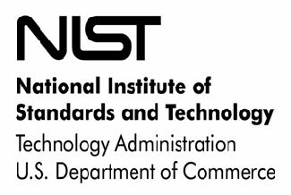
Ramaswamy Chandramouli Ketan Mehta Pius A. Uzamere II David Simon Nabil Ghadiali Andrew P. Founds
Ramaswamy Chandramouli、Ketan Mehta、Pius A. Uzamere II、David Simon、Nabil Ghadiali、Andrew P. Founds
未レビュー訳I N F O R M A T I O N S E C U R I T Y
情報セキュリティ
未レビュー訳Computer Security Division Information Technology Laboratory National Institute of Standards and Technology Gaithersburg, MD, 20899-8930
コンピュータセキュリティ部門 情報技術研究所 国立標準技術研究所 Gaithersburg, MD, 20899-8930
未レビュー訳July 2006
2006年7月
未レビュー訳


U.S. Department of Commerce Carlos M. Gutierrez, Secretary
米国商務省 Carlos M. Gutierrez, 長官
未レビュー訳National Institute of Standards and Technology William. A. Jeffrey, Director
国立標準技術研究所 William. A. Jeffrey, 所長
未レビュー訳REPORTS ON COMPUTER SYSTEMS TECHNOLOGY
コンピュータシステム技術に関する報告書
未レビュー訳The Information Technology Laboratory (ITL) at the National Institute of Standards and Technology (NIST) promotes the U.S. economy and public welfare by providing technical leadership for the Nation’s measurement and standards infrastructure. ITL develops tests, test methods, reference data, proof of concept implementations, and technical analyses to advance the development and productive use of information technology. ITL’s responsibilities include the development of management, administrative, technical, and physical standards and guidelines for the cost-effective security and privacy of non-national security-related information in Federal information systems. This special publication 800-series reports on ITL’s research, guidelines, and outreach efforts in information system security, and its collaborative activities with industry, government, and academic organizations.
国立標準技術研究所（NIST）の情報技術研究所（ITL）は、国家の計測および標準インフラストラクチャに技術的リーダーシップを提供することで、米国経済と公共の福祉を促進している。ITLは、情報技術の開発と生産的な利用を促進するため、試験、試験方法、参照データ、概念実証実装、および技術分析を開発している。ITLの責務には、連邦情報システムにおける国家安全保障関連以外の情報の費用対効果の高いセキュリティとプライバシーのための管理、運用、技術、および物理的な標準とガイドラインの策定が含まれる。この特別刊行物800シリーズは、情報システムセキュリティに関するITLの研究、ガイドライン、普及活動、および産業界、政府、学術機関との協力活動を報告する。
未レビュー訳National Institute of Standards and Technology Special Publication 800-85B, 164 pages (July 2006)
国立標準技術研究所 特別刊行物 800-85B、164ページ（2006年7月）
未レビュー訳Page ii
ページ ii
未レビュー訳Acknowledgements
謝辞
未レビュー訳The authors wish to thank their colleagues who reviewed drafts of this document and contributed to its development. The authors also gratefully acknowledge and appreciate the many contributions from the public and private sectors whose thoughtful and constructive contribution improved the quality and usefulness of this publication.
著者らは、本書の草稿をレビューし、その作成に貢献した同僚に感謝する。また著者らは、本刊行物の品質と有用性を高めた、公共部門および民間部門からの多くの思慮深く建設的な貢献に深く感謝し、謝意を表する。
未レビュー訳Page iii
ページ iii
未レビュー訳Executive Summary
概要
未レビュー訳Homeland Security Presidential Directive 12 (HSPD-12) called for a new standard to be adopted governing the use of common identity credentials for physical and logical access to Federal government locations and systems. The Personal Identity Verification (PIV) standard for Federal Employees and Contractors, Federal Information Processing Standard 201 (FIPS201), was developed to establish government-wide identity credentials. Credentials are issued to individuals whose true identity has been verified and whose need for the credential has been established and authorized by proper authorities.
国土安全保障大統領指令12（HSPD-12）は、連邦政府の施設およびシステムへの物理的・論理的アクセスに共通の本人確認証明情報を使用することを規定する新たな標準の採用を求めた。連邦職員および請負業者向け個人識別検証（PIV）標準である連邦情報処理標準201（FIPS201）は、政府全体で使用する本人確認証明情報を確立するために策定された。証明情報は、真の本人性が検証され、その証明情報の必要性が確立され、適切な当局によって承認された個人に発行される。
未レビュー訳FIPS201 describes a variety of data model components as a part of the PIV logical credentials. Such components include biometric elements in the form of fingerprint information and facial imagery and security elements such as electronic keys, certificates, and signatures. FIPS201 incorporates by reference NIST Special Publication 800-73 (SP80073), which specifies elements related to the PIV card interface, NIST Special Publication 800-76 (SP80076), which specifies the biometric requirements, and NIST Special Publication 800-78 (SP80078) which specifies acceptable cryptographic algorithms and key sizes for PIV systems.
FIPS201は、PIV論理証明情報の一部として、さまざまなデータモデル構成要素を記述する。これらの構成要素には、指紋情報や顔画像などの生体要素、および電子鍵、証明書、署名などのセキュリティ要素が含まれる。FIPS201は、PIVカードインターフェースに関連する要素を規定するNIST特別刊行物800-73（SP80073）、生体認証要件を規定するNIST特別刊行物800-76（SP80076）、ならびにPIVシステムで許容される暗号アルゴリズムと鍵長を規定するNIST特別刊行物800-78（SP80078）を参照により取り込んでいる。
未レビュー訳A robust testing framework and guidance to provide assurance that a particular component or system is compliant with FIPS201 and supporting standards should exist to build the necessary PIV infrastructure to support common unified processes and systems for government-wide use. NIST developed test guidance in two parts. The first part addresses test requirements for interface to the PIV card and are provided in SP80085A. The second part provides test requirements for the PIV data model and is provided in this document. This document specifies the derived test requirements, and the detailed test assertions and conformance tests for testing the PIV data model.
政府全体で共通の統一されたプロセスおよびシステムを支えるために必要なPIVインフラストラクチャを構築するには、特定のコンポーネントまたはシステムがFIPS201および関連標準に適合していることを保証する、堅牢な試験フレームワークとガイダンスが存在すべきである。NISTは試験ガイダンスを2部構成で策定した。第1部はPIVカードとのインターフェースに関する試験要件を扱い、SP80085Aに記載されている。第2部はPIVデータモデルの試験要件を扱い、本書に記載されている。本書は、導出された試験要件、詳細な試験アサーション、およびPIVデータモデルを試験するための適合性試験を規定する。
未レビュー訳Page iv
ページ iv
未レビュー訳Table of Contents
目次
未レビュー訳1. Introduction — 1
1. はじめに — 1
未レビュー訳1.1 Authority — 1
1.1 権限 — 1
未レビュー訳1.2 Purpose and Scope — 1
1.2 目的と適用範囲 — 1
未レビュー訳1.3 Audience and Assumptions — 2
1.3 対象読者と前提 — 2
未レビュー訳2. Conformance Test Overview — 3
2. 適合性試験の概要 — 3
未レビュー訳2.1 Test Architecture — 3
2.1 試験アーキテクチャ — 3
未レビュー訳2.2 Test Methodology — 4
2.2 試験方法 — 4
未レビュー訳2.3 Test Set-up — 5
2.3 試験の準備 — 5
未レビュー訳2.4 Test Areas — 5
2.4 試験領域 — 5
未レビュー訳2.4.1 BER-TLV Format Conformance — 5
2.4.1 BER-TLV形式の適合性 — 5
未レビュー訳2.4.2 Digital Signature Blocks Conformance — 5
2.4.2 デジタル署名ブロックの適合性 — 5
未レビュー訳2.4.3 Biometric Data Objects Conformance — 6
2.4.3 生体データオブジェクトの適合性 — 6
未レビュー訳2.4.4 Certificate Profile Conformance — 6
2.4.4 証明書プロファイルの適合性 — 6
未レビュー訳3. Test Methodology — 7
3. 試験方法 — 7
未レビュー訳3.1 Derived Test Requirements — 7
3.1 導出試験要件 — 7
未レビュー訳3.2 Test Assertions — 7
3.2 試験アサーション — 7
未レビュー訳4. BER-TLV DTRs — 9
4. BER-TLV DTR — 9
未レビュー訳4.1 BER-TLV Testing — 9
4.1 BER-TLV試験 — 9
未レビュー訳4.2 Card Capability Container (CCC) — 9
4.2 カード能力コンテナ（CCC） — 9
未レビュー訳4.3 Card Holder Unique Identifier (CHUID) — 9
4.3 カード保有者一意識別子（CHUID） — 9
未レビュー訳4.4 Biometric Fingerprint — 10
4.4 生体指紋 — 10
未レビュー訳4.5 Biometric Facial — 10
4.5 生体顔画像 — 10
未レビュー訳4.6 Security Object — 10
4.6 セキュリティオブジェクト — 10
未レビュー訳5. Biometric Data — 11
5. 生体データ — 11
未レビュー訳5.1 Common Header for PIV Biometric Data — 11
5.1 PIV生体データの共通ヘッダー — 11
未レビュー訳5.2 Fingerprint Template for Storage on PIV Card — 13
5.2 PIVカードに格納する指紋テンプレート — 13
未レビュー訳5.3 Facial Image Stored on PIV Card — 16
5.3 PIVカードに格納する顔画像 — 16
未レビュー訳6. Signed Data Elements — 18
6. 署名付きデータ要素 — 18
未レビュー訳6.1 Card Holder Unique Identifier — 18
6.1 カード保有者一意識別子 — 18
未レビュー訳6.1.1 Asymmetric Signature Conformance — 18
6.1.1 非対称署名の適合性 — 18
未レビュー訳6.1.2 Certificate that signs the CHUID — 20
6.1.2 CHUIDに署名する証明書 — 20
未レビュー訳Page v
ページ v
未レビュー訳6.2 Biometric Fingerprint — 21
6.2 生体指紋 — 21
未レビュー訳6.2.1 Asymmetric Signature Conformance — 21
6.2.1 非対称署名の適合性 — 21
未レビュー訳6.2.2 Certificate that signs the biometric fingerpint — 24
6.2.2 生体指紋に署名する証明書 — 24
未レビュー訳6.3 Biometric Facial Image — 24
6.3 生体顔画像 — 24
未レビュー訳6.3.1 Asymmetric Signature Conformance — 24
6.3.1 非対称署名の適合性 — 24
未レビュー訳6.3.2 Certificate that signs the biometric facial image — 27
6.3.2 生体顔画像に署名する証明書 — 27
未レビュー訳6.4 Security Object — 27
6.4 セキュリティオブジェクト — 27
未レビュー訳6.4.1 Data Integrity Check — 27
6.4.1 データ完全性チェック — 27
未レビュー訳6.4.2 Asymmetric Signature Conformance — 28
6.4.2 非対称署名の適合性 — 28
未レビュー訳6.4.3 Certificate that signs the Security Object — 29
6.4.3 セキュリティオブジェクトに署名する証明書 — 29
未レビュー訳7. Asymmetric Key Pairs — 30
7. 非対称鍵ペア — 30
未レビュー訳7.1 PIV Authentication Key — 30
7.1 PIV認証鍵 — 30
未レビュー訳7.1.1 Certificate Profile Conformance — 30
7.1.1 証明書プロファイルの適合性 — 30
未レビュー訳7.1.2 Key Pair and Certificate Conformance — 32
7.1.2 鍵ペアおよび証明書の適合性 — 32
未レビュー訳7.2 Digital Signature Key — 33
7.2 デジタル署名鍵 — 33
未レビュー訳7.2.1 Certificate Profile Conformance — 33
7.2.1 証明書プロファイルの適合性 — 33
未レビュー訳7.2.2 Key Pair and Certificate Conformance — 34
7.2.2 鍵ペアおよび証明書の適合性 — 34
未レビュー訳7.3 Key Management Key — 35
7.3 鍵管理鍵 — 35
未レビュー訳7.3.1 Certificate Profile Conformance — 35
7.3.1 証明書プロファイルの適合性 — 35
未レビュー訳7.3.2 Key Pair and Certificate Conformance — 36
7.3.2 鍵ペアおよび証明書の適合性 — 36
未レビュー訳7.4 Card Authentication Key — 37
7.4 カード認証鍵 — 37
未レビュー訳7.4.1 Certificate Profile Conformance — 37
7.4.1 証明書プロファイルの適合性 — 37
未レビュー訳7.4.2 Key Pair and Certificate Conformance — 39
7.4.2 鍵ペアおよび証明書の適合性 — 39
未レビュー訳8. BER-TLV Test Assertions — 40
8. BER-TLVテストアサーション — 40
未レビュー訳8.1 “Card Capabilities Container” Data Object — 40
8.1 「カード機能コンテナ」データオブジェクト — 40
未レビュー訳8.2 “Card Holder Unique Identifier” Data Object — 41
8.2 「カード保有者一意識別子」データオブジェクト — 41
未レビュー訳8.3 “X.509 Certificate for PIV Authentication” Data Object — 42
8.3 「PIV認証用X.509証明書」データオブジェクト — 42
未レビュー訳8.4 “Card Holder Fingerprints” Data Object — 42
8.4 「カード保有者指紋」データオブジェクト — 42
未レビュー訳8.5 “Printed Information” Data Object — 43
8.5 「印刷情報」データオブジェクト — 43
未レビュー訳8.6 “Card Holder Facial Image” Data Object — 43
8.6 「カード保持者の顔画像」データオブジェクト — 43
未レビュー訳8.7 “X.509 Certificate for Digital Signature” Data Object — 44
8.7 「デジタル署名用X.509証明書」データオブジェクト — 44
未レビュー訳8.8 “X.509 Certificate for Key Management” Data Object — 45
8.8 「鍵管理用X.509証明書」データオブジェクト — 45
未レビュー訳8.9 “X.509 Certificate for Card Authentication” Data Object — 45
8.9 「カード認証用X.509証明書」データオブジェクト — 45
未レビュー訳Page vi
ページ vi
未レビュー訳8.10 “Security Object” Data Object — 46
8.10 「セキュリティオブジェクト」データオブジェクト — 46
未レビュー訳9. Biometric Data Object Test Assertions — 48
9. 生体データオブジェクトのテストアサーション — 48
未レビュー訳9.1 CBEFF Patron Format for Fingerprint Template — 48
9.1 指紋テンプレート用CBEFFパトロン形式 — 48
未レビュー訳9.1.1 CBEFF Structure for Fingerprint Template — 48
9.1.1 指紋テンプレート用CBEFF構造 — 48
未レビュー訳9.1.2 CBEFF Header for Fingerprint Template — 48
9.1.2 指紋テンプレート用CBEFFヘッダー — 48
未レビュー訳9.2 CBEFF Patron Format for Facial Image — 57
9.2 顔画像用CBEFFパトロン形式 — 57
未レビュー訳9.2.1 CBEFF Structure for Facial Image — 57
9.2.1 顔画像用CBEFF構造 — 57
未レビュー訳9.2.2 CBEFF Header for Facial Image — 57
9.2.2 顔画像用CBEFFヘッダー — 57
未レビュー訳9.3 Fingerprint Template — 66
9.3 指紋テンプレート — 66
未レビュー訳9.3.1 General Record Header Conformance — 66
9.3.1 一般レコードヘッダーの適合性 — 66
未レビュー訳9.3.2 View Header Conformance — 67
9.3.2 ビューヘッダーの適合性 — 67
未レビュー訳9.3.3 Fingerprint Minutiae Data — 68
9.3.3 指紋細部点データ — 68
未レビュー訳9.4 Facial Image on PIV Card — 70
9.4 PIVカード上の顔画像 — 70
未レビュー訳9.4.1 Facial Image Header Conformance — 70
9.4.1 顔画像ヘッダーの適合性 — 70
未レビュー訳9.4.2 Facial Image Data Conformance — 70
9.4.2 顔画像データの適合性 — 70
未レビュー訳10. Signed Data Elements Test Assertions — 72
10. 署名付きデータ要素のテストアサーション — 72
未レビュー訳10.1 Card Holder Unique Identifier (CHUID) — 72
10.1 カード保持者一意識別子（CHUID）— 72
未レビュー訳10.1.1 Signature Block Contents — 72
10.1.1 署名ブロックの内容 — 72
未レビュー訳10.1.2 Embedded Certificate — 80
10.1.2 埋め込み証明書 — 80
未レビュー訳10.2 Fingerprint Biometric — 82
10.2 指紋生体情報 — 82
未レビュー訳10.2.1 Signature Block Contents — 82
10.2.1 署名ブロックの内容 — 82
未レビュー訳10.2.2 Embedded Certificate — 92
10.2.2 埋め込み証明書 — 92
未レビュー訳10.3 Facial Image Biometric — 94
10.3 顔画像生体情報 — 94
未レビュー訳10.3.1 Signature Block Contents — 94
10.3.1 署名ブロックの内容 — 94
未レビュー訳10.3.2 Embedded Certificate — 105
10.3.2 埋め込み証明書 — 105
未レビュー訳10.4 Security Object — 107
10.4 セキュリティオブジェクト — 107
未レビュー訳10.4.1 Data Integrity — 107
10.4.1 データ完全性 — 107
未レビュー訳10.4.2 Signature Block Contents — 107
10.4.2 署名ブロックの内容 — 107
未レビュー訳11. PKI Certificate Profile Test Assertions — 114
11. PKI証明書プロファイルのテストアサーション — 114
未レビュー訳11.1 PIV Authentication Certificate — 114
11.1 PIV認証証明書 — 114
未レビュー訳11.1.1 SP 800-78 Algorithms Conformance — 114
11.1.1 SP 800-78アルゴリズムの適合性 — 114
未レビュー訳11.1.2 Data Integrity Checks — 116
11.1.2 データ完全性チェック — 116
未レビュー訳11.2 Digital Signature Certificate — 123
11.2 デジタル署名証明書 — 123
未レビュー訳Page vii
ページ vii
未レビュー訳11.2.1 SP 800-78 Algorithm Conformance — 123
11.2.1 SP 800-78アルゴリズム適合性 — 123
未レビュー訳11.2.2 Data Integrity Checks — 125
11.2.2 データ完全性検査 — 125
未レビュー訳11.3 Key Management Certificate — 129
11.3 鍵管理証明書 — 129
未レビュー訳11.3.1 SP 800-78 Algorithm Conformance — 129
11.3.1 SP 800-78アルゴリズム適合性 — 129
未レビュー訳11.3.2 Data Integrity Checks — 131
11.3.2 データ完全性検査 — 131
未レビュー訳11.4 Card Authentication Certificate (if the Card uses asymmetric key) — 135
11.4 カードが非対称鍵を使用する場合のカード認証証明書 — 135
未レビュー訳11.4.1 SP 800-78 Algorithm Conformance — 135
11.4.1 SP 800-78アルゴリズム適合性 — 135
未レビュー訳11.4.2 Data Integrity Checks — 137
11.4.2 データ完全性検査 — 137
未レビュー訳List of Appendices
付録一覧
未レビュー訳Appendix A— DTRs to Test Assertion Mapping..................................................... A-1
付録A— DTRとテストアサーションの対応 — A-1
未レビュー訳A.1 BER-TLV Mapping....................................................................................... A-1
A.1 BER-TLV対応表 — A-1
未レビュー訳A.2 Biometric Data Mapping .............................................................................. A-2
A.2 生体データの対応表 — A-2
未レビュー訳A.3 CHUID Mapping .......................................................................................... A-4
A.3 CHUIDの対応表 — A-4
未レビュー訳A.4 Biometric Fingerprint Mapping..................................................................... A-6
A.4 指紋生体情報の対応表 — A-6
未レビュー訳A.5 Biometric Facial Image................................................................................ A-7
A.5 顔画像の対応表 — A-7
未レビュー訳A.6 Security Object ............................................................................................ A-9
A.6 セキュリティオブジェクト — A-9
未レビュー訳A.7 PIV Authentication Key................................................................................ A-9
A.7 PIV認証鍵 — A-9
未レビュー訳A.8 Digital Signature Key................................................................................. A-11
A.8 デジタル署名鍵 — A-11
未レビュー訳A.9 Key Management Key ............................................................................... A-11
A.9 鍵管理鍵 — A-11
未レビュー訳A.10 Card Authentication Key............................................................................ A-12
A.10 カード認証鍵 — A-12
未レビュー訳Appendix B— Bibliography ...................................................................................... B-1
付録B—参考文献 — B-1
未レビュー訳Appendix C— Glossary of Terms and Acronyms................................................... C-1
付録C—用語および略語集 — C-1
未レビュー訳C.1 Glossary of Terms ....................................................................................... C-1
C.1 用語集 — C-1
未レビュー訳C.2 Acronyms .................................................................................................... C-1
C.2 略語一覧 — C-1
未レビュー訳Page viii
ページ viii
未レビュー訳1. Introduction
1. 序論
未レビュー訳1.1 Authority
1.1 権限
未レビュー訳This document has been developed by the National Institute of Standards and Technology (NIST) in furtherance of its statutory responsibilities under the Federal Information Security Management Act (FISMA) of 2002, Public Law 107-347.
本書は、2002年連邦情報セキュリティ管理法（FISMA）、公法107-347に基づく法定責任を遂行するため、米国国立標準技術研究所（NIST）が策定したものである。
未レビュー訳NIST is responsible for developing standards and guidelines, including minimum requirements, for providing adequate information security for all agency operations and assets, but such standards and guidelines shall not apply to national security systems. This recommendation is consistent with the requirements of the Office of Management and Budget (OMB) Circular A-130, Section 8b(3), Securing Agency Information Systems, as analyzed in A-130, Appendix IV: Analysis of Key Sections. Supplemental information is provided in A-130, Appendix III.
NISTは、すべての政府機関の業務および資産に対して適切な情報セキュリティを確保するため、最低要件を含む標準およびガイドラインの策定に責任を負う。ただし、こうした標準およびガイドラインは国家安全保障システムには適用されない。本勧告は、行政管理予算局（OMB）通達A-130第8b(3)項「政府機関の情報システムの保護」と、その分析を示すA-130付録IV「主要項目の分析」の要件に整合している。補足情報はA-130付録IIIに記載されている。
未レビュー訳This recommendation has been prepared for use by Federal agencies. It may be used by non-governmental organizations on a voluntary basis and is not subject to copyright. Nothing in this document should be taken to contradict standards and guidelines made mandatory and binding on Federal agencies by the Secretary of Commerce under statutory authority. Nor should this recommendation be interpreted as altering or superseding the existing authorities of the Secretary of Commerce, Director of OMB, or any other Federal official.
本勧告は連邦機関での利用を目的として作成された。民間組織も任意で利用でき、著作権の対象ではない。本書のいかなる内容も、法定権限に基づき商務長官が連邦機関に義務付け、拘束力を持たせた標準およびガイドラインと矛盾すると解釈してはならない。また、本勧告は、商務長官、行政管理予算局（OMB）局長、その他の連邦政府職員が有する既存の権限を変更または置き換えるものと解釈してはならない。
未レビュー訳1.2 Purpose and Scope
1.2 目的と適用範囲
未レビュー訳The Federal Information Processing Standard 201 (FIPS201) establishes a system for verifying an individual employee or contractor’s identity in a reliable, secure, and interoperable manner across the Federal government. Credentials are issued to individuals whose true identity has been verified and whose need for the credential has been established and authorized by proper authorities. FIPS201 also describes a variety of authentication mechanisms, including the use of cryptographic mechanisms and biometric data belonging to cardholders.
連邦情報処理標準201（FIPS201）は、連邦政府全体で職員または請負業者の身元を信頼性、安全性、相互運用性をもって確認する仕組みを定める。本人確認を経て真の身元が確認され、適切な当局が資格情報の必要性を認定し承認した個人に、資格情報が発行される。FIPS201は、暗号メカニズムやカード保有者の生体データを含むさまざまな認証メカニズムについても説明する。
未レビュー訳In order to build the necessary Personal Identity Verification (PIV) infrastructure to support common unified processes and systems for government-wide use, there must be a robust testing framework to provide assurance that a particular component or system is compliant with FIPS201 and companion specifications. This test guidance document specifies the derived test requirements, detailed test assertions, and conformance tests for testing the data elements of the PIV system as per specifications laid out in FIPS201, SP80073, SP80076, and SP80078.
政府全体で共通のプロセスとシステムを支えるために必要な個人識別検証（PIV）基盤を構築するには、特定のコンポーネントまたはシステムがFIPS201および関連仕様に適合していることを保証する、堅牢な試験フレームワークが必要である。本試験ガイダンス文書は、FIPS201、SP80073、SP80076、SP80078に定める仕様に従ってPIVシステムのデータ要素を試験するための派生試験要件、詳細なテストアサーション、および適合性試験を規定する。
未レビュー訳This document does not provide conformance tests for any other software used in the PIV system such as the back-end access control software, card issuance software, and specialized service provider software. Specifically, this document does not provide test requirements for the PIV card interface, FIPS 140-2 validation, key generation and certificate binding, cryptographic algorithms, biometric enrollment and verification processes1, performance of biometric products, and non-PIV aspects of external biometric standards and profiles.
本書は、バックエンドのアクセス制御ソフトウェア、カード発行ソフトウェア、専用サービスプロバイダー用ソフトウェアなど、PIVシステムで使用される他のソフトウェアの適合性試験を規定しない。具体的には、PIVカードのインタフェース、FIPS 140-2検証、鍵生成および証明書の紐付け、暗号アルゴリズム、生体情報の登録・検証プロセス¹、生体認証製品の性能、外部の生体情報標準およびプロファイルのうちPIVに関係しない側面について、試験要件を規定しない。
未レビュー訳This document provides technical guidance on the methodology to be used during testing applicable components, but does not provide normative guidance on which entities will execute the tests. Also, the test methodologies defined in this document are not designed to test business processes or to verify compliance with external applicable standards. For example, this document does not provide test guidance to determine how good a user’s Personal Identification Number (PIN) choice is or how access rights are granted to employees.
本書は、該当するコンポーネントの試験で使用する方法に関する技術的ガイダンスを提供するが、どの組織が試験を実施するかについて規範的な指針は示さない。また、本書で定義する試験方法は、業務プロセスの試験や、外部の適用可能な標準への適合性確認を目的としていない。たとえば、利用者が選択した個人識別番号（PIN）の安全性や、従業員へのアクセス権付与方法を評価するための試験ガイダンスは提供しない。
未レビュー訳1.3 Audience and Assumptions
1.3 対象読者と前提
未レビュー訳This document is targeted at vendors and integrators of PIV components, as well as the entities that will conduct tests on such components. Readers are assumed to have a working knowledge of FIPS201, PIV guidance, and applicable technologies.
本書の対象読者は、PIVコンポーネントのベンダーおよびインテグレーター、ならびにそうしたコンポーネントの試験を実施する組織である。読者は、FIPS201、PIV関連ガイダンス、および適用技術に関する実務知識を有するものとする。
未レビュー訳This document will:
本書は次の事項を実現する。
未レビュー訳Enable developers of PIV components to develop their modules to be testable for requirements specified in FIPS201, SP80073, SP80076, and SP80078.
FIPS201、SP80073、SP80076、およびSP80078で規定される要件を試験可能にするため、PIVコンポーネントの開発者が各モジュールを開発できるようにする。
未レビュー訳Enable developers of PIV components to develop self-tests as part of the development effort.
PIVコンポーネントの開発者が、開発作業の一環として自己試験を開発できるようにする。
未レビュー訳Enable testers to develop tests that cover the test suite provided in this document.
試験担当者が、本書に示す試験一式を網羅する試験を開発できるようにする。
未レビュー訳2. Conformance Test Overview
2. 適合性試験の概要
未レビュー訳The conformance testing guidelines in this document applies to the testing of a PIV data model. The data model requirements are extracted from FIPS201, SP80073, SP80076, and SP80078. This overview section provides a high level conformance test architecture for testing the PIV data model. The conformance test architecture is confined to the end result of a personalized PIV card. In other words, the conformance test approach views the card issuance system as a “black box,” meaning that the interface of that system is opaque and its implementation details are not relevant to the testing. The PIV data model testing operates under the assumption that the PIV card being tested has already been personalized as described in Sections 2.3 and 5.3 of FIPS201. The following sections provide the details of data model testing, test architecture, test methodology, and test areas.
本書の適合性試験ガイドラインは、PIVデータモデルの試験に適用される。データモデル要件は、FIPS201、SP80073、SP80076、およびSP80078から抽出されている。本概要節では、PIVデータモデルを試験するための高水準の適合性試験アーキテクチャを示す。適合性試験アーキテクチャの対象は、個人化済みPIVカードの最終成果物に限定される。言い換えると、適合性試験のアプローチでは、カード発行システムを「ブラックボックス」として扱う。つまり、そのシステムのインターフェースは不透明であり、実装の詳細は試験に関係しない。PIVデータモデル試験は、試験対象のPIVカードがFIPS201の2.3節および5.3節に記載のとおり、すでに個人化されているという前提で実施する。以下の節では、データモデル試験、試験アーキテクチャ、試験方法、および試験領域の詳細を示す。
未レビュー訳2.1 Test Architecture
2.1 試験アーキテクチャ
未レビュー訳The conceptual architecture for data model testing is shown in Figure 1. The conformance test in this document applies to the area highlighted with dashed lines. SP80085A addresses the writing and extracting of data from the card and subsequently, those processes are not addressed in this document.
データモデル試験の概念アーキテクチャを図1に示す。本書の適合性試験は、破線で強調された領域に適用される。SP80085Aはカードへのデータ書き込みとカードからのデータ抽出を扱うため、これらのプロセスは本書では扱わない。
未レビュー訳原本の表画像
Host PC
ホストPC
未レビュー訳原本の表画像
Smart Card
スマートカード
未レビュー訳原本の表画像
Reader
リーダー
未レビュー訳PIV Card Application
PIVカードアプリケーション
未レビュー訳原本の表画像
PIV CARD
PIVカード
未レビュー訳原本の表画像
(FIPS201,
(FIPS201,
未レビュー訳原本の表画像
SP80073, SP80076, SP80078)
SP80073、SP80076、SP80078)
未レビュー訳Figure 1: PIV Conformance Test Architecture
図1：PIV適合性試験アーキテクチャ
未レビュー訳The PIV data model defines the logical use of the on-card application space including the SP80073 required data objects and data elements along with the size and structure of each object.
PIVデータモデルは、SP80073で要求されるデータオブジェクトおよびデータ要素を含む、カード上のアプリケーション領域の論理的な使用方法と、各オブジェクトのサイズおよび構造を定義する。
未レビュー訳The PIV data model test includes the testing of the following aspects of PIV Data:
PIVデータモデル試験には、PIVデータの以下の側面の試験が含まれる。
未レビュー訳Basic Encoding Rules Tag-Length-Value (BER-TLV) Format Conformance as per Appendix A of SP80073 for all objects. Conformance of the Signature Block to Cryptographic Message Syntax (CMS) Signature format for all signed objects. Conformance to Common Biometric Exchange Formats Framework (CBEFF) Profile and American National Standards Institute (ANSI) International Committee for Information Technology Standards (INCITS) 378 and 385 Profiles respectively for Card Holder Fingerprint and Facial Image objects respectively. Conformance to Federal Identity Credentialing Committee (FICC) profiles for all Public Key Infrastructure (PKI) Certificates.
SP80073の付録Aに従った、すべてのオブジェクトの基本符号化規則タグ長値（BER-TLV）形式への適合性。すべての署名付きオブジェクトについて、署名ブロックが暗号メッセージ構文（CMS）署名形式に適合していること。カード保有者の指紋オブジェクトおよび顔画像オブジェクトについて、それぞれ共通生体情報交換形式フレームワーク（CBEFF）プロファイルならびに米国規格協会（ANSI）国際情報技術標準化委員会（INCITS）378および385プロファイルへの適合性。すべての公開鍵基盤（PKI）証明書について、連邦ID資格情報委員会（FICC）プロファイルへの適合性。
未レビュー訳2.2 Test Methodology
2.2 試験方法
未レビュー訳The data model testing was developed through the following two-step process:
データモデル試験は、以下の2段階のプロセスで策定された。
未レビュー訳Create derived test requirements (DTRs) — These are constructed from the data format and content requirements in FIPS201, SP80073, SP80076, and SP80078 specifications. + Develop test assertions — These provide the tests that need to be performed to test each of the DTRs. The test assertions will include testing of data formats, values in the individual fields, relationship among values in multiple fields and validate the computations. Also, the test assertions include testing of the optional fields when they
導出試験要件（DTR）の作成 — これらは、FIPS201、SP80073、SP80076、およびSP80078の仕様にあるデータ形式および内容の要件から構成される。 + 試験アサーションの策定 — これらは、各DTRを試験するために実施する必要がある試験を示す。試験アサーションには、データ形式、個々のフィールドの値、複数フィールド間の値の関係、および計算結果の検証に関する試験が含まれる。また、試験アサーションには、オプションフィールドが存在する場合の試験も含まれる。
未レビュー訳are present.
存在する場合。
未レビュー訳Figure 2 depicts the test methodology adopted to provide complete guidance for testing PIV conformant products. SP80085A provides the DTRs and test assertions for the interfaces to the PIV smart card and the PIV middleware. This document provides DTRs and test assertions for the identity credentials stored on the PIV card.
図2は、PIV適合製品の試験に関する完全なガイダンスを提供するために採用した試験方法を示す。SP80085Aは、PIVスマートカードおよびPIVミドルウェアとのインターフェースに関するDTRと試験アサーションを示す。本書は、PIVカードに格納された本人確認証明情報に関するDTRと試験アサーションを示す。
未レビュー訳Inputs
入力
未レビュー訳Process
処理
未レビュー訳Outputs
出力
未レビュー訳Derived Test Requirements
導出試験要件
未レビュー訳FFIIPPSS 220011
FFIIPPSS 220011
未レビュー訳原本の表画像
&
未レビュー訳SSPP 880000--7733
SSPP 880000--7733
未レビュー訳Test Assertions
試験アサーション
未レビュー訳SSPP 880000--7766
SSPP 880000--7766
未レビュー訳NIST Test Guidance — SP 800-85A and SP 800-85B
NIST試験ガイダンス — SP 800-85AおよびSP 800-85B
未レビュー訳SSPP 880000--7788
SSPP 880000--7788
未レビュー訳TTeesstt RReessuullttss
TTeesstt RReessuullttss
未レビュー訳Interface
インターフェース
未レビュー訳Data Model
データモデル
未レビュー訳Testing
試験
未レビュー訳Testing
試験
未レビュー訳Toolkit
ツールキット
未レビュー訳Toolkit
ツールキット
未レビュー訳Figure 2: PIV Test Methodology
図2：PIV試験方法論
未レビュー訳2.3 Test Set-up
2.3 試験の準備
未レビュー訳The test system consists of the following components:
試験システムは、次の構成要素から成る：
未レビュー訳A test toolkit application software that resides on a personal computer.
パーソナルコンピューター上で動作する試験ツールキットアプリケーションソフトウェア。
未レビュー訳An ISO7816 and Personal Computer / Smart Card (PC/SC) compliant contact-based smart card reader.
ISO7816およびPersonal Computer / Smart Card (PC/SC)に準拠した接触型スマートカードリーダー。
未レビュー訳A mechanism to input PIN that can be transmitted to the smart card reader. Examples of such mechanisms are a PIN pad or a keyboard.
スマートカードリーダーに送信できるPINを入力する仕組み。このような仕組みの例として、PINパッドまたはキーボードがある。
未レビュー訳A set of test personalized PIV cards whose applications and interfaces are compliant with SP80073. All personalized biometric information is assumed to be collected and processed by template generation and matching implementations that have been tested against minimum performance qualification criteria established by NIST, OMB, and by Federal agencies, as appropriate.
アプリケーションおよびインターフェースがSP80073に準拠する、試験用に個人化されたPIVカード一式。個人化された生体情報はすべて、適切な場合、NIST、OMBおよび連邦機関が定めた最低性能認定基準に照らして試験済みのテンプレート生成および照合実装によって収集・処理されているものとする。
未レビュー訳2.4 Test Areas
2.4 試験対象領域
未レビュー訳The test assertions in this document will validate that all PIV data objects conform to their respective requirements. Conformance criteria includes correct formatting and, when appropriate, context specific content. Additionally, conformance will be based on correct computation of content such as digital signatures. The DTRs and test assertions are designed to validate each PIV data object such that the following three statements are true for the objects:
本書の試験アサーションは、すべてのPIVデータオブジェクトがそれぞれの要件に適合していることを検証する。適合基準には、正しい形式であること、および該当する場合は文脈に即した内容であることが含まれる。また、デジタル署名などの内容が正しく計算されていることも適合の基準となる。DTRおよび試験アサーションは、各PIVデータオブジェクトを検証し、次の3つの記述が当該オブジェクトについて真であることを確認するよう設計されている：
未レビュー訳PIV containers are formatted correctly,
PIVコンテナが正しく形式化されていること、
未レビュー訳Field values are in accordance with the specifications, and
フィールド値が仕様に従っていること、および
未レビュー訳Data consistency and value computations such as signatures are accurate.
データの一貫性ならびに署名などの値の計算が正確であること。
未レビュー訳Again, these requirements are not designed to test business processes or to verify external compliance with applicable standards. For further clarification of the document scope, refer to Section 1.2, Purpose and Scope.
繰り返しになるが、これらの要件は業務プロセスを試験したり、適用される規格への外部適合性を検証したりするためのものではない。本書の適用範囲の詳細については、1.2節「目的と適用範囲」を参照。
未レビュー訳2.4.1 BER-TLV Format Conformance
2.4.1 BER-TLV形式の適合性
未レビュー訳The tags and lengths in various data objects shall conform to specifications in Appendix A of SP80073.
各種データオブジェクトのタグおよび長さは、SP80073の付録Aの仕様に適合しなければならない。
未レビュー訳2.4.2 Digital Signature Blocks Conformance
2.4.2 デジタル署名ブロックの適合性
未レビュー訳For all signed objects the fields in the signature block shall conform to the CMS syntax specified in FIPS201.
すべての署名付きオブジェクトについて、署名ブロック内のフィールドはFIPS201で規定されたCMS構文に適合しなければならない。
未レビュー訳2.4.3 Biometric Data Objects Conformance
2.4.3 生体データオブジェクトの適合性
未レビュー訳The two biometric objects, Card Holder Fingerprints and Facial Image (if present on the PIV card), shall conform to the common CBEFF Header format as well as to ANSI/INCITS 378 and ANSI/INCITS 385 profiles respectively.
2つの生体オブジェクトであるカード保有者指紋および顔画像（PIVカードに存在する場合）は、共通CBEFFヘッダー形式に加え、それぞれANSI/INCITS 378およびANSI/INCITS 385のプロファイルに適合しなければならない。
未レビュー訳2.4.4 Certificate Profile Conformance
2.4.4 証明書プロファイルの適合性
未レビュー訳The mandatory PIV Authentication Certificate as well as the optional Digital Signature, Key Management, and Card Authentication (if asymmetric cryptography is used) Certificate shall conform to the certificate profiles as specified in the X.509 Certificate and Certificate Revocation List (CRL) Extensions Profile for the Shared Service Providers (SSP) Program (X509 Extensions).
必須のPIV認証証明書、ならびに任意のデジタル署名、鍵管理、およびカード認証の各証明書（非対称暗号を使用する場合）は、「Shared Service Providers (SSP) Program向けX.509証明書および証明書失効リスト（CRL）拡張プロファイル」（X509 Extensions）に規定された証明書プロファイルに適合しなければならない。
未レビュー訳3. Test Methodology
3. 試験方法論
未レビュー訳3.1 Derived Test Requirements
3.1 導出試験要件
未レビュー訳DTRs show the type of tests required based on the normative specifications in FIPS201 and supporting special publications. These specifications cover expected data object representations and content. Each DTR consists of the following:
DTRは、FIPS201および関連する特別刊行物の規範的仕様に基づき、必要な試験の種類を示す。これらの仕様は、データオブジェクトに期待される表現および内容を扱う。各DTRは次の要素で構成される：
未レビュー訳Actual condition statements taken/derived from the specification — these include conditions for successful command execution for each command as well as exception behaviors explicitly specified by statements using the words “shall,” “must,” and other normative delimiters in the standard. The condition statements are identified by codes starting with ‘AS’ followed by a running sequence.
仕様から採用または導出された実際の条件文。これには、各コマンドの正常な実行条件と、規格内で「shall」「must」などの規範的な限定語を用いて明示された例外時の動作が含まれる。条件文には、「AS」で始まるコードと連番が付される。
未レビュー訳Required Vendor Information — these include information that the vendors (could also be agencies or integrators) are mandated to provide in their documentation. The Required Vendor Information is identified by codes starting with ‘VE’ followed by a running sequence.
必須ベンダー情報 — ベンダー（機関またはインテグレーターの場合もある）が文書で提示することを義務付けられた情報を指す。必須ベンダー情報には、「VE」で始まるコードと連番が付される。
未レビュー訳Required Test Procedures — these are actions that the tester has to perform in order to satisfy the requirements stated in actual condition statements. These include verifying the information mandated in the “Required Vendor Information” for the condition as well as performing software-based tests. Some of the required test procedures do not call explicitly for verification of information in the associated “Required Vendor Information.” In these instances it is implicitly assumed that such information is provided by the vendor and verified by the tester. The Required Test Procedures are identified by codes starting with ‘TE’ followed by a running sequence that denotes the section in this document where they occur.
必須試験手順 — 実際の条件文に記載された要件を満たすために試験者が実施する操作を指す。これには、当該条件に関する「必須ベンダー情報」で義務付けられた情報の検証と、ソフトウェアベースの試験が含まれる。必須試験手順の中には、関連する「必須ベンダー情報」の検証を明示的に求めないものもある。その場合、その情報はベンダーから提供され、試験者が検証するものと暗黙に想定される。必須試験手順には、「TE」で始まるコードと、本書内で該当する節を示す連番が付される。
未レビュー訳Validation of some DTRs are not covered by the test assertions provided in this document. These DTRs require compliance of a component with an external specification or standard such as EFTS. No required test procedures are provided for these DTRs, and a note is added to indicate that “this assertion is externally tested.” The tester is required to check the vendor documentation for claimed compliance with such requirements or confirm the presence of an external test/compliance certificate obtained from the test organization, when applicable.
一部のDTRの検証は、本書に示す試験アサーションの対象外である。これらのDTRでは、EFTSなどの外部仕様または規格に対する構成要素の適合が求められる。これらのDTRには必須試験手順が設けられておらず、「このアサーションは外部で試験される」と示す注記が付される。該当する場合、試験者はベンダーの文書で主張される要件適合を確認するか、試験機関が発行した外部試験／適合証明書の存在を確認する必要がある。
未レビュー訳In some instances, testing of DTRs may not be feasible using the test methodologies described in this document. For example, a test tool built on these methods cannot test the procedure by which fingerprints are taken at an agency PIV installation. Most of these DTRs, however, can be tested by inspection of the system description document. Where this is the case, an adequate description is generally required by the VE section of the DTR. Where testing is not feasible, a note is added to indicate that “this assertion is not separately tested.”
場合によっては、本書に記載された試験方法論を用いてDTRを試験することが実行可能でないことがある。たとえば、これらの方法に基づく試験ツールでは、機関のPIV導入環境で指紋を採取する手順を試験できない。しかし、こうしたDTRの多くは、システム記述文書を点検することで試験できる。その場合、通常、DTRのVE節で十分な説明が求められる。試験が実行可能でない場合は、「このアサーションは個別には試験されない」と示す注記が付される。
未レビュー訳3.2 Test Assertions
3.2 試験アサーション
未レビュー訳Test assertions are statements of behavior, action, or condition that can be measured or tested. They provide the procedures to guide the tester in executing and managing the test. They include purpose of the test, starting conditions and prerequisites, success criteria, and post-test conditions, when applicable. The following four sets of test assertions are included in this document — BER-TLV (Section 8)
試験アサーションとは、測定または試験できる動作、操作、または条件を記述したものである。試験の実行と管理において試験者を導く手順を示す。該当する場合、試験の目的、開始条件と前提条件、合格基準、および試験後の条件を含む。本書には、次の4種類の試験アサーションが含まれる — BER-TLV（8節）
未レビュー訳Biometric data object (Section 9)
生体データオブジェクト（9節）
未レビュー訳Signed data element (Section 10)
署名付きデータ要素（10節）
未レビュー訳PKI certificate profile (Section 11)
PKI証明書プロファイル（11節）
未レビュー訳All the test assertions provided in this document come under PIV data model testing and are based on DTRs in Sections 4, 5, 6, and 7. Specifically, each test assertion makes specific references to the related DTR sections. Overall there is a many-to-many relationship from the test assertions to the DTRs (i.e., one test can map to many DTRs and one DTR can map to many tests). To narrow the search space for cross references, Table 3-1 presents a cross-referencing guide showing the relevant DTR sections and test assertion sections with respect to tests.
本書に記載されるすべてのテストアサーションはPIVデータモデルのテストに該当し、セクション4、5、6、および7のDTRに基づく。具体的には、各テストアサーションは関連するDTRのセクションを明示的に参照する。全体として、テストアサーションとDTRの間には多対多の関係がある（すなわち、1つのテストが複数のDTRに対応し、1つのDTRが複数のテストに対応し得る）。相互参照の検索範囲を絞るため、表3-1に、テストに関係するDTRのセクションとテストアサーションのセクションを示す相互参照ガイドを示す。
未レビュー訳| Category/Classes of Test | DTR Section(s) | Test Assertion Section(s) |
| (1) BER-TLV | Section 4 (Derived from SP80073) | Section 8 |
| (2) Biometric Data | Section 5 (Derived from SP80076) | Section 9 |
| (3) Signed Data Elements | Section 6 (Derived from FIPS201 and SP80078) | Section 10 |
| (4) PKI Certificate Profile | Section 7 (Derived from FIPS201 and SP80078) | Section 11 |
原本の表画像
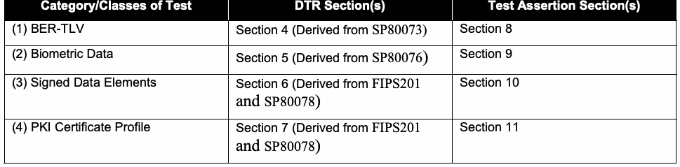
| テストのカテゴリ／クラス | DTRのセクション | テストアサーションのセクション |
| (1) BER-TLV | セクション4（SP80073から導出） | セクション8 |
| (2) 生体データ | セクション5（SP80076から導出） | セクション9 |
| (3) 署名付きデータ要素 | セクション6（FIPS201およびSP80078から導出） | セクション10 |
| (4) PKI証明書プロファイル | セクション7（FIPS201およびSP80078から導出） | セクション11 |
Table 3-1. Cross-referencing Guide
表3-1. 相互参照ガイド
未レビュー訳4. BER-TLV DTRs
4. BER-TLV DTR
未レビュー訳4.1 BER-TLV Testing
4.1 BER-TLVテスト
未レビュー訳AS04.01.01: Part 3 conformant cards shall return all the Tag-Length-Value (TLV) elements of a container in the physical order listed for that container in this data model. VE04.01.01.01: The vendor shall specify in its documentation the format (TLV) and the content of all the elements in each data container on the card. VE04.01.01.02: The vendor shall specify in its documentation that the information provided conforms to SP80073. TE04.01.01.01: The tester shall validate that the formatting, encoding and the content of all the elements in each data container conforms to SP80073.
AS04.01.01: Part 3準拠カードは、このデータモデルでコンテナごとに列挙されている物理的順序ですべてのタグ・長さ・値（TLV）要素を返さなければならない。VE04.01.01.01: ベンダーは、カード上の各データコンテナに含まれるすべての要素の形式（TLV）と内容を文書で規定しなければならない。VE04.01.01.02: ベンダーは、提供する情報がSP80073に適合することを文書で規定しなければならない。TE04.01.01.01: テスターは、各データコンテナのすべての要素の形式、符号化、および内容がSP80073に適合することを検証しなければならない。
未レビュー訳4.2 Card Capability Container (CCC)
4.2 カード機能コンテナ（CCC）
未レビュー訳AS04.02.01: The CCC shall identify the registered data model number 0x10. VE04.02.01.01: The vendor shall specify in its documentation the tags and associated values in the CCC container. VE04.02.01.02: The vendor shall specify presence of the optional fields. TE04.02.01.01: The tester shall validate the format and the content of all the elements in CCC data container on the card. Data read from the card will be validated aginst the vendor provided data.
AS04.02.01: CCCは登録済みデータモデル番号0x10を識別しなければならない。VE04.02.01.01: ベンダーはCCCコンテナ内のタグと対応する値を文書で規定しなければならない。VE04.02.01.02: ベンダーはオプションフィールドの有無を文書で規定しなければならない。TE04.02.01.01: テスターは、カード上のCCCデータコンテナ内のすべての要素の形式と内容を検証しなければならない。カードから読み取ったデータを、ベンダー提供データに照らして検証する。
未レビュー訳TE04.02.01.02: The tester shall validate that the Registered Data Model value is 0x10.
TE04.02.01.02: テスターは、登録済みデータモデルの値が0x10であることを検証しなければならない。
未レビュー訳4.3 Card Holder Unique Identifier (CHUID)
4.3 カード保持者一意識別子（CHUID）
未レビュー訳AS04.03.01: The CHUID on a PIV card shall meet the following requirements: The Federal Agency Smart Credential Number (FASC-N) shall be consistent with the Technical Implementation Guidance Smart Card Enabled Physical Access Control System (TIG SCEPACS) Option for “System Code || Credential Number” to establish a credential number space of 9,999,999,999 credentials.
AS04.03.01: PIVカード上のCHUIDは、次の要件を満たさなければならない。連邦機関スマート資格情報番号（FASC-N）は、資格情報番号空間を9,999,999,999件分確保するため、「システムコード || 資格情報番号」オプションに関するTechnical Implementation Guidance Smart Card Enabled Physical Access Control System（TIG SCEPACS）に整合しなければならない。
未レビュー訳The Global Unique Identifier (GUID) field must be present, and may include either an issuer assigned IPv6 address or be coded as all zeros. The GUID is included to enable future migration away from the FASC-N into a robust numbering scheme for all issued credentials.
グローバル一意識別子（GUID）フィールドは存在しなければならず、発行者が割り当てたIPv6アドレスを含めるか、すべてゼロとして符号化してもよい。GUIDは、発行済みすべての資格情報に対する堅牢な番号体系へFASC-Nから将来移行できるようにするために含まれる。
未レビュー訳The Expiration Date is tagged 0x35 and value is within the next five years. This field shall be 8 bytes in length and shall be encoded as YYYYMMDD.
有効期限はタグ0x35で識別され、その値は今後5年以内である。このフィールドは8バイト長で、YYYYMMDDとして符号化しなければならない。
未レビュー訳VE04.03.01.01: The vendor shall specify in its documentation the format (TLV) and the content of all the elements in CHUID container on the card. VE04.03.01.02: The vendor shall specify presence of the optional fields. TE04.03.01.01: The tester shall validate the format and the content of all the elements in CHUID data container on the card.
VE04.03.01.01: ベンダーは、カード上のCHUIDコンテナ内のすべての要素の形式（TLV）と内容を文書で規定しなければならない。VE04.03.01.02: ベンダーはオプションフィールドの有無を文書で規定しなければならない。TE04.03.01.01: テスターは、カード上のCHUIDデータコンテナ内のすべての要素の形式と内容を検証しなければならない。
未レビュー訳4.4 Biometric Fingerprint
4.4 指紋生体情報
未レビュー訳AS04.04.01: The fingerprint buffer specify the primary and secondary fingerprints within Tag value 0xBC. There are no vendor requirements.
AS04.04.01: 指紋バッファはタグ値0xBC内に第一および第二指紋を指定する。ベンダー要件はない。
未レビュー訳TE04.04.01.01: The tester shall validate that the fingerprint data follows the tag value 0xBC within the container.
TE04.04.01.01: テスターは、指紋データがコンテナ内のタグ値0xBCの後に続くことを検証しなければならない。
未レビュー訳AS04.04.02: The fingerprint template length shall not exceed 4,000 bytes. There are no vendor requirements.
AS04.04.02: 指紋テンプレートの長さは4,000バイトを超えてはならない。ベンダー要件はない。
未レビュー訳TE04.04.02.01: The tester shall validate that the length value after the tag 0xBC is less than 4000 bytes.
TE04.04.02.01: テスターは、タグ0xBCの後の長さ値が4000バイト未満であることを検証しなければならない。
未レビュー訳4.5 Biometric Facial
4.5 顔画像生体情報
未レビュー訳AS04.05.01: The facial image is preceded with tag value 0xBC. VE04.05.01.01: The vendor shall specify if the facial image is stored on the card.
AS04.05.01: 顔画像の前にはタグ値0xBCが置かれる。VE04.05.01.01: ベンダーは、顔画像がカードに格納されているかを指定しなければならない。
未レビュー訳TE04.05.01.01: The tester shall validate that the facial image follows the tag value 0xBC within the container.
TE04.05.01.01: テスターは、顔画像がコンテナ内のタグ値0xBCの後に続くことを検証しなければならない。
未レビュー訳AS04.05.02: The facial image length shall not exceed 12,710 bytes. VE04.05.02.01: The vendor shall specify if the facial image is stored on the card in their documentation. TE04.05.02.01: The tester shall validate that the length value is less than 12,710 bytes.
AS04.05.02: 顔画像の長さは12,710バイトを超えてはならない。VE04.05.02.01: ベンダーは、顔画像がカードに格納されているかを文書で指定しなければならない。TE04.05.02.01: テスターは、長さ値が12,710バイト未満であることを検証しなければならない。
未レビュー訳4.6 Security Object
4.6 セキュリティオブジェクト
未レビュー訳AS04.06.01: The message digest produced as a result of a hash function on the contents of a data object buffer shall be identical to that data object’s message digest contained in the security object. There are no vendor requirements. TE04.06.01.01: The tester shall validate that the message digests for the various data objects present in the security object are identical to the message digest of the data object itself.
AS04.06.01: データオブジェクトバッファの内容にハッシュ関数を適用して得られるメッセージダイジェストは、セキュリティオブジェクトに格納された当該データオブジェクトのメッセージダイジェストと同一でなければならない。ベンダー要件はない。TE04.06.01.01: テスターは、セキュリティオブジェクト内に存在する各種データオブジェクトのメッセージダイジェストが、各データオブジェクト自体のメッセージダイジェストと同一であることを検証しなければならない。
未レビュー訳5. Biometric Data
5. 生体データ
未レビュー訳5.1 Common Header for PIV Biometric Data
5.1 PIV生体データの共通ヘッダー
未レビュー訳The assertions in this section apply to both fingerprint template and facial image stored on the PIV card. Facial image is an optional element on the PIV card and must be tested if present.
このセクションのアサーションは、PIVカードに格納された指紋テンプレートと顔画像の両方に適用される。顔画像はPIVカード上では任意の要素であり、存在する場合はテストしなければならない。
未レビュー訳AS05.01.01: The CBEFF structure must comply with SP80076 Table 7, “Simple CBEFF Structure.” VE05.01.01: The vendor shall specify if the optional facial image is stored on the PIV card. TE05.01.01.01: The tester shall verify that the CBEFF structure is implemented in accordance with Table 7 of SP80076.
AS05.01.01: CBEFF構造はSP80076表7「Simple CBEFF Structure」に適合しなければならない。VE05.01.01: ベンダーは、オプションの顔画像がPIVカードに格納されているかを指定しなければならない。TE05.01.01.01: テスターは、CBEFF構造がSP80076の表7に従って実装されていることを検証しなければならない。
未レビュー訳AS05.01.02: The CBEFF header must comply with SP80076 Table 8, “Patron Format PIV Specification.” No requirements for vendor. TE05.01.02.01: The tester shall verify the length of the Patron Format header. TE05.01.02.02: The tester shall verify the values are consistent with Table 8 requirements of SP80076.
AS05.01.02: CBEFFヘッダーはSP80076表8「Patron Format PIV Specification」に適合しなければならない。ベンダー要件はない。TE05.01.02.01: テスターはPatron Formatヘッダーの長さを検証しなければならない。TE05.01.02.02: テスターは、値がSP80076の表8の要件に整合することを検証しなければならない。
未レビュー訳AS05.01.03: Multi-byte integers in the CBEFF headers shall be in big-endian byte order. VE05.01.03.01: The vendor shall document the values of the CBEFF header fields. TE05.01.03.01: The tester shall compare value provided against the stored data.
AS05.01.03: CBEFFヘッダー内の複数バイト整数はビッグエンディアンのバイト順でなければならない。VE05.01.03.01: ベンダーはCBEFFヘッダーフィールドの値を文書化しなければならない。TE05.01.03.01: テスターは、提示された値を格納データと比較しなければならない。
未レビュー訳AS05.01.04: The Patron Header Version of the CBEFF Patron Format shall be 0x03. No requirements for vendor.
AS05.01.04: CBEFF Patron FormatのPatron Header Versionは0x03でなければならない。ベンダー要件はない。
未レビュー訳TE05.01.04.01: The tester shall verify that the Patron Header Version value is 0x03.
TE05.01.04.01: テスターはPatron Header Versionの値が0x03であることを検証しなければならない。
未レビュー訳AS05.01.05: The biometric data block is digitally signed but not encrypted, and this shall be reflected by setting the value of the Signature Block Header (SBH) security options field to b00001101. No requirements for vendor.
AS05.01.05: 生体データブロックはデジタル署名されるが暗号化されず、このことをSignature Block Header（SBH）のsecurity optionsフィールドの値をb00001101に設定して示さなければならない。ベンダー要件はない。
未レビュー訳TE05.01.05.01: The tester shall verify that the SBH security option value is b00001101.
TE05.01.05.01: テスターはSBHのsecurity option値がb00001101であることを検証しなければならない。
未レビュー訳AS05.01.06: For fingerprint and facial records, the Biometrick Data Block (BDB) Format Owner shall be 0x001B denoting M1, the INCITS Technical Committee on Biometrics. No requirements for vendor.
AS05.01.06: 指紋レコードおよび顔画像レコードでは、Biometrick Data Block（BDB）Format Ownerは、INCITS生体認証技術委員会を示す0x001Bでなければならない。ベンダー要件はない。
未レビュー訳TE05.01.06.01: The tester shall verify that the BDB Format Owner field contains 0x001B.
TE05.01.06.01: テスターはBDB Format Ownerフィールドに0x001Bが含まれることを検証しなければならない。
未レビュー訳AS05.01.07: For the mandatory fingerprint template on the PIV card, the BDB Format Type value shall be 0x0201. For the optional facial image on the PIV card, the BDB Format Type value shall be 0x0501. No requirements for vendor. TE05.01.07.01: The tester shall verify that the BDB Format Type field is 0x0201 for fingerprint template and 0x0501 for facial image.
AS05.01.07: PIVカード上の必須指紋テンプレートでは、BDB Format Typeの値は0x0201でなければならない。PIVカード上のオプションの顔画像では、BDB Format Typeの値は0x0501でなければならない。ベンダー要件はない。TE05.01.07.01: テスターは、指紋テンプレートではBDB Format Typeフィールドが0x0201、顔画像では0x0501であることを検証しなければならない。
未レビュー訳AS05.01.08: The Creation Date in the PIV Patron Format (see Row 7 in Table 8 of SP80076) shall be the date of acquisition of the parent sample, encoded in eight bytes using a binary representation of "YYYYMMDDhhmmssZ". Each pair of characters (for example, "DD") is coded in 8 bits as an unsigned integer where the last byte is the binary representation of the ASCII character Z which is included to indicate that the time is represented in Coordinated Universal Time (UTC). The field "hh" shall code a 24 hour clock value. No requirements for vendor. TE05.01.08.01: The tester shall verify the date field is in compliance with the assertion.
AS05.01.08: PIV Patron Formatの作成日（SP80076の表8の行7を参照）は親サンプルの取得日とし、"YYYYMMDDhhmmssZ"のバイナリ表現を使用して8バイトで符号化しなければならない。文字の各ペア（たとえば"DD"）は、符号なし整数として8ビットで符号化する。最後のバイトはASCII文字Zのバイナリ表現であり、時刻が協定世界時（UTC）で表されることを示すために含まれる。フィールド"hh"は24時間制の値を符号化しなければならない。ベンダー要件はない。TE05.01.08.01: テスターは日付フィールドがこのアサーションに適合することを検証しなければならない。
未レビュー訳AS05.01.09: The Validity Period in the PIV Patron Format (Row 8 in Table 8 of SP80076) contains two dates. No requirements for vendor. TE05.01.09.01: The tester shall verify that the headers contain two dates in compliance with the assertion.
AS05.01.09: PIV Patron Formatの有効期間（SP80076の表8の行8）には2つの日付が含まれる。ベンダー要件はない。TE05.01.09.01: テスターは、ヘッダーにこのアサーションに適合する2つの日付が含まれることを検証しなければならない。
未レビュー訳AS05.01.10: Biometric Type field within the PIV Patron Format shall be 0x000008 for fingerprint template and shall be 0x000002 for facial images. The value for other biometric modalities shall be that given in CBEFF, 5.2.1.5. For modalities not listed there the value shall be 0x00. No requirements for vendor. TE05.01.10.01: The tester shall verify that the Biometric Type field contains 0x000008 for fingerprint images or templates and 0x000002 for facial images.
AS05.01.10: PIV Patron Format内のBiometric Typeフィールドは、指紋テンプレートについて0x000008（shall）、顔画像について0x000002でなければならない（shall）。他の生体モダリティの値はCBEFF 5.2.1.5に示される値でなければならない（shall）。そこに記載されていないモダリティの値は0x00でなければならない（shall）。ベンダー要件なし。TE05.01.10.01: 試験担当者は、Biometric Typeフィールドに指紋画像またはテンプレートの場合は0x000008、顔画像の場合は0x000002が含まれることを検証しなければならない（shall）。
未レビュー訳AS05.01.11: For the mandatory fingerprint template on the PIV card, the CBEFF Biometric Data Type encoding value shall be b100xxxxx, which corresponds to biometric data that has been processed. For the optional facial image on the PIV card, the CBEFF Biometric Data Type encoding value shall be b001xxxxx No requirements for vendor. TE05.01.11.01: The tester shall verify that the Biometric Data Type value is b100xxxxx for processed fingerprint template and b001xxxxx for facial image.
AS05.01.11: PIVカード上の必須指紋テンプレートについて、CBEFF Biometric Data Typeの符号化値は、処理済み生体データに対応するb100xxxxxでなければならない（shall）。PIVカード上のオプションの顔画像について、CBEFF Biometric Data Typeの符号化値はb001xxxxxでなければならない（shall）。ベンダー要件なし。TE05.01.11.01: 試験担当者は、処理済み指紋テンプレートのBiometric Data Type値がb100xxxxx、顔画像の値がb001xxxxxであることを検証しなければならない（shall）。
未レビュー訳AS05.01.12: For all biometric data whether stored on a PIV card or otherwise retained by agencies the quality value shall be a signed integer between -2 and 100 per the text of INCITS 358. A value of -2 shall denote that assignment was not supported by the implementation; a value of -1 shall indicate that an attempt to compute a quality value failed. Values from 0 to 100 shall indicate an increased expectation that the sample will ultimately lead to a successful match. The zero value required by FACESTD shall be coded in this CBEFF field as -2. VE05.01.12.01: The vendor shall provide the quality values for the biometric data. TE05.01.12.01: The tester shall verify that the value of Biometric Data Quality is between -2 and 100 for fingerprint template. TE05.01.12.02: The tester shall verify that the value of Biometric Data Quality is -2 for a facial image.
AS05.01.12: PIVカードに保存されるか、または機関が別途保持するかを問わず、すべての生体データについて、品質値はINCITS 358の本文に従い、-2から100までの符号付き整数でなければならない（shall）。値-2は、実装が割当てをサポートしていないことを示しなければならない（shall）。値-1は、品質値の計算が試みられたが失敗したことを示しなければならない（shall）。0から100までの値は、サンプルが最終的に照合に成功する期待度が高まることを示しなければならない（shall）。FACESTDが要求するゼロ値は、このCBEFFフィールドでは-2として符号化しなければならない（shall）。VE05.01.12.01: ベンダーは生体データの品質値を提示しなければならない（shall）。TE05.01.12.01: 試験担当者は、指紋テンプレートのBiometric Data Qualityの値が-2から100の範囲内であることを検証しなければならない（shall）。TE05.01.12.02: 試験担当者は、顔画像のBiometric Data Qualityの値が-2であることを検証しなければならない（shall）。
未レビュー訳AS05.01.13: The Creator field in the PIV Patron Format contains 18 bytes of which the first K <= 17 bytes shall be ASCII characters, and the first of the remaining 18-K shall be a null terminator (zero). VE05.01.13.01: The vendor shall provide the value of Creator field. TE05.01.13.01: The tester shall verify the Creator field value.
AS05.01.13: PIV Patron Format内のCreatorフィールドは18バイトであり、そのうち先頭のK <= 17バイトはASCII文字 shall とし、残りの18-Kバイトの先頭はヌル終端文字（ゼロ）shall とする。VE05.01.13.01: ベンダーはCreatorフィールドの値を提示しなければならない（shall）。TE05.01.13.01: 試験担当者はCreatorフィールドの値を検証しなければならない（shall）。
未レビュー訳AS05.01.14: The Data Type Encoding field in the PIV Patron Format shall contain the 25 bytes of the FASC-N component of the CHUID identifier. VE05.01.14.01: The vendor shall provide the value for FASC-N. TE05.01.14.01: The tester shall verify the FASC-N value.
AS05.01.14: PIV Patron Format内のData Type Encodingフィールドには、CHUID識別子のFASC-N構成要素の25バイト shall を含める。VE05.01.14.01: ベンダーはFASC-Nの値を提示しなければならない（shall）。TE05.01.14.01: 試験担当者はFASC-Nの値を検証しなければならない（shall）。
未レビュー訳AS05.01.15: The “Reserved for future use” field in the PIV Patron Format shall contain 0x00000000. No requirement for vendor. TE05.01.15.01: The tester shall verify the “Reserved for future use” field is 0x00000000.
AS05.01.15: PIV Patron Format内の「将来使用のために予約」フィールドには0x00000000 shall を含める。ベンダー要件なし。TE05.01.15.01: 試験担当者は「将来使用のために予約」フィールドが0x00000000であることを検証しなければならない（shall）。
未レビュー訳5.2 Fingerprint Template for Storage on PIV Card
5. PIVカードに格納する指紋テンプレート
未レビュー訳AS05.02.01: Both finger’s template records shall be wrapped in a single CBEFF structure prior to storage on the PIV card. VE05.02.01.01: The vendor shall specify in its documentation the CBEFF structure is constructed in accordance with this assertion. TE05.02.01.01: The tester shall parse the biometric data container to verify this assertion. Note: The CBEFF structure itself is tested in later assertions.
AS05.02.01: 2つの指のテンプレートレコードは、PIVカードへの格納前に単一のCBEFF構造でラップしなければならない（shall）。VE05.02.01.01: ベンダーは、その文書でCBEFF構造が本アサーションに従って構成されることを明記しなければならない（shall）。TE05.02.01.01: 試験担当者は生体データコンテナを解析し、このアサーションを検証しなければならない（shall）。注：CBEFF構造自体は後続のアサーションで試験する。
未レビュー訳AS05.02.02: The fingerprint templates stored on the card are compliant to the MINUSTD profile specified in SP80076, Table 3. VE05.02.02.01: The vendor shall specify in its documentation that the template generator generates templates in accordance with MINUSTD. TE05.02.02.01: The tester shall verify that the resultant template is in compliance with the assertion.
AS05.02.02: カードに格納する指紋テンプレートは、SP80076表3に規定されたMINUSTDプロファイルに適合する。VE05.02.02.01: ベンダーは、テンプレート生成器がMINUSTDに従ってテンプレートを生成することを文書に明記しなければならない（shall）。TE05.02.02.01: 試験担当者は、生成されたテンプレートが本アサーションに適合することを検証しなければならない（shall）。
未レビュー訳AS05.02.03: The Format Identifier of the General Header Record shall be 0x464D5200. No requirements for vendor. TE05.02.03.01: The tester shall verify that the Format Identifier value is 0x464D5200.
AS05.02.03: General Header RecordのFormat Identifierは0x464D5200でなければならない（shall）。ベンダー要件なし。TE05.02.03.01: 試験担当者はFormat Identifier値が0x464D5200であることを検証しなければならない（shall）。
未レビュー訳AS05.02.04: The Version Number of the General Header Record shall be 0x20323000. No requirements for vendor. TE05.02.04.01: The tester shall verify that the Version Number is 0x20323000.
AS05.02.04: General Header RecordのVersion Numberは0x20323000でなければならない（shall）。ベンダー要件なし。TE05.02.04.01: 試験担当者はVersion Numberが0x20323000であることを検証しなければならない（shall）。
未レビュー訳AS05.02.05: The length of the entire CBEFF wrapped record shall fit within the container size limits specified in SP80073. VE05.02.05.01: The vendor shall specify the length of the entire container which includes CBEFF wrapped record. TE05.02.05.01: The tester shall verify that the size of the container is within the limits specified in SP80073.
AS05.02.05: CBEFFでラップされたレコード全体の長さは、SP80073に規定されたコンテナサイズ制限内でなければならない（shall）。VE05.02.05.01: ベンダーはCBEFFでラップされたレコードを含むコンテナ全体の長さを明記しなければならない（shall）。TE05.02.05.01: 試験担当者はコンテナのサイズがSP80073の制限内であることを検証しなければならない（shall）。
未レビュー訳AS05.02.06: Both of the two fields ("Owner" and "Type") of the CBEFF Product Identifier shall be non-zero. VE05.02.06.01: The vendor shall provide the Owner and Type of CBEFF product identifier. TE05.02.06.01: The tester shall verify that the values are present and accurate.
AS05.02.06: CBEFF製品識別子の2つのフィールド（"Owner"および"Type"）はいずれもゼロ以外でなければならない（shall）。VE05.02.06.01: ベンダーはCBEFF製品識別子のOwnerとTypeを提示しなければならない（shall）。TE05.02.06.01: 試験担当者は値が存在し、正確であることを検証しなければならない（shall）。
未レビュー訳AS05.02.07: The two most significant bytes of each of the two fields ("Owner" and "Type") of the CBEFF Product Identifier shall identify the vendor, and the two least significant bytes shall identify the version number of that supplier's minutiae detection algorithm. VE05.02.07.01: The vendor shall specify the relevant version and vendor codes. TE05.02.07.01: The tester shall verify the values specified in the documentation.
AS05.02.07: CBEFF製品識別子の2つのフィールド（"Owner"および"Type"）それぞれについて、上位2バイトはベンダーを識別 shall し、下位2バイトはその供給者's細目検出アルゴリズムのバージョン番号を識別しなければならない（shall）。VE05.02.07.01: ベンダーは該当するバージョンコードおよびベンダーコードを明記しなければならない（shall）。TE05.02.07.01: 試験担当者は文書に記載された値を検証しなければならない（shall）。
未レビュー訳AS05.02.08: The Capture Equipment Complaince of the General Record Header shall be 1000b. No requirements for vendor TE05.02.08.01: The tester shall verify the Capture Equipment Complaince value is 1000b.
AS05.02.08: General Record HeaderのCapture Equipment Complainceは1000bでなければならない（shall）。ベンダー要件なし TE05.02.08.01: 試験担当者はCapture Equipment Complaince値が1000bであることを検証しなければならない（shall）。
未レビュー訳AS05.02.09: The Capture Equiement ID of the General Record Header is greater than zero. VE05.02.09.01: The vendor shall specify the Capture Equipment ID value. TE05.02.09.01: The tester shall verify the value is in accordance with vendor reporting.
AS05.02.09: General Record HeaderのCapture Equiement IDはゼロより大きい値である。VE05.02.09.01: ベンダーはCapture Equipment ID値を明記しなければならない（shall）。TE05.02.09.01: 試験担当者は値がベンダーの報告内容に従っていることを検証しなければならない（shall）。
未レビュー訳AS05.02.10: The width on Size of Scanned Image in X Direction shall be the larger of the widths of the two input images. Similarly, the height on Size of Scanned Image in Y Direction shall be the larger of the heights of the two input images. VE05.02.10.01: The vendor shall report width and height of the images whose fingerprint templates are stored on the card. TE05.02.10.01: The tester shall verify the larger size of the two is recorded in the fields.
AS05.02.10: Size of Scanned Image in X Directionの幅は、2つの入力画像の幅の大きい方でなければならない（shall）。同様に、Size of Scanned Image in Y Directionの高さは、2つの入力画像の高さの大きい方でなければならない（shall）。VE05.02.10.01: ベンダーは、指紋テンプレートがカードに格納される画像の幅と高さを報告しなければならない（shall）。TE05.02.10.01: 試験担当者は、2つのサイズのうち大きい方が各フィールドに記録されていることを検証しなければならない（shall）。
未レビュー訳AS05.02.11: The Number of Views of the General Header Record shall be 2. No requirements for vendor TE05.02.11.01: The tester shall verify the Number of Views value is 2.
AS05.02.11: General Header RecordのNumber of Viewsは2でなければならない（shall）。ベンダー要件なし TE05.02.11.01: 試験担当者はNumber of Views値が2であることを検証しなければならない（shall）。
未レビュー訳AS05.02.12: The Reserved Byte of the General Header Record shall be 0. No requirements for vendor TE05.02.12.01: The tester shall verify the Reserved Byte value is 0.
AS05.02.12: General Header RecordのReserved Byteは0でなければならない（shall）。ベンダー要件なし TE05.02.12.01: 試験担当者はReserved Byte値が0であることを検証しなければならない（shall）。
未レビュー訳AS05.02.13: The View Number of the Single Finger View Record shall be 0. No requirements for vendor TE05.02.13.01: The tester shall verify the View Number value of the Single Finger View Record is 0.
AS05.02.13: Single Finger View RecordのView Numberは0でなければならない（shall）。ベンダー要件なし TE05.02.13.01: 試験担当者はSingle Finger View RecordのView Number値が0であることを検証しなければならない（shall）。
未レビュー訳AS05.02.14: The Impression Type of the Single Finger View Record shall be either 0 or 2. VE05.02.14.01: The vendor shall specify if the live or non-live scane images were used. TE05.02.14.01: The tester shall verify the value is either 0 or 2 and is consistent with vendor reporting.
AS05.02.14: Single Finger View RecordのImpression Typeは0または2でなければならない（shall）。VE05.02.14.01: ベンダーはライブまたは非ライブのスキャン画像が使用されたかを明記しなければならない（shall）。TE05.02.14.01: 試験担当者は値が0または2であり、ベンダー報告と整合していることを検証しなければならない（shall）。
未レビュー訳AS05.02.15: The quality value of captured fingerprint images shall be computed using Error! Reference source not found. and reported as Q = 20(6-NFIQ). VE05.02.15.01: The vendor shall specify the procedure used to calculate the quality value. TE05.02.15.01: This assertion is externally tested.
AS05.02.15: 撮影した指紋画像の品質値はError! Reference source not found.を使用して算出し、Q = 20(6-NFIQ)として報告しなければならない（shall）。VE05.02.15.01: ベンダーは品質値の計算に用いた手順を明記しなければならない（shall）。TE05.02.15.01: 本アサーションは外部試験の対象である。
未レビュー訳AS05.02.16: The Number of Minutiae of Single Finger View Record is between 0 and 128. No requirements for vendor.
AS05.02.16: Single Finger View RecordのNumber of Minutiaeは0から128の範囲内である。ベンダー要件なし。
未レビュー訳TE05.02.16.01: The tester shall verify the Number of Minutiae is between 0 and 128.
TE05.02.16.01: 試験担当者はNumber of Minutiaeが0から128の範囲内であることを検証しなければならない（shall）。
未レビュー訳AS05.02.17: Fingerprint templates shall be limited to minutiae of types "ridge ending" and "ridge bifurcation” unless it is not possible to reliably distinguish between a ridge ending and a bifurcation, in which case the category of "other" shall be assigned and ecoded as 00b. No requirements for vendor. TE05.02.17.01: The tester shall verify that the Minutiae Type is either 00b, 01b, or 10b.
AS05.02.17: 指紋テンプレートは、"ridge ending"および"ridge bifurcation”のタイプの細目に限定しなければならない（shall）。ただし、ridge endingとbifurcationを確実に区別できない場合は、"other"カテゴリを割り当て、00bとして符号化しなければならない（shall）。ベンダー要件なし。TE05.02.17.01: 試験担当者はMinutiae Typeが00b、01b、または10bのいずれかであることを検証しなければならない（shall）。
未レビュー訳AS05.02.18: All coordinates and angles for fingerprint minutiae shall be recorded with respect to the original finger image. They shall not be recorded with respect to any image processing sub-image(s) created during the template creation process. VE05.02.18.01: The vendor shall specify in its documentation that the template generator generates templates in accordance with this assertion. Note: This assertion is externally tested.
AS05.02.18: 指紋細目のすべての座標と角度は、元の指画像を基準として記録しなければならない（shall）。テンプレート作成プロセス中に生成された画像処理サブ画像を基準として記録 してはならない（shall not）。VE05.02.18.01: ベンダーは、テンプレート生成器が本アサーションに従ってテンプレートを生成することを文書に明記しなければならない（shall）。注：本アサーションは外部試験の対象である。
未レビュー訳AS05.02.19: The mandatory value for Extended Data Block Length for MINUSTD template shall be zero. No requirements for vendor. TE05.02.19.01: The tester shall verify that the value of Extended Data Block Length is zero.
AS05.02.19: MINUSTDテンプレートのExtended Data Block Lengthの必須値はゼロでなければならない（shall）。ベンダー要件なし。TE05.02.19.01: 試験担当者はExtended Data Block Lengthの値がゼロであることを検証しなければならない（shall）。
未レビュー訳5.3 Facial Image Stored on PIV Card
5.3 PIVカードに格納する顔画像
未レビュー訳AS05.03.01: All facial images must conform with the requirements in SP80076 Table 6, “INCITS 385 Profile for PIV Facial Images.” VE05.03.01.01: The vendor shall include documentation of the procedure by which facial images are enrolled and retained. TE05.03.01.01: The tester shall review the documentation to verify compliance with the assertion.
AS05.03.01: すべての顔画像は、SP80076表6「PIV顔画像用INCITS 385プロファイル」の要件に適合 しなければならない（must）。VE05.03.01.01: ベンダーは顔画像の登録および保持手順を文書に含めしなければならない（shall）。TE05.03.01.01: 試験担当者は文書をレビューし、本アサーションへの適合を検証しなければならない（shall）。
未レビュー訳AS05.03.02: If facial imagery is stored on the PIV card, the length of the entire record shall fit within the container size limits specified in SP80073. VE05.03.02.01: The vendor shall include documentation of the procedure by which facial images are enrolled and retained. TE05.03.02.01: The tester shall verify that the size of the record is such that it will be in compliance with the assertion.
AS05.03.02: 顔画像がPIVカードに格納される場合、レコード全体の長さはSP80073に規定されたコンテナサイズ制限内でなければならない（shall）。VE05.03.02.01: ベンダーは顔画像の登録および保持手順を文書に含めしなければならない（shall）。TE05.03.02.01: 試験担当者はレコードのサイズが本アサーションに適合することを検証しなければならない（shall）。
未レビュー訳AS05.03.03: PIV facial images shall conform to the Full Frontal Image Type defined in Section 8 of FACESTD. VE05.03.03.01: The vendor shall include documentation of the procedure by which facial images are enrolled and retained. TE05.03.03.01: This assertion is externally tested.
AS05.03.03: PIV顔画像はFACESTDの第8節で定義されるFull Frontal Image Typeに適合しなければならない（shall）。VE05.03.03.01: ベンダーは顔画像の登録および保持手順を文書に含めしなければならない（shall）。TE05.03.03.01: 本アサーションは外部試験の対象である。
未レビュー訳AS05.03.04: Facial image data shall be formatted in one of the two compression formats enumerated in Section 6.2 of FACESTD. Both whole-image and single-region-of-interest (ROI) compression are permitted. VE05.03.04.01: The vendor shall include documentation of the procedure by which facial images are enrolled and retained. TE05.03.04.01: This assertion is externally tested.
AS05.03.04: 顔画像データはFACESTD第6.2節に列挙された2つの圧縮形式のいずれかでフォーマットしなければならない（shall）。全画像圧縮および単一関心領域（ROI）圧縮のいずれも許可される。VE05.03.04.01: ベンダーは顔画像の登録および保持手順を文書に含めしなければならない（shall）。TE05.03.04.01: 本アサーションは外部試験の対象である。
未レビュー訳AS05.03.05: Facial images shall be compressed using a compression ratio no higher than 15:1. However, when facial images are stored on PIV cards, JPEG 2000 shall be used with ROI compression in which the innermost region shall be centered on the face and compressed at no more than 24:1. VE05.03.05.01: The vendor shall include documentation of the procedure by which facial images are enrolled and retained. TE05.03.05.01: This assertion is externally tested.
AS05.03.05: 顔画像は圧縮率15:1以下で圧縮しなければならない（shall）。ただし、顔画像をPIVカードに格納する場合は、JPEG 2000をROI圧縮で使用 shall し、最内領域を顔の中央に配置し、24:1以下で圧縮しなければならない（shall）。VE05.03.05.01: ベンダーは顔画像の登録および保持手順を文書に含めしなければならない（shall）。TE05.03.05.01: 本アサーションは外部試験の対象である。
未レビュー訳6. Signed Data Elements
6. 署名付きデータ要素
未レビュー訳6.1 Card Holder Unique Identifier
6.1 カード保有者一意識別子
未レビュー訳6.1.1 Asymmetric Signature Conformance
6.1.1 非対称署名の適合性
未レビュー訳AS06.01.01: The CHUID buffer shall contain an Asymmetric digital signature of the CHUID object, which has been encoded as a Cryptographic Message Syntax external digital signature as defined in RFC 3852. No requirement for vendor. TE06.01.01.01: The tester shall validate that the CHUID data buffer contains a digital signature and has been formatted correctly as a CMS external signature as defined in RFC 3852.
AS06.01.01: CHUIDバッファにはCHUIDオブジェクトの非対称デジタル署名 shall を含める。この署名はRFC 3852で定義されるCryptographic Message Syntax外部署名として符号化されている。ベンダー要件なし。TE06.01.01.01: 試験担当者は、CHUIDデータバッファにデジタル署名が含まれ、RFC 3852で定義されるCMS外部署名として正しくフォーマットされていることを検証しなければならない（shall）。
未レビュー訳AS06.01.02: The digital signature is implemented as a SignedData Type. No requirement for vendor. TE06.01.02.01: The tester shall validate that the CMS external digital signature has been implemented as a SignedData type.
AS06.01.02: デジタル署名はSignedData型として実装される。ベンダー要件なし。TE06.01.02.01: 試験担当者は、CMS外部デジタル署名がSignedData型として実装されていることを検証しなければならない（shall）。
未レビュー訳AS06.01.03: The value of the version field of the SignedData content type shall be v3. No requirement for vendor. TE06.01.03.01: The tester shall validate the version of the SignedData type is version 3.
AS06.01.03: SignedDataコンテンツ型のversionフィールドの値はv3でなければならない（shall）。ベンダー要件なし。TE06.01.03.01: 試験担当者はSignedData型のバージョンが3であることを検証しなければならない（shall）。
未レビュー訳AS06.01.04: The digestAlgorithms field of the SignedData content type shall be in accordance with Table 3-3 of SP80078. No requirement for vendor. TE06.01.04.01: The tester shall validate that the digest algorithm is based on the expiration date of the PIV card and is in accordance with Table 3-3 of SP80078.
AS06.01.04: SignedDataコンテンツ型のdigestAlgorithmsフィールドはSP80078表3-3に従う shall。ベンダー要件なし。TE06.01.04.01: 試験担当者は、ダイジェストアルゴリズムがPIVカードの有効期限に基づき、SP80078表3-3に従っていることを検証しなければならない（shall）。
未レビュー訳AS06.01.05: The eContentType of the encapContentInfo shall be id-PIV-CHUIDSecurityObject (OID = 2.16.840.1.101.3.6.1). No requirement for vendor. TE06.01.05.01: The tester shall validate that eContentType of the encapContentInfo asserts the id-PIV-CHUIDSecurityObject OID.
AS06.01.05: encapContentInfoのeContentTypeはid-PIV-CHUIDSecurityObject（OID = 2.16.840.1.101.3.6.1）でなければならない。ベンダーへの要件なし。TE06.01.05.01: 試験者は、encapContentInfoのeContentTypeがid-PIV-CHUIDSecurityObject OIDを示すことを検証しなければならない。
未レビュー訳AS06.01.06: The encapContentInfo of the SignedData content type shall omit the eContent field. No requirement for vendor.
AS06.01.06: SignedDataコンテンツタイプのencapContentInfoでは、eContentフィールドを省略しなければならない。ベンダーへの要件なし。
未レビュー訳TE06.01.06.01: The tester shall validate that the eContent field has been omitted from the encapContentInfo.
TE06.01.06.01: 試験者は、encapContentInfoからeContentフィールドが省略されていることを検証しなければならない。
未レビュー訳AS06.01.07: The certificates field shall include only a single X.509 certificate which is used to verify the signature in the SignerInfo field. No requirement for vendor. TE06.01.07.01: The tester shall validate that there is a single X.509 certificate in the certificates field that can verify the digital signature in the SignerInfo.
AS06.01.07: certificatesフィールドには、SignerInfoフィールド内の署名の検証に使用する単一のX.509証明書のみを含めなければならない。ベンダーへの要件なし。TE06.01.07.01: 試験者は、署名者情報（SignerInfo）内のデジタル署名を検証できる単一のX.509証明書がcertificatesフィールドにあることを検証しなければならない。
未レビュー訳AS06.01.08: The crls field from the SignedData content type shall be omitted. No requirement for vendor. TE06.01.08.01: The tester shall validate that the crls field has been omitted from the SignedData.
AS06.01.08: SignedDataコンテンツタイプのcrlsフィールドは省略しなければならない。ベンダーへの要件なし。TE06.01.08.01: 試験者は、SignedDataからcrlsフィールドが省略されていることを検証しなければならない。
未レビュー訳AS06.01.09: The SignerInfos in the SignedData content type shall contain only a single SignerInfo type. No requirement for vendor. TE06.01.09.01: The tester shall validate that only a single SignerInfo exists in the SignedData.
AS06.01.09: SignedDataコンテンツタイプのSignerInfosには、単一のSignerInfo型のみを含めなければならない。ベンダーへの要件なし。TE06.01.09.01: 試験者は、SignedDataにSignerInfoが1つだけ存在することを検証しなければならない。
未レビュー訳AS06.01.10: The SignerInfo type shall use the issuerAndSerialNumber choice for the sid and this shall correspond to the issuer and serialNumber fields found in the X.509 certificate for the entity that signed the CHUID. No requirement for vendor. TE06.01.10.01: The tester shall validate that the issuerAndSerialNumber choice has been used for the SignerIdentifier and it corresponds to the issuer and serialNumber fields found in the X.509 certificate for the entity that signed the CHUID.
AS06.01.10: SignerInfo型はsidにissuerAndSerialNumber選択肢を使用し、これはCHUIDに署名した主体のX.509証明書にあるissuerフィールドおよびserialNumberフィールドに対応しなければならない。ベンダーへの要件なし。TE06.01.10.01: 試験者は、SignerIdentifierにissuerAndSerialNumber選択肢が使用されており、CHUIDに署名した主体のX.509証明書にあるissuerフィールドおよびserialNumberフィールドに対応することを検証しなければならない。
未レビュー訳AS06.01.11: The SignerInfo type shall specify a digestAlgorithm in accordance with Table 3-3 of SP 800-78. No requirement for vendor. TE06.01.11.01: The tester shall validate that the digest algorithm is based on the expiration date of the PIV card and is in accordance with Table 3-3 of SP80078.
AS06.01.11: SignerInfo型は、SP 800-78の表3-3に従ったdigestAlgorithmを指定しなければならない。ベンダーへの要件なし。TE06.01.11.01: 試験者は、ダイジェストアルゴリズムがPIVカードの有効期限に基づき、SP80078の表3-3に従っていることを検証しなければならない。
未レビュー訳AS06.01.12: The signedAttrs of the SignerInfo shall include the MessageDigest (OID = 1.2.840.113549.1.9.4) attribute containing the hash computed over the concatenated content of the CHUID, excluding the asymmetric signature field. No requirement for vendor. TE06.01.12.01: The tester shall validate the presence of a MessageDigest attribute in the signed attributes.
AS06.01.12: SignerInfoのsignedAttrsには、CHUIDの連結内容（非対称署名フィールドを除く）について計算したハッシュを含むMessageDigest（OID = 1.2.840.113549.1.9.4）属性を含めなければならない。ベンダーへの要件なし。TE06.01.12.01: 試験者は、署名属性にMessageDigest属性が存在することを検証しなければならない。
未レビュー訳TE06.01.12.02: The tester shall validate the value of the MessageDigest attribute against the hash of the concatenated content of the CHUID, excluding the asymmetric signature field.
TE06.01.12.02: 試験者は、MessageDigest属性の値が、非対称署名フィールドを除くCHUIDの連結内容のハッシュと一致することを検証しなければならない。
未レビュー訳AS06.01.13: The signedAttrs of the SignerInfo shall include the pivSigner-DN (OID = 2.16.840.1.101.3.6.5) attribute containing the subject name that appears in the X.509 certificate for the entity that signed the CHUID. No requirement for vendor. TE06.01.13.01: The tester shall validate the presence of a pivSigner-DN attribute in the signed attributes. TE06.01.13.02: The tester shall validate the value of the pivSigner-DN attribute is the same as the subject name that appears in the certificate that signed the CHUID.
AS06.01.13: SignerInfoのsignedAttrsには、CHUIDに署名した主体のX.509証明書に記載されたsubject nameを含むpivSigner-DN（OID = 2.16.840.1.101.3.6.5）属性を含めなければならない。ベンダーへの要件なし。TE06.01.13.01: 試験者は、署名属性にpivSigner-DN属性が存在することを検証しなければならない。TE06.01.13.02: 試験者は、pivSigner-DN属性の値が、CHUIDに署名した証明書に記載されたsubject nameと同一であることを検証しなければならない。
未レビュー訳AS06.01.14: The signatureAlgorithm field specified in the SignerInfo field shall be in accordance with Table 3-4 of SP 800-78 and based on the PIV card expiration date in accordance with Table 3-3 of SP 800-78. No requirement for vendor. TE06.01.14.01: The tester shall validate that the signature algorithm is based on the expiration date of the certificate and is in accordance with Table 3-4 of SP80078.
AS06.01.14: SignerInfoフィールドに指定されたsignatureAlgorithmフィールドは、SP 800-78の表3-4に従い、SP 800-78の表3-3に従ったPIVカードの有効期限に基づくものでなければならない。ベンダーへの要件なし。TE06.01.14.01: 試験者は、署名アルゴリズムが証明書の有効期限に基づき、SP80078の表3-4に従っていることを検証しなければならない。
未レビュー訳AS06.01.15: The SignedData content type shall include the digital signature. No requirement for vendor. TE06.01.15.01: The tester shall validate that the SignedData content type includes the digital signature corresponding to the CHUID.
AS06.01.15: SignedDataコンテンツタイプにはデジタル署名を含めなければならない。ベンダーへの要件なし。TE06.01.15.01: 試験者は、SignedDataコンテンツタイプにCHUIDに対応するデジタル署名が含まれることを検証しなければならない。
未レビュー訳6.1.2 Certificate that signs the CHUID
6.1.2 CHUIDに署名する証明書
未レビュー訳In addition to the requirements from Section 7.2.1 the following shall be met.
7.2.1節の要件に加え、以下を満たさなければならない。
未レビュー訳AS06.01.16: The digital signature certificate used to sign the CHUID shall in the extKeyUsage assert id-PIV-content-signing (OID = 2.16.840.1.101.3.6.7). No requirement for vendor. TE06.01.16.01: The tester shall validate that the certificate that was used to sign the CHUID asserts the id-PIV-content-signing OID in the extended key usage extension.
AS06.01.16: CHUIDへの署名に使用するデジタル署名証明書は、extKeyUsageでid-PIV-content-signing（OID = 2.16.840.1.101.3.6.7）を示さなければならない。ベンダーへの要件なし。TE06.01.16.01: 試験者は、CHUIDへの署名に使用された証明書が、拡張鍵用途拡張でid-PIV-content-signing OIDを示すことを検証しなければならない。
未レビュー訳AS06.01.17: The size of the public key for digital signature certificate used to sign the CHUID shall be determined by the expiration of the Card in accordance with Table 3-3 of
AS06.01.17: CHUIDへの署名に使用するデジタル署名証明書の公開鍵サイズは、カードの有効期限に基づき、表3-3に従って決定しなければならない。
未レビュー訳SP 800-78.
SP 800-78。
未レビュー訳No requirement for vendor. TE06.01.17.01: The tester shall validate that the public key size is in accordance with Table 3-3 of SP80078.
ベンダーへの要件なし。TE06.01.17.01: 試験者は、公開鍵サイズがSP80078の表3-3に従っていることを検証しなければならない。
未レビュー訳6.2 Biometric Fingerprint
6.2 生体指紋
未レビュー訳6.2.1 Asymmetric Signature Conformance
6.2.1 非対称署名の適合性
未レビュー訳AS06.02.01: The CBEFF_SIGNATURE_BLOCK shall be encoded as a Cryptographic Message Syntax external digital signature as defined in RFC 3852. No requirement for vendor. TE06.02.01.01: The tester shall validate that the digital signature in the CBEFF_SIGNATURE_BLOCK has been formatted correctly as a CMS external signature as defined in RFC 3852.
AS06.02.01: CBEFF_SIGNATURE_BLOCKは、RFC 3852で定義されたCryptographic Message Syntax外部署名として符号化しなければならない。ベンダーへの要件なし。TE06.02.01.01: 試験者は、CBEFF_SIGNATURE_BLOCK内のデジタル署名が、RFC 3852で定義されたCMS外部署名として正しく形式化されていることを検証しなければならない。
未レビュー訳AS06.02.02: The digital signature is implemented as a SignedData Type. No requirement for vendor. TE06.02.02.01: The tester shall validate that the CMS external digital signature has been implemented as a SignedData type.
AS06.02.02: デジタル署名はSignedData型として実装する。ベンダーへの要件なし。TE06.02.02.01: 試験者は、CMS外部デジタル署名がSignedData型として実装されていることを検証しなければならない。
未レビュー訳AS06.02.03: The value of the version field of the SignedData content type shall be v1 or v3 based on whether the certificates field is omitted or not. No requirement for vendor. TE06.02.03.01: The tester shall validate the version of the SignedData type is version 1 or version 3 depending on whether the certificates field is omitted.
AS06.02.03: SignedDataコンテンツタイプのversionフィールドの値は、certificatesフィールドが省略されているか否かに応じてv1またはv3でなければならない。ベンダーへの要件なし。TE06.02.03.01: 試験者は、certificatesフィールドが省略されているかどうかに応じて、SignedData型のバージョンがversion 1またはversion 3であることを検証しなければならない。
未レビュー訳AS06.02.04: The digestAlgorithms field of the SignedData content type shall be in accordance with Table 3-3 of SP 800-78. No requirement for vendor. TE06.02.04.01: The tester shall validate that the digest algorithm is based on the expiration date of the PIV card and is in accordance with Table 3-3 of SP80078.
AS06.02.04: SignedDataコンテンツタイプのdigestAlgorithmsフィールドは、SP 800-78の表3-3に従わなければならない。ベンダーへの要件なし。TE06.02.04.01: 試験者は、ダイジェストアルゴリズムがPIVカードの有効期限に基づき、SP80078の表3-3に従っていることを検証しなければならない。
未レビュー訳AS06.02.05: The eContentType of the encapContentInfo shall be id-PIV-biometricObject
AS06.02.05: encapContentInfoのeContentTypeはid-PIV-biometricObject
未レビュー訳(OID = 2.16.840.1.101.3.6.2).
(OID = 2.16.840.1.101.3.6.2)。
未レビュー訳No requirement for vendor. TE06.02.05.01: The tester shall validate that eContentType of the encapContentInfo asserts the id-PIV-biometricObject OID.
ベンダーへの要件なし。TE06.02.05.01: 試験者は、encapContentInfoのeContentTypeがid-PIV-biometricObject OIDを示すことを検証しなければならない。
未レビュー訳AS06.02.06: The encapContentInfo of the SignedData content type shall omit the eContent field. No requirement for vendor.
AS06.02.06: SignedDataコンテンツタイプのencapContentInfoでは、eContentフィールドを省略しなければならない。ベンダーへの要件なし。
未レビュー訳TE06.02.06.01: The tester shall validate that the eContent field has been omitted from the encapContentInfo.
TE06.02.06.01: 試験者は、encapContentInfoからeContentフィールドが省略されていることを検証しなければならない。
未レビュー訳AS06.02.07: If the signature on the fingerprint biometric was generated with a different key as the signature on the CHUID, the certificates field shall include only a single certificate in the SignerInfo field which can be used to verify the signature; else the certificates field shall be omitted. VE06.02.07.01: The vendor shall state whether or not the same certificate was used to sign the CHUID and the Biometrics. TE06.02.07.01: The tester shall validate that there is a single X.509 certificate in the certificates field that can verify the digital signature in the SignerInfo. TE06.02.07.02: If the certificates field is omitted, the tester shall validate that the certificate in the SignedData for the CHUID can verify the digital signature in the SignerInfo.
AS06.02.07: 指紋生体情報の署名がCHUIDの署名とは異なる鍵で生成された場合、certificatesフィールドには、署名の検証に使用できる単一の証明書のみを含めなければならない。それ以外の場合、certificatesフィールドは省略しなければならない。VE06.02.07.01: ベンダーは、CHUIDと生体情報への署名に同じ証明書を使用したかどうかを明記しなければならない。TE06.02.07.01: 試験者は、SignerInfo内のデジタル署名を検証できる単一のX.509証明書がcertificatesフィールドにあることを検証しなければならない。TE06.02.07.02: certificatesフィールドが省略されている場合、試験者はCHUID用SignedData内の証明書でSignerInfo内のデジタル署名を検証できることを確認しなければならない。
未レビュー訳AS06.02.08: The crls field from the SignedData content type shall be omitted. No requirement for vendor. TE06.02.08.01: The tester shall validate that the crls field has been omitted from the SignedData.
AS06.02.08: SignedDataコンテンツタイプのcrlsフィールドは省略しなければならない。ベンダーへの要件なし。TE06.02.08.01: 試験者は、SignedDataからcrlsフィールドが省略されていることを検証しなければならない。
未レビュー訳AS06.02.09: The signerInfos in the SignedData content type shall contain only a single SignerInfo type. No requirement for vendor. TE06.02.09.01: The tester shall validate that only a single SignerInfo exists in the SignedData.
AS06.02.09: SignedDataコンテンツタイプのsignerInfosには、単一のSignerInfo型のみを含めなければならない。ベンダーへの要件なし。TE06.02.09.01: 試験者は、SignedDataにSignerInfoが1つだけ存在することを検証しなければならない。
未レビュー訳AS06.02.10: The SignerInfo type shall use the issuerAndSerialNumber choice for the sid and this shall correspond to the issuer and serialNumber fields found in the X.509 certificate for the entity that signed the biometric data. No requirement for vendor. TE06.02.10.01: The tester shall validate that the issuerAndSerialNumber choice has been used for the SignerIdentifier and it corresponds to the to the issuer and serialNumber fields found in the X.509 certificate for the entity that signed the biometric data.
AS06.02.10: SignerInfo型はsidにissuerAndSerialNumber選択肢を使用し、これは生体データに署名した主体のX.509証明書にあるissuerフィールドおよびserialNumberフィールドに対応しなければならない。ベンダーへの要件なし。TE06.02.10.01: 試験者は、SignerIdentifierにissuerAndSerialNumber選択肢が使用されており、生体データに署名した主体のX.509証明書にあるissuerフィールドおよびserialNumberフィールドに対応することを検証しなければならない。
未レビュー訳AS06.02.11: The SignerInfo type shall specify a digestAlgorithm in accordance with Table 3-3 of SP 800-78. No requirement for vendor. TE06.02.11.01: The tester shall validate that the digest algorithm in the SignerInfo is based on the expiration date of the PIV card and is in accordance with Table 3-3 of SP80078.
AS06.02.11: SignerInfo型は、SP 800-78の表3-3に従ったdigestAlgorithmを指定しなければならない。ベンダーへの要件なし。TE06.02.11.01: 試験者は、SignerInfoのダイジェストアルゴリズムがPIVカードの有効期限に基づき、SP80078の表3-3に従っていることを検証しなければならない。
未レビュー訳AS06.02.12: The signedAttrs of the SignerInfo shall include the MessageDigest (OID = 1.2.840.113549.1.9.4) attribute containing the hash of the concatenated CBEFF_HEADER and the STD_BIOMETRIC_RECORD. No requirement for vendor. TE06.02.12.01: The tester shall validate the presence of a MessageDigest attribute in the signed attributes. TE06.02.12.02: The tester shall validate the value of the MessageDigest attribute against the hash of the concatenated CBEFF_HEADER and the STD_BIOMETRIC_RECORD.
AS06.02.12: SignerInfoのsignedAttrsには、連結したCBEFF_HEADERおよびSTD_BIOMETRIC_RECORDのハッシュを含むMessageDigest（OID = 1.2.840.113549.1.9.4）属性を含めなければならない。ベンダーへの要件なし。TE06.02.12.01: 試験者は、署名属性にMessageDigest属性が存在することを検証しなければならない。TE06.02.12.02: 試験者は、MessageDigest属性の値が連結したCBEFF_HEADERおよびSTD_BIOMETRIC_RECORDのハッシュと一致することを検証しなければならない。
未レビュー訳AS06.02.13: The signedAttrs of the SignerInfo shall include the pivSigner-DN (OID = 2.16.840.1.101.3.6.5) attribute containing the subject name that appears in the X.509 certificate for the entity that signed the fingerprint biometric data. No requirement for vendor. TE06.02.13.01: The tester shall validate the presence of a pivSigner-DN attribute in the signed attributes. TE06.02.13.02: The tester shall validate the value of the pivSigner-DN attribute is the same as the subject name that appears in the certificate that signed the biometric data.
AS06.02.13: SignerInfoのsignedAttrsには、指紋生体データに署名した主体のX.509証明書に記載されたsubject nameを含むpivSigner-DN（OID = 2.16.840.1.101.3.6.5）属性を含めなければならない。ベンダーへの要件なし。TE06.02.13.01: 試験者は、署名属性にpivSigner-DN属性が存在することを検証しなければならない。TE06.02.13.02: 試験者は、pivSigner-DN属性の値が、生体データに署名した証明書に記載されたsubject nameと同一であることを検証しなければならない。
未レビュー訳AS06.02.14: The signedAttrs of the SignerInfo shall include the pivFASC-N (OID = 2.16.840.1.101.3.6.6) attribute containing the FASC-N of the PIV card. No requirement for vendor. TE06.02.14.01: The tester shall validate the presence of a pivFASC-N attribute in the signed attributes. TE06.02.14.02: The tester shall validate the value of the pivFASC-N attribute is the same as the FASC-N that is present in the CHUID.
AS06.02.14: SignerInfoのsignedAttrsには、PIVカードのFASC-Nを含むpivFASC-N（OID = 2.16.840.1.101.3.6.6）属性を含めなければならない。ベンダーへの要件なし。TE06.02.14.01: 試験者は、署名属性にpivFASC-N属性が存在することを検証しなければならない。TE06.02.14.02: 試験者は、pivFASC-N属性の値がCHUIDに存在するFASC-Nと同一であることを検証しなければならない。
未レビュー訳AS06.02.15: The signatureAlgorithm field specified in the SignerInfo field shall be in accordance with Table 3-4 of SP 800-78 and based on the PIV card expiration date in accordance with Table 3-3 of SP 800-78. No requirement for vendor. TE06.02.15.01: The tester shall validate that the signature algorithm is based on the expiration date of the PIV card and is in accordance with Table 3-4 of SP80078.
AS06.02.15: SignerInfoフィールドに指定されたsignatureAlgorithmフィールドは、SP 800-78の表3-4に従い、SP 800-78の表3-3に従ったPIVカードの有効期限に基づくものでなければならない。ベンダーへの要件なし。TE06.02.15.01: 試験者は、署名アルゴリズムがPIVカードの有効期限に基づき、SP80078の表3-4に従っていることを検証しなければならない。
未レビュー訳AS06.02.16: The SignedData content type shall include the digital signature. No requirement for vendor. TE06.02.16.01: The tester shall validate that the SignedData content type includes the digital signature corresponding to the signed biometric data.
AS06.02.16: SignedDataコンテンツタイプにはデジタル署名を含めなければならない。ベンダーへの要件なし。TE06.02.16.01: 試験者は、SignedDataコンテンツタイプに署名対象の生体データに対応するデジタル署名が含まれることを検証しなければならない。
未レビュー訳6.2.2 Certificate that signs the biometric fingerpint
6.2.2 生体指紋に署名する証明書
未レビュー訳In addition to the requirements from Section 7.2.1 the following shall be met.
セクション7.2.1の要件に加えて、以下を満たさなければならない。
未レビュー訳AS06.02.17: The digital signature certificate used to sign PIV fingerprint biometric shall in the extKeyUsage assert id-PIV-content-signing (OID = 2.16.840.1.101.3.6.7). No requirement for vendor. TE06.02.17.01: The tester shall validate that the certificate that was used to sign the fingerprint biometric data asserts the id-PIV-content-signing OID in the extended key usage extension.
AS06.02.17: PIV指紋生体情報への署名に使用するデジタル署名証明書は、extKeyUsageにid-PIV-content-signing（OID = 2.16.840.1.101.3.6.7）をassertしなければならない。ベンダー要件はない。TE06.02.17.01: テスターは、指紋生体データへの署名に使用された証明書が、拡張鍵用途拡張でid-PIV-content-signing OIDをassertすることを検証しなければならない。
未レビュー訳AS06.02.18: The size of the public key for digital signature certificate used to sign the biometrics shall be determined by the expiration of the Card in accordance with Table 3-3 of SP 800-78. No requirement for vendor. TE06.02.18.01: The tester shall validate that the public key size is in accordance with Table 3-3 of SP80078.
AS06.02.18: 生体情報への署名に使用するデジタル署名証明書の公開鍵サイズは、SP 800-78の表3-3に従い、カードの有効期限によって決定しなければならない。ベンダー要件はない。TE06.02.18.01: テスターは公開鍵サイズがSP80078の表3-3に適合することを検証しなければならない。
未レビュー訳6.3 Biometric Facial Image
6.3 顔画像生体情報
未レビュー訳6.3.1 Asymmetric Signature Conformance
6.3.1 非対称署名の適合性
未レビュー訳AS06.03.01: The CBEFF_SIGNATURE_BLOCK shall be encoded as a Cryptographic Message Syntax external digital signature as defined in RFC 3852. No requirement for vendor. TE06.03.01.01: The tester shall validate that the digital signature in the CBEFF_SIGNATURE_BLOCK has been formatted correctly as a CMS external signature as defined in RFC 3852.
AS06.03.01: CBEFF_SIGNATURE_BLOCKは、RFC 3852で定義されるCryptographic Message Syntaxの外部署名として符号化しなければならない。ベンダー要件はない。TE06.03.01.01: テスターは、CBEFF_SIGNATURE_BLOCK内のデジタル署名がRFC 3852で定義されるCMS外部署名として正しく形式化されていることを検証しなければならない。
未レビュー訳AS06.03.02: The digital signature is implemented as a SignedData Type. No requirement for vendor. TE06.03.02.01: The tester shall validate that the CMS external digital signature has been implemented as a SignedData type.
AS06.03.02: デジタル署名はSignedData型として実装する。ベンダー要件はない。TE06.03.02.01: テスターはCMS外部デジタル署名がSignedData型として実装されていることを検証しなければならない。
未レビュー訳AS06.03.03: The value of the version field of the SignedData content type shall be v1 or v3 based on whether the certificates field is omitted or not. No requirement for vendor. TE06.03.03.01: The tester shall validate the version of the SignedData type is version 1 or version 3 depending on whether the certificates field is omitted.
AS06.03.03: SignedDataコンテンツ型のversionフィールドの値は、certificatesフィールドが省略されているかどうかに応じてv1またはv3でなければならない。ベンダー要件はない。TE06.03.03.01: テスターは、certificatesフィールドが省略されているかどうかに応じて、SignedData型のバージョンがversion 1またはversion 3であることを検証しなければならない。
未レビュー訳AS06.03.04: The digestAlgorithms field of the SignedData content type shall be in accordance with Table 3-3 of SP 800-78. No requirement for vendor. TE06.03.04.01: The tester shall validate that the digest algorithm is based on the expiration date of the PIV card and is in accordance with Table 3-3 of SP80078.
AS06.03.04: SignedDataコンテンツ型のdigestAlgorithmsフィールドはSP 800-78の表3-3に適合しなければならない。ベンダー要件はない。TE06.03.04.01: テスターは、ダイジェストアルゴリズムがPIVカードの有効期限に基づき、SP80078の表3-3に適合することを検証しなければならない。
未レビュー訳AS06.03.05: The eContentType of the encapContentInfo shall be id-PIV-biometricObject
AS06.03.05: encapContentInfoのeContentTypeはid-PIV-biometricObjectでなければならない
未レビュー訳(OID = 2.16.840.1.101.3.6.2).
（OID = 2.16.840.1.101.3.6.2）。
未レビュー訳No requirement for vendor. TE06.03.05.01: The tester shall validate that eContentType of the encapContentInfo asserts the id-PIV-biometricObject OID.
ベンダー要件はない。TE06.03.05.01: テスターは、encapContentInfoのeContentTypeがid-PIV-biometricObject OIDをassertすることを検証しなければならない。
未レビュー訳AS06.03.06: The encapContentInfo of the SignedData content type shall omit the eContent field. No requirement for vendor. TE06.03.06.01: The tester shall validate that the eContent field has been omitted from the encapContentInfo.
AS06.03.06: SignedDataコンテンツ型のencapContentInfoではeContentフィールドを省略しなければならない。ベンダー要件はない。TE06.03.06.01: テスターはencapContentInfoからeContentフィールドが省略されていることを検証しなければならない。
未レビュー訳AS06.03.07: If the signature on the facial image biometric was generated with a different key as the signature on the CHUID, the certificates field shall include only a single certificate in the SignerInfo field which can be used to verify the signature; else the certificates field shall be omitted. No requirement for vendor. TE06.03.07.01: The tester shall validate that there is a single X.509 certificate in the certificates field that can verify the digital signature in the SignerInfo. TE06.03.07.02: If the certificates field is omitted, the tester shall validate that the certificate in the SignedData for the CHUID can verify the digital signature in the SignerInfo.
AS06.03.07: 顔画像生体情報の署名がCHUIDの署名とは異なる鍵で生成された場合、certificatesフィールドには、署名の検証に使用できる証明書をSignerInfoフィールドに1つだけ含めなければならない。それ以外の場合、certificatesフィールドは省略しなければならない。ベンダー要件はない。TE06.03.07.01: テスターは、certificatesフィールドにSignerInfo内のデジタル署名を検証できるX.509証明書が1つだけあることを検証しなければならない。TE06.03.07.02: certificatesフィールドが省略されている場合、テスターはCHUIDのSignedData内の証明書でSignerInfo内のデジタル署名を検証できることを検証しなければならない。
未レビュー訳AS06.03.08: The crls field from the SignedData content type shall be omitted. No requirement for vendor. TE06.03.08.01: The tester shall validate that the crls field has been omitted from the SignedData.
AS06.03.08: SignedDataコンテンツ型のcrlsフィールドは省略しなければならない。ベンダー要件はない。TE06.03.08.01: テスターはSignedDataからcrlsフィールドが省略されていることを検証しなければならない。
未レビュー訳AS06.03.09: The signerInfos in the SignedData content type shall contain only a single SignerInfo type. No requirement for vendor. TE06.03.09.01: The tester shall validate that only a single SignerInfo exists in the SignedData.
AS06.03.09: SignedDataコンテンツ型のsignerInfosにはSignerInfo型を1つだけ含めなければならない。ベンダー要件はない。TE06.03.09.01: テスターはSignedDataにSignerInfoが1つだけ存在することを検証しなければならない。
未レビュー訳AS06.03.10: The SignerInfo type shall use the issuerAndSerialNumber choice for the sid and this shall correspond to the issuer and serialNumber fields found in the X.509 certificate for the entity that signed the biometric data. No requirement for vendor. TE06.03.10.01: The tester shall validate that the issuerAndSerialNumber choice has been used for the SignerIdentifier and it corresponds to the issuer and serialNumber fields found in the X.509 certificate for the entity that signed the biometric data.
AS06.03.10: SignerInfo型はsidにissuerAndSerialNumber選択肢を使用し、これは生体データに署名した主体のX.509証明書にあるissuerおよびserialNumberフィールドに対応しなければならない。ベンダー要件はない。TE06.03.10.01: テスターはSignerIdentifierにissuerAndSerialNumber選択肢が使用され、それが生体データに署名した主体のX.509証明書にあるissuerおよびserialNumberフィールドに対応することを検証しなければならない。
未レビュー訳AS06.03.11: The SignerInfo type shall specify a digestAlgorithm in accordance with Table 3-3 of SP 800-78. No requirement for vendor. TE06.03.11.01: The tester shall validate that the digest algorithm in the SignerInfo is based on the expiration date of the PIV card and is in accordance with Table 3-3 of SP80078.
AS06.03.11: SignerInfo型はSP 800-78の表3-3に適合するdigestAlgorithmを指定しなければならない。ベンダー要件はない。TE06.03.11.01: テスターはSignerInfo内のダイジェストアルゴリズムがPIVカードの有効期限に基づき、SP80078の表3-3に適合することを検証しなければならない。
未レビュー訳AS06.03.12: The signedAttrs of the SignerInfo shall include the MessageDigest (OID = 1.2.840.113549.1.9.4) attribute containing the hash of the concatenated CBEFF_HEADER and the STD_BIOMETRIC_RECORD. No requirement for vendor. TE06.03.12.01: The tester shall validate the presence of a MessageDigest attribute in the signed attributes. TE06.03.12.02: The tester shall validate the value of the MessageDigest attribute against the hash of the concatenated CBEFF_HEADER and the STD_BIOMETRIC_RECORD.
AS06.03.12: SignerInfoのsignedAttrsには、連結したCBEFF_HEADERとSTD_BIOMETRIC_RECORDのハッシュを含むMessageDigest（OID = 1.2.840.113549.1.9.4）属性を含めなければならない。ベンダー要件はない。TE06.03.12.01: テスターは署名付き属性にMessageDigest属性が存在することを検証しなければならない。TE06.03.12.02: テスターはMessageDigest属性の値を、連結したCBEFF_HEADERとSTD_BIOMETRIC_RECORDのハッシュと照合して検証しなければならない。
未レビュー訳AS06.03.13: The signedAttrs of the SignerInfo shall include the pivSigner-DN (OID = 2.16.840.1.101.3.6.5) attribute containing the subject name that appears in the X.509 certificate for the entity that signed the biometric data. No requirement for vendor. TE06.03.13.01: The tester shall validate the presence of a pivSigner-DN attribute in the signed attributes. TE06.03.13.02: The tester shall validate the value of the pivSigner-DN attribute is the same as the subject name that appears in the certificate that signed the biometric data.
AS06.03.13: SignerInfoのsignedAttrsには、生体データに署名した主体のX.509証明書に記載されたサブジェクト名を含むpivSigner-DN（OID = 2.16.840.1.101.3.6.5）属性を含めなければならない。ベンダー要件はない。TE06.03.13.01: テスターは署名付き属性にpivSigner-DN属性が存在することを検証しなければならない。TE06.03.13.02: テスターはpivSigner-DN属性の値が、生体データに署名した証明書に記載されたサブジェクト名と同じであることを検証しなければならない。
未レビュー訳AS06.03.14: The signedAttrs of the SignerInfo shall include the pivFASC-N (OID = 2.16.840.1.101.3.6.6) attribute containing the FASC-N of the PIV card. No requirement for vendor. TE06.03.14.01: The tester shall validate the presence of a pivFASC-N attribute in the signed attributes. TE06.03.14.02: The tester shall validate the value of the pivFASC-N attribute is the same as the FASC-N that is present in the CHUID.
AS06.03.14: SignerInfoのsignedAttrsにはPIVカードのFASC-Nを含むpivFASC-N（OID = 2.16.840.1.101.3.6.6）属性を含めなければならない。ベンダー要件はない。TE06.03.14.01: テスターは署名付き属性にpivFASC-N属性が存在することを検証しなければならない。TE06.03.14.02: テスターはpivFASC-N属性の値がCHUIDに存在するFASC-Nと同じであることを検証しなければならない。
未レビュー訳AS06.03.15: The signatureAlgorithm field specified in the SignerInfo field shall be in accordance with Table 3-4 of SP 800-78 and based on the PIV card expiration date in accordance with Table 3-3 of SP 800-78. No requirement for vendor. TE06.03.15.01: The tester shall validate that the signature algorithm is based on the expiration date of the PIV card and is in accordance with Table 3-4 of SP80078.
AS06.03.15: SignerInfoフィールドに指定されるsignatureAlgorithmフィールドはSP 800-78の表3-4に適合し、SP 800-78の表3-3に従ったPIVカードの有効期限に基づかなければならない。ベンダー要件はない。TE06.03.15.01: テスターは署名アルゴリズムがPIVカードの有効期限に基づき、SP80078の表3-4に適合することを検証しなければならない。
未レビュー訳AS06.03.16: The SignedData content type shall include the digital signature. No requirement for vendor. TE06.03.16.01: The tester shall validate that the SignedData content type includes the digital signature corresponding to the signed biometric data.
AS06.03.16: SignedDataコンテンツ型はデジタル署名を含まなければならない。ベンダー要件はない。TE06.03.16.01: テスターはSignedDataコンテンツ型が署名対象の生体データに対応するデジタル署名を含むことを検証しなければならない。
未レビュー訳6.3.2 Certificate that signs the biometric facial image
6.3.2 顔画像生体情報に署名する証明書
未レビュー訳In addition to the requirements from Section 7.2.1 the following shall be met.
セクション7.2.1の要件に加えて、以下を満たさなければならない。
未レビュー訳AS06.03.17: The digital signature certificate used to sign PIV facial image biometric shall in the extKeyUsage assert id-PIV-content-signing (OID = 2.16.840.1.101.3.6.7). No requirement for vendor. TE06.03.17.01: The tester shall validate that the certificate that was used to sign the facial image biometric data asserts the id-PIV-content-signing OID in the extended key usage extension.
AS06.03.17: PIV顔画像生体情報への署名に使用するデジタル署名証明書は、extKeyUsageにid-PIV-content-signing（OID = 2.16.840.1.101.3.6.7）をassertしなければならない。ベンダー要件はない。TE06.03.17.01: テスターは、顔画像生体データへの署名に使用された証明書が、拡張鍵用途拡張でid-PIV-content-signing OIDをassertすることを検証しなければならない。
未レビュー訳AS06.03.18: The size of the public key for digital signature certificate used to sign the biometrics shall be determined by the expiration of the card in accordance with Table 3-3 of SP 800-78. No requirement for vendor. TE06.03.18.01: The tester shall validate that the public key size is in accordance with Table 3-3 of SP80078.
AS06.03.18: 生体情報への署名に使用するデジタル署名証明書の公開鍵サイズは、SP 800-78の表3-3に従い、カードの有効期限によって決定しなければならない。ベンダー要件はない。TE06.03.18.01: テスターは公開鍵サイズがSP80078の表3-3に適合することを検証しなければならない。
未レビュー訳6.4 Security Object
6.4 セキュリティオブジェクト
未レビュー訳6.4.1 Data Integrity Check
6.4.1 データ完全性チェック
未レビュー訳AS06.04.01: The message digest produced as a result of a hash function on the contents of a data object buffer shall be identical to that data object’s message digest contained in the security object. No requirement for vendor. TE06.04.01.01: The tester shall validate that the message digests for the various data objects present in the security object are identical to the message digest of the data object itself.
AS06.04.01: データオブジェクトバッファの内容にハッシュ関数を適用して得られるメッセージダイジェストは、セキュリティオブジェクトに格納された当該データオブジェクトのメッセージダイジェストと同一でなければならない。ベンダー要件はない。TE06.04.01.01: テスターは、セキュリティオブジェクト内に存在する各種データオブジェクトのメッセージダイジェストが、各データオブジェクト自体のメッセージダイジェストと同一であることを検証しなければならない。
未レビュー訳6.4.2 Asymmetric Signature Conformance
6.4.2 非対称署名の適合性
未レビュー訳AS06.04.02: The security object buffer shall contain an asymmetric digital signature as specified in RFC (3852). No requirement for vendor. TE06.04.02.01: The tester shall validate that the digital signature has been formatted correctly as a CMS signature as defined in RFC (3852).
AS06.04.02: セキュリティオブジェクトバッファはRFC (3852)で規定される非対称デジタル署名を含まなければならない。ベンダー要件はない。TE06.04.02.01: テスターはデジタル署名がRFC (3852)で定義されるCMS署名として正しく形式化されていることを検証しなければならない。
未レビュー訳AS06.04.03: The digital signature is implemented as a SignedData Type. No requirement for vendor. TE06.04.03.01: The tester shall validate that the CMS digital signature has been implemented as a SignedData type.
AS06.04.03: デジタル署名はSignedData型として実装する。ベンダー要件はない。TE06.04.03.01: テスターはCMSデジタル署名がSignedData型として実装されていることを検証しなければならない。
未レビュー訳AS06.04.04: The value of the version field of the SignedData content type shall be v1. No requirement for vendor. TE06.04.04.01: The tester shall validate the version of the SignedData type is version 1.
AS06.04.04: SignedDataコンテンツ型のversionフィールドの値はv1でなければならない。ベンダー要件はない。TE06.04.04.01: テスターはSignedData型のバージョンがversion 1であることを検証しなければならない。
未レビュー訳AS06.04.05: The digestAlgorithms field of the SignedData content type shall be in accordance with Table 3-7 of SP 800-78. No requirement for vendor. TE06.04.05.01: The tester shall validate that the digest algorithm is based on the expiration date of the PIV card and is in accordance with Table 3-7 of SP80078.
AS06.04.05: SignedDataコンテンツ型のdigestAlgorithmsフィールドはSP 800-78の表3-7に適合しなければならない。ベンダー要件はない。TE06.04.05.01: テスターは、ダイジェストアルゴリズムがPIVカードの有効期限に基づき、SP80078の表3-7に適合することを検証しなければならない。
未レビュー訳AS06.04.06: The eContentType of the encapContentInfo shall be id-icao-ldsSecurityObject
AS06.04.06: encapContentInfoのeContentTypeはid-icao-ldsSecurityObjectでなければならない
未レビュー訳(OID = 1.3.27.1.1.1).
（OID = 1.3.27.1.1.1）。
未レビュー訳No requirement for vendor. TE06.04.06.01: The tester shall validate that eContentType of the encapContentInfo asserts the id-icao-ldsSecurityObject OID.
ベンダー要件はない。TE06.04.06.01: テスターはencapContentInfoのeContentTypeがid-icao-ldsSecurityObject OIDをassertすることを検証しなければならない。
未レビュー訳AS06.04.07: The eContent of the encapContentsInfo field shall contain the encoded contents of the ldsSecurity object. No requirement for vendor. TE06.04.07.01: The tester shall validate that eContent of the encapContentInfo contains the contents of the ldsSecurity object.
AS06.04.07: encapContentsInfoフィールドのeContentにはldsSecurityオブジェクトの符号化された内容を含めなければならない。ベンダー要件はない。TE06.04.07.01: テスターはencapContentInfoのeContentにldsSecurityオブジェクトの内容が含まれていることを検証しなければならない。
未レビュー訳AS06.04.08: The certificates field shall be omitted since it is included in the CHUID. No requirement for vendor.
AS06.04.08: 証明書フィールドはCHUIDに含まれているため、省略しなければならない。ベンダー要件はない。
未レビュー訳TE06.04.08.01: The tester shall validate that the certificates field has been omitted from the SignedData.
TE06.04.08.01: テスターは、証明書フィールドがSignedDataから省略されていることを検証しなければならない。
未レビュー訳AS06.04.09: The digestAlgorithm field specified in the SignerInfo field is in accordance with Table 3-7 of SP 800-78. No requirement for vendor. TE06.04.09.01: The tester shall validate that the digest algorithm in the SignerInfo is based on the expiration date of the PIV card and is in accordance with Table 3-7 of SP80078.
AS06.04.09: SignerInfoフィールドで指定されるdigestAlgorithmフィールドは、SP 800-78の表3-7に従う。ベンダー要件はない。TE06.04.09.01: テスターは、SignerInfo内のダイジェストアルゴリズムがPIVカードの有効期限に基づき、SP80078の表3-7に従っていることを検証しなければならない。
未レビュー訳AS06.04.10: The signatureAlgorithm field specified in the SignerInfo field shall be in accordance with Table 3-4 of SP 800-78 and based on the PIV card expiration date in accordance with Table 3-3 of SP 800-78. No requirement for vendor. TE06.04.10.01: The tester shall validate that the signature algorithm is based on the expiration date of the certificate and is in accordance with Table 3-4 of SP80078.
AS06.04.10: SignerInfoフィールドで指定されるsignatureAlgorithmフィールドは、SP 800-78の表3-4に従い、SP 800-78の表3-3に従ってPIVカードの有効期限に基づかなければならない。ベンダー要件はない。TE06.04.10.01: テスターは、署名アルゴリズムが証明書の有効期限に基づき、SP80078の表3-4に従っていることを検証しなければならない。
未レビュー訳AS06.04.11: The SignedData content type shall include the digital signature. No requirement for vendor. TE06.04.11.01: The tester shall validate that the SignedData content type includes the digital signature corresponding to the signed security object.
AS06.04.11: SignedDataのcontent typeにはデジタル署名を含めなければならない。ベンダー要件はない。TE06.04.11.01: テスターは、SignedDataのcontent typeに、署名対象のセキュリティオブジェクトに対応するデジタル署名が含まれていることを検証しなければならない。
未レビュー訳6.4.3 Certificate that signs the Security Object
6.4.3 セキュリティオブジェクトに署名する証明書
未レビュー訳AS06.04.12: The card issuer’s digital signature key used to sign the CHUID shall also be used to sign the security object. No requirement for vendor. TE06.04.12.01: The tester shall validate that the certificate in the SignedData for the CHUID can verify the digital signature in the SignerInfo.
AS06.04.12: CHUIDへの署名に使うカード発行者のデジタル署名鍵は、セキュリティオブジェクトへの署名にも使わなければならない。ベンダー要件はない。TE06.04.12.01: テスターは、CHUIDのSignedData内の証明書を使ってSignerInfo内のデジタル署名を検証できることを確認しなければならない。
未レビュー訳7. Asymmetric Key Pairs
7. 非対称鍵ペア
未レビュー訳7.1 PIV Authentication Key
7.1 PIV認証鍵
未レビュー訳7.1.1 Certificate Profile Conformance
7.1.1 証明書プロファイルへの適合性
未レビュー訳AS07.01.01: The signature field in the certificate shall specify an algorithm in the AlgorithmIdentifier in accordance with Table 3-4 of SP 800-78 and based on the certificate expiration date in accordance with Table 3-3 of SP 800-78. VE07.01.01.01: The vendor shall specify in its documentation the algorithms used to sign certificates issued. TE07.01.01.01: The tester shall validate that the signature algorithm is based on the expiration date of the certificate and is in accordance with Table 3-4 of SP80078.
AS07.01.01: 証明書のsignatureフィールドは、SP 800-78の表3-4に従うAlgorithmIdentifierのアルゴリズムを指定し、SP 800-78の表3-3に従って証明書の有効期限に基づかなければならない。VE07.01.01.01: ベンダーは、発行する証明書への署名に使用するアルゴリズムを文書で指定しなければならない。TE07.01.01.01: テスターは、署名アルゴリズムが証明書の有効期限に基づき、SP80078の表3-4に従っていることを検証しなければならない。
未レビュー訳AS07.01.02: If Rivest Shamir Adleman (RSA) with Probabilistic Signature Scheme (PSS) padding is used, the parameters field of the AlgorithmIdentifier type shall assert Secure Hash Algorithm (SHA) 256 (OID = 2.16.840.1.101.3.4.2.1). For the other RSA algorithms, the parameters field is populated with NULL. For Elliptic Curve Digital Signature Algorithm (ECDSA), the parameters field is absent. VE07.01.02.01: The vendor shall specify in its documentation the permitted values of the AlgorithmIdentifier field based on the signature algorithm used to sign certificates issued. TE07.01.02.01: The tester shall validate that the correctness of the values of the AlgorithmIdentifier fields.
AS07.01.02: Rivest Shamir Adleman（RSA）でProbabilistic Signature Scheme（PSS）パディングを使用する場合、AlgorithmIdentifier型のparametersフィールドは、Secure Hash Algorithm（SHA）256（OID = 2.16.840.1.101.3.4.2.1）を示さなければならない。その他のRSAアルゴリズムでは、parametersフィールドにNULLを設定する。Elliptic Curve Digital Signature Algorithm（ECDSA）では、parametersフィールドを含めない。VE07.01.02.01: ベンダーは、発行する証明書への署名に使用するアルゴリズムに基づき、AlgorithmIdentifierフィールドで許容される値を文書で指定しなければならない。TE07.01.02.01: テスターは、AlgorithmIdentifierフィールドの値が正しいことを検証しなければならない。
未レビュー訳AS07.01.03: The subjectPublicKeyInfo field shall assert an algorithm in the AlgorithmIdentifier in accordance with Table 3-5 of SP 800-78. VE07.01.03.01: The vendor shall specify in its documentation the applicable algorithms that can be used to generate PIV authentication keys. TE07.01.03.01: The tester shall validate that the algorithm used to generate PIV authentication keys are in accordance with Table 3-5 of SP80078.
AS07.01.03: subjectPublicKeyInfoフィールドは、SP 800-78の表3-5に従うAlgorithmIdentifierのアルゴリズムを示さなければならない。VE07.01.03.01: ベンダーは、PIV認証鍵の生成に使用できる該当アルゴリズムを文書で指定しなければならない。TE07.01.03.01: テスターは、PIV認証鍵の生成に使用されたアルゴリズムがSP80078の表3-5に従っていることを検証しなければならない。
未レビュー訳AS07.01.04: If the public key algorithm is Elliptic Curve, then the EcpkParameters field uses either the namedCurve field populated with the appropriate OID from Table 3-6 of SP 800-78 or the implicitlyCA choice. VE07.01.04.01: The vendor shall specify in its documentation the allowed values of the parameters field of the algorithm of the subjectPublicKeyInfo field as part of the PIV authentication certificate profile. These values shall be based on the algorithm used to generate the key pair.
AS07.01.04: 公開鍵アルゴリズムがElliptic Curveの場合、EcpkParametersフィールドでは、namedCurveフィールドにSP 800-78の表3-6にある適切なOIDを設定するか、implicitlyCAを選択する。VE07.01.04.01: ベンダーは、PIV認証証明書プロファイルの一部として、subjectPublicKeyInfoフィールドのアルゴリズムのparametersフィールドで許容される値を文書で指定しなければならない。これらの値は、鍵ペアの生成に使用したアルゴリズムに基づかなければならない。
未レビュー訳TE07.01.04.01: The tester shall validate the correctness of the values of the parameters field of the algorithm of the subjectPublicKeyInfo field in the PIV authentication certificate issued by the vendor.
TE07.01.04.01: テスターは、ベンダーが発行したPIV認証証明書におけるsubjectPublicKeyInfoフィールドのアルゴリズムのparametersフィールドの値が正しいことを検証しなければならない。
未レビュー訳AS07.01.05: The keyUsage extension shall assert only the digitalSignature bit. No other bits shall be asserted. VE07.01.05.01: The vendor shall specify in its documentation the assertion of the digitalSignature bit in the keyUsage extension as part of the PIV authentication certificate profile. TE07.01.05.01: The tester shall validate the assertion of the digitalSignature bit in the keyUsage extension in the PIV authentication certificate issued by the vendor.
AS07.01.05: keyUsage拡張にはdigitalSignatureビットだけを設定しなければならない。他のビットを設定してはならない。VE07.01.05.01: ベンダーは、PIV認証証明書プロファイルの一部として、keyUsage拡張にdigitalSignatureビットを設定することを文書で指定しなければならない。TE07.01.05.01: テスターは、ベンダーが発行したPIV認証証明書のkeyUsage拡張にdigitalSignatureビットが設定されていることを検証しなければならない。
未レビュー訳AS07.01.06: The policyIdentifier field in the certificatePolicies must assert id-fpki-common-authentication (OID = 2.16.840.1.101.3.2.1.3.13). VE07.01.06.01: The vendor shall specify in its documentation the inclusion of the certificatePolicies extension which asserts the id-fki-common-authentication OID as part of the PIV authentication certificate profile. TE07.01.06.01: The tester shall validate the presence of the id-fki-common-authentication OID in the certificatePolicies extension in the PIV authentication certificate issued by the vendor.
AS07.01.06: 証明書のcertificatePolicies内のpolicyIdentifierフィールドには、id-fpki-common-authentication（OID = 2.16.840.1.101.3.2.1.3.13）を指定しなければならない。VE07.01.06.01: ベンダーは、PIV認証証明書プロファイルの一部として、id-fki-common-authentication OIDを指定するcertificatePolicies拡張を含めることを文書で指定しなければならない。TE07.01.06.01: テスターは、ベンダーが発行したPIV認証証明書のcertificatePolicies拡張にid-fki-common-authentication OIDが存在することを検証しなければならない。
未レビュー訳AS07.01.07: The authorityInfoAccess field shall contain an id-ad-ocsp accessMethod. The access location uses the Uniform Resource Identifier (URI) name form to specify the location of an Hypertext Transfer Protocol (HTTP) accessible Online Certificate Status Protocol (OCSP) Server distributing status information for this certificate. VE07.01.07.01: The vendor shall specify in its documentation the inclusion of an id-ad-ocsp accessMethod in the authorityInfoAccess extension as part of the PIV authentication certificate profile. Additionally, the accessLocation for this accessMethod uses the URI name form to specify the location of an HTTP accessible OCSP server. TE07.01.07.01: The tester shall validate the presence of an id-ad-ocsp accessMethod in the authorityInfoAccess extension in the PIV authentication certificate issued by the vendor. The tester shall also validate that the accessLocation for this accessMethod uses the URI name form and points to an HTTP accessible OCSP server.
AS07.01.07: authorityInfoAccessフィールドにはid-ad-ocsp accessMethodを含めなければならない。access locationにはUniform Resource Identifier（URI）形式を使い、この証明書の状態情報を配信するHypertext Transfer Protocol（HTTP）でアクセス可能なOnline Certificate Status Protocol（OCSP）サーバーの場所を指定する。VE07.01.07.01: ベンダーは、PIV認証証明書プロファイルの一部として、authorityInfoAccess拡張にid-ad-ocsp accessMethodを含めることを文書で指定しなければならない。さらに、このaccessMethodのaccessLocationにはURI形式を使用し、HTTPでアクセス可能なOCSPサーバーの場所を指定する。TE07.01.07.01: テスターは、ベンダーが発行したPIV認証証明書のauthorityInfoAccess拡張にid-ad-ocsp accessMethodが存在することを検証しなければならない。また、このaccessMethodのaccessLocationがURI形式を使用し、HTTPでアクセス可能なOCSPサーバーを指していることも検証しなければならない。
未レビュー訳AS07.01.08: The FASC-N shall be populated in the subjectAltName extension using the pivFASC-N attribute (OID = 2.16.840.1.101.3.6.6). VE07.01.08.01: The vendor shall specify in its documentation the inclusion of the FASC-N in the subjectAltName extension as part of the PIV authentication certificate profile. TE07.01.08.01: The tester shall validate the presence of the FASC-N in the subjectAltName extension in the PIV authentication certificate issued by the vendor.
AS07.01.08: subjectAltName拡張では、pivFASC-N属性（OID = 2.16.840.1.101.3.6.6）を使ってFASC-Nを設定しなければならない。VE07.01.08.01: ベンダーは、PIV認証証明書プロファイルの一部として、subjectAltName拡張にFASC-Nを含めることを文書で指定しなければならない。TE07.01.08.01: テスターは、ベンダーが発行したPIV認証証明書のsubjectAltName拡張にFASC-Nが存在することを検証しなければならない。
未レビュー訳AS07.01.09 The piv-interim extension (OID = 2.16.840.1.101.3.6.9.1) shall be present and contain an interim_indicator field which is populated with a Boolean value. This extension is not critical. VE07.01.09.01: The vendor shall specify in its documentation the use of this extension as part of the PIV authentication certificate profile. TE07.01.09.01: The tester shall validate that the piv-interim extension is present in the PIV authentication certificate issued by the vendor.
AS07.01.09 piv-interim拡張（OID = 2.16.840.1.101.3.6.9.1）が存在し、interim_indicatorフィールドにBoolean値が設定されていなければならない。この拡張はcriticalではない。VE07.01.09.01: ベンダーは、PIV認証証明書プロファイルの一部としてこの拡張を使用することを文書で指定しなければならない。TE07.01.09.01: テスターは、ベンダーが発行したPIV認証証明書にpiv-interim拡張が存在することを検証しなければならない。
未レビュー訳7.1.2 Key Pair and Certificate Conformance
7.1.2 鍵ペアおよび証明書への適合性
未レビュー訳AS07.01.10: The size of the public key for PIV authentication shall be determined by the expiration of the certificate in accordance with Table 3-1 of SP 800-78. VE07.01.10.01: The vendor shall specify in its documentation the allowable public key size to be used while generating PIV authentication keys. TE07.01.10.01: The tester shall validate that the public key size is in accordance with Table 3-1 of SP80078.
AS07.01.10: PIV認証用公開鍵のサイズは、SP 800-78の表3-1に従い、証明書の有効期限によって決定しなければならない。VE07.01.10.01: ベンダーは、PIV認証鍵の生成時に使用できる公開鍵サイズを文書で指定しなければならない。TE07.01.10.01: テスターは、公開鍵サイズがSP80078の表3-1に従っていることを検証しなければならない。
未レビュー訳AS07.01.11: The public key present in the PIV authentication certificate correspond to the PIV authentication private key. No requirement for vendor. TE07.01.11.01: The tester shall validate that the public key present in the PIV authentication certificate is part of the key pair corresponding to the private key on the PIV card.
AS07.01.11: PIV認証証明書内の公開鍵は、PIV認証秘密鍵に対応しなければならない。ベンダー要件はない。TE07.01.11.01: テスターは、PIV認証証明書内の公開鍵が、PIVカード上の秘密鍵に対応する鍵ペアの一部であることを検証しなければならない。
未レビュー訳AS07.01.12: The FASC-N in the subjectAltName field in the PIV authentication certificate is the same as the FASC-N present in the CHUID. No requirement for vendor. TE07.01.12.01: The tester shall validate that the FASC-N in the subjectAltName field in the PIV authentication certificate is the same as the FASC-N present in the CHUID in the PIV card.
AS07.01.12: PIV認証証明書のsubjectAltNameフィールド内のFASC-Nは、CHUID内のFASC-Nと同一でなければならない。ベンダー要件はない。TE07.01.12.01: テスターは、PIV認証証明書のsubjectAltNameフィールド内のFASC-Nが、PIVカード上のCHUID内のFASC-Nと同一であることを検証しなければならない。
未レビュー訳AS07.01.13: The expiration of the PIV authentication certificate is not beyond the expiration of the CHUID. No requirement for vendor. TE07.01.13.01: The tester shall validate that the expiration of the PIV authentication certificate is not beyond the expiration of the CHUID in the PIV card.
AS07.01.13: PIV認証証明書の有効期限は、CHUIDの有効期限を超えてはならない。ベンダー要件はない。TE07.01.13.01: テスターは、PIV認証証明書の有効期限がPIVカード上のCHUIDの有効期限を超えていないことを検証しなければならない。
未レビュー訳AS07.01.14: If the public key algorithm is RSA, the exponent shall be greater than or equal to 65,537. VE07.01.14.01: The vendor shall specify in its documentation the size of the exponent permitted while generating an RSA key pair for PIV authentication.
AS07.01.14: 公開鍵アルゴリズムがRSAの場合、指数は65,537以上でなければならない。VE07.01.14.01: ベンダーは、PIV認証用RSA鍵ペアの生成時に許容される指数のサイズを文書で指定しなければならない。
未レビュー訳TE07.01.14.01: The tester shall validate that the RSA public key exponent size is greater than or equal to 65,537.
TE07.01.14.01: テスターは、RSA公開鍵の指数が65,537以上であることを検証しなければならない。
未レビュー訳7.2 Digital Signature Key
7.2 デジタル署名鍵
未レビュー訳7.2.1 Certificate Profile Conformance
7.2.1 証明書プロファイルへの適合性
未レビュー訳AS07.02.01: The signature field in the certificate shall specify an algorithm in the AlgorithmIdentifier in accordance with Table 3-4 of SP 800-78 and based on the certificate expiration date in accordance with Table 3-3 of SP 800-78. VE07.02.01.01: The vendor shall specify in its documentation the algorithms used to sign certificates issued. TE07.02.01.01: The tester shall validate that the signature algorithm is based on the expiration date of the certificate and is in accordance with Table 3-4 of SP80078.
AS07.02.01: 証明書のsignatureフィールドは、SP 800-78の表3-4に従うAlgorithmIdentifierのアルゴリズムを指定し、SP 800-78の表3-3に従って証明書の有効期限に基づかなければならない。VE07.02.01.01: ベンダーは、発行する証明書への署名に使用するアルゴリズムを文書で指定しなければならない。TE07.02.01.01: テスターは、署名アルゴリズムが証明書の有効期限に基づき、SP80078の表3-4に従っていることを検証しなければならない。
未レビュー訳AS07.02.02: If RSA with PSS padding is used, the parameters field of the AlgorithmIdentifier type shall assert SHA-256 (OID = 2.16.840.1.101.3.4.2.1). For the other RSA algorithms, the parameters field is populated with NULL. For ECDSA, the parameters field is absent. VE07.02.02.01: The vendor shall specify in its documentation the permitted values of the AlgorithmIdentifier field based on the signature algorithm used to sign certificates issued. TE07.02.02.01: The tester shall validate that the correctness of the values of the AlgorithmIdentifier fields.
AS07.02.02: RSAでPSSパディングを使用する場合、AlgorithmIdentifier型のparametersフィールドはSHA-256（OID = 2.16.840.1.101.3.4.2.1）を示さなければならない。その他のRSAアルゴリズムでは、parametersフィールドにNULLを設定する。ECDSAでは、parametersフィールドを含めない。VE07.02.02.01: ベンダーは、発行する証明書への署名に使用するアルゴリズムに基づき、AlgorithmIdentifierフィールドで許容される値を文書で指定しなければならない。TE07.02.02.01: テスターは、AlgorithmIdentifierフィールドの値が正しいことを検証しなければならない。
未レビュー訳AS07.02.03: The subjectPublicKeyInfo field shall assert an algorithm in the AlgorithmIdentifier in accordance with Table 3-5 of SP 800-78. VE07.02.03.01: The vendor shall specify in its documentation the applicable algorithms that can be used to generate digital signature keys. TE07.02.03.01: The tester shall validate that the algorithm used to generate digital signature keys are in accordance with Table 3-5 of SP80078.
AS07.02.03: subjectPublicKeyInfoフィールドは、SP 800-78の表3-5に従うAlgorithmIdentifierのアルゴリズムを示さなければならない。VE07.02.03.01: ベンダーは、デジタル署名鍵の生成に使用できる該当アルゴリズムを文書で指定しなければならない。TE07.02.03.01: テスターは、デジタル署名鍵の生成に使用されたアルゴリズムがSP80078の表3-5に従っていることを検証しなければならない。
未レビュー訳AS07.02.04: If the public key algorithm is Elliptic Curve, then the EcpkParameters field uses either the namedCurve field populated with the appropriate OID from Table 3-6 of SP 800-78 or the implicitlyCA choice. VE07.02.04.01: The vendor shall specify in its documentation the allowed values of the parameters field of the algorithm of the subjectPublicKeyInfo field as part of the digital signature certificate profile. These values shall be based on the algorithm used to generate the key pair. TE07.02.04.01: The tester shall validate the correctness of the values of the parameters field of the algorithm of the subjectPublicKeyInfo field in the digital signature certificate issued by the vendor.
AS07.02.04: 公開鍵アルゴリズムがElliptic Curveの場合、EcpkParametersフィールドでは、namedCurveフィールドにSP 800-78の表3-6にある適切なOIDを設定するか、implicitlyCAを選択する。VE07.02.04.01: ベンダーは、デジタル署名証明書プロファイルの一部として、subjectPublicKeyInfoフィールドのアルゴリズムのparametersフィールドで許容される値を文書で指定しなければならない。これらの値は、鍵ペアの生成に使用したアルゴリズムに基づかなければならない。TE07.02.04.01: テスターは、ベンダーが発行したデジタル署名証明書におけるsubjectPublicKeyInfoフィールドのアルゴリズムのparametersフィールドの値が正しいことを検証しなければならない。
未レビュー訳AS07.02.05: The keyUsage extension shall assert both the digitalSignature and nonRepudiation bits. No other bits shall be asserted. VE07.02.05.01: The vendor shall specify in its documentation the assertion of the digitalSignature bit and the nonRepudiation bit in the keyUsage extension as part of the digital signature certificate profile. TE07.02.05.01: The tester shall validate the assertion of the digitalSignature bit and the nonRepudiation bit in the keyUsage extension in the digital signature certificate issued by the vendor.
AS07.02.05: keyUsage拡張にはdigitalSignatureビットとnonRepudiationビットの両方を設定しなければならない。他のビットを設定してはならない。VE07.02.05.01: ベンダーは、デジタル署名証明書プロファイルの一部として、keyUsage拡張にdigitalSignatureビットとnonRepudiationビットを設定することを文書で指定しなければならない。TE07.02.05.01: テスターは、ベンダーが発行したデジタル署名証明書のkeyUsage拡張にdigitalSignatureビットとnonRepudiationビットが設定されていることを検証しなければならない。
未レビュー訳7.2.2 Key Pair and Certificate Conformance
7.2.2 鍵ペアおよび証明書への適合性
未レビュー訳AS07.02.06: The size of the public key for digital signature shall be determined by the expiration of the certificate in accordance with Table 3-1 of SP 800-78. VE07.02.06.01: The vendor shall specify in its documentation the allowable public key size to be used while generating digital signature keys. TE07.02.06.01: The tester shall validate that the public key size is in accordance with Table 3-1 of SP80078.
AS07.02.06: デジタル署名用公開鍵のサイズは、SP 800-78の表3-1に従い、証明書の有効期限によって決定しなければならない。VE07.02.06.01: ベンダーは、デジタル署名鍵の生成時に使用できる公開鍵サイズを文書で指定しなければならない。TE07.02.06.01: テスターは、公開鍵サイズがSP80078の表3-1に従っていることを検証しなければならない。
未レビュー訳AS07.02.07: The public key present in the digital signature certificate corresponds to the digital signature private key. No requirement for vendor. TE07.02.07.01: The tester shall validate that the public key present in the digital signature certificate is part of the key pair corresponding to the private key on the PIV card.
AS07.02.07: デジタル署名証明書内の公開鍵は、デジタル署名秘密鍵に対応する。ベンダー要件はない。TE07.02.07.01: テスターは、デジタル署名証明書内の公開鍵が、PIVカード上の秘密鍵に対応する鍵ペアの一部であることを検証しなければならない。
未レビュー訳AS07.02.08: The expiration of the digital signature certificate is not beyond the expiration of the CHUID. No requirement for vendor. TE07.02.08.01: The tester shall validate that the expiration of the digital signature certificate is not beyond the expiration of the CHUID in the PIV card.
AS07.02.08: デジタル署名証明書の有効期限は、CHUIDの有効期限を超えてはならない。ベンダー要件はない。TE07.02.08.01: テスターは、デジタル署名証明書の有効期限がPIVカード上のCHUIDの有効期限を超えていないことを検証しなければならない。
未レビュー訳AS07.02.09: If the public key algorithm is RSA, the exponent shall be greater than or equal to 65,537. VE07.02.09.01: The vendor shall specify in its documentation the size of the exponent permitted while generating an RSA key pair for digital signatures. TE07.02.09.01: The tester shall validate that the RSA public key exponent size is greater than or equal to 65,537.
AS07.02.09: 公開鍵アルゴリズムがRSAの場合、指数は65,537以上でなければならない。VE07.02.09.01: ベンダーは、デジタル署名用RSA鍵ペアの生成時に許容される指数のサイズを文書で指定しなければならない。TE07.02.09.01: テスターは、RSA公開鍵の指数が65,537以上であることを検証しなければならない。
未レビュー訳7.3 Key Management Key
7.3 鍵管理鍵
未レビュー訳7.3.1 Certificate Profile Conformance
7.3.1 証明書プロファイルの適合性
未レビュー訳AS07.03.01: The signature field in the certificate shall specify an algorithm in the AlgorithmIdentifier in accordance with Table 3-4 of SP 800-78 and based on the certificate expiration date in accordance with Table 3-3 of SP 800-78. VE07.03.01.01: The vendor shall specify in its documentation the algorithms used to sign certificates issued. TE07.03.01.01: The tester shall validate that the signature algorithm is based on the expiration date of the certificate and is in accordance with Table 3-4 of SP80078.
AS07.03.01: 証明書のsignatureフィールドは、SP 800-78の表3-4に従い、かつSP 800-78の表3-3に従った証明書の有効期限に基づくアルゴリズムをAlgorithmIdentifierで指定しなければならない（shall）。VE07.03.01.01: ベンダーは、発行する証明書の署名に使用するアルゴリズムを文書に明記しなければならない（shall）。TE07.03.01.01: 試験担当者は、署名アルゴリズムが証明書の有効期限に基づき、SP80078の表3-4に従っていることを検証しなければならない（shall）。
未レビュー訳AS07.03.02: If RSA with PSS padding is used, the parameters field of the AlgorithmIdentifier type shall assert SHA-256 (OID = 2.16.840.1.101.3.4.2.1). For the other RSA algorithms, the parameters field is populated with NULL. For ECDSA, the parameters field is absent. VE07.03.02.01: The vendor shall specify in its documentation the permitted values of the AlgorithmIdentifier field based on the signature algorithm used to sign certificates issued. TE07.03.02.01: The tester shall validate that the correctness of the values of the AlgorithmIdentifier fields.
AS07.03.02: RSAでPSSパディングを使用する場合、AlgorithmIdentifier型のparametersフィールドはSHA-256（OID = 2.16.840.1.101.3.4.2.1）を示さなければならない（shall）。その他のRSAアルゴリズムでは、parametersフィールドにNULLを設定する。ECDSAでは、parametersフィールドは存在しない。VE07.03.02.01: ベンダーは、発行する証明書の署名に使用するアルゴリズムに基づくAlgorithmIdentifierフィールドの許容値を文書に明記しなければならない（shall）。TE07.03.02.01: 試験担当者は、AlgorithmIdentifierフィールドの値が正しいことを検証しなければならない（shall）。
未レビュー訳AS07.03.03: The subjectPublicKeyInfo field shall assert an algorithm in the AlgorithmIdentifier in accordance with Table 3-5 of SP 800-78. VE07.03.03.01: The vendor shall specify in its documentation the applicable algorithms that can be used to generate key management keys. TE07.03.03.01: The tester shall validate that the algorithm used to generate key management keys are in accordance with Table 3-5 of SP80078.
AS07.03.03: subjectPublicKeyInfoフィールドは、SP 800-78の表3-5に従うアルゴリズムをAlgorithmIdentifierで示さなければならない（shall）。VE07.03.03.01: ベンダーは、鍵管理鍵の生成に使用できる（can）該当アルゴリズムを文書に明記しなければならない（shall）。TE07.03.03.01: 試験担当者は、鍵管理鍵の生成に使用したアルゴリズムがSP80078の表3-5に従っていることを検証しなければならない（shall）。
未レビュー訳AS07.03.04: If the public key algorithm is Elliptic Curve, then the EcpkParameters field uses either the namedCurve field populated with the appropriate OID from Table 3-6 of SP 800-78 or the implicitlyCA choice. VE07.03.04.01: The vendor shall specify in its documentation the allowed values of the parameters field of the algorithm of the subjectPublicKeyInfo field as part of the key management certificate profile. These values shall be based on the algorithm used to generate the key pair. TE07.03.04.01: The tester shall validate the correctness of the values of the parameters field of the algorithm of the subjectPublicKeyInfo field in the key management certificate issued by the vendor.
AS07.03.04: 公開鍵アルゴリズムがElliptic Curveの場合、EcpkParametersフィールドは、SP 800-78の表3-6にある適切なOIDを設定したnamedCurveフィールド、またはimplicitlyCA選択肢のいずれかを使用する。VE07.03.04.01: ベンダーは、鍵管理証明書プロファイルの一部として、subjectPublicKeyInfoフィールドのアルゴリズムのparametersフィールドに許可される値を文書に明記しなければならない（shall）。これらの値は鍵ペアの生成に使用するアルゴリズムに基づかなければならない（shall）。TE07.03.04.01: 試験担当者は、ベンダーが発行した鍵管理証明書におけるsubjectPublicKeyInfoフィールドのアルゴリズムのparametersフィールド値が正しいことを検証しなければならない（shall）。
未レビュー訳AS07.03.05: If the public key algorithm is RSA, then the keyUsage extension shall only assert the keyEncipherment bit. VE07.03.05.01: The vendor shall specify in its documentation that certificates corresponding to RSA keys assert only the keyEncipherment bit in the keyUsage extension. TE07.03.05.01: The tester shall validate that certificates corresponding to RSA keys assert only the keyEncipherment bit in the keyUsage extension.
AS07.03.05: 公開鍵アルゴリズムがRSAの場合、keyUsage拡張はkeyEnciphermentビットのみを示さなければならない（shall）。VE07.03.05.01: ベンダーは、RSA鍵に対応する証明書ではkeyUsage拡張のkeyEnciphermentビットのみを示すことを文書に明記しなければならない（shall）。TE07.03.05.01: 試験担当者は、RSA鍵に対応する証明書がkeyUsage拡張のkeyEnciphermentビットのみを示すことを検証しなければならない（shall）。
未レビュー訳AS07.03.06: If the public key algorithm is Elliptic Curve, then the keyUsage extension shall only assert the keyAgreement bit. VE07.03.06.01: The vendor shall specify in its documentation that certificates corresponding to elliptic curve keys assert only the keyAgreement bit in the keyUsage extension. TE07.03.06.01: The tester shall validate that certificates corresponding to elliptic curve keys assert only the keyAgreement bit in the keyUsage extension.
AS07.03.06: 公開鍵アルゴリズムがElliptic Curveの場合、keyUsage拡張はkeyAgreementビットのみを示さなければならない（shall）。VE07.03.06.01: ベンダーは、楕円曲線鍵に対応する証明書ではkeyUsage拡張のkeyAgreementビットのみを示すことを文書に明記しなければならない（shall）。TE07.03.06.01: 試験担当者は、楕円曲線鍵に対応する証明書がkeyUsage拡張のkeyAgreementビットのみを示すことを検証しなければならない（shall）。
未レビュー訳7.3.2 Key Pair and Certificate Conformance
7.3.2 鍵ペアと証明書の適合性
未レビュー訳AS07.03.07: The size of the public key for key management shall be determined by the expiration of the certificate in accordance with Table 3-1 of SP 800-78. VE07.03.07.01: The vendor shall specify in its documentation the allowable public key size to be used while generating key management keys. TE07.03.07.01: The tester shall validate that the public key size is in accordance with Table 3-1 of SP80078.
AS07.03.07: 鍵管理用公開鍵のサイズは、SP 800-78の表3-1に従い、証明書の有効期限によって決定しなければならない（shall）。VE07.03.07.01: ベンダーは、鍵管理鍵の生成時に使用できる公開鍵サイズを文書に明記しなければならない（shall）。TE07.03.07.01: 試験担当者は、公開鍵サイズがSP80078の表3-1に従っていることを検証しなければならない（shall）。
未レビュー訳AS07.03.08: The public key present in the key management certificate corresponds to the key management private key. No requirement for vendor. TE07.03.08.01: The tester shall validate that the public key present in the key management certificate is part of the key pair corresponding to the private key on the PIV card.
AS07.03.08: 鍵管理証明書に含まれる公開鍵は、鍵管理秘密鍵に対応する。ベンダー要件なし。TE07.03.08.01: 試験担当者は、鍵管理証明書に含まれる公開鍵が、PIVカード上の秘密鍵に対応する鍵ペアの一部であることを検証しなければならない（shall）。
未レビュー訳AS07.03.09: If the public key algorithm is RSA, the exponent shall be greater than or equal to 65,537. VE07.03.09.01: The vendor shall specify in its documentation the size of the exponent permitted while generating an RSA key pair for key management. TE07.03.09.01: The tester shall validate that the RSA public key exponent size is greater than or equal to 65,537.
AS07.03.09: 公開鍵アルゴリズムがRSAの場合、指数は65,537以上でなければならない（shall）。VE07.03.09.01: ベンダーは、鍵管理用RSA鍵ペアの生成時に許可される指数のサイズを文書に明記しなければならない（shall）。TE07.03.09.01: 試験担当者は、RSA公開鍵の指数サイズが65,537以上であることを検証しなければならない（shall）。
未レビュー訳7.4 Card Authentication Key
7.4 カード認証鍵
未レビュー訳7.4.1 Certificate Profile Conformance
7.4.1 証明書プロファイルの適合性
未レビュー訳AS07.04.01: The signature field in the certificate shall specify an algorithm in the AlgorithmIdentifier in accordance with Table 3-4 of SP 800-78 and based on the certificate expiration date in accordance with Table 3-3 of SP 800-78. VE07.04.01.01: The vendor shall specify in its documentation the algorithms used to sign certificates issued. TE07.04.01.01: The tester shall validate that the signature algorithm is based on the expiration date of the certificate and is in accordance with Table 3-4 of SP80078.
AS07.04.01: 証明書のsignatureフィールドは、SP 800-78の表3-4に従い、かつSP 800-78の表3-3に従った証明書の有効期限に基づくアルゴリズムをAlgorithmIdentifierで指定しなければならない（shall）。VE07.04.01.01: ベンダーは、発行する証明書の署名に使用するアルゴリズムを文書に明記しなければならない（shall）。TE07.04.01.01: 試験担当者は、署名アルゴリズムが証明書の有効期限に基づき、SP80078の表3-4に従っていることを検証しなければならない（shall）。
未レビュー訳AS07.04.02: If RSA with PSS padding is used, the parameters field of the AlgorithmIdentifier type shall assert SHA-256 (OID = 2.16.840.1.101.3.4.2.1). For the other RSA algorithms, the parameters field is populated with NULL. For ECDSA, the parameters field is absent. VE07.04.02.01: The vendor shall specify in its documentation the permitted values of the AlgorithmIdentifier field based on the signature algorithm used to sign certificates issued. TE07.04.02.01: The tester shall validate that the correctness of the values of the AlgorithmIdentifier fields.
AS07.04.02: RSAでPSSパディングを使用する場合、AlgorithmIdentifier型のparametersフィールドはSHA-256（OID = 2.16.840.1.101.3.4.2.1）を示さなければならない（shall）。その他のRSAアルゴリズムでは、parametersフィールドにNULLを設定する。ECDSAでは、parametersフィールドは存在しない。VE07.04.02.01: ベンダーは、発行する証明書の署名に使用するアルゴリズムに基づくAlgorithmIdentifierフィールドの許容値を文書に明記しなければならない（shall）。TE07.04.02.01: 試験担当者は、AlgorithmIdentifierフィールドの値が正しいことを検証しなければならない（shall）。
未レビュー訳AS07.04.03: The subjectPublicKeyInfo field shall assert an algorithm in the AlgorithmIdentifier in accordance with Table 3-5 of SP 800-78. VE07.04.03.01: The vendor shall specify in its documentation the applicable algorithms that can be used to generate card authentication keys. TE07.04.03.01: The tester shall validate that the algorithm used to generate card authentication keys are in accordance with Table 3-5 of SP80078.
AS07.04.03: subjectPublicKeyInfoフィールドは、SP 800-78の表3-5に従うアルゴリズムをAlgorithmIdentifierで示さなければならない（shall）。VE07.04.03.01: ベンダーは、カード認証鍵の生成に使用できる（can）該当アルゴリズムを文書に明記しなければならない（shall）。TE07.04.03.01: 試験担当者は、カード認証鍵の生成に使用したアルゴリズムがSP80078の表3-5に従っていることを検証しなければならない（shall）。
未レビュー訳AS07.04.04: If the public key algorithm is Elliptic Curve, then the EcpkParameters field uses either the namedCurve field populated with the appropriate OID from Table 3-6 of SP 800-78 or the implicitlyCA choice. VE07.04.04.01: The vendor shall specify in its documentation the allowed values of the parameters field of the algorithm of the subjectPublicKeyInfo field as part of the card authentication certificate profile. These values shall be based on the algorithm used to generate the key pair. TE07.04.04.01: The tester shall validate the correctness of the values of the parameters field of the algorithm of the subjectPublicKeyInfo field in the card authentication certificate issued by the vendor.
AS07.04.04: 公開鍵アルゴリズムがElliptic Curveの場合、EcpkParametersフィールドは、SP 800-78の表3-6にある適切なOIDを設定したnamedCurveフィールド、またはimplicitlyCA選択肢のいずれかを使用する。VE07.04.04.01: ベンダーは、カード認証証明書プロファイルの一部として、subjectPublicKeyInfoフィールドのアルゴリズムのparametersフィールドに許可される値を文書に明記しなければならない（shall）。これらの値は鍵ペアの生成に使用するアルゴリズムに基づかなければならない（shall）。TE07.04.04.01: 試験担当者は、ベンダーが発行したカード認証証明書におけるsubjectPublicKeyInfoフィールドのアルゴリズムのparametersフィールド値が正しいことを検証しなければならない（shall）。
未レビュー訳AS07.04.05: The keyUsage extension shall assert only the digitalSignature bit. No other bits shall be asserted. VE07.04.05.01: The vendor shall specify in its documentation the assertion of the digitalSignature bit in the keyUsage extension as part of the card authentication certificate profile. TE07.04.05.01: The tester shall validate the assertion of the digitalSignature bit in the keyUsage extension in the card authentication certificate issued by the vendor.
AS07.04.05: keyUsage拡張はdigitalSignatureビットのみを示さなければならない（shall）。他のビットを示してはならない（shall）。VE07.04.05.01: ベンダーは、カード認証証明書プロファイルの一部としてkeyUsage拡張のdigitalSignatureビットを示すことを文書に明記しなければならない（shall）。TE07.04.05.01: 試験担当者は、ベンダーが発行したカード認証証明書のkeyUsage拡張におけるdigitalSignatureビットの指定を検証しなければならない（shall）。
未レビュー訳AS07.04.06: The policyIdentifier field in the certificatePolicies must assert id-fpki-common-cardAuth (OID = 2.16.840.1.101.3.2.1.3.17). VE07.04.06.01: The vendor shall specify in its documentation that the policyIdentifier field in certificatePolicies asserts the id-fpki-common-cardAuth OID. TE07.04.06.01: The tester shall validate the policyIdentifier field in certificatePolicies has asserted the id-fpki-common-cardAuth OID.
AS07.04.06: 証明書内のpolicyIdentifierフィールドは、id-fpki-common-cardAuth（OID = 2.16.840.1.101.3.2.1.3.17）を示さなければならない（must）。VE07.04.06.01: ベンダーは、certificatePolicies内のpolicyIdentifierフィールドがid-fpki-common-cardAuth OIDを示すことを文書に明記しなければならない（shall）。TE07.04.06.01: 試験担当者は、certificatePolicies内のpolicyIdentifierフィールドがid-fpki-common-cardAuth OIDを示していることを検証しなければならない（shall）。
未レビュー訳AS07.04.07: The extKeyUsage extension shall assert id-PIV-cardAuth (OID = 2.16.840.1.101.3.6.8). This extension is critical. VE07.04.07.01: The vendor shall specify in its documentation that the extKeyUsage extension asserts the id-PIV-cardAuth OID. TE07.04.07.01: The tester shall validate the extKeyUsage asserts the id-PIV-cardAuth OID as a critical extension.
AS07.04.07: extKeyUsage拡張はid-PIV-cardAuth（OID = 2.16.840.1.101.3.6.8）を示さなければならない（shall）。この拡張はcriticalである。VE07.04.07.01: ベンダーは、extKeyUsage拡張がid-PIV-cardAuth OIDを示すことを文書に明記しなければならない（shall）。TE07.04.07.01: 試験担当者は、extKeyUsageがid-PIV-cardAuth OIDをcritical拡張として示していることを検証しなければならない（shall）。
未レビュー訳AS07.04.08: The authorityInfoAccess field shall contain an id-ad-ocsp accessMethod. The access location uses the URI name form to specify the location of an HTTP accessible OCSP Server distributing status information for this certificate. VE07.04.08.01: The vendor shall specify in its documentation the inclusion of an id-ad-ocsp accessMethod in the authorityInfoAccess extension as part of the card authentication certificate profile. Additionally, the accessLocation for this accessMethod uses the URI name form to specify the location of an HTTP accessible OCSP server. TE07.04.08.01: The tester shall validate the presence of an id-ad-ocsp accessMethod in the authorityInfoAccess extension in the card authentication certificate issued by the vendor. The tester shall also validate that the accessLocation for this accessMethod uses the URI name form and points to an HTTP accessible OCSP server.
AS07.04.08: authorityInfoAccessフィールドにはid-ad-ocsp accessMethodを含めなければならない（shall）。access locationはURI name形式を使用して、この証明書の状態情報を配布するHTTPアクセス可能なOCSP Serverの場所を指定する。VE07.04.08.01: ベンダーは、カード認証証明書プロファイルの一部としてauthorityInfoAccess拡張にid-ad-ocsp accessMethodを含めることを文書に明記しなければならない（shall）。さらに、このaccessMethodのaccessLocationはURI name形式を使用してHTTPアクセス可能なOCSP serverの場所を指定する。TE07.04.08.01: 試験担当者は、ベンダーが発行したカード認証証明書のauthorityInfoAccess拡張にid-ad-ocsp accessMethodが存在することを検証しなければならない（shall）。また、試験担当者は、このaccessMethodのaccessLocationがURI name形式を使用し、HTTPアクセス可能なOCSP serverを指すことを検証しなければならない（shall）。
未レビュー訳AS07.04.09: The FASC-N shall be populated in the subjectAltName extension using the pivFASC-N attribute OID = 2.16.840.1.101.3.6.6). VE07.04.09.01: The vendor shall specify in its documentation the inclusion of the FASC-N in the subjectAltName extension as part of the card authentication certificate profile. TE07.04.09.01: The tester shall validate the presence of the FASC-N in the subjectAltName extension in the card authentication certificate issued by the vendor.
AS07.04.09: FASC-NはpivFASC-N属性（OID = 2.16.840.1.101.3.6.6）を使用してsubjectAltName拡張に設定しなければならない（shall）。VE07.04.09.01: ベンダーは、カード認証証明書プロファイルの一部としてsubjectAltName拡張にFASC-Nを含めることを文書に明記しなければならない（shall）。TE07.04.09.01: 試験担当者は、ベンダーが発行したカード認証証明書のsubjectAltName拡張にFASC-Nが存在することを検証しなければならない（shall）。
未レビュー訳AS07.04.10: The piv-interim extension (OID = 2.16.840.1.101.3.6.9.1) shall be present contain an interim_indicator field which is populated with a Boolean value. This extension is not critical. VE07.04.10.01: The vendor shall specify in its documentation the use of this extension as part of the card authentication certificate profile. TE07.04.10.01: The tester shall validate that the piv-interim extension is present in the card authentication certificate issued by the vendor.
AS07.04.10: piv-interim拡張（OID = 2.16.840.1.101.3.6.9.1）は存在し、Boolean値が設定されたinterim_indicatorフィールドを含む shall。この拡張はcriticalではない。VE07.04.10.01: ベンダーは、カード認証証明書プロファイルの一部としてこの拡張を使用することを文書に明記しなければならない（shall）。TE07.04.10.01: 試験担当者は、ベンダーが発行したカード認証証明書にpiv-interim拡張が存在することを検証しなければならない（shall）。
未レビュー訳7.4.2 Key Pair and Certificate Conformance
7.4.2 鍵ペアと証明書の適合性
未レビュー訳AS07.04.11: The size of the public key for card authentication shall be determined by the expiration of the certificate in accordance with Table 3-1 of SP 800-78. VE07.04.11.01: The vendor shall specify in its documentation the allowable public key size to be used while generating card authentication keys. TE07.04.11.01: The tester shall validate that the public key size is in accordance with Table 3-1 of SP80078.
AS07.04.11: カード認証用公開鍵のサイズは、SP 800-78の表3-1に従い、証明書の有効期限によって決定しなければならない（shall）。VE07.04.11.01: ベンダーは、カード認証鍵の生成時に使用できる公開鍵サイズを文書に明記しなければならない（shall）。TE07.04.11.01: 試験担当者は、公開鍵サイズがSP80078の表3-1に従っていることを検証しなければならない（shall）。
未レビュー訳AS07.04.12: The public key present in the card authentication certificate correspond to the card authentication private key. No requirement for vendor. TE07.04.12.01: The tester shall validate that the public key present in the card authentication certificate is part of the key pair corresponding to the private key on the PIV card.
AS07.04.12: カード認証証明書に含まれる公開鍵は、カード認証秘密鍵に対応する。ベンダー要件なし。TE07.04.12.01: 試験担当者は、カード認証証明書に含まれる公開鍵が、PIVカード上の秘密鍵に対応する鍵ペアの一部であることを検証しなければならない（shall）。
未レビュー訳AS07.04.13: The FASC-N in the subjectAltName field in the card authentication certificate is the same as the FASC-N present in the CHUID. No requirement for vendor. TE07.04.13.01: The tester shall validate that the FASC-N in the subjectAltName field in the card authentication certificate is the same as the FASC-N present in the CHUID in the PIV card.
AS07.04.13: カード認証証明書のsubjectAltNameフィールド内のFASC-Nは、CHUIDに含まれるFASC-Nと同じである。ベンダー要件なし。TE07.04.13.01: 試験担当者は、カード認証証明書のsubjectAltNameフィールド内のFASC-Nが、PIVカード内のCHUIDに含まれるFASC-Nと同じであることを検証しなければならない（shall）。
未レビュー訳AS07.04.14: If the public key algorithm is RSA, the exponent shall be greater than or equal to 65,537. VE07.04.14.01: The vendor shall specify in its documentation the size of the exponent permitted while generating an RSA key pair for card authentication. TE07.04.14.01: The tester shall validate that the RSA public key exponent size is greater than or equal to 65,537.
AS07.04.14: 公開鍵アルゴリズムがRSAの場合、指数は65,537以上でなければならない（shall）。VE07.04.14.01: ベンダーは、カード認証用RSA鍵ペアの生成時に許可される指数のサイズを文書に明記しなければならない（shall）。TE07.04.14.01: 試験担当者は、RSA公開鍵の指数サイズが65,537以上であることを検証しなければならない（shall）。
未レビュー訳8. BER-TLV Test Assertions
8. BER-TLV試験アサーション
未レビュー訳Assumptions:
前提：
未レビュー訳| 1.0 | When the length of the value field is between 0 and 127 bytes, the length field consists of a single byte where bit 8 is set to 0 and bits 7 to 1 encode the number of bytes in the value field. When the length of the value field is greater than 127 bytes, the length field consists of two or more bytes. The first byte is '81', '82', '83' or '84' where the low order nibble of each of these possible first-byte values (1, 2, 3, or 4 respectively) encodes the number of subsequent and remaining bytes in the length field. These subsequent and remaining bytes are taken together in order to be a big-endian integer encoding the number of bytes in the value field. Table 8-1 shows the encoding of the length field. |
| 1.1 | Each BER-TLV tag is encoded as three bytes. |
| 1.2 | Each data object returned is appended with a 2 byte status word. |
| 1.3 | All variable length value fields can have zero lengths, which will result in a tag length field being immediately followed by the next tag, if applicable. |
| 1.4 | The final byte of the command string can be set to 0x00 to retrieve an entire data object regardless of the size of that object. |
原本の表画像
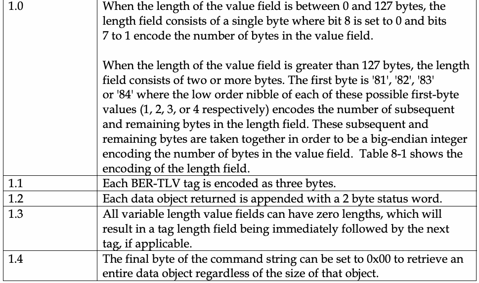
| 1.0 | 値フィールドの長さが0～127バイトの場合、長さフィールドは1バイトで構成され、bit 8は0に設定され、bits 7～1は値フィールド内のバイト数を符号化する。値フィールドの長さが127バイトを超える場合、長さフィールドは2バイト以上で構成される。最初のバイトは'81'、'82'、'83'、または'84'であり、これらの各候補の最初のバイト値（それぞれ1、2、3、または4）の下位ニブルは、長さフィールド内の後続および残余バイト数を符号化する。これらの後続および残余バイトを合わせて、値フィールド内のバイト数を符号化するビッグエンディアン整数とする。表8-1に長さフィールドの符号化を示す。 |
| 1.1 | 各BER-TLVタグは3バイトで符号化される。 |
| 1.2 | 返される各データオブジェクトには、2バイトのステータスワードが末尾に付加される。 |
| 1.3 | すべての可変長値フィールドは長さをゼロにできる（can）。この場合、該当するなら、タグ長フィールドの直後に次のタグが続く。 |
| 1.4 | オブジェクトのサイズにかかわらずデータオブジェクト全体を取得するため、コマンド文字列の最終バイトを0x00に設定できる（can）。 |
| Number of Bytes in the Length Field | First Byte | Subsequent Bytes | Length of the Value Field |
| 1 byte | ‘00’ to ‘7F’ | None | 0 to 127 |
| 2 byte | ‘81’ | '00' to 'FF' | 0 to 255 |
| 3 byte | ‘82’ | '0000' to 'FFFF' | 0 to 65,535 |
| 4 byte | ‘83’ | '000000' to 'FFFFFF' | 0 to 16,777,215 |
| 5 byte | ‘84’ | '00000000' to 'FFFFFFFF' | 0 to 4,294,967,295 |
原本の表画像
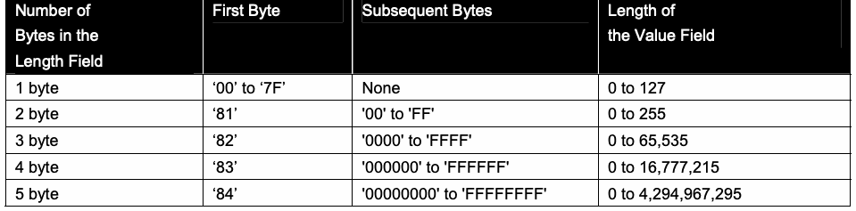
| 長さフィールドのバイト数 | 最初のバイト | 後続バイト | 値フィールドの長さ |
| 1バイト | ‘00’～‘7F’ | なし | 0～127 |
| 2バイト | ‘81’ | '00'～'FF' | 0～255 |
| 3バイト | ‘82’ | '0000'～'FFFF' | 0～65,535 |
| 4バイト | ‘83’ | '000000'～'FFFFFF' | 0～16,777,215 |
| 5バイト | ‘84’ | '00000000'～'FFFFFFFF' | 0～4,294,967,295 |
原本の表画像
原本の表画像
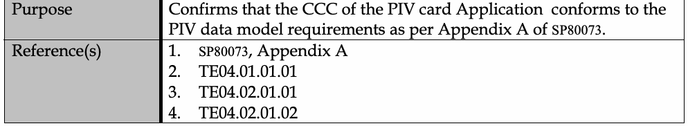
| Precondition(s) | 1. A valid PIV card is inserted into the contact reader. 2. A valid PC/SC connection exists between the test application and the contact reader. 3. The test application is currently connected to the card application which is accessible through card handle. 4. A valid CCC is present on the PIV card. |
| Test Scenario | 1. Set cardHandle := <<valid card handle>>. 2. Set OID := <<CCC (2.16.840.1.101.3.7.1.219.0)>>. 3. Call pivGetData w/ • (IN) cardHandle • (IN) OID • (OUT) data 4. Read and parse the byte array in accordance with BER-TLV format. |
| Expected Result(s) | 1. The size of the byte array does not exceed 297 bytes. 2. All mandatory tags in CCC table are present. 3. The values of the available tags conform with the vendor provided data. |
原本の表画像
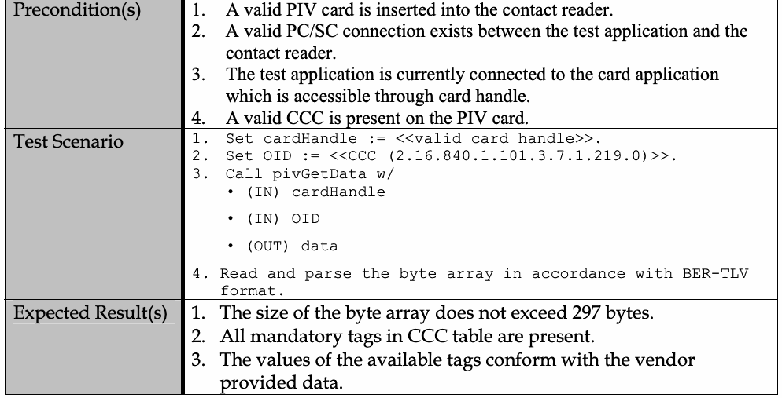
| 事前条件 | 1. 有効なPIVカードが接触型リーダーに挿入されている。 2. 試験アプリケーションと接触型リーダーの間に有効なPC/SC接続が存在する。 3. 試験アプリケーションは、カードハンドルを介してアクセス可能なカードアプリケーションに現在接続されている。 4. 有効なCCCがPIVカード上に存在する。 |
| 試験シナリオ | 1. cardHandle := <<有効なカードハンドル>>を設定する。 2. OID := <<CCC (2.16.840.1.101.3.7.1.219.0)>>を設定する。 3. pivGetDataを次の引数で呼び出す • (IN) cardHandle • (IN) OID • (OUT) data 4. バイト配列をBER-TLV形式に従って読み取り、解析する。 |
| 期待される結果 | 1. バイト配列のサイズは297バイトを超えない。 2. CCC表の必須タグがすべて存在する。 3. 存在するタグの値はベンダーが提供したデータに適合する。 |
8.2 “Card Holder Unique Identifier” Data Object
8.2 「カード保有者一意識別子」データオブジェクト
未レビュー訳| Purpose | Confirms that the CHUID of the PIV card Application conforms to the PIV data model requirements as per Appendix A of SP80073. |
| Reference(s) | 1. SP80073, Appendix A 2. TE04.01.01.01 3. TE04.03.01.01 |
| Precondition(s) | 1. A valid PIV card is inserted into the contact reader. 2. A valid PC/SC connection exists between the test application and the contact reader. 3. The test application is currently connected to the card application which is accessible through card handle. 4. A valid CHUID is present on the PIV card. |
| Test Scenario | 1. Set cardHandle := <<valid card handle>> 2. Set OID := <<CHUID (2.16.840.1.101.3.7.2.48.0)>> 3. Call pivGetData w/ • (IN) cardHandle • (IN) OID • (OUT) data 4. Read and parse the byte array in accordance with BER-TLV format. |
| Expected Result(s) | 1. The size of the byte array does not exceed 3395 bytes. 2. All mandatory tags in CHIID table are present. 3. Expiration date is encoded as YYYYMMDD. 4. Expriation date is within the next five years. |
原本の表画像
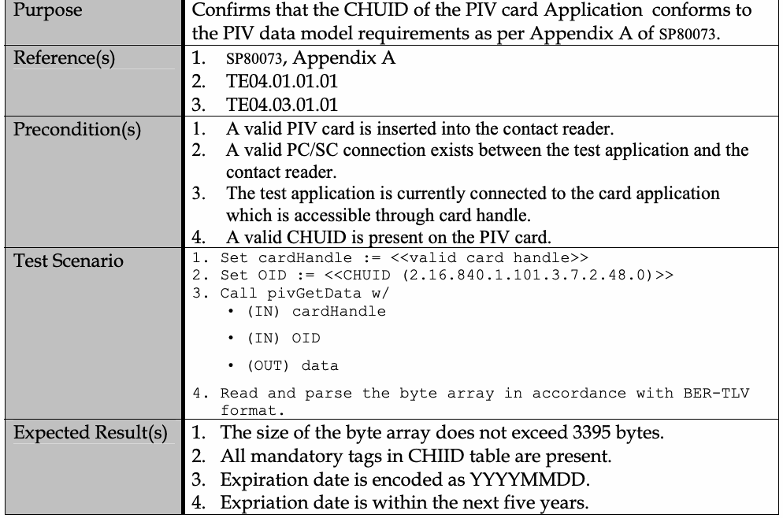
| 目的 | PIVカードアプリケーションのCHUIDが、SP80073の付録Aに基づくPIVデータモデル要件に適合することを確認する。 |
| 参照 | 1. SP80073、付録A 2. TE04.01.01.01 3. TE04.03.01.01 |
| 事前条件 | 1. 有効なPIVカードが接触型リーダーに挿入されている。 2. 試験アプリケーションと接触型リーダーの間に有効なPC/SC接続が存在する。 3. 試験アプリケーションは、カードハンドルを介してアクセス可能なカードアプリケーションに現在接続されている。 4. 有効なCHUIDがPIVカード上に存在する。 |
| 試験シナリオ | 1. cardHandle := <<有効なカードハンドル>>を設定する。 2. OID := <<CHUID (2.16.840.1.101.3.7.2.48.0)>>を設定する。 3. pivGetDataを次の引数で呼び出す • (IN) cardHandle • (IN) OID • (OUT) data 4. バイト配列をBER-TLV形式に従って読み取り、解析する。 |
| 期待される結果 | 1. バイト配列のサイズは3395バイトを超えない。 2. CHIID表の必須タグがすべて存在する。 3. 有効期限はYYYYMMDDとして符号化される。 4. Expriation dateは今後5年以内である。 |
8.3 “X.509 Certificate for PIV Authentication” Data Object
8.3 「PIV認証用X.509証明書」データオブジェクト
未レビュー訳| Purpose | Confirms that the X.509 Certificate for PIV Authentication of the PIV card Application conforms to the PIV data model requirements as per Appendix A of SP80073 |
| Reference(s) | 1. SP80073, Appendix A 2. TE04.01.01.01 |
| Precondition(s) | 1. A valid PIV card is inserted into the contact reader. 2. A valid PC/SC connection exists between the test application and the contact reader. 3. The test application is currently connected to the card application which is accessible through card handle. 4. A valid X.509 certificate for PIV authentication object is present on the PIV card. |
| Test Scenario | 1. Set cardHandle := <<valid card handle>> 2. Set OID := <<PIV Authentication Certificate (2.16.840.1.101.3.7.2.1.1)>> 3. Call pivGetData w/ • (IN) cardHandle • (IN) OID • (OUT) data 4. Read and parse the byte array in accordance with BER-TLV format. |
| Expected Result(s) | 1. The size of the byte array does not exceed 1905 bytes. 2. All mandatory tags in “X.509 Certificate for PIV Authentication” table are present. |
原本の表画像
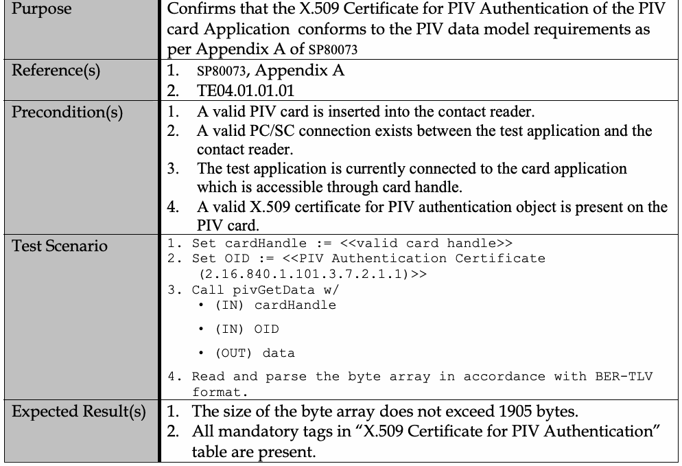
| 目的 | PIVカードアプリケーションのPIV認証用X.509証明書が、SP80073付録Aに定めるPIVデータモデル要件に適合することを確認する。 |
| 参照 | 1. SP80073、付録A 2. TE04.01.01.01 |
| 前提条件 | 1. 有効なPIVカードが接触型リーダーに挿入されている。2. 試験アプリケーションと接触型リーダーの間に有効なPC/SC接続が確立されている。3. 試験アプリケーションは現在、カードハンドルを通じてアクセス可能なカードアプリケーションに接続されている。4. PIVカード上にPIV認証オブジェクト用の有効なX.509証明書が存在する。 |
| 試験シナリオ | 1. cardHandle := <<valid card handle>>を設定する。2. OID := <<PIV Authentication Certificate (2.16.840.1.101.3.7.2.1.1)>>を設定する。3. pivGetDataを次の引数で呼び出す：• (IN) cardHandle • (IN) OID • (OUT) data。4. BER-TLV形式に従ってバイト配列を読み取り、解析する。 |
| 期待される結果 | 1. バイト配列のサイズは1905バイトを超えない。2. 「PIV認証用X.509証明書」表の必須タグがすべて存在する。 |
8.4 “Card Holder Fingerprints” Data Object
8.4 「カード保有者指紋」データオブジェクト
未レビュー訳| Purpose | Confirms that the “Card Holder Fingerprints” data object of the PIV card Application conforms to the PIV data model requirements as per Appendix A of SP80073 |
| Reference(s) | 1. SP80073, Appendix A 2. TE04.01.01.01 3. TE04.04.01.01 4. TE04.04.02.01 |
| Precondition(s) | 1. A valid PIV card is inserted into the contact reader. 2. A valid PC/SC connection exists between the test application and the contact reader. 3. The test application is currently connected to the card application which is accessible through card handle. 4. A valid card holder fingerprints object is present on the PIV card. |
原本の表画像
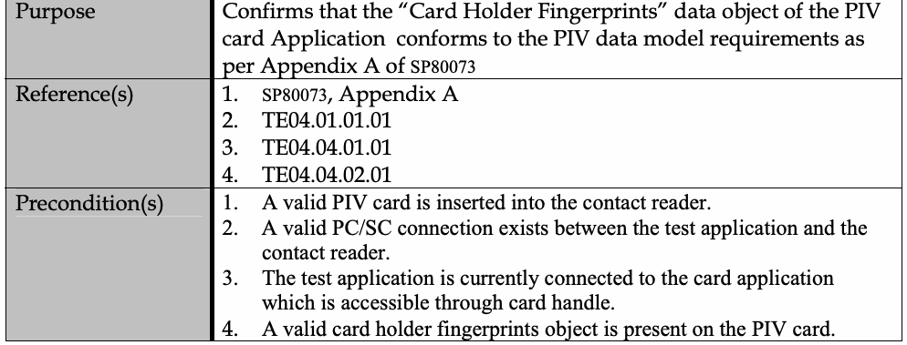
| 目的 | PIVカードアプリケーションの「カード保有者指紋」データオブジェクトが、SP80073付録Aに定めるPIVデータモデル要件に適合することを確認する。 |
| 参照 | 1. SP80073、付録A 2. TE04.01.01.01 3. TE04.04.01.01 4. TE04.04.02.01 |
| 前提条件 | 1. 有効なPIVカードが接触型リーダーに挿入されている。2. 試験アプリケーションと接触型リーダーの間に有効なPC/SC接続が確立されている。3. 試験アプリケーションは現在、カードハンドルを通じてアクセス可能なカードアプリケーションに接続されている。4. PIVカード上に有効なカード保有者指紋オブジェクトが存在する。 |
| Test Scenario | 1. Set cardHandle := <<valid card handle>> 2. Set OID := <<Card Holder Fingerprints (2.16.840.1.101.3.7.2.96.16)>> 3. Call pivGetData w/ • (IN) cardHandle • (IN) OID • (OUT) data 4. Read and parse the byte array in accordance with BER-TLV format. |
| Expected Result(s) | 1. The size of the byte array does not exceed 4006 bytes. 2. All mandatory tags in “Card Holder Fingerprints” table are present. |
原本の表画像
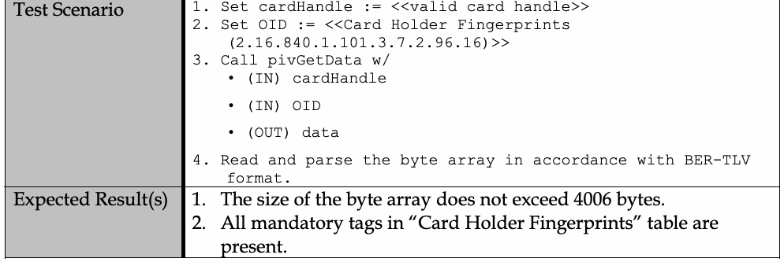
| 試験シナリオ | 1. cardHandle := <<valid card handle>>を設定する。2. OID := <<Card Holder Fingerprints (2.16.840.1.101.3.7.2.96.16)>>を設定する。3. pivGetDataを次の引数で呼び出す：• (IN) cardHandle • (IN) OID • (OUT) data。4. BER-TLV形式に従ってバイト配列を読み取り、解析する。 |
| 期待される結果 | 1. バイト配列のサイズは4006バイトを超えない。2. 「カード保有者指紋」表の必須タグがすべて存在する。 |
8.5 “Printed Information” Data Object
8.5 「印字情報」データオブジェクト
未レビュー訳| Purpose | Confirms that the “Printed Information” Data Object of the PIV card Application conforms to the PIV data model requirements as per Appendix A of SP80073 |
| Reference(s) | 1. SP80073, Appendix A 2. TE04.01.01.01 |
| Precondition(s) | 1. A valid PIV card is inserted into the contact reader. 2. A valid PC/SC connection exists between the test application and the contact reader. 3. The test application is currently connected to the card application which is accessible through card handle. 4. A valid printed information is stored on the PIV card. |
| Test Scenario | 1. Set cardHandle := <<valid card handle>> 2. Set OID := <<Printed Information (2.16.840.1.101.3.7.2.48.1)>> 3. Call pivGetData w/ • (IN) cardHandle • (IN) OID • (OUT) data 4. Read and parse the byte array in accordance with BER-TLV format. |
| Expected Result(s) | 1. The size of the byte array does not exceed 120 bytes. 2. All mandatory tags in “Printed Information” table are present. |
原本の表画像
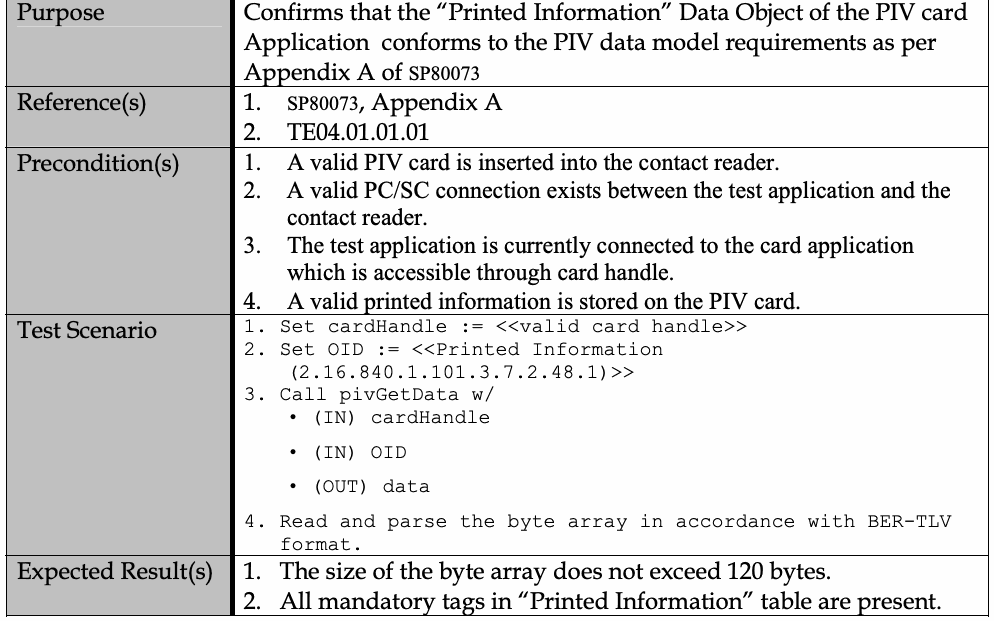
| 目的 | PIVカードアプリケーションの「印字情報」データオブジェクトが、SP80073付録Aに定めるPIVデータモデル要件に適合することを確認する。 |
| 参照 | 1. SP80073、付録A 2. TE04.01.01.01 |
| 前提条件 | 1. 有効なPIVカードが接触型リーダーに挿入されている。2. 試験アプリケーションと接触型リーダーの間に有効なPC/SC接続が確立されている。3. 試験アプリケーションは現在、カードハンドルを通じてアクセス可能なカードアプリケーションに接続されている。4. 有効な印字情報がPIVカードに格納されている。 |
| 試験シナリオ | 1. cardHandle := <<valid card handle>>を設定する。2. OID := <<Printed Information (2.16.840.1.101.3.7.2.48.1)>>を設定する。3. pivGetDataを次の引数で呼び出す：• (IN) cardHandle • (IN) OID • (OUT) data。4. BER-TLV形式に従ってバイト配列を読み取り、解析する。 |
| 期待される結果 | 1. バイト配列のサイズは120バイトを超えない。2. 「印字情報」表の必須タグがすべて存在する。 |
8.6 “Card Holder Facial Image” Data Object
8.6 「カード保有者顔画像」データオブジェクト
未レビュー訳| Purpose | Confirms that the “Card Holder Facial Image” data object of the PIV card Application conforms to the PIV data model requirements as per Appendix A of SP80073. |
原本の表画像
| 目的 | PIVカードアプリケーションの「カード保有者顔画像」データオブジェクトが、SP80073付録Aに定めるPIVデータモデル要件に適合することを確認する。 |
| Reference(s) | 1. SP80073, Appendix A 2. TE04.01.01.01 3. TE04.05.01.01 4. TE04.05.02.01 |
| Precondition(s) | 1. A valid PIV card is inserted into the contact reader. 2. A valid PC/SC connection exists between the test application and the contact reader. 3. The test application is currently connected to the card application which is accessible through card handle. 4. A valid card holder facial image object is present on the PIV card. |
| Test Scenario | 1. Set cardHandle := <<valid card handle>> 2. Set OID := <<Card Holder Facial Image (2.16.840.1.101.3.7.2.96.48)>> 3. Call pivGetData w/ • (IN) cardHandle • (IN) OID • (OUT) data 4. Read and parse the byte array in accordance with BER-TLV format. |
| Expected Result(s) | 1. The size of the byte array does not exceed 12710 bytes. 2. All mandatory tags in “Card Holder Facial Image” table are present. |
原本の表画像
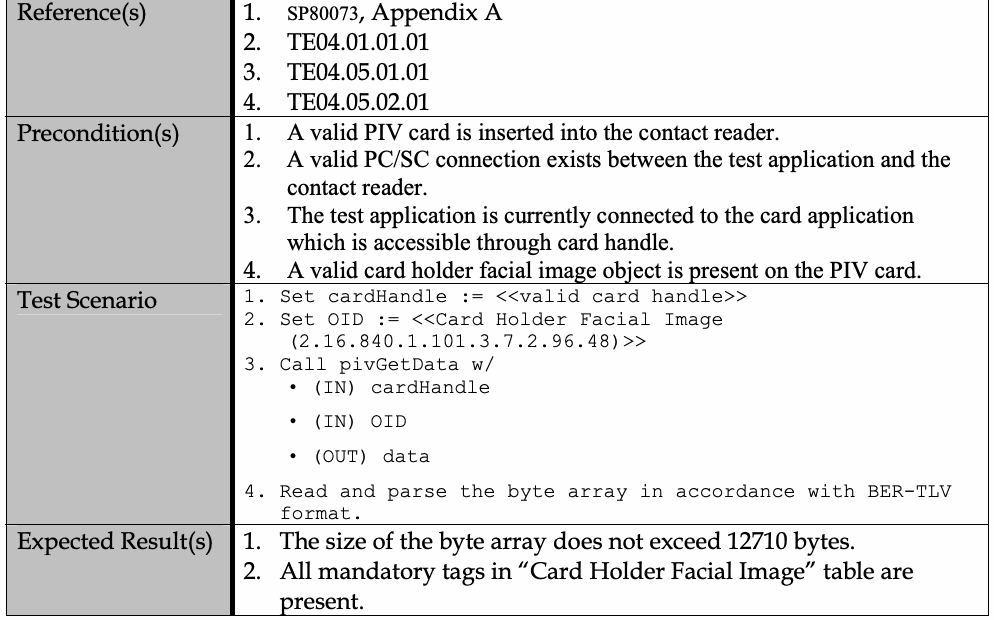
| 参照 | 1. SP80073、付録A 2. TE04.01.01.01 3. TE04.05.01.01 4. TE04.05.02.01 |
| 前提条件 | 1. 有効なPIVカードが接触型リーダーに挿入されている。2. 試験アプリケーションと接触型リーダーの間に有効なPC/SC接続が確立されている。3. 試験アプリケーションは現在、カードハンドルを通じてアクセス可能なカードアプリケーションに接続されている。4. PIVカード上に有効なカード保有者顔画像オブジェクトが存在する。 |
| 試験シナリオ | 1. cardHandle := <<valid card handle>>を設定する。2. OID := <<Card Holder Facial Image (2.16.840.1.101.3.7.2.96.48)>>を設定する。3. pivGetDataを次の引数で呼び出す：• (IN) cardHandle • (IN) OID • (OUT) data。4. BER-TLV形式に従ってバイト配列を読み取り、解析する。 |
| 期待される結果 | 1. バイト配列のサイズは12710バイトを超えない。2. 「カード保有者顔画像」表の必須タグがすべて存在する。 |
8.7 “X.509 Certificate for Digital Signature” Data Object
8.7 「デジタル署名用X.509証明書」データオブジェクト
未レビュー訳| Purpose | Confirms that the X.509 Certificate for Digital Signature of the PIV card Application conforms to the PIV data model requirements as per Appendix A of SP80073 |
| Reference(s) | 1. SP80073, Section 7.1.2 2. TE04.01.01.01 |
| Precondition(s) | 1. A valid PIV card is inserted into the contact reader. 2. A valid PC/SC connection exists between the test application and the contact reader. 3. The test application is currently connected to the card application which is accessible through card handle. 4. A valid X.509 certificate for digital signature object is present on the PIV card. |
| Test Scenario | 1. Set cardHandle := <<valid card handle>> 2. Set OID := <<Digital Signature Certificate (2.16.840.1.101.3.7.2.1.0)>> 3. Call pivGetData w/ • (IN) cardHandle • (IN) OID • (OUT) data 4. Read and parse the byte array in accordance with BER-TLV format. |
原本の表画像
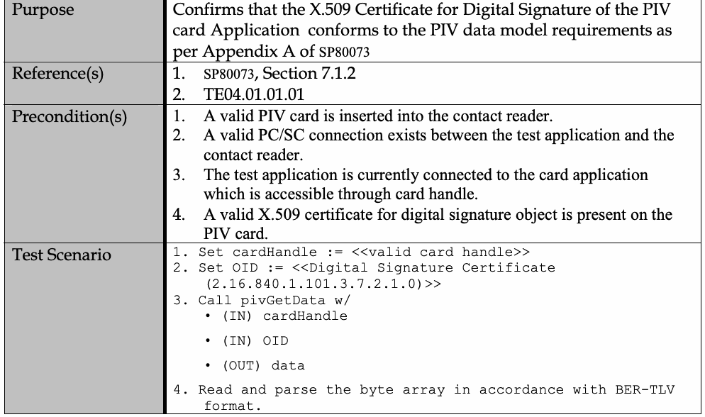
| 目的 | PIVカードアプリケーションのデジタル署名用X.509証明書が、SP80073付録Aに定めるPIVデータモデル要件に適合することを確認する。 |
| 参照 | 1. SP80073、7.1.2節 2. TE04.01.01.01 |
| 前提条件 | 1. 有効なPIVカードが接触型リーダーに挿入されている。2. 試験アプリケーションと接触型リーダーの間に有効なPC/SC接続が確立されている。3. 試験アプリケーションは現在、カードハンドルを通じてアクセス可能なカードアプリケーションに接続されている。4. PIVカード上にデジタル署名オブジェクト用の有効なX.509証明書が存在する。 |
| 試験シナリオ | 1. cardHandle := <<valid card handle>>を設定する。2. OID := <<Digital Signature Certificate (2.16.840.1.101.3.7.2.1.0)>>を設定する。3. pivGetDataを次の引数で呼び出す：• (IN) cardHandle • (IN) OID • (OUT) data。4. BER-TLV形式に従ってバイト配列を読み取り、解析する。 |
| Expected Result(s) | 1. The size of the byte array does not exceed 1905 bytes. 2. Al mandatory tags in “X.509 Certificate for Digital Signature” table are present. |
原本の表画像
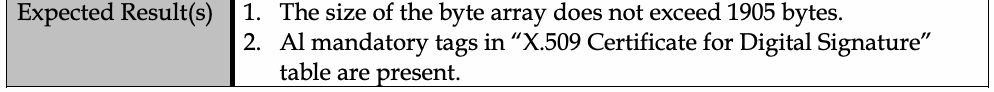
| 期待される結果 | 1. バイト配列のサイズは1905バイトを超えない。2. 「デジタル署名用X.509証明書」表の必須タグがすべて存在する。 |
8.8 “X.509 Certificate for Key Management” Data Object
8.8 「鍵管理用X.509証明書」データオブジェクト
未レビュー訳| Purpose | Confirms that the X.509 Certificate for Key Management of the PIV card Application conforms to the PIV data model requirements as per Appendix A of SP80073. |
| Reference(s) | 1. SP80073, Appendix A 2. TE04.01.01.01 |
| Precondition(s) | 1. A valid PIV card is inserted into the contact reader. 2. A valid PC/SC connection exists between the test application and the contact reader. 3. The test application is currently connected to the card application which is accessible through card handle. 4. A valid X.509 certificate for key management object is present on the PIV card. |
| Test Scenario | 1. Set cardHandle := <<valid card handle>> 2. Set OID := <<Key Management Certificate (2.16.840.1.101.3.7.2.1.2)>> 3. Call pivGetData w/ • (IN) cardHandle • (IN) OID • (OUT) data 4. Read and parse the byte array in accordance with BER-TLV format. |
| Expected Result(s) | 1. The size of the byte array does not exceed 1905 bytes. 2. All mandatory tags in “X.509 Certificate for Key Management” table are present. |
原本の表画像
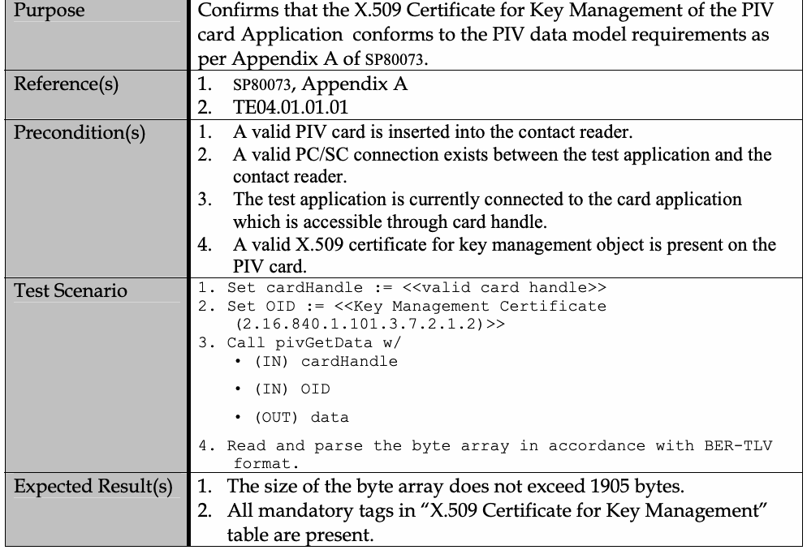
| 目的 | PIVカードアプリケーションの鍵管理用X.509証明書が、SP80073付録Aに定めるPIVデータモデル要件に適合することを確認する。 |
| 参照 | 1. SP80073、付録A 2. TE04.01.01.01 |
| 前提条件 | 1. 有効なPIVカードが接触型リーダーに挿入されている。2. 試験アプリケーションと接触型リーダーの間に有効なPC/SC接続が確立されている。3. 試験アプリケーションは現在、カードハンドルを通じてアクセス可能なカードアプリケーションに接続されている。4. PIVカード上に鍵管理オブジェクト用の有効なX.509証明書が存在する。 |
| 試験シナリオ | 1. cardHandle := <<valid card handle>>を設定する。2. OID := <<Key Management Certificate (2.16.840.1.101.3.7.2.1.2)>>を設定する。3. pivGetDataを次の引数で呼び出す：• (IN) cardHandle • (IN) OID • (OUT) data。4. BER-TLV形式に従ってバイト配列を読み取り、解析する。 |
| 期待される結果 | 1. バイト配列のサイズは1905バイトを超えない。2. 「鍵管理用X.509証明書」表の必須タグがすべて存在する。 |
8.9 “X.509 Certificate for Card Authentication” Data Object
8.9 「カード認証用X.509証明書」データオブジェクト
未レビュー訳| Purpose | Confirms that the X.509 Certificate for Card Authentication of the PIV card Application conforms to the PIV data model requirements as per Appendix A of SP80073 |
| Reference(s) | 1. SP80073, Appendix A 2. TE04.01.01.01 |
原本の表画像
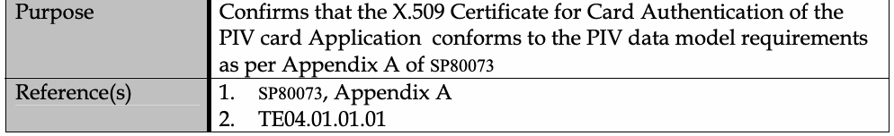
| 目的 | PIVカードアプリケーションのカード認証用X.509証明書が、SP80073付録Aに定めるPIVデータモデル要件に適合することを確認する。 |
| 参照 | 1. SP80073、付録A 2. TE04.01.01.01 |
| Precondition(s) | 1. A valid PIV card is inserted into the contact reader. 2. A valid PC/SC connection exists between the test application and the contact reader. 3. The test application is currently connected to the card application which is accessible through card handle. 4. A valid X.509 certificate for card authentication object is present on the PIV card. |
| Test Scenario | 1. Set cardHandle := <<valid card handle>> 2. Set OID := <<Card Authentication Certificate (2.16.840.1.101.3.7.2.5.0)>> 3. Call pivGetData w/ • (IN) cardHandle • (IN) OID • (OUT) data 4. Read and parse the byte array in accordance with BER-TLV format. |
| Expected Result(s) | 1. The size of the byte array does not exceed 1905 bytes. 2. All mandatory tags in “X.509 Certificate for Card Authentication” table are present. |
原本の表画像
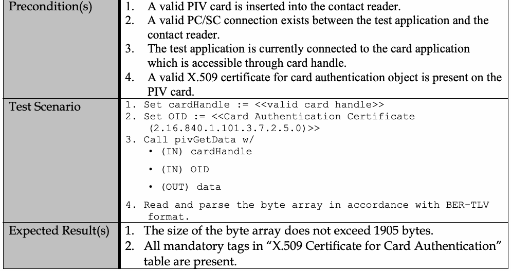
| 前提条件 | 1. 有効なPIVカードが接触型リーダーに挿入されている。2. 試験アプリケーションと接触型リーダーの間に有効なPC/SC接続が確立されている。3. 試験アプリケーションは現在、カードハンドルを通じてアクセス可能なカードアプリケーションに接続されている。4. PIVカード上にカード認証オブジェクト用の有効なX.509証明書が存在する。 |
| 試験シナリオ | 1. cardHandle := <<valid card handle>>を設定する。2. OID := <<Card Authentication Certificate (2.16.840.1.101.3.7.2.5.0)>>を設定する。3. pivGetDataを次の引数で呼び出す：• (IN) cardHandle • (IN) OID • (OUT) data。4. BER-TLV形式に従ってバイト配列を読み取り、解析する。 |
| 期待される結果 | 1. バイト配列のサイズは1905バイトを超えない。2. 「カード認証用X.509証明書」表の必須タグがすべて存在する。 |
8.10 “Security Object” Data Object
8.10 「セキュリティオブジェクト」データオブジェクト
未レビュー訳| Purpose | Confirms that the “Security Object” data object of the PIV card Application conforms to the PIV data model requirements as per Appendix A of SP80073 |
| Reference(s) | 1. SP80073, Section 7.1.2 2. TE04.01.01.01 3. TE04.06.01.01 |
| Precondition(s) | 1. A valid PIV card is inserted into the contact reader. 2. A valid PC/SC connection exists between the test application and the contact reader. 3. The test application is currently connected to the card application which is accessible through card handle. 4. A valid security object is present on the PIV card. |
原本の表画像
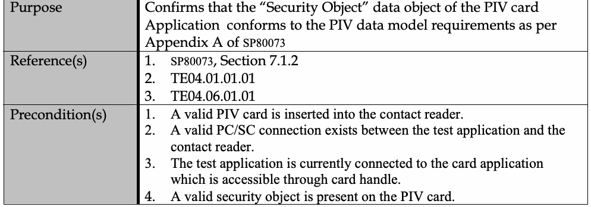
| 目的 | PIVカードアプリケーションの「セキュリティオブジェクト」データオブジェクトが、SP80073付録Aに定めるPIVデータモデル要件に適合することを確認する。 |
| 参照 | 1. SP80073、7.1.2節 2. TE04.01.01.01 3. TE04.06.01.01 |
| 前提条件 | 1. 有効なPIVカードが接触型リーダーに挿入されている。2. 試験アプリケーションと接触型リーダーの間に有効なPC/SC接続が確立されている。3. 試験アプリケーションは現在、カードハンドルを通じてアクセス可能なカードアプリケーションに接続されている。4. PIVカード上に有効なセキュリティオブジェクトが存在する。 |
| Test Scenario | 1. Set cardHandle := <<valid card handle>> 2. Set OID := <<Security Object (2.16.840.1.101.3.7.2.144.0)>> 3. Call pivGetData w/ • (IN) cardHandle • (IN) OID • (OUT) data 4. Read and parse the byte array in accordance with BER-TLV format. 5. Parse the tag 0xBA to extract the Data Groups to Container ID mapping instances. 6. Verify that the PIV data containers exist on the card by selecting each container. |
| Expected Result(s) | 1. From Step 4: The size of the byte array does not exceed 1008 bytes. 2. From Step 4: All mandatory tags in “Security Object” table are present. 3. From Step 5: Verify that all data containers found in the mapping are actually present in the card by performing a select on each container (with appropriate authorization) and expecting ’90 00’ in all cases. |
原本の表画像
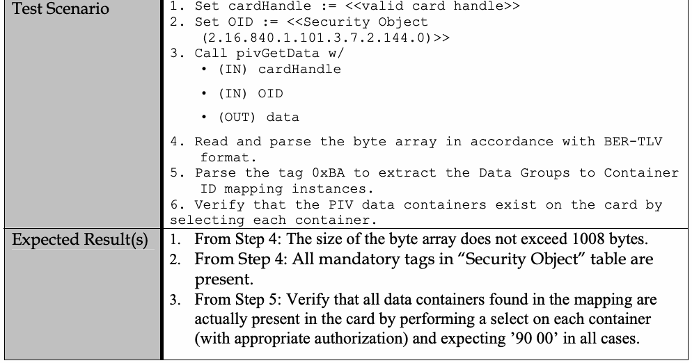
| 試験シナリオ | 1. cardHandle := <<valid card handle>>を設定する。2. OID := <<Security Object (2.16.840.1.101.3.7.2.144.0)>>を設定する。3. pivGetDataを次の引数で呼び出す：• (IN) cardHandle • (IN) OID • (OUT) data。4. BER-TLV形式に従ってバイト配列を読み取り、解析する。5. タグ0xBAを解析して、Data Groups to Container IDのマッピングインスタンスを抽出する。6. 各コンテナを選択し、PIVデータコンテナがカード上に存在することを検証する。 |
| 期待される結果 | 1. ステップ4より：バイト配列のサイズは1008バイトを超えない。2. ステップ4より：「セキュリティオブジェクト」表の必須タグがすべて存在する。3. ステップ5より：マッピング内で見つかったすべてのデータコンテナについて、各コンテナを（適切な認証を用いて）selectし、いずれの場合も’90 00’が返ることを期待して、カード上に実在することを検証する。 |
9. Biometric Data Object Test Assertions
9. 生体データオブジェクトの試験アサーション
未レビュー訳The test assertions documented in this section relate to testing the Card Holder Fingerprint object and Facial Image on the PIV card for conformance to the common CBEFF Patron Format for PIV specification (Table 8 of SP80076) as well as to INCITS 378 Profile for PIV card Templates (Table 3 of SP80076) and INCITS 385 profile for Facial Image respectively.
本節に記載する試験アサーションは、PIVカード上のカード保有者指紋オブジェクトおよび顔画像について、共通CBEFF Patron Format for PIV仕様（SP80076の表8）、PIVカードテンプレート向けINCITS 378プロファイル（SP80076の表3）、および顔画像向けINCITS 385プロファイルへの適合性をそれぞれ試験するものである。
未レビュー訳9.1 CBEFF Patron Format for Fingerprint Template
9.1 指紋テンプレートのCBEFFパトロン形式
未レビュー訳9.1.1 CBEFF Structure for Fingerprint Template
9.1.1 指紋テンプレートのCBEFF構造
未レビュー訳| Purpose | Validates that the CBEFF structure generated complies with SP80076 Table 7, “Simple CBEFF Structure”. |
| References(s) | 1. SP80076, Table 7. 2. AS05.01.01 3. AS05.01.03 |
| Precondition(s) | 1. All templates have been generated and stored on the PIV card. 2. A valid PIV card is inserted into the contact reader. 3. A valid PC/SC connection exists between the test application and the contact reader. 4. The test application is currently connected to the card application which is accessible through card handle. 5. A valid Card Holder Fingerprints object is present on the PIV card. 6. Security conditions to read the object are met. |
| Test Scenario | 1. Set cardHandle := <<valid card handle>> 2. Set OID := <<Card Holder Fingerprints (2.16.840.1.101.3.7.2.96.16)>> 3. Call pivGetData w/ • (IN) cardHandle • (IN) OID • (OUT) data 4. Extract the BDB Length field of CBEFF Header. 5. Extract the SB Length field of CBEFF Header. |
| Expected Result(s) | 1. From step 4: BDB Length field is non-zero and the recorded length match the actual length. 2. From step 5: SB Length field is non-zero and the recorded length match the actual length. 3. The Card Holder Fingerprint object length is equal to CBEFF Header length + BDB Length + SB Length. |
原本の表画像
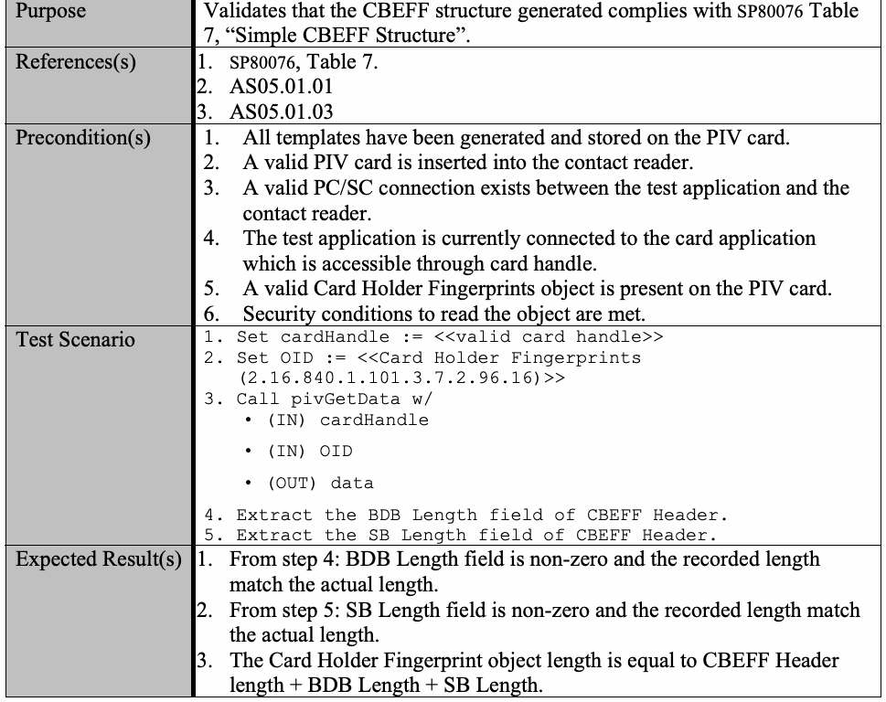
| 目的 | 生成されたCBEFF構造がSP80076表7「Simple CBEFF Structure」に適合することを検証する。 |
| 参照 | 1. SP80076、表7 2. AS05.01.01 3. AS05.01.03 |
| 前提条件 | 1. すべてのテンプレートが生成され、PIVカードに格納されている。2. 有効なPIVカードが接触型リーダーに挿入されている。3. 試験アプリケーションと接触型リーダーの間に有効なPC/SC接続が確立されている。4. 試験アプリケーションは現在、カードハンドルを通じてアクセス可能なカードアプリケーションに接続されている。5. PIVカード上に有効なカード保有者指紋オブジェクトが存在する。6. 当該オブジェクトを読み取るためのセキュリティ条件が満たされている。 |
| 試験シナリオ | 1. cardHandle := <<valid card handle>>を設定する。2. OID := <<Card Holder Fingerprints (2.16.840.1.101.3.7.2.96.16)>>を設定する。3. pivGetDataを次の引数で呼び出す：• (IN) cardHandle • (IN) OID • (OUT) data。4. CBEFF HeaderのBDB Lengthフィールドを抽出する。5. CBEFF HeaderのSB Lengthフィールドを抽出する。 |
| 期待される結果 | 1. ステップ4より：BDB Lengthフィールドがゼロ以外であり、記録された長さが実際の長さと一致する。2. ステップ5より：SB Lengthフィールドがゼロ以外であり、記録された長さが実際の長さと一致する。3. カード保有者指紋オブジェクトの長さは、CBEFF Headerの長さ + BDB Length + SB Lengthに等しい。 |
9.1.2 CBEFF Header for Fingerprint Template
9.1.2 指紋テンプレートのCBEFFヘッダー
未レビュー訳9.1.2.1 Patron Header Version
9.1.2.1 パトロンヘッダーのバージョン
未レビュー訳| Purpose | Validates that the CBEFF field “Patron Header Version” complies with SP80076 Table 8, “Patron Format PIV Specification” |
原本の表画像
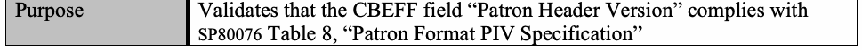
| 目的 | CBEFFフィールド「Patron Header Version」がSP80076表8「Patron Format PIV Specification」に適合することを検証する。 |
| References(s) | 1. SP80076, Table 8. 2. AS05.01.02 3. AS05.01.04 |
| Precondition(s) | 1. A valid PIV card is inserted into the contact reader. 2. A valid PC/SC connection exists between the test application and the contact reader. 3. The test application is currently connected to the card application which is accessible through card handle. 4. A valid Card Holder Fingerprints object is present on the PIV card. 5. Security conditions to read the object are met. |
| Test Scenario | 1. Set cardHandle := <<valid card handle>> 2. Set OID := <<Card Holder Fingerprints (2.16.840.1.101.3.7.2.96.16)>> 3. Call pivGetData w/ • (IN) cardHandle • (IN) OID • (OUT) data 4. Extract the value field for tag 0xBC, extract the first 88 bytes (CBEFF Header) and read the Patron Header Version field (based on its position) in CBEFF Header. |
| Expected Result(s) | The Patron Header Version field has a value of 0x03. |
原本の表画像
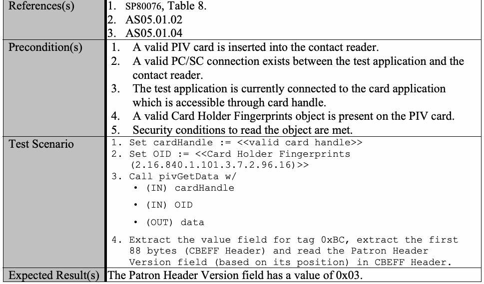
| 参照 | 1. SP80076、表8 2. AS05.01.02 3. AS05.01.04 |
| 前提条件 | 1. 有効なPIVカードが接触型リーダーに挿入されている。2. 試験アプリケーションと接触型リーダーの間に有効なPC/SC接続が確立されている。3. 試験アプリケーションは現在、カードハンドルを通じてアクセス可能なカードアプリケーションに接続されている。4. PIVカード上に有効なカード保有者指紋オブジェクトが存在する。5. 当該オブジェクトを読み取るためのセキュリティ条件が満たされている。 |
| 試験シナリオ | 1. cardHandle := <<valid card handle>>を設定する。2. OID := <<Card Holder Fingerprints (2.16.840.1.101.3.7.2.96.16)>>を設定する。3. pivGetDataを次の引数で呼び出す：• (IN) cardHandle • (IN) OID • (OUT) data。4. タグ0xBCのvalueフィールドを抽出し、先頭88バイト（CBEFF Header）を取り出して、その位置に基づきCBEFF Header内のPatron Header Versionフィールドを読み取る。 |
| 期待される結果 | Patron Header Versionフィールドの値は0x03である。 |
9.1.2.2 SBH Security Option
9.1.2.2 SBHセキュリティオプション
未レビュー訳| Purpose | Validates that the biometric data block on the PIV card is digitally signed but not encrypted. |
| References(s) | 1. SP80076 2. AS05.01.02 3. AS05.01.05 |
| Precondition(s) | 1. A valid PIV card is inserted into the contact reader. 2. A valid PC/SC connection exists between the test application and the contact reader. 3. The test application is currently connectedto the card application which is accessible through card handle. 4. A valid Card Holder Fingerprints object is present on the PIV card. 5. Security conditions to read the object are met. |
| Test Scenario | 1. Set cardHandle := <<valid card handle>> 2. Set OID := <<Card Holder Fingerprints (2.16.840.1.101.3.7.2.96.16)>> 3. Call pivGetData w/ • (IN) cardHandle • (IN) OID • (OUT) data 4. Extract the value field for tag 0xBC, extract the first 88 bytes (CBEFF Header) and read the SBH Security Option field (based on its position) in CBEFF Header. |
| Expected Result(s) | The SBH Security Options field has a value of b00001101. |
原本の表画像
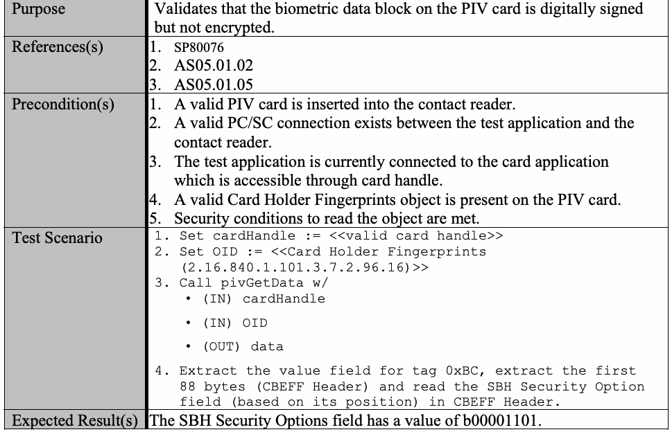
| 目的 | PIVカード上の生体データブロックがデジタル署名され、暗号化されていないことを検証する。 |
| 参照 | 1. SP80076 2. AS05.01.02 3. AS05.01.05 |
| 前提条件 | 1. 有効なPIVカードが接触型リーダーに挿入されている。2. 試験アプリケーションと接触型リーダーの間に有効なPC/SC接続が確立されている。3. 試験アプリケーションは現在、カードハンドルを通じてアクセス可能なカードアプリケーションに接続されている。4. PIVカード上に有効なカード保有者指紋オブジェクトが存在する。5. 当該オブジェクトを読み取るためのセキュリティ条件が満たされている。 |
| 試験シナリオ | 1. cardHandle := <<valid card handle>>を設定する。2. OID := <<Card Holder Fingerprints (2.16.840.1.101.3.7.2.96.16)>>を設定する。3. pivGetDataを次の引数で呼び出す：• (IN) cardHandle • (IN) OID • (OUT) data。4. タグ0xBCのvalueフィールドを抽出し、先頭88バイト（CBEFF Header）を取り出して、その位置に基づきCBEFF Header内のSBH Security Optionフィールドを読み取る。 |
| 期待される結果 | SBH Security Optionsフィールドの値はb00001101である。 |
9.1.2.3 BDB Format Owner Values
9.1.2.3 BDB形式所有者の値
未レビュー訳| Purpose | Validates that BDB Format Owner is set to a value of 0x001B denoting M1, the INCITS Technical Committee on Biometrics. |
| References(s) | 1. SP80076 2. AS05.01.02 3. AS05.01.03 4. AS05.01.06 |
| Precondition(s) | 1. A valid PIV card is inserted into the contact reader. 2. A valid PC/SC connection exists between the test application and the contact reader. 3. The test application is currently connected to the card application which is accessible through card handle. 4. A valid Card Holder Fingerprints object is present on the PIV card. 5. Security conditions to read the object are met. |
| Test Scenario | 1. Set cardHandle := <<valid card handle>> 2. Set OID := <<Card Holder Fingerprints (2.16.840.1.101.3.7.2.96.16)>> 3. Call pivGetData w/ • (IN) cardHandle • (IN) OID • (OUT) data 4. Extract the value field for tag 0xBC, extract the first 88 bytes (CBEFF Header) and read the BDB Format Owner field (based on its position) in CBEFF Header. |
| Expected Result(s) | The BDB Format Owner field has a value of 0x001B. |
原本の表画像
| 目的 | BDB Format Ownerに、INCITS生体認証技術委員会であるM1を示す値0x001Bが設定されていることを検証する。 |
| 参照 | 1. SP80076 2. AS05.01.02 3. AS05.01.03 4. AS05.01.06 |
| 前提条件 | 1. 有効なPIVカードが接触型リーダーに挿入されている。2. 試験アプリケーションと接触型リーダーの間に有効なPC/SC接続が確立されている。3. 試験アプリケーションは現在、カードハンドルを通じてアクセス可能なカードアプリケーションに接続されている。4. PIVカード上に有効なカード保有者指紋オブジェクトが存在する。5. 当該オブジェクトを読み取るためのセキュリティ条件が満たされている。 |
| 試験シナリオ | 1. cardHandle := <<valid card handle>>を設定する。2. OID := <<Card Holder Fingerprints (2.16.840.1.101.3.7.2.96.16)>>を設定する。3. pivGetDataを次の引数で呼び出す：• (IN) cardHandle • (IN) OID • (OUT) data。4. タグ0xBCのvalueフィールドを抽出し、先頭88バイト（CBEFF Header）を取り出して、その位置に基づきCBEFF Header内のBDB Format Ownerフィールドを読み取る。 |
| 期待される結果 | BDB Format Ownerフィールドの値は0x001Bである。 |
9.1.2.4 BDB Format Type
9.1.2.4 BDB形式タイプ
未レビュー訳| Purpose | Validates that for mandatory fingerprint minutiae template data stored on a PIV card, the BDB Format Type is set to a value of 0x0201. |
| References(s) | 1. SP80076 2. AS05.01.02 3. AS05.01.03 4. AS05.01.07 |
| Precondition(s) | 1. A valid PIV card is inserted into the contact reader. 2. A valid PC/SC connection exists between the test application and the contact reader. 3. The test application is currently connected to the card application which is accessible through card handle. 4. A valid Card Holder Fingerprints object is present on the PIV card. 5. Security conditions to read the object are met. |
原本の表画像
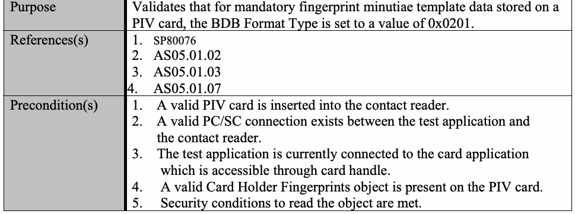
| 目的 | PIVカードに格納される必須の指紋細特徴テンプレートデータについて、BDB Format Typeに値0x0201が設定されていることを検証する。 |
| 参照 | 1. SP80076 2. AS05.01.02 3. AS05.01.03 4. AS05.01.07 |
| 前提条件 | 1. 有効なPIVカードが接触型リーダーに挿入されている。2. 試験アプリケーションと接触型リーダーの間に有効なPC/SC接続が確立されている。3. 試験アプリケーションは現在、カードハンドルを通じてアクセス可能なカードアプリケーションに接続されている。4. PIVカード上に有効なカード保有者指紋オブジェクトが存在する。5. 当該オブジェクトを読み取るためのセキュリティ条件が満たされている。 |
| Test Scenario | 1. Set cardHandle := <<valid card handle>> 2. Set OID := <<Card Holder Fingerprints (2.16.840.1.101.3.7.2.96.16)>> 3. Call pivGetData w/ • (IN) cardHandle • (IN) OID • (OUT) data 4. Extract the value field for tag 0xBC, extract the first 88 bytes (CBEFF Header) and read the BDB Format Type field (based on its position) in CBEFF Header. |
| Expected Result(s) | The BDB Format Type field has a value of 0x0201. |
原本の表画像
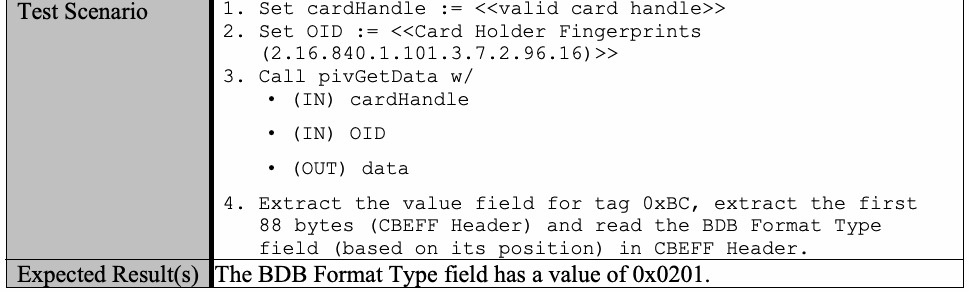
| 試験シナリオ | 1. cardHandle := <<valid card handle>>を設定する。2. OID := <<Card Holder Fingerprints (2.16.840.1.101.3.7.2.96.16)>>を設定する。3. pivGetDataを次の引数で呼び出す：• (IN) cardHandle • (IN) OID • (OUT) data。4. タグ0xBCのvalueフィールドを抽出し、先頭88バイト（CBEFF Header）を取り出して、その位置に基づきCBEFF Header内のBDB Format Typeフィールドを読み取る。 |
| 期待される結果 | BDB Format Typeフィールドの値は0x0201である。 |
9.1.2.5 Biometric Creation Date
9.1.2.5 生体情報作成日
未レビュー訳| Purpose | Validates that the creation date in the PIV Patron Format is encoded in 8 bytes using a binary representation of “YYYYMMDDhhmmssZ”. |
| References(s) | 1. SP80076, Table 8. 2. AS05.01.02 3. AS05.01.03 4. AS05.03.08 |
| Precondition(s) | 1. A valid PIV card is inserted into the contact reader. 2. A valid PC/SC connection exists between the test application and the contact reader. 3. The test application is currently connected to the card application which is accessible through card handle. 4. A valid Card Holder Fingerprints object is present on the PIV card. 5. Security conditions to read the object are met. |
| Test Scenario | 1. Set cardHandle := <<valid card handle>> 2. Set OID := <<Card Holder Fingerprints (2.16.840.1.101.3.7.2.96.16)>> 3. Call pivGetData w/ • (IN) cardHandle • (IN) OID • (OUT) data 4. Extract the value field for tag 0xBC, extract the first 88 bytes (CBEFF Header) and read the Biometric Creation Date field (based on its position) in CBEFF Header. |
| Expected Result(s) | The Biometric Creation Date is in the YYYYMMDDhhmmssZ format. |
原本の表画像
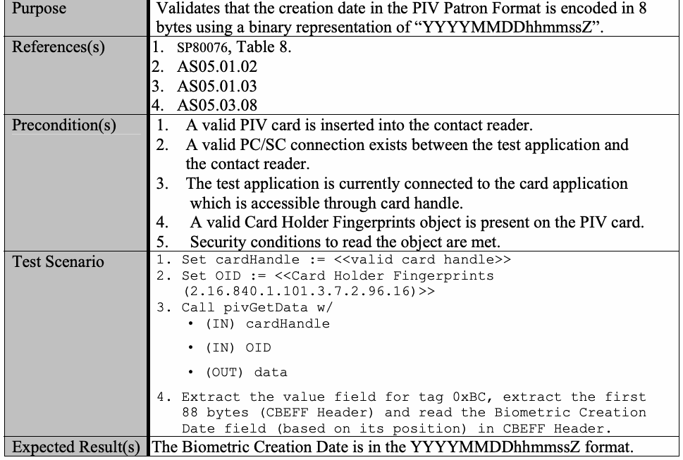
| 目的 | PIV Patron Format内の作成日が「YYYYMMDDhhmmssZ」のバイナリ表現を用いて8バイトで符号化されていることを検証する。 |
| 参照 | 1. SP80076、表8 2. AS05.01.02 3. AS05.01.03 4. AS05.03.08 |
| 前提条件 | 1. 有効なPIVカードが接触型リーダーに挿入されている。2. 試験アプリケーションと接触型リーダーの間に有効なPC/SC接続が確立されている。3. 試験アプリケーションは現在、カードハンドルを通じてアクセス可能なカードアプリケーションに接続されている。4. PIVカード上に有効なカード保有者指紋オブジェクトが存在する。5. 当該オブジェクトを読み取るためのセキュリティ条件が満たされている。 |
| 試験シナリオ | 1. cardHandle := <<valid card handle>>を設定する。2. OID := <<Card Holder Fingerprints (2.16.840.1.101.3.7.2.96.16)>>を設定する。3. pivGetDataを次の引数で呼び出す：• (IN) cardHandle • (IN) OID • (OUT) data。4. タグ0xBCのvalueフィールドを抽出し、先頭88バイト（CBEFF Header）を取り出して、その位置に基づきCBEFF Header内のBiometric Creation Dateフィールドを読み取る。 |
| 期待される結果 | Biometric Creation DateはYYYYMMDDhhmmssZ形式である。 |
| Purpose | Validates that the Validity Period in the PIV Patron Format contains two dates encoded in the same format as expected in 9.1.2.5 above. |
| References(s) | 1. SP80076, Table 8 2. AS05.01.02 3. AS05.01.03 4. AS05.01.09 |
原本の表画像
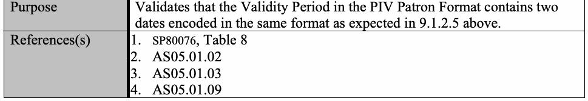
| 目的 | PIV Patron Format内のValidity Periodに、上記9.1.2.5で規定されるものと同じ形式で符号化された2つの日付が含まれることを検証する。 |
| 参照 | 1. SP80076、表8 2. AS05.01.02 3. AS05.01.03 4. AS05.01.09 |
| Precondition(s) | 1. A valid PIV card is inserted into the contact reader. 2. A valid PC/SC connection exists between the test application and the contact reader. 3. The test application is currently connected to the card application which is accessible through card handle. 4. A valid Card Holder Fingerprints object is present on the PIV card. 5. Security conditions to read the object are met. |
| Test Scenario | 1. Set cardHandle := <<valid card handle>> 2. Set OID := <<Card Holder Fingerprints (2.16.840.1.101.3.7.2.96.16)>> 3. Call pivGetData w/ • (IN) cardHandle • (IN) OID • (OUT) data 4. Extract the value field for tag 0xBC, extract the first 88 bytes (CBEFF Header) and read the Validity Period field (based on its position) in CBEFF Header. |
| Expected Result(s) | The Validity Period contains two dates and each is encoded in the YYYYMMDDhhmmssZ format. |
原本の表画像
| 前提条件 | 1. 有効なPIVカードが接触型リーダーに挿入されている。 2. テストアプリケーションと接触型リーダーの間に有効なPC/SC接続が存在する。 3. テストアプリケーションはカードハンドルを介してアクセス可能なカードアプリケーションに接続されている。 4. 有効なCard Holder FingerprintsオブジェクトがPIVカード上に存在する。 5. オブジェクト読み取りのセキュリティ条件が満たされている。 |
| テストシナリオ | 1. cardHandle := <<valid card handle>> 2. OID := <<Card Holder Fingerprints (2.16.840.1.101.3.7.2.96.16)>> 3. pivGetDataを次の引数で呼び出す： • (IN) cardHandle • (IN) OID • (OUT) data 4. タグ0xBCの値フィールドを抽出し、最初の88バイト（CBEFF Header）を抽出して、Validity Period フィールド（位置に基づいて）をCBEFF Header内で読み取る。 |
| 期待結果 | Validity Periodには2つの日付が含まれ、それぞれYYYYMMDDhhmmssZ形式で符号化されている。 |
9.1.2.7 Biometric Type Values
9.1.2.7 生体タイプ値
未レビュー訳原本の表画像
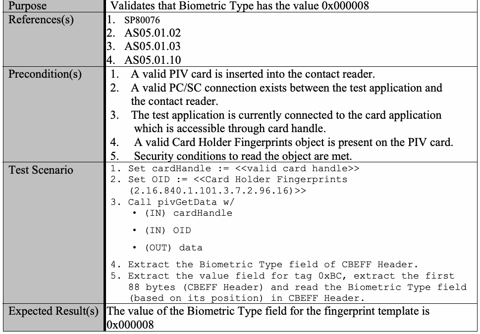
9.1.2.8 Biometric Data Type
9.1.2.8 生体データ型
未レビュー訳| Purpose | Validates that for the mandatory minutia PIV card templates, the CBEFF biometric data type encoding value shall be b100xxxxx, which corresponds to biometric data that has been processed. |
| References(s) | 1. SP80076 2. AS05.01.02 3. AS05.01.11 |
| Precondition(s) | 1. All required sample finger images have been recorded. 2. All templates have been generated and stored on the PIV card. 3. A valid PIV card is inserted into the contact reader. 4. A valid PC/SC connection exists between the test application and the contact reader. 5. The test application is currently connected to the card application which is accessible through card handle. 6. A valid Card Holder Fingerprints object is present on the PIV card. 7. Security conditions to read the object are met. |
| Test Scenario | 1. Set cardHandle := <<valid card handle>> 2. Set OID := <<Card Holder Fingerprints (2.16.840.1.101.3.7.2.96.16)>> 3. Call pivGetData w/ • (IN) cardHandle • (IN) OID • (OUT) data 4. Extract the Biometric Data Type field of CBEFF Header. 5. Extract the value field for tag 0xBC, extract the first 88 bytes (CBEFF Header) and read the Biometric Data Type field (based on its position) in CBEFF Header. |
| Expected Result(s) | The Biometric Data Type field has a value of b100xxxxx. |
原本の表画像
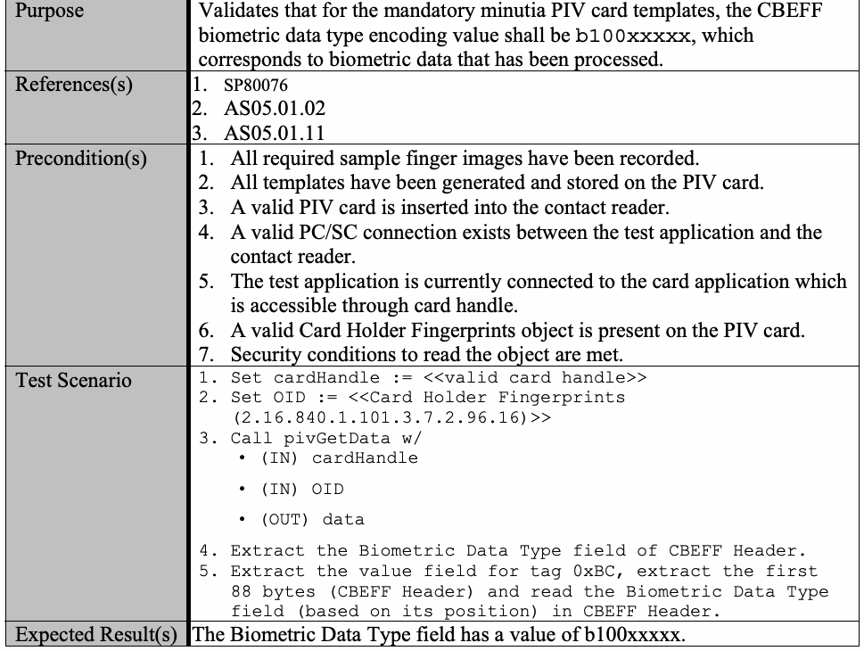
| 目的 | 次のことを検証する：用 必須の minutia PIV card templates, CBEFF biometric data type encoding 値 しなければならない be b100xxxxx, which corresponds to biometric data that は been processed. |
| 参照 | 1. SP80076 2. AS05.01.02 3. AS05.01.11 |
| 前提条件 | 1. 必要なサンプル指画像がすべて記録されている。 2. すべてのテンプレートが生成され、PIVカードに格納されている。 3. 有効なPIVカードが接触型リーダーに挿入されている。 4. テストアプリケーションと接触型リーダーの間に有効なPC/SC接続が存在する。 5. テストアプリケーションはカードハンドルを介してアクセス可能なカードアプリケーションに接続されている。 6. 有効なCard Holder FingerprintsオブジェクトがPIVカード上に存在する。 7. オブジェクト読み取りのセキュリティ条件が満たされている。 |
| テストシナリオ | 1. cardHandle := <<valid card handle>> 2. OID := <<Card Holder Fingerprints (2.16.840.1.101.3.7.2.96.16)>> 3. pivGetDataを次の引数で呼び出す： • (IN) cardHandle • (IN) OID • (OUT) data 4. CBEFF Headerの生体データ型フィールドを抽出する。 5. タグ0xBCの値フィールドを抽出し、最初の88バイト（CBEFF Header）を抽出して、生体データ型 フィールド（位置に基づいて）をCBEFF Header内で読み取る。 |
| 期待結果 | 生体データ型フィールドの値はb100xxxxxである。 |
9.1.2.9 Biometric Data Quality
9.1.2.9 生体データ品質
未レビュー訳原本の表画像
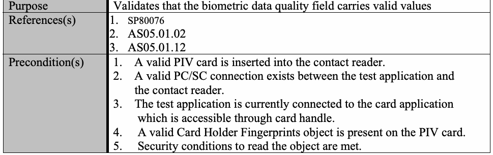
| Test Scenario | 1. Set cardHandle := <<valid card handle>> 2. Set OID := <<Card Holder Fingerprints (2.16.840.1.101.3.7.2.96.16)>> 3. Call pivGetData w/ • (IN) cardHandle • (IN) OID • (OUT) data 4. Extract the Biometric Data Quality field of CBEFF Header. 5. Extract the value field for tag 0xBC, extract the first 88 bytes (CBEFF Header) and read the Biometric Data Quality field (based on its position) in CBEFF Header. |
| Expected Result(s) | The Biometric Data Quality field has a value between -2 and 100. |
原本の表画像
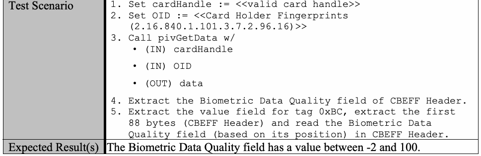
| テストシナリオ | 1. cardHandle := <<valid card handle>> 2. OID := <<Card Holder Fingerprints (2.16.840.1.101.3.7.2.96.16)>> 3. pivGetDataを次の引数で呼び出す： • (IN) cardHandle • (IN) OID • (OUT) data 4. CBEFF Headerの生体データ品質フィールドを抽出する。 5. タグ0xBCの値フィールドを抽出し、最初の88バイト（CBEFF Header）を抽出して、生体データ品質 フィールド（位置に基づいて）をCBEFF Header内で読み取る。 |
| 期待結果 | 生体データ品質フィールドの値は-2から100までである。 |
9.1.2.10 Creator Field Value
9.1.2.10 Creatorフィールド値
未レビュー訳| Purpose | Validates that the Creator field in the PIV Patron Format contains 18 bytes of which the first K <= 17 bytes shall be ASCII characters, and the first of the remaining 18-K shall be a null terminator (zero). |
| References(s) | 1. SP80076 2. AS05.01.02 3. AS05.01.13 |
| Precondition(s) | 1. A valid PIV card is inserted into the contact reader. 2. A valid PC/SC connection exists between the test application and the contact reader. 3. The test application is currently connected to the card application which is accessible through card handle. 4. A valid Card Holder Fingerprints object is present on the PIV card. 5. Security conditions to read the object are met. |
| Test Scenario | Extract the value field for tag 0xBC, extract the first 88 bytes (CBEFF Header) and read the Creator field (based on its position) in CBEFF Header. Start the following procedure at the first byte of the Creator field: For bytes 0 to 16, check if byte represents an ASCII character If yes, continue. Else, check if zero. If no, fail. Else iterate through remaining bytes in field and fail iff non-zero. For bytes 17 through the end of the field, iterate through all bytes and fail iff non-zero |
| Expected Result(s) | Procedure completes without failing. |
原本の表画像
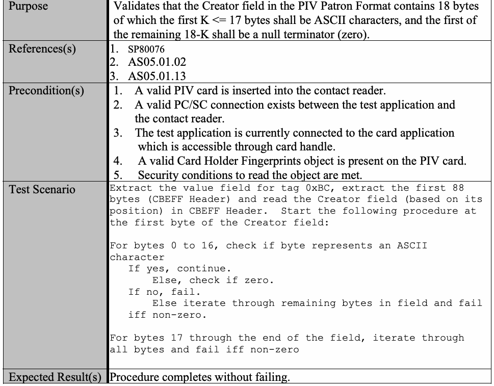
| 目的 | 次のことを検証する： Creator フィールド における PIV Patron Format contains 18 バイト of which 最初のK <= 17バイトはASCII文字であり、残りの18-Kバイトの先頭はヌル終端（ゼロ）でなければならない。 |
| 参照 | 1. SP80076 2. AS05.01.02 3. AS05.01.13 |
| 前提条件 | 1. 有効なPIVカードが接触型リーダーに挿入されている。 2. テストアプリケーションと接触型リーダーの間に有効なPC/SC接続が存在する。 3. テストアプリケーションはカードハンドルを介してアクセス可能なカードアプリケーションに接続されている。 4. 有効なCard Holder FingerprintsオブジェクトがPIVカード上に存在する。 5. オブジェクト読み取りのセキュリティ条件が満たされている。 |
| テストシナリオ | タグ0xBCの値フィールドを抽出し、最初の88バイト（CBEFF Header）を抽出して、Creator フィールド（位置に基づいて）をCBEFF Header内で読み取る。 Start following procedure at first byte of Creator フィールド: バイト0～16について、ASCII文字を表すか確認し、該当すれば続行する。そうでなければゼロか確認し、ゼロでなければ失敗とする。ゼロの場合はフィールド内の残りのバイトを調べ、ゼロ以外があれば失敗とする。バイト17からフィールド末尾までは全バイトを調べ、ゼロ以外があれば失敗とする |
| 期待結果 | 手順が失敗せずに完了する。 |
9.1.2.11 FASC-N Value
9.1.2.11 FASC-N値
未レビュー訳| Purpose | The FASC-N field in the PIV Patron Format shall contain the 25 bytes of the FASC-N component of the CHUID identifier. |
原本の表画像
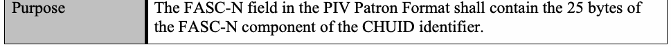
| 目的 | PIV Patron FormatのFASC-Nフィールドは、CHUID識別子のFASC-N構成要素の25バイトを含まなければならない。 |
| References(s) | 1. SP80076 2. AS05.01.02 3. AS05.01.03 4. AS05.01.14 |
| Precondition(s) | 1. A valid PIV card is inserted into the contact reader. 2. A valid PC/SC connection exists between the test application and the contact reader. 3. The test application is currently connected to the card application which is accessible through card handle. 4. A valid Card Holder Fingerprints object is present on the PIV card. 5. Security conditions to read the object are met. |
| Test Scenario | 1. Set cardHandle := <<valid card handle>> 2. Set OID := <<Card Holder Fingerprints (2.16.840.1.101.3.7.2.96.16)>> 3. Call pivGetData w/ • (IN) cardHandle • (IN) OID • (OUT) data 4. Extract the FASC-N field of CBEFF Header. 5. Set cardHandle := <<valid card handle>> 6. Set OID := <<Card Holder Unique Identifier (2.16.840.1.101.3.7.2.48.0)>> 7. Call pivGetData w/ • (IN) cardHandle • (IN) OID • (OUT) data 8. Extract the value field for tag 0xBC, extract the first 88 bytes (CBEFF Header) and read the FASC-N field (based on its position) in CBEFF Header. |
| Expected Result(s) | The FASC-N field in CBEFF header is the same as the one extracted from the CHUID. |
原本の表画像
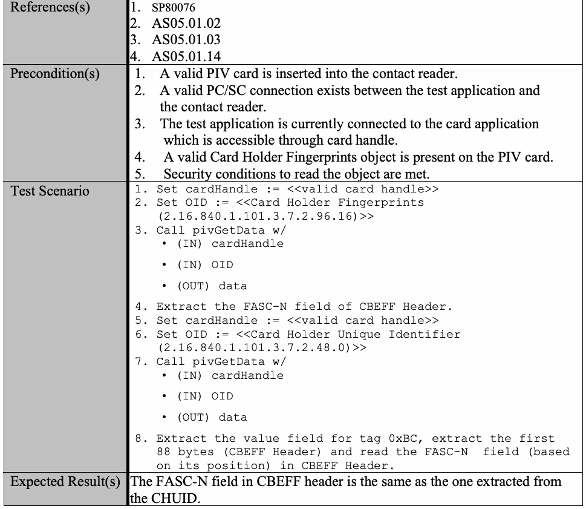
| 参照 | 1. SP80076 2. AS05.01.02 3. AS05.01.03 4. AS05.01.14 |
| 前提条件 | 1. 有効なPIVカードが接触型リーダーに挿入されている。 2. テストアプリケーションと接触型リーダーの間に有効なPC/SC接続が存在する。 3. テストアプリケーションはカードハンドルを介してアクセス可能なカードアプリケーションに接続されている。 4. 有効なCard Holder FingerprintsオブジェクトがPIVカード上に存在する。 5. オブジェクト読み取りのセキュリティ条件が満たされている。 |
| テストシナリオ | 1. cardHandle := <<valid card handle>> 2. OID := <<Card Holder Fingerprints (2.16.840.1.101.3.7.2.96.16)>> 3. pivGetDataを次の引数で呼び出す： • (IN) cardHandle • (IN) OID • (OUT) data 4. CBEFF HeaderのFASC-Nフィールドを抽出する。 5. cardHandle := <<valid card handle>> 6. OID := <<Card Holder Unique Identifier (2.16.840.1.101.3.7.2.48.0)>> 7. pivGetDataを次の引数で呼び出す： • (IN) cardHandle • (IN) OID • (OUT) data 8. タグ0xBCの値フィールドを抽出し、最初の88バイト（CBEFF Header）を抽出して、FASC-N フィールド（位置に基づいて）をCBEFF Header内で読み取る。 |
| 期待結果 | CBEFF Header内のFASC-NフィールドはCHUIDから抽出されたものと同一である。 |
9.1.2.12 Reserved Field Value
9.1.2.12 予約フィールド値
未レビュー訳原本の表画像
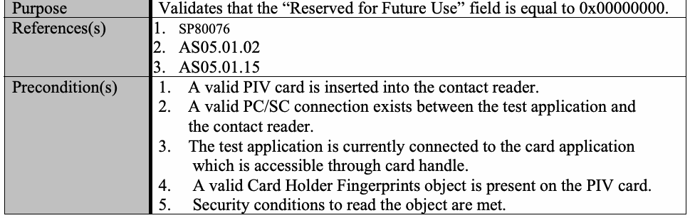
| Test Scenario | 1. Set cardHandle := <<valid card handle>> 2. Set OID := <<Card Holder Fingerprints (2.16.840.1.101.3.7.2.96.16)>> 3. Call pivGetData w/ • (IN) cardHandle • (IN) OID • (OUT) data 4. Extract the value field for tag 0xBC, extract the first 88 bytes (CBEFF Header) and read the “Reserved for Future Use” field (based on its position) in CBEFF Header. |
| Expected Result(s) | The field has a value of 0x00000000. |
原本の表画像
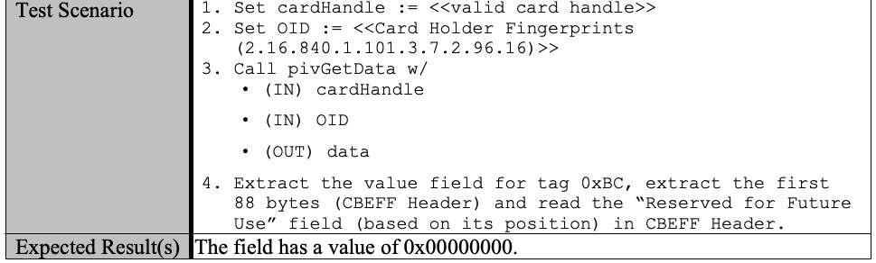
| テストシナリオ | 1. cardHandle := <<valid card handle>> 2. OID := <<Card Holder Fingerprints (2.16.840.1.101.3.7.2.96.16)>> 3. pivGetDataを次の引数で呼び出す： • (IN) cardHandle • (IN) OID • (OUT) data 4. タグ0xBCの値フィールドを抽出し、最初の88バイト（CBEFF Header）を抽出して、“Reserved 用 Future Use” フィールド（位置に基づいて）をCBEFF Header内で読み取る。 |
| 期待結果 | フィールドの値は0x00000000である。 |
9.2 CBEFF Patron Format for Facial Image
9.2 顔画像用CBEFF Patron Format
未レビュー訳9.2.1 CBEFF Structure for Facial Image
9.2.1 顔画像用CBEFF構造
未レビュー訳| Purpose | Validates that the CBEFF structure generated complies with SP80076 Table 7, “Simple CBEFF Structure”. |
| References(s) | 1. SP80076, Table 7. 2. AS05.01.01 3. AS05.01.03 |
| Precondition(s) | 1. All templates have been generated and stored on the PIV card. 2. A valid PIV card is inserted into the contact reader. 3. A valid PC/SC connection exists between the test application and the contact reader. 4. The test application is currently connected to the card application which is accessible through card handle. 5. A valid Card Holder Facial Image object is present on the PIV card. 6. Security conditions to read the object are met. |
| Test Scenario | 1. Set cardHandle := <<valid card handle>> 2. Set OID := <<Card Holder Facial Image (2.16.840.1.101.3.7.2.96.48)>> 3. Call pivGetData w/ • (IN) cardHandle • (IN) OID • (OUT) data 4. Extract the BDB Length field of CBEFF Header. 5. Extract the SB Length field of CBEFF Header. |
| Expected Result(s) | 1. From step 4: BDB Length field is non-zero and the recorded length match the actual length. 2. From step 5: SB Length field is non-zero and the recorded length match the actual length. 3. The Card Holder Facial Image object length is equal to CBEFF Header length + BDB Length + SB Length. |
原本の表画像
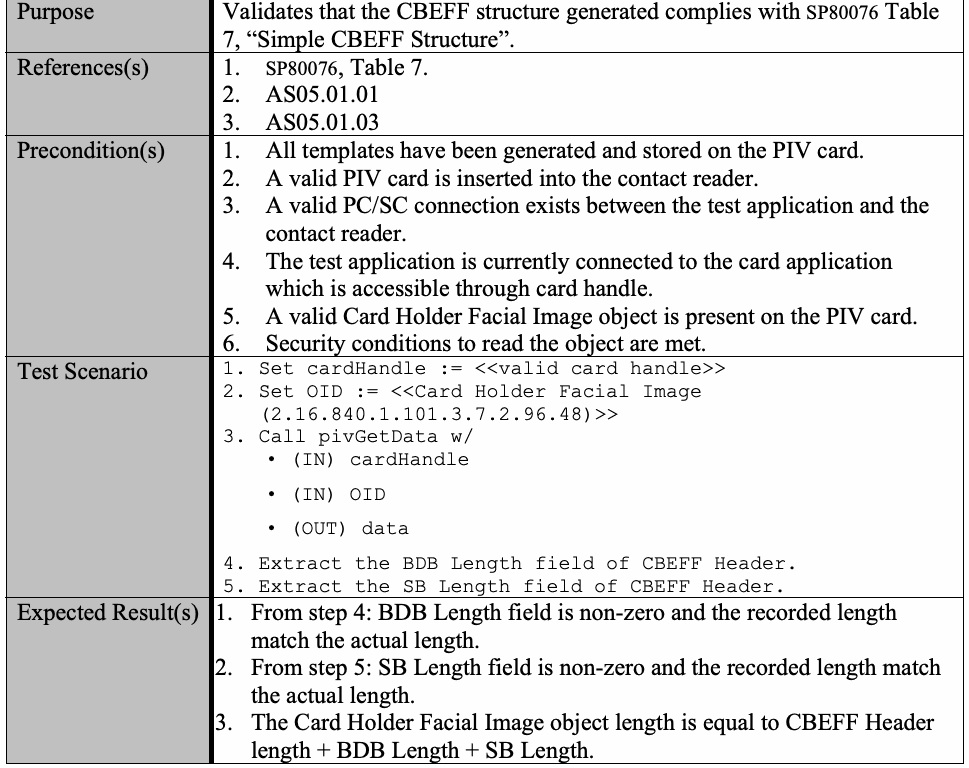
| 目的 | 生成されたCBEFF構造がSP80076 Table 7「Simple CBEFF Structure」に適合することを検証する。 |
| 参照 | 1. SP80076, Table 7. 2. AS05.01.01 3. AS05.01.03 |
| 前提条件 | 1. すべてのテンプレートが生成され、PIVカードに格納されている。 2. 有効なPIVカードが接触型リーダーに挿入されている。 3. テストアプリケーションと接触型リーダーの間に有効なPC/SC接続が存在する。 4. テストアプリケーションはカードハンドルを介してアクセス可能なカードアプリケーションに接続されている。 5. 有効なCard Holder Facial ImageオブジェクトがPIVカード上に存在する。 6. オブジェクト読み取りのセキュリティ条件が満たされている。 |
| テストシナリオ | 1. cardHandle := <<valid card handle>> 2. OID := <<Card Holder Facial Image (2.16.840.1.101.3.7.2.96.48)>> 3. pivGetDataを次の引数で呼び出す： • (IN) cardHandle • (IN) OID • (OUT) data 4. CBEFF HeaderのBDB Lengthフィールドを抽出する。 5. CBEFF HeaderのSB Lengthフィールドを抽出する。 |
| 期待結果 | 1. From step 4: BDB Length フィールド is non-zero および recorded 長さ match actual 長さ. 2. From step 5: SB Lengthフィールドはゼロ以外で、記録された長さは実際の長さと一致する。 3. Card Holder Facial Imageオブジェクトの長さはCBEFF Header 長さ + BDB Length + SB Lengthに等しい。 |
9.2.2 CBEFF Header for Facial Image
9.2.2 顔画像用CBEFFヘッダー
未レビュー訳9.2.2.1 Patron Header Version
9.2.2.1 Patron Header Version
未レビュー訳| Purpose | Validates that the CBEFF field “Patron Header Version” complies with SP80076 Table 8, “Patron Format PIV Specification” |
| References(s) | 1. SP80076, Table 8. 2. AS05.01.02 3. AS05.01.04 |
原本の表画像
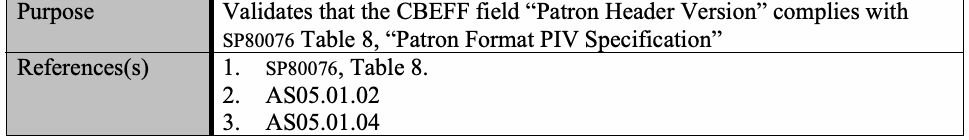
| 目的 | CBEFFフィールド「Patron Header Version」がSP80076 Table 8「Patron Format PIV Specification」に適合することを検証する。 |
| 参照 | 1. SP80076, Table 8. 2. AS05.01.02 3. AS05.01.04 |
| Precondition(s) | 1. A valid PIV card is inserted into the contact reader. 2. A valid PC/SC connection exists between the test application and the contact reader. 3. The test application is currently connected to the card application which is accessible through card handle. 4. A valid Card Holder Facial Image object is present on the PIV card. 5. Security conditions to read the object are met. |
| Test Scenario | 1. Set cardHandle := <<valid card handle>> 2. Set OID := <<Card Holder Facial Image (2.16.840.1.101.3.7.2.96.48)>> 3. Call pivGetData w/ • (IN) cardHandle • (IN) OID • (OUT) data 4. Extract the value field for tag 0xBC, extract the first 88 bytes (CBEFF Header) and read the Patron Header Version field (based on its position) in CBEFF Header. |
| Expected Result(s) | The Patron Header Version field has a value of 0x03. |
原本の表画像
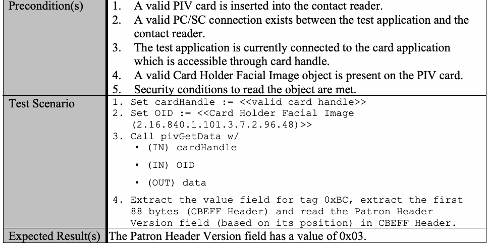
| 前提条件 | 1. 有効なPIVカードが接触型リーダーに挿入されている。 2. テストアプリケーションと接触型リーダーの間に有効なPC/SC接続が存在する。 3. テストアプリケーションはカードハンドルを介してアクセス可能なカードアプリケーションに接続されている。 4. 有効なCard Holder Facial ImageオブジェクトがPIVカード上に存在する。 5. オブジェクト読み取りのセキュリティ条件が満たされている。 |
| テストシナリオ | 1. cardHandle := <<valid card handle>> 2. OID := <<Card Holder Facial Image (2.16.840.1.101.3.7.2.96.48)>> 3. pivGetDataを次の引数で呼び出す： • (IN) cardHandle • (IN) OID • (OUT) data 4. タグ0xBCの値フィールドを抽出し、最初の88バイト（CBEFF Header）を抽出して、Patron Header Version フィールド（位置に基づいて）をCBEFF Header内で読み取る。 |
| 期待結果 | Patron Header Versionフィールドの値は0x03である。 |
9.2.2.2 SBH Security Option
9.2.2.2 SBHセキュリティオプション
未レビュー訳| Purpose | Validates that the biometric data block on the PIV card is digitally signed but not encrypted. |
| References(s) | 1. SP80076 2. AS05.01.02 3. AS05.01.05 |
| Precondition(s) | 1. A valid PIV card is inserted into the contact reader. 2. A valid PC/SC connection exists between the test application and the contact reader. 3. The test application is currently connectedto the card application which is accessible through card handle. 4. A valid Card Holder Facial Image object is present on the PIV card. 5. Security conditions to read the object are met. |
| Test Scenario | 1. Set cardHandle := <<valid card handle>> 2. Set OID := <<Card Holder Facial Image (2.16.840.1.101.3.7.2.96.48)>> 3. Call pivGetData w/ • (IN) cardHandle • (IN) OID • (OUT) data 4. Extract the value field for tag 0xBC, extract the first 88 bytes (CBEFF Header) and read the SBH Security Option field (based on its position) in CBEFF Header. |
| Expected Result(s) | The SBH Security Options field has a value of b00001101. |
原本の表画像
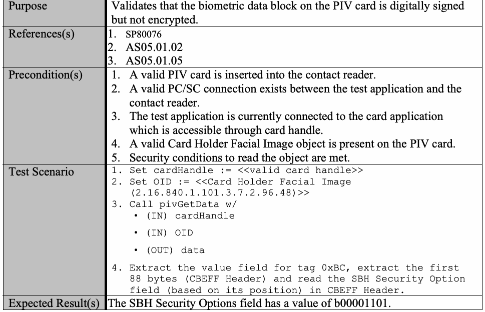
| 目的 | PIVカード上の生体データブロックがデジタル署名され、暗号化されていないことを検証する。 |
| 参照 | 1. SP80076 2. AS05.01.02 3. AS05.01.05 |
| 前提条件 | 1. 有効なPIVカードが接触型リーダーに挿入されている。 2. テストアプリケーションと接触型リーダーの間に有効なPC/SC接続が存在する。 3. テストアプリケーションはカードハンドルを介してアクセス可能なカードアプリケーションに接続されている。 4. 有効なCard Holder Facial ImageオブジェクトがPIVカード上に存在する。 5. オブジェクト読み取りのセキュリティ条件が満たされている。 |
| テストシナリオ | 1. cardHandle := <<valid card handle>> 2. OID := <<Card Holder Facial Image (2.16.840.1.101.3.7.2.96.48)>> 3. pivGetDataを次の引数で呼び出す： • (IN) cardHandle • (IN) OID • (OUT) data 4. タグ0xBCの値フィールドを抽出し、最初の88バイト（CBEFF Header）を抽出して、SBHセキュリティオプション フィールド（位置に基づいて）をCBEFF Header内で読み取る。 |
| 期待結果 | SBHセキュリティオプションsフィールドの値はb00001101である。 |
9.2.2.3 BDB Format Owner Values
9.2.2.3 BDB Format Owner値
未レビュー訳| Purpose | Validates that BDB Format Owner is set to a value of 0x001B denoting M1, the INCITS Technical Committee on Biometrics. |
| References(s) | 1. SP80076 2. AS05.01.02 3. AS05.01.03 4. AS05.01.06 |
| Precondition(s) | 1. A valid PIV card is inserted into the contact reader. 2. A valid PC/SC connection exists between the test application and the contact reader. 3. The test application is currently connected to the card application which is accessible through card handle. 4. A valid Card Holder Facial Image object is present on the PIV card. 5. Security conditions to read the object are met. |
| Test Scenario | 1. Set cardHandle := <<valid card handle>> 2. Set OID := <<Card Holder Facial Image (2.16.840.1.101.3.7.2.96.48)>> 3. Call pivGetData w/ • (IN) cardHandle • (IN) OID • (OUT) data 4. Extract the value field for tag 0xBC, extract the first 88 bytes (CBEFF Header) and read the BDB Format Owner field (based on its position) in CBEFF Header. |
| Expected Result(s) | The BDB Format Owner field has a value of 0x001B. |
原本の表画像
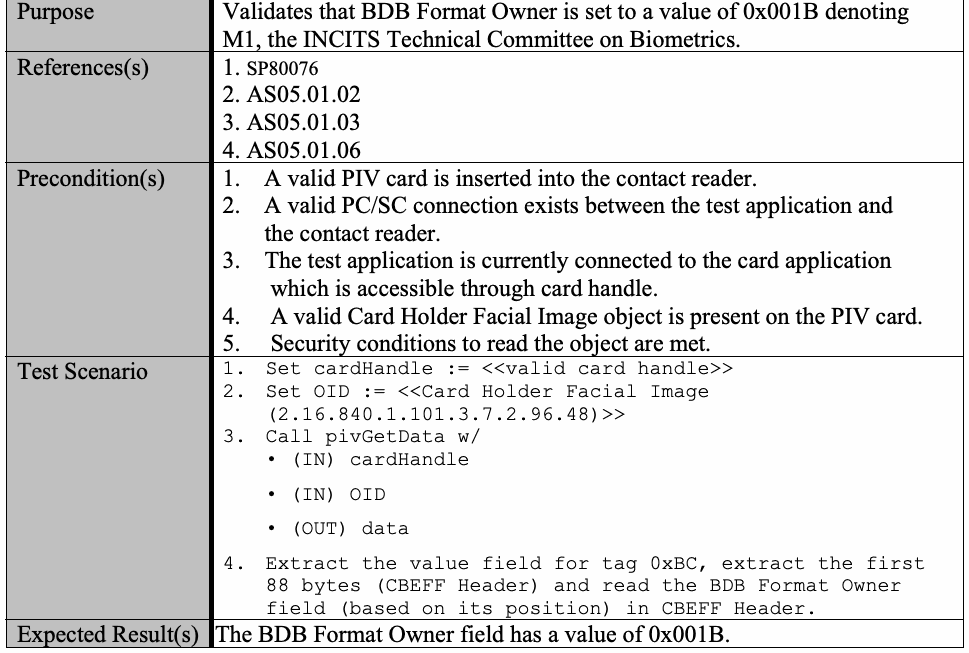
| 目的 | BDB Format OwnerがINCITS生体認証技術委員会M1を示す値0x001Bに設定されていることを検証する。 |
| 参照 | 1. SP80076 2. AS05.01.02 3. AS05.01.03 4. AS05.01.06 |
| 前提条件 | 1. 有効なPIVカードが接触型リーダーに挿入されている。 2. テストアプリケーションと接触型リーダーの間に有効なPC/SC接続が存在する。 3. テストアプリケーションはカードハンドルを介してアクセス可能なカードアプリケーションに接続されている。 4. 有効なCard Holder Facial ImageオブジェクトがPIVカード上に存在する。 5. オブジェクト読み取りのセキュリティ条件が満たされている。 |
| テストシナリオ | 1. cardHandle := <<valid card handle>> 2. OID := <<Card Holder Facial Image (2.16.840.1.101.3.7.2.96.48)>> 3. pivGetDataを次の引数で呼び出す： • (IN) cardHandle • (IN) OID • (OUT) data 4. タグ0xBCの値フィールドを抽出し、最初の88バイト（CBEFF Header）を抽出して、BDB Format Owner フィールド（位置に基づいて）をCBEFF Header内で読み取る。 |
| 期待結果 | BDB Format Ownerフィールドの値は0x001Bである。 |
9.2.2.4 BDB Format Type
9.2.2.4 BDB Format Type
未レビュー訳| Purpose | Validates that for optional facial image data stored on a PIV card, the BDB Format Type is set to a value of 0x0501. |
| References(s) | 1. SP80076 2. AS05.01.02 3. AS05.01.03 4. AS05.01.07 |
| Precondition(s) | 1. A valid PIV card is inserted into the contact reader. 2. A valid PC/SC connection exists between the test application and the contact reader. 3. The test application is currently connected to the card application which is accessible through card handle. 4. A valid Card Holder Facial Image object is present on the PIV card. 5. Security conditions to read the object are met. |
原本の表画像
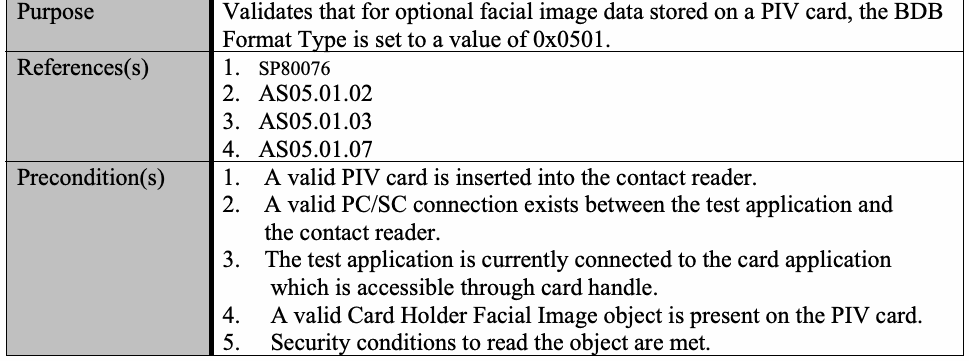
| 目的 | PIVカード上の任意の顔画像データについて、BDB Format Typeが値0x0501に設定されていることを検証する。 |
| 参照 | 1. SP80076 2. AS05.01.02 3. AS05.01.03 4. AS05.01.07 |
| 前提条件 | 1. 有効なPIVカードが接触型リーダーに挿入されている。 2. テストアプリケーションと接触型リーダーの間に有効なPC/SC接続が存在する。 3. テストアプリケーションはカードハンドルを介してアクセス可能なカードアプリケーションに接続されている。 4. 有効なCard Holder Facial ImageオブジェクトがPIVカード上に存在する。 5. オブジェクト読み取りのセキュリティ条件が満たされている。 |
| Test Scenario | 1. Set cardHandle := <<valid card handle>> 2. Set OID := <<Card Holder Facial Image (2.16.840.1.101.3.7.2.96.48)>> 3. Call pivGetData w/ • (IN) cardHandle • (IN) OID • (OUT) data 4. Extract the value field for tag 0xBC, extract the first 88 bytes (CBEFF Header) and read the BDB Format Type field (based on its position) in CBEFF Header. |
| Expected Result(s) | The BDB Format Type field has a value of 0x0501. |
原本の表画像
| テストシナリオ | 1. cardHandle := <<valid card handle>> 2. OID := <<Card Holder Facial Image (2.16.840.1.101.3.7.2.96.48)>> 3. pivGetDataを次の引数で呼び出す： • (IN) cardHandle • (IN) OID • (OUT) data 4. タグ0xBCの値フィールドを抽出し、最初の88バイト（CBEFF Header）を抽出して、BDB Format Type フィールド（位置に基づいて）をCBEFF Header内で読み取る。 |
| 期待結果 | BDB Format Typeフィールドの値は0x0501である。 |
9.2.2.5 Biometric Creation Date
9.2.2.5 生体情報作成日
未レビュー訳| Purpose | Validates that the creation date in the PIV Patron Format is encoded in 8 bytes using a binary representation of “YYYYMMDDhhmmssZ”. |
| References(s) | 1. SP80076, Table 8. 2. AS05.01.02 3. AS05.01.03 4. AS05.01.08 |
| Precondition(s) | 1. A valid PIV card is inserted into the contact reader. 2. A valid PC/SC connection exists between the test application and the contact reader. 3. The test application is currently connected to the card application which is accessible through card handle. 4. A valid Card Holder Facial Image object is present on the PIV card. 5. Security conditions to read the object are met. |
| Test Scenario | 1. Set cardHandle := <<valid card handle>> 2. Set OID := <<Card Holder Facial Image (2.16.840.1.101.3.7.2.96.48)>> 3. Call pivGetData w/ • (IN) cardHandle • (IN) OID • (OUT) data 4. Extract the value field for tag 0xBC, extract the first 88 bytes (CBEFF Header) and read the Biometric Creation Date field (based on its position) in CBEFF Header. |
| Expected Result(s) | The Biometric Creation Date is in the YYYYMMDDhhmmssZ format. |
原本の表画像
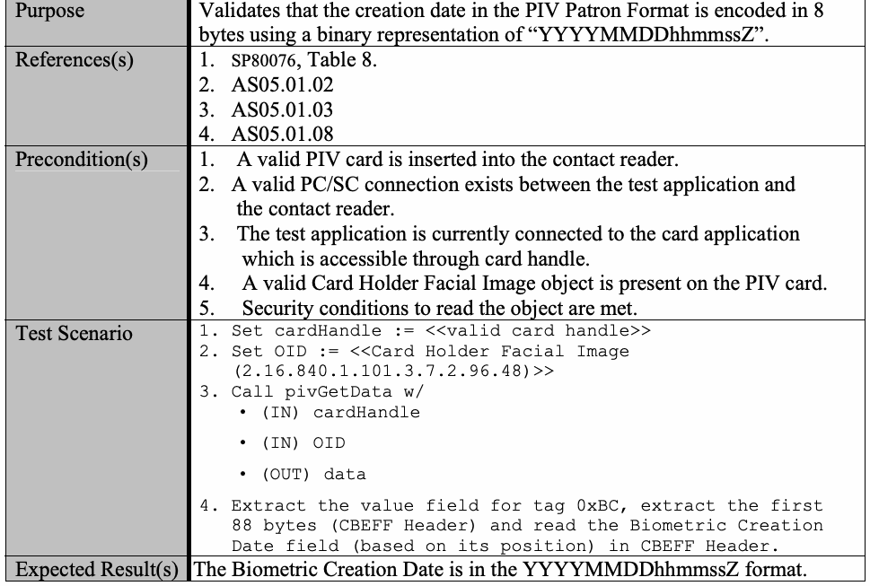
| 目的 | PIV Patron Formatの作成日が「YYYYMMDDhhmmssZ」のバイナリ表現を用いて8バイトで符号化されていることを検証する。 |
| 参照 | 1. SP80076, Table 8. 2. AS05.01.02 3. AS05.01.03 4. AS05.01.08 |
| 前提条件 | 1. 有効なPIVカードが接触型リーダーに挿入されている。 2. テストアプリケーションと接触型リーダーの間に有効なPC/SC接続が存在する。 3. テストアプリケーションはカードハンドルを介してアクセス可能なカードアプリケーションに接続されている。 4. 有効なCard Holder Facial ImageオブジェクトがPIVカード上に存在する。 5. オブジェクト読み取りのセキュリティ条件が満たされている。 |
| テストシナリオ | 1. cardHandle := <<valid card handle>> 2. OID := <<Card Holder Facial Image (2.16.840.1.101.3.7.2.96.48)>> 3. pivGetDataを次の引数で呼び出す： • (IN) cardHandle • (IN) OID • (OUT) data 4. タグ0xBCの値フィールドを抽出し、最初の88バイト（CBEFF Header）を抽出して、Biometric Creation Date フィールド（位置に基づいて）をCBEFF Header内で読み取る。 |
| 期待結果 | Biometric Creation DateはYYYYMMDDhhmmssZ形式である。 |
| Purpose | Validates that the Validity Period in the PIV Patron Format contains two dates encoded in the same format as expected in 9.2.2.5 above. |
| References(s) | 1. SP80076, Table 8 2. AS05.01.02 3. AS05.01.03 4. AS05.01.09 |
原本の表画像
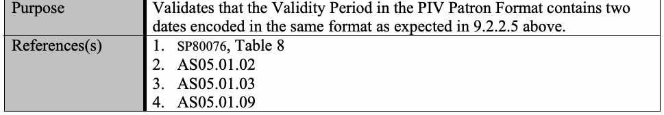
| 目的 | PIV Patron FormatのValidity Periodに、上記9.2.2.5で想定される形式で符号化された2つの日付が含まれることを検証する。 |
| 参照 | 1. SP80076, Table 8 2. AS05.01.02 3. AS05.01.03 4. AS05.01.09 |
| Precondition(s) | 1. A valid PIV card is inserted into the contact reader. 2. A valid PC/SC connection exists between the test application and the contact reader. 3. The test application is currently connected to the card application which is accessible through card handle. 4. A valid Card Holder Facial Image object is present on the PIV card. 5. Security conditions to read the object are met. |
| Test Scenario | 1. Set cardHandle := <<valid card handle>> 2. Set OID := <<Card Holder Facial Image (2.16.840.1.101.3.7.2.96.48)>> 3. Call pivGetData w/ • (IN) cardHandle • (IN) OID • (OUT) data 4. Extract the value field for tag 0xBC, extract the first 88 bytes (CBEFF Header) and read the Validity Period field (based on its position) in CBEFF Header. |
| Expected Result(s) | The Validity Period contains two dates and each is encoded in the YYYYMMDDhhmmssZ format. |
原本の表画像
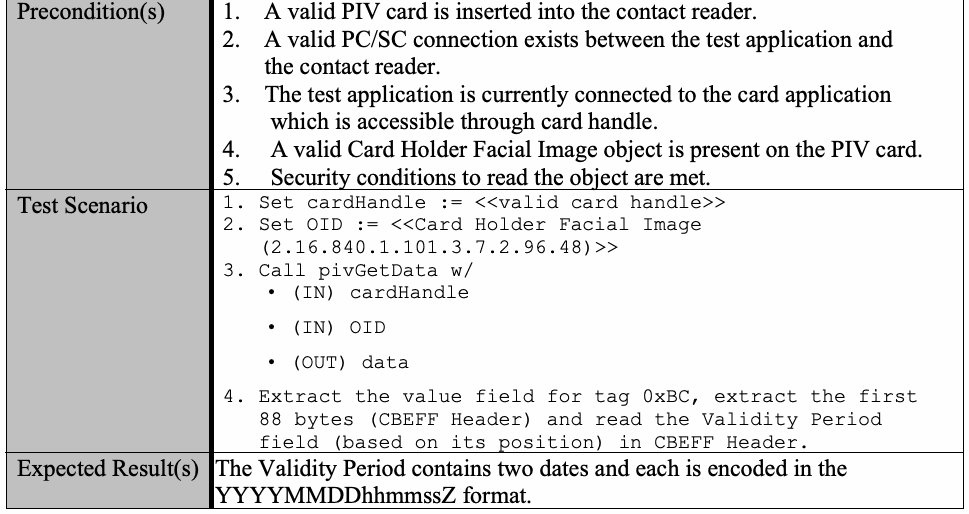
| 前提条件 | 1. 有効なPIVカードが接触型リーダーに挿入されている。 2. テストアプリケーションと接触型リーダーの間に有効なPC/SC接続が存在する。 3. テストアプリケーションはカードハンドルを介してアクセス可能なカードアプリケーションに接続されている。 4. 有効なCard Holder Facial ImageオブジェクトがPIVカード上に存在する。 5. オブジェクト読み取りのセキュリティ条件が満たされている。 |
| テストシナリオ | 1. cardHandle := <<valid card handle>> 2. OID := <<Card Holder Facial Image (2.16.840.1.101.3.7.2.96.48)>> 3. pivGetDataを次の引数で呼び出す： • (IN) cardHandle • (IN) OID • (OUT) data 4. タグ0xBCの値フィールドを抽出し、最初の88バイト（CBEFF Header）を抽出して、Validity Period フィールド（位置に基づいて）をCBEFF Header内で読み取る。 |
| 期待結果 | Validity Periodには2つの日付が含まれ、それぞれYYYYMMDDhhmmssZ形式で符号化されている。 |
9.2.2.7 Biometric Type Values
9.2.2.7 生体タイプ値
未レビュー訳原本の表画像
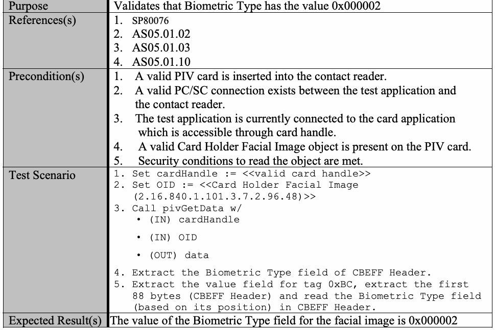
9.2.2.8 Biometric Data Type
9.2.2.8 生体データ型
未レビュー訳| Purpose | Validates that the CBEFF biometric data type encoding value shall be b001xxxxx, which corresponds to the raw biometric data. |
| References(s) | 1. SP80076 2. AS05.01.02 3. AS05.01.11 |
| Precondition(s) | 1. All required sample finger images have been recorded. 2. All templates have been generated and stored on the PIV card. 3. A valid PIV card is inserted into the contact reader. 4. A valid PC/SC connection exists between the test application and the contact reader. 5. The test application is currently connected to the card application which is accessible through card handle. 6. A valid Card Holder Facial Image object is present on the PIV card. 7. Security conditions to read the object are met. |
| Test Scenario | 1. Set cardHandle := <<valid card handle>> 2. Set OID := <<Card Holder Facial Image (2.16.840.1.101.3.7.2.96.48)>> 3. Call pivGetData w/ • (IN) cardHandle • (IN) OID • (OUT) data 4. Extract the Biometric Data Type field of CBEFF Header. 5. Extract the value field for tag 0xBC, extract the first 88 bytes (CBEFF Header) and read the Biometric Data Type field (based on its position) in CBEFF Header. |
| Expected Result(s) | The Biometric Data Type field has a value of b001xxxxx. |
原本の表画像
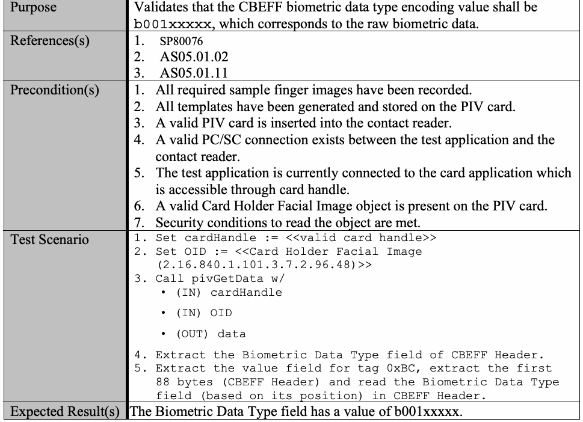
| 目的 | 次のことを検証する： CBEFF biometric data type encoding 値 しなければならない be b001xxxxx, which corresponds to raw biometric data. |
| 参照 | 1. SP80076 2. AS05.01.02 3. AS05.01.11 |
| 前提条件 | 1. 必要なサンプル指画像がすべて記録されている。 2. すべてのテンプレートが生成され、PIVカードに格納されている。 3. 有効なPIVカードが接触型リーダーに挿入されている。 4. テストアプリケーションと接触型リーダーの間に有効なPC/SC接続が存在する。 5. テストアプリケーションはカードハンドルを介してアクセス可能なカードアプリケーションに接続されている。 6. 有効なCard Holder Facial ImageオブジェクトがPIVカード上に存在する。 7. オブジェクト読み取りのセキュリティ条件が満たされている。 |
| テストシナリオ | 1. cardHandle := <<valid card handle>> 2. OID := <<Card Holder Facial Image (2.16.840.1.101.3.7.2.96.48)>> 3. pivGetDataを次の引数で呼び出す： • (IN) cardHandle • (IN) OID • (OUT) data 4. CBEFF Headerの生体データ型フィールドを抽出する。 5. タグ0xBCの値フィールドを抽出し、最初の88バイト（CBEFF Header）を抽出して、生体データ型 フィールド（位置に基づいて）をCBEFF Header内で読み取る。 |
| 期待結果 | 生体データ型フィールドの値はb001xxxxxである。 |
9.2.2.9 Biometric Data Quality
9.2.2.9 生体データ品質
未レビュー訳原本の表画像
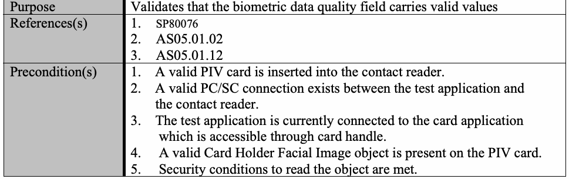
| Test Scenario | 1. Set cardHandle := <<valid card handle>> 2. Set OID := <<Card Holder Facial Image (2.16.840.1.101.3.7.2.96.48)>> 3. Call pivGetData w/ • (IN) cardHandle • (IN) OID • (OUT) data 4. Extract the Biometric Data Quality field of CBEFF Header. 5. Extract the value field for tag 0xBC, extract the first 88 bytes (CBEFF Header) and read the Biometric Data Quality field (based on its position) in CBEFF Header. |
| Expected Result(s) | The Biometric Data Quality field is -2. |
原本の表画像
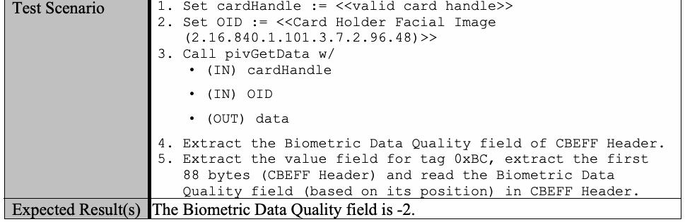
| 試験シナリオ | 1. cardHandle := <<valid card handle>> を設定する。2. OID := <<Card Holder Facial Image (2.16.840.1.101.3.7.2.96.48)>> を設定する。3. pivGetData を次の引数で呼び出す：• (IN) cardHandle • (IN) OID • (OUT) data。4. CBEFFヘッダーのBiometric Data Qualityフィールドを抽出する。5. タグ0xBCのvalueフィールドを抽出し、先頭88バイト（CBEFFヘッダー）を取り出して、CBEFFヘッダー内の位置に基づきBiometric Data Qualityフィールドを読み取る。 |
| 期待される結果 | Biometric Data Qualityフィールドの値は-2である。 |
9.2.2.10 Creator Field Value
9.2.2.10 Creatorフィールドの値
未レビュー訳| Purpose | Validates that the Creator field in the PIV Patron Format contains 18 bytes of which the first K <= 17 bytes shall be ASCII characters, and the first of the remaining 18-K shall be a null terminator (zero). |
| References(s) | 1. SP80076 2. AS05.01.02 3. AS05.01.13 |
| Precondition(s) | 1. A valid PIV card is inserted into the contact reader. 2. A valid PC/SC connection exists between the test application and the contact reader. 3. The test application is currently connected to the card application which is accessible through card handle. 4. A valid Card Holder Facial Image object is present on the PIV card. 5. Security conditions to read the object are met. |
| Test Scenario | Extract the value field for tag 0xBC, extract the first 88 bytes (CBEFF Header) and read the Creator field (based on its position) in CBEFF Header. Start the following procedure at the first byte of the Creator field: For bytes 0 to 16, check if byte represents an ASCII character If yes, continue. Else, check if zero. If no, fail. Else iterate through remaining bytes in field and fail iff non-zero. For bytes 17 through the end of the field, iterate through all bytes and fail if non-zero |
| Expected Result(s) | Procedure completes without failing. |
原本の表画像
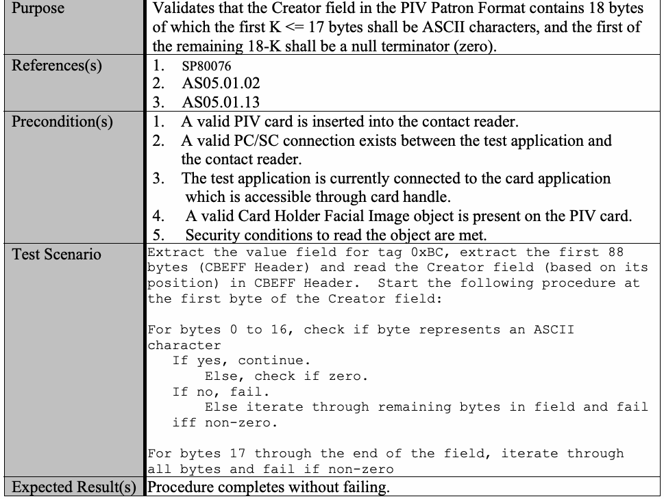
| 目的 | PIV Patron FormatのCreatorフィールドが18バイトを含み、そのうち先頭のK <= 17バイトがASCII文字であり、残り18-Kバイトの先頭がNULL終端（ゼロ）であることを検証する。 |
| 参照 | 1. SP80076 2. AS05.01.02 3. AS05.01.13 |
| 前提条件 | 1. 妥当なPIVカードが接触型リーダーに挿入されている。2. 試験アプリケーションと接触型リーダーの間に妥当なPC/SC接続が存在する。3. 試験アプリケーションは現在、カードハンドルを通じてアクセス可能なカードアプリケーションに接続されている。4. 妥当なカード保有者顔画像オブジェクトがPIVカード上に存在する。5. オブジェクトを読み取るためのセキュリティ条件が満たされている。 |
| 試験シナリオ | タグ0xBCのvalueフィールドを抽出し、先頭88バイト（CBEFFヘッダー）を取り出して、CBEFFヘッダー内の位置に基づきCreatorフィールドを読み取る。Creatorフィールドの先頭バイトから次の手順を開始する。バイト0〜16について、そのバイトがASCII文字を表すか確認する。該当すれば続行する。該当しなければゼロか確認する。ゼロでなければ失敗とする。ゼロであればフィールドの残りのバイトを順に確認し、ゼロ以外があれば失敗とする。フィールドの17バイト目から末尾までは、すべてのバイトを順に確認し、ゼロ以外があれば失敗とする。 |
| 期待される結果 | 失敗せずに手順が完了する。 |
9.2.2.11 FASC-N Value
9.2.2.11 FASC-Nの値
未レビュー訳| Purpose | The FASC-N field in the PIV Patron Format shall contain the 25 bytes of the FASC-N component of the CHUID identifier. |
| References(s) | 1. SP80076 2. AS05.01.02 3. AS05.01.03 4. AS05.01.14 |
| Precondition(s) | 1. A valid PIV card is inserted into the contact reader. 2. A valid PC/SC connection exists between the test application and the contact reader. 3. The test application is currently connected to the card application which is accessible through card handle. 4. A valid Card Holder Facial Image object is present on the PIV card. 5. Security conditions to read the object are met. |
| Test Scenario | 1. Set cardHandle := <<valid card handle>> 2. Set OID := <<Card Holder Facial Image (2.16.840.1.101.3.7.2.96.48)>> 3. Call pivGetData w/ • (IN) cardHandle • (IN) OID • (OUT) data 4. Extract the FASC-N field of CBEFF Header. 5. Set cardHandle := <<valid card handle>> 6. Set OID := <<Card Holder Unique Identifier (2.16.840.1.101.3.7.2.48.0)>> 7. Call pivGetData w/ • (IN) cardHandle • (IN) OID • (OUT) data 8. Extract the value field for tag 0xBC, extract the first 88 bytes (CBEFF Header) and read the FASC-N field (based on its position) in CBEFF Header. |
| Expected Result(s) | The FASC-N field in CBEFF header is the same as the one extracted from the CHUID. |
原本の表画像
| 目的 | PIV Patron FormatのFASC-Nフィールドに、CHUID識別子のFASC-N構成要素の25バイトが含まれていること。 |
| 参照 | 1. SP80076 2. AS05.01.02 3. AS05.01.03 4. AS05.01.14 |
| 前提条件 | 1. 妥当なPIVカードが接触型リーダーに挿入されている。2. 試験アプリケーションと接触型リーダーの間に妥当なPC/SC接続が存在する。3. 試験アプリケーションは現在、カードハンドルを通じてアクセス可能なカードアプリケーションに接続されている。4. 妥当なカード保有者顔画像オブジェクトがPIVカード上に存在する。5. オブジェクトを読み取るためのセキュリティ条件が満たされている。 |
| 試験シナリオ | 1. cardHandle := <<valid card handle>> を設定する。2. OID := <<Card Holder Facial Image (2.16.840.1.101.3.7.2.96.48)>> を設定する。3. pivGetData を次の引数で呼び出す：• (IN) cardHandle • (IN) OID • (OUT) data。4. CBEFFヘッダーのFASC-Nフィールドを抽出する。5. cardHandle := <<valid card handle>> を設定する。6. OID := <<Card Holder Unique Identifier (2.16.840.1.101.3.7.2.48.0)>> を設定する。7. pivGetData を次の引数で呼び出す：• (IN) cardHandle • (IN) OID • (OUT) data。8. タグ0xBCのvalueフィールドを抽出し、先頭88バイト（CBEFFヘッダー）を取り出して、CBEFFヘッダー内の位置に基づきFASC-Nフィールドを読み取る。 |
| 期待される結果 | CBEFFヘッダーのFASC-Nフィールドは、CHUIDから抽出した値と同一である。 |
9.2.2.12 Reserved Field Value
9.2.2.12 予約フィールドの値
未レビュー訳原本の表画像
| Precondition(s) | 1. A valid PIV card is inserted into the contact reader. 2. A valid PC/SC connection exists between the test application and the contact reader. 3. The test application is currently connected to the card application which is accessible through card handle. 4. A valid Card Holder Facial Image object is present on the PIV card. 5. Security conditions to read the object are met. |
| Test Scenario | 1. Set cardHandle := <<valid card handle>> 2. Set OID := <<Card Holder Facial Image (2.16.840.1.101.3.7.2.96.48)>> 3. Call pivGetData w/ • (IN) cardHandle • (IN) OID • (OUT) data 4. Extract the value field for tag 0xBC, extract the first 88 bytes (CBEFF Header) and read the “Reserved for Future Use” field (based on its position) in CBEFF Header. |
| Expected Result(s) | The field has a value of 0x00000000. |
原本の表画像
| 前提条件 | 1. 妥当なPIVカードが接触型リーダーに挿入されている。2. 試験アプリケーションと接触型リーダーの間に妥当なPC/SC接続が存在する。3. 試験アプリケーションは現在、カードハンドルを通じてアクセス可能なカードアプリケーションに接続されている。4. 妥当なカード保有者顔画像オブジェクトがPIVカード上に存在する。5. オブジェクトを読み取るためのセキュリティ条件が満たされている。 |
| 試験シナリオ | 1. cardHandle := <<valid card handle>> を設定する。2. OID := <<Card Holder Facial Image (2.16.840.1.101.3.7.2.96.48)>> を設定する。3. pivGetData を次の引数で呼び出す：• (IN) cardHandle • (IN) OID • (OUT) data。4. タグ0xBCのvalueフィールドを抽出し、先頭88バイト（CBEFFヘッダー）を取り出して、CBEFFヘッダー内の位置に基づき「将来使用のために予約」フィールドを読み取る。 |
| 期待される結果 | フィールドの値は0x00000000である。 |
9.3 Fingerprint Template
9.3 指紋テンプレート
未レビュー訳9.3.1 General Record Header Conformance
9.3.1 General Record Headerへの適合性
未レビュー訳| Purpose | Verify that the General Record Header of the fingerprint template conforms to specifications in Table 3 of SP80076. |
| Reference(s) | 1. SP80076, Table 3 2. AS05.01.03 3. AS05.02.02 4. AS05.02.03 5. AS05.02.04 6. AS05.02.05 7. AS05.02.06 8. AS05.02.07 9. AS05.02.08 10. AS05.02.09 11. AS05.02.10 12. AS05.02.11 13. AS05.02.12 |
| Precondition(s) | 1. A valid PIV card is inserted into the contact reader. 2. A valid PC/SC connection exists between the test application and the contact reader. 3. The test application is currently connected to the card application which is accessible through card handle. 4. A valid Card Holder Fingerprints object is present on the PIV card. 5. Security conditions to read the object are met. |
| Test Scenario | 1. Set cardHandle := <<valid card handle>> 2. Set OID := <<Card Holder Fingerprints (2.16.840.1.101.3.7.2.96.16)>> 3. Call pivGetData w/ • (IN) cardHandle • (IN) OID • (OUT) data 4. Extract the value field for tag 0xBC, parse the first 88 bytes (CBEFF Header) to obtain the BDB and SB lengths and then continue on to parse the General Record Header of the BDB a.Extract contents of Format Identifier. b.Extract contents of Version Number. c.Extract contents of Record Length field. d.Extract contents of CBEFF Product Identifier Owner e.Extract contents of CBEFF Product Identifier Type f.Extract contents of Capture Equipment Compliance field. g.Extract contents of Capture Equipment ID h.Extract contents of “Scanned Image in X Direction” field i.Extract contents of “Scanned Image in Y Direction” field j.Extract contents of X (horizontal) resolution. k.Extract contents of Y (vertical) resolution. l.Extract contents of “Number of Finger Views” field. m.Extract contents of Reserved Byte. |
原本の表画像
| 目的 | 指紋テンプレートのGeneral Record HeaderがSP80076の表3の仕様に適合することを確認する。 |
| 参照 | 1. SP80076、表3 2. AS05.01.03 3. AS05.02.02 4. AS05.02.03 5. AS05.02.04 6. AS05.02.05 7. AS05.02.06 8. AS05.02.07 9. AS05.02.08 10. AS05.02.09 11. AS05.02.10 12. AS05.02.11 13. AS05.02.12 |
| 前提条件 | 1. 妥当なPIVカードが接触型リーダーに挿入されている。2. 試験アプリケーションと接触型リーダーの間に妥当なPC/SC接続が存在する。3. 試験アプリケーションは現在、カードハンドルを通じてアクセス可能なカードアプリケーションに接続されている。4. 妥当なカード保有者指紋オブジェクトがPIVカード上に存在する。5. オブジェクトを読み取るためのセキュリティ条件が満たされている。 |
| 試験シナリオ | 1. cardHandle := <<valid card handle>> を設定する。2. OID := <<Card Holder Fingerprints (2.16.840.1.101.3.7.2.96.16)>> を設定する。3. pivGetData を次の引数で呼び出す：• (IN) cardHandle • (IN) OID • (OUT) data。4. タグ0xBCのvalueフィールドを抽出し、先頭88バイト（CBEFFヘッダー）を解析してBDB長とSB長を取得する。続けてBDBのGeneral Record Headerを解析する。a. Format Identifierの内容を抽出する。b. Version Numberの内容を抽出する。c. Record Lengthフィールドの内容を抽出する。d. CBEFF Product Identifier Ownerの内容を抽出する。e. CBEFF Product Identifier Typeの内容を抽出する。f. Capture Equipment Complianceフィールドの内容を抽出する。g. Capture Equipment IDの内容を抽出する。h. 「Scanned Image in X Direction」フィールドの内容を抽出する。i. 「Scanned Image in Y Direction」フィールドの内容を抽出する。j. X（水平）解像度の内容を抽出する。k. Y（垂直）解像度の内容を抽出する。l. 「Number of Finger Views」フィールドの内容を抽出する。m. Reserved Byteの内容を抽出する。 |
| Expected Result(s) | The expected values for each of the fields parsed in Step 4 above are given below: a. Format Identifier has a value 0x4646D5200 b. Version Number has a value of 0x20323030 c. Record Length shall have a value less than the length specified in d. & e. Both these fields shall be non-zero The two most significant bytes shall identify the vendor while the least two significant bytes identifier the version number of the minutiae detection algorithm. f. Capture Equipment Compliance has a value of 1000b g. Capture Equipment ID has a non-null value. h & i. These values shall be non-zero and shall be obtained from biometric enrollment records. j & k. X and Y resolution has a value of 197 l. Number of Finger Views is 2 m. Reserved Byte value is zero |
原本の表画像
| 期待される結果 | 上記ステップ4で解析した各フィールドの期待値を以下に示す。a. Format Identifierの値は0x4646D5200。b. Version Numberの値は0x20323030。c. Record Lengthは、d.とe.に指定された長さより小さい値でなければならない。d.とe.の両フィールドはゼロ以外でなければならない。上位2バイトはベンダーを識別し、下位2バイトは細目検出アルゴリズムのバージョン番号を識別する。f. Capture Equipment Complianceの値は1000b。g. Capture Equipment IDはNULL以外の値。h.とi. これらの値はゼロ以外であり、生体情報登録記録から取得されなければならない。j.とk. XおよびY解像度の値は197。l. Number of Finger Viewsは2。m. Reserved Byteの値はゼロ。 |
原本の表画像
9.3.2 View Header Conformance
9.3.2 View Headerへの適合性
未レビュー訳| Purpose | Verify that the View Header of the BDB conforms to specifications in Table 3 of SP80076. |
| Reference(s) | 1. SP80076, Table 3 2. AS05.01.03 3. AS05.02.02 4. AS05.02.13 5. AS05.02.14 6. AS05.02.16 |
| Precondition(s) | 1. A valid PIV card is inserted into the contact reader. 2. A valid PC/SC connection exists between the test application and the contact reader. 3. The test application is currently connected to the card application which is accessible through card handle. 4. A valid Card Holder Fingerprints object is present on the PIV card. 5. Security conditions to read the object are met. |
原本の表画像
| 目的 | BDBのView HeaderがSP80076の表3の仕様に適合することを確認する。 |
| 参照 | 1. SP80076、表3 2. AS05.01.03 3. AS05.02.02 4. AS05.02.13 5. AS05.02.14 6. AS05.02.16 |
| 前提条件 | 1. 妥当なPIVカードが接触型リーダーに挿入されている。2. 試験アプリケーションと接触型リーダーの間に妥当なPC/SC接続が存在する。3. 試験アプリケーションは現在、カードハンドルを通じてアクセス可能なカードアプリケーションに接続されている。4. 妥当なカード保有者指紋オブジェクトがPIVカード上に存在する。5. オブジェクトを読み取るためのセキュリティ条件が満たされている。 |
| Test Scenario | 1. Set cardHandle := <<valid card handle>> 2. Set OID := <<Card Holder Fingerprints (2.16.840.1.101.3.7.2.96.16)>> 3. Call pivGetData w/ • (IN) cardHandle • (IN) OID • (OUT) data 4. Extract the value field for tag 0xBC, parse the first 88 bytes (CBEFF Header) to obtain the BDB length and then continue on to parse the View Header of the BDB a. Extract Finger View Header field b. Extract contents of Finger Position. c. Extract contents of View Number. d. Extract contents of Impression Type. e. Extract contents of Finger Quality. f. Extract contents of Number of Minutiae. 5.Repeat steps 4a through 4f for the second view header. |
| Expected Result(s) | The expected values for each of the fields parsed in Step 4 above are given below: a. Finger View Header shall have the value ‘A’ b. Finger Position value shall be between 0 and 14. c. View Number shall be 0 if there is only one minutiae record for a finger. d. Impression Type is 0 or 2. e. Finger Quality value shall be between 60 and 100. f. Number of Minutiae value shall be between 0 and 128. The expected values for each of the fields parsed in Step 5 is the same as above. |
原本の表画像
| 試験シナリオ | 1. cardHandle := <<valid card handle>> を設定する。2. OID := <<Card Holder Fingerprints (2.16.840.1.101.3.7.2.96.16)>> を設定する。3. pivGetData を次の引数で呼び出す：• (IN) cardHandle • (IN) OID • (OUT) data。4. タグ0xBCのvalueフィールドを抽出し、先頭88バイト（CBEFFヘッダー）を解析してBDB長を取得する。続けてBDBのView Headerを解析する。a. Finger View Headerフィールドを抽出する。b. Finger Positionの内容を抽出する。c. View Numberの内容を抽出する。d. Impression Typeの内容を抽出する。e. Finger Qualityの内容を抽出する。f. Number of Minutiaeの内容を抽出する。5. 2つ目のView Headerについて、ステップ4a〜4fを繰り返す。 |
| 期待される結果 | 上記ステップ4で解析した各フィールドの期待値を以下に示す。a. Finger View Headerの値は「A」でなければならない。b. Finger Positionの値は0〜14でなければならない。c. 指のminutiaeレコードが1つだけの場合、View Numberは0でなければならない。d. Impression Typeは0または2。e. Finger Qualityの値は60〜100でなければならない。f. Number of Minutiaeの値は0〜128でなければならない。ステップ5で解析した各フィールドの期待値も上記と同じである。 |
原本の表画像
9.3.3 Fingerprint Minutiae Data
9.3.3 指紋の細目データ
未レビュー訳| Purpose | Verify that each instance of Fingerprint Minutiae data conforms to specifications in Table 3 of SP80076. |
| Reference(s) | 1. SP80076, Table 3 2. AS05.02.02 3. AS05.02.17 4. AS05.02.19 |
| Precondition(s) | 1. A valid PIV card is inserted into the contact reader. 2. A valid PC/SC connection exists between the test application and the contact reader. 3. The test application is currently connected to the card application which is accessible through card handle. 4. A valid Card Holder Fingerprints object is present on the PIV card. 5. Security conditions to read the object are met. |
原本の表画像
| 目的 | 指紋の細目データの各インスタンスがSP80076の表3の仕様に適合することを確認する。 |
| 参照 | 1. SP80076、表3 2. AS05.02.02 3. AS05.02.17 4. AS05.02.19 |
| 前提条件 | 1. 妥当なPIVカードが接触型リーダーに挿入されている。2. 試験アプリケーションと接触型リーダーの間に妥当なPC/SC接続が存在する。3. 試験アプリケーションは現在、カードハンドルを通じてアクセス可能なカードアプリケーションに接続されている。4. 妥当なカード保有者指紋オブジェクトがPIVカード上に存在する。5. オブジェクトを読み取るためのセキュリティ条件が満たされている。 |
| Test Scenario | 1. Set cardHandle := <<valid card handle>> 2. Set OID := <<Card Holder Fingerprints (2.16.840.1.101.3.7.2.96.16)>> 3. Call pivGetData w/ • (IN) cardHandle • (IN) OID • (OUT) data 4. Extract the value field for tag 0xBC, parse the first 88 bytes (CBEFF Header) to obtain the BDB length and then continue on to parse the Minutiae data instances following the View Header of the BDB. a.Extract contents of Minutiae Type. b.Extract contents of Minutiae Position. c.Extract contents of Minutiae Angle. d.Extract contents of Minutiae Quality. e.Extract contents of Extended Block Length. 5. Repeat steps 4a to 4e for each Minutiae Data instance. |
| Expected Result(s) | The expected values for each of the fields parsed in Step 4 and 5 above are given below: a. Minutiae Type value shall be either 01b or 10b (Ridge Ending or Ridge Bifurcation). b. Minutiae Position shall be one of the valid X,Y Coordinate position in the original image. c. Minutiae Angle value shall be between 0 and 179. d. Minutiae Quality shall be between 0 and 100 e. Extended Data Block Length shall be 0 |
原本の表画像
| 試験シナリオ | 1. cardHandle := <<valid card handle>> を設定する。2. OID := <<Card Holder Fingerprints (2.16.840.1.101.3.7.2.96.16)>> を設定する。3. pivGetData を次の引数で呼び出す：• (IN) cardHandle • (IN) OID • (OUT) data。4. タグ0xBCのvalueフィールドを抽出し、先頭88バイト（CBEFFヘッダー）を解析してBDB長を取得する。続けてBDBのView Headerに続く細目データの各インスタンスを解析する。a. Minutiae Typeの内容を抽出する。b. Minutiae Positionの内容を抽出する。c. Minutiae Angleの内容を抽出する。d. Minutiae Qualityの内容を抽出する。e. Extended Block Lengthの内容を抽出する。5. 各Minutiae Dataインスタンスについて、ステップ4a〜4eを繰り返す。 |
| 期待される結果 | 上記ステップ4および5で解析した各フィールドの期待値を以下に示す。a. Minutiae Typeの値は01bまたは10b（Ridge EndingまたはRidge Bifurcation）でなければならない。b. Minutiae Positionは元画像上の妥当なX,Y座標位置のいずれかでなければならない。c. Minutiae Angleの値は0〜179でなければならない。d. Minutiae Qualityは0〜100でなければならない。e. Extended Data Block Lengthは0である。 |
原本の表画像
9.4 Facial Image on PIV Card
9.4 PIVカード上の顔画像
未レビュー訳9.4.1 Facial Image Header Conformance
9.4.1 顔画像ヘッダーへの適合性
未レビュー訳| Purpose | Verify that the Record Header of the facial image is conformant to the PIV profile presented in Table 6 of SP80076. |
| Reference(s) | 1. SP80076, Table 6 2. AS05.03.01 3. AS05.03.02 |
| Precondition(s) | 1. All required sample facial image is stored on the PIV card. 2. A valid PIV card is inserted into the contact reader. 3. A valid PC/SC connection exists between the test application and the contact reader. 4. The test application is currently connected to the card application which is accessible through card handle. 5. Security conditions to read the object are met. |
| Test Scenario | 1. Set cardHandle := <<valid card handle>> 2. Set OID := <<Card Holder Facial Image (2.16.840.1.101.3.7.2.96.48)>> 3. Call pivGetData w/ • (IN) cardHandle • (IN) OID • (OUT) data 4. Parse the contents of Facial Image Header Record. 5. Extract contents of Format Identifier. 6. Extract contents of Version Number. 7. Extract contents of Record Length. 8. Extract contents of Number of Facial Images. 9. Extract contents of Number of Feature Points. |
| Expected Result(s) | 1. From Step 5: Format Identifier has a value 0x46414300. 2. From Step 6: Version Number has a value of 0x30313000. 3. From Step 7: The length of the record is less than the container size limit in SP80073-1. 4. From Step 8: Number of Facial Images value is 1. 5. From Step 9: Number of Feature Points is a positive value. |
原本の表画像
| 目的 | 顔画像のRecord HeaderがSP80076の表6に示すPIVプロファイルに適合することを確認する。 |
| 参照 | 1. SP80076、表6 2. AS05.03.01 3. AS05.03.02 |
| 前提条件 | 1. 必要なサンプル顔画像がPIVカードに格納されている。2. 妥当なPIVカードが接触型リーダーに挿入されている。3. 試験アプリケーションと接触型リーダーの間に妥当なPC/SC接続が存在する。4. 試験アプリケーションは現在、カードハンドルを通じてアクセス可能なカードアプリケーションに接続されている。5. オブジェクトを読み取るためのセキュリティ条件が満たされている。 |
| 試験シナリオ | 1. cardHandle := <<valid card handle>> を設定する。2. OID := <<Card Holder Facial Image (2.16.840.1.101.3.7.2.96.48)>> を設定する。3. pivGetData を次の引数で呼び出す：• (IN) cardHandle • (IN) OID • (OUT) data。4. Facial Image Header Recordの内容を解析する。5. Format Identifierの内容を抽出する。6. Version Numberの内容を抽出する。7. Record Lengthの内容を抽出する。8. Number of Facial Imagesの内容を抽出する。9. Number of Feature Pointsの内容を抽出する。 |
| 期待される結果 | 1. ステップ5：Format Identifierの値は0x46414300。2. ステップ6：Version Numberの値は0x30313000。3. ステップ7：レコード長はSP80073-1のコンテナサイズ上限未満。4. ステップ8：Number of Facial Imagesの値は1。5. ステップ9：Number of Feature Pointsは正の値。 |
原本の表画像
9.4.2 Facial Image Data Conformance
9.4.2 顔画像データへの適合性
未レビュー訳| Purpose | Verify that the Facial Image Instance is conformant to the PIV profile presented in Table 6 of SP80076. |
| Reference(s) | 1. SP80076, Table 6 2. AS05.03.01 3. AS05.03.02 |
原本の表画像
| 目的 | Facial Image InstanceがSP80076の表6に示すPIVプロファイルに適合することを確認する。 |
| 参照 | 1. SP80076、表6 2. AS05.03.01 3. AS05.03.02 |
| Precondition(s) | 1. All required sample facial image is stored on the PIV card. 2. A valid PIV card is inserted into the contact reader. 3. A valid PC/SC connection exists between the test application and the contact reader. 4. The test application is currently connected to the card application which is accessible through card handle. 5. Security conditions to read the object are met. |
| Test Scenario | 1. Set cardHandle := <<valid card handle>> 2. Set OID := <<Card Holder Facial Image (2.16.840.1.101.3.7.2.96.48)>> 3. Call pivGetData w/ • (IN) cardHandle • (IN) OID • (OUT) data 4. Parse the contents of Facial Image Instance Record 5. Extract contents of Facial Image Type. 6. Extract contents of Image Data Type. 7. Extract contents of Image Color Space. 8. Extract contents of Source Type. |
| Expected Result(s) | 1. Step 5: Facial Image Type is 1. 2. Step 6: Image Data Type is 0 or 1. 3. Step 7: Image Color Space is 1. 4. Step 8: Source Type is 2 or 6. |
原本の表画像
| 前提条件 | 1. 必要なサンプル顔画像がPIVカードに格納されている。2. 妥当なPIVカードが接触型リーダーに挿入されている。3. 試験アプリケーションと接触型リーダーの間に妥当なPC/SC接続が存在する。4. 試験アプリケーションは現在、カードハンドルを通じてアクセス可能なカードアプリケーションに接続されている。5. オブジェクトを読み取るためのセキュリティ条件が満たされている。 |
| 試験シナリオ | 1. cardHandle := <<valid card handle>> を設定する。2. OID := <<Card Holder Facial Image (2.16.840.1.101.3.7.2.96.48)>> を設定する。3. pivGetData を次の引数で呼び出す：• (IN) cardHandle • (IN) OID • (OUT) data。4. Facial Image Instance Recordの内容を解析する。5. Facial Image Typeの内容を抽出する。6. Image Data Typeの内容を抽出する。7. Image Color Spaceの内容を抽出する。8. Source Typeの内容を抽出する。 |
| 期待される結果 | 1. ステップ5：Facial Image Typeは1。2. ステップ6：Image Data Typeは0または1。3. ステップ7：Image Color Spaceは1。4. ステップ8：Source Typeは2または6。 |
原本の表画像
10. Signed Data Elements Test Assertions
10. 署名付きデータ要素の試験アサーション
未レビュー訳10.1 Card Holder Unique Identifier (CHUID)
10.1 カード保有者一意識別子（CHUID）
未レビュー訳10.1.1 Signature Block Contents
10.1.1 署名ブロックの内容
未レビュー訳10.1.1.1 Verify presence of CMS SignedData asymmetric digital signature
10.1.1.1 CMS SignedData非対称デジタル署名の存在確認
未レビュー訳| Purpose | Confirms that the CHUID buffer contains an asymmetric digital signature implemented as a SignedData type in accordance with the Cryptographic Message Syntax as defined in RFC 3852. |
| Reference(s) | 1. FIPS201, Section 4.2.2 2. AS06.01.01 3. AS06.01.02 |
| Precondition | 1. A valid PIV card is inserted into the contact reader. 2. A valid PC/SC connection exists between the test application and the contact reader. 3. The test application is currently connected to the card application which is accessible through card handle. 4. A valid CHUID is present on the PIV card. |
| Test Steps | 1. Set cardHandle := <<valid card handle>> 2. Set OID := <<CHUID (2.16.840.1.101.3.7.2.48.0)>> 3. Call pivGetData w/ • (IN) cardHandle • (IN) OID • (OUT) data 4. Parse the obtained CHUID and extract the contents from the asymmetric digital signature field (i.e. Tag 0x3E) 5. Process the contents of the digital signature |
| Expected Result(s) | The CHUID buffer contains an asymmetric digital signature that is implemented as a SignedData type and is encoded as a CMS external signature according to RFC 3852. |
原本の表画像
| 目的 | CHUIDバッファに、RFC 3852で定義されるCryptographic Message Syntaxに従ってSignedData型として実装された非対称デジタル署名が含まれていることを確認する。 |
| 参照 | 1. FIPS201、4.2.2節 2. AS06.01.01 3. AS06.01.02 |
| 前提条件 | 1. 妥当なPIVカードが接触型リーダーに挿入されている。2. 試験アプリケーションと接触型リーダーの間に妥当なPC/SC接続が存在する。3. 試験アプリケーションは現在、カードハンドルを通じてアクセス可能なカードアプリケーションに接続されている。4. 妥当なCHUIDがPIVカード上に存在する。 |
| 試験手順 | 1. cardHandle := <<valid card handle>> を設定する。2. OID := <<CHUID (2.16.840.1.101.3.7.2.48.0)>> を設定する。3. pivGetData を次の引数で呼び出す：• (IN) cardHandle • (IN) OID • (OUT) data。4. 取得したCHUIDを解析し、非対称デジタル署名フィールド（すなわちタグ0x3E）の内容を抽出する。5. デジタル署名の内容を処理する。 |
| 期待される結果 | CHUIDバッファにはSignedData型として実装された非対称デジタル署名が含まれ、その署名はRFC 3852に従うCMS外部署名として符号化されている。 |
原本の表画像
10.1.1.2 Verify version in SignedData
10.1.1.2 SignedDataのバージョン確認
未レビュー訳原本の表画像
| Test Steps | 1. Set cardHandle := <<valid card handle>> 2. Set OID := <<CHUID (2.16.840.1.101.3.7.2.48.0)>> 3. Call pivGetData w/ • (IN) cardHandle • (IN) OID • (OUT) data 4. Extract the version field contents from the asymmetric signature of the CHUID |
| Expected | The value of the version field of the SignedData is 3. |
| Result(s) |
原本の表画像
| 試験手順 | 1. cardHandle := <<valid card handle>> を設定する。2. OID := <<CHUID (2.16.840.1.101.3.7.2.48.0)>> を設定する。3. pivGetData を次の引数で呼び出す：• (IN) cardHandle • (IN) OID • (OUT) data。4. CHUIDの非対称署名からversionフィールドの内容を抽出する。 |
| 期待値 | SignedDataのversionフィールドの値は3である。 |
| 結果 |
10.1.1.3 Verify digest Algorithm in SignedData
10.1.1.3 SignedDataのdigest Algorithm確認
未レビュー訳| Purpose | Confirm that the digestAlgorithms field of the SignedData content type is in accordance with Table 3-3 of SP80078. |
| Reference(s) | 1. SP80078, Section 3.2.1 2. AS06.01.04 |
| Precondition | 1. A valid PIV card is inserted into the contact reader. 2. A valid PC/SC connection exists between the test application and the contact reader. 3. The test application is currently connected to the card application which is accessible through card handle. 4. A valid CHUID is present on the PIV card. |
| Test Steps | 1. Set cardHandle := <<valid card handle>> 2. Set OID := <<CHUID (2.16.840.1.101.3.7.2.48.0)>> 3. Call pivGetData w/ • (IN) cardHandle • (IN) OID • (OUT) data 4. Extract the digestAlgorithms field contents from the asymmetric digital signature of the CHUID 5. Extract the expiration date value from the CHUID (i.e. Tag 0x35) 6. Extract the certificates field contents from the asymmetric signature of the CHUID 7. From the certificate obtained, extract the subjectPublicKeyInfo->subjectPublicKey 8. Compute the size of the signer’s public key 9. Match the digest algorithm with Table 3-3 of SP80078 based on the card expiration date, and the public key algorithm and size used to sign the CHUID |
| Expected | The digestAlgorithms field value of the SignedData is in accordance with Table 3-3 of SP80078. |
| Result(s) |
原本の表画像
| 目的 | SignedDataコンテンツ型のdigestAlgorithmsフィールドがSP80078の表3-3に従っていることを確認する。 |
| 参照 | 1. SP80078、3.2.1節 2. AS06.01.04 |
| 事前条件 | 1. 有効なPIVカードが接触型リーダーに挿入されている。 2. 試験アプリケーションと接触型リーダーの間に有効なPC/SC接続が存在する。 3. 試験アプリケーションは、カードハンドルを介してアクセス可能なカードアプリケーションに現在接続されている。 4. 有効なCHUIDがPIVカード上に存在する。 |
| 試験手順 | 1. cardHandle := <<有効なカードハンドル>>を設定する。 2. OID := <<CHUID (2.16.840.1.101.3.7.2.48.0)>>を設定する。 3. pivGetDataを次の引数で呼び出す • (IN) cardHandle • (IN) OID • (OUT) data 4. CHUIDの非対称デジタル署名からdigestAlgorithmsフィールドの内容を抽出する。 5. CHUIDから有効期限値を抽出する（すなわちTag 0x35）。 6. CHUIDの非対称署名からcertificatesフィールドの内容を抽出する。 7. 取得した証明書からsubjectPublicKeyInfo->subjectPublicKeyを抽出する。 8. 署名者の公開鍵サイズを計算する。 9. カードの有効期限と、CHUID署名に使用された公開鍵のアルゴリズムおよびサイズに基づき、ダイジェストアルゴリズムをSP80078の表3-3と照合する。 |
| 期待結果 | SignedDataのdigestAlgorithmsフィールド値はSP80078の表3-3に従っている。 |
| 結果 |
10.1.1.4 Verify contents of encapContentInfo
10.1.1.4 encapContentInfoの内容を検証
未レビュー訳| Purpose | Confirms that the eContentType of the encapContentInfo is id-PIV- CHUIDSecurityObject and the eContent field of the encapContentInfo is omitted. |
| Reference(s) | 1. FIPS201, Section 4.2.2 2. AS06.01.05 3. AS06.01.06 |
| Precondition | 1. A valid PIV card is inserted into the contact reader. 2. A valid PC/SC connection exists between the test application and the contact reader. 3. The test application is currently connected to the card application which is accessible through card handle. 4. A valid CHUID is present on the PIV card. |
| Test Steps | 1. Set cardHandle := <<valid card handle>> 2. Set OID := <<CHUID (2.16.840.1.101.3.7.2.48.0)>> 3. Call pivGetData w/ • (IN) cardHandle • (IN) OID • (OUT) data 4. Extract and parse the encapContentInfo field contents from the asymmetric digital signature of the CHUID |
| Expected | The eContent field has been omitted and the eContentType asserts id-piv- CHUIDSecurityObject in encapContentInfo. |
| Result(s) |
原本の表画像
| 目的 | encapContentInfoのeContentTypeがid-PIV- CHUIDSecurityObjectであり、encapContentInfoのeContentフィールドが省略されていることを確認する。 |
| 参照 | 1. FIPS201、4.2.2節 2. AS06.01.05 3. AS06.01.06 |
| 事前条件 | 1. 有効なPIVカードが接触型リーダーに挿入されている。 2. 試験アプリケーションと接触型リーダーの間に有効なPC/SC接続が存在する。 3. 試験アプリケーションは、カードハンドルを介してアクセス可能なカードアプリケーションに現在接続されている。 4. 有効なCHUIDがPIVカード上に存在する。 |
| 試験手順 | 1. cardHandle := <<有効なカードハンドル>>を設定する。 2. OID := <<CHUID (2.16.840.1.101.3.7.2.48.0)>>を設定する。 3. pivGetDataを次の引数で呼び出す • (IN) cardHandle • (IN) OID • (OUT) data 4. CHUIDの非対称デジタル署名からencapContentInfoフィールドの内容を抽出して解析する。 |
| 期待 | eContentフィールドは省略されており、encapContentInfo内のeContentTypeはid-piv- CHUIDSecurityObjectを示す。 |
| 結果 |
10.1.1.5 Verify crls field omission
10.1.1.5 crlsフィールドの省略を検証
未レビュー訳原本の表画像
| 期待 | crlsフィールドはSignedDataから省略されている。 |
| 結果 |
10.1.1.6 Verify contents of signerInfos
10.1.1.6 signerInfosの内容を検証
未レビュー訳| Purpose | Confirms that the signerInfos in the SignedData is populated with a single SignerInfo. |
| Reference(s) | 1. FIPS201, Section 4.2.2 2. AS06.01.09 |
| Precondition | 1. A valid PIV card is inserted into the contact reader. 2. A valid PC/SC connection exists between the test application and the contact reader. 3. The test application is currently connected to the card application which is accessible through card handle. 4. A valid CHUID is present on the PIV card. |
| Test Steps | 1. Set cardHandle := <<valid card handle>> 2. Set OID := <<CHUID (2.16.840.1.101.3.7.2.48.0)>> 3. Call pivGetData w/ • (IN) cardHandle • (IN) OID • (OUT) data 4. Extract the SignerInfos field contents from the asymmetric digital signature of the CHUID |
| Expected | The signerInfos field in the SignedData contains a single SignerInfo. |
| Result(s) |
原本の表画像
| 目的 | SignedData内のsignerInfosに単一のSignerInfoが格納されていることを確認する。 |
| 参照 | 1. FIPS201、4.2.2節 2. AS06.01.09 |
| 事前条件 | 1. 有効なPIVカードが接触型リーダーに挿入されている。 2. 試験アプリケーションと接触型リーダーの間に有効なPC/SC接続が存在する。 3. 試験アプリケーションは、カードハンドルを介してアクセス可能なカードアプリケーションに現在接続されている。 4. 有効なCHUIDがPIVカード上に存在する。 |
| 試験手順 | 1. cardHandle := <<有効なカードハンドル>>を設定する。 2. OID := <<CHUID (2.16.840.1.101.3.7.2.48.0)>>を設定する。 3. pivGetDataを次の引数で呼び出す • (IN) cardHandle • (IN) OID • (OUT) data 4. CHUIDの非対称デジタル署名からSignerInfosフィールドの内容を抽出する。 |
| 期待 | SignedData内のsignerInfosフィールドには単一のSignerInfoが含まれる。 |
| 結果 |
10.1.1.7 Verify Signer Identifier in SignerInfo
10.1.1.7 SignerInfo内の署名者識別子を検証
未レビュー訳| Purpose | Confirms that the sid in the SignerInfo uses the issuerAndSerialNumber choice. |
| Reference(s) | 1. FIPS201, Section 4.2.2 2. AS06.01.10 |
| Precondition | 1. A valid PIV card is inserted into the contact reader. 2. A valid PC/SC connection exists between the test application and the contact reader. 3. The test application is currently connected to the card application which is accessible through card handle. 4. A valid CHUID is present on the PIV card. |
原本の表画像
| 目的 | SignerInfo内のsidがissuerAndSerialNumber選択肢を使用することを確認する。 |
| 参照 | 1. FIPS201、4.2.2節 2. AS06.01.10 |
| 事前条件 | 1. 有効なPIVカードが接触型リーダーに挿入されている。 2. 試験アプリケーションと接触型リーダーの間に有効なPC/SC接続が存在する。 3. 試験アプリケーションは、カードハンドルを介してアクセス可能なカードアプリケーションに現在接続されている。 4. 有効なCHUIDがPIVカード上に存在する。 |
| Test Steps | 1. Set cardHandle := <<valid card handle>> 2. Set OID := <<CHUID (2.16.840.1.101.3.7.2.48.0)>> 3. Call pivGetData w/ • (IN) cardHandle • (IN) OID • (OUT) data 4. Extract the signerInfo->sid field contents from the asymmetric signature of the CHUID 5. Extract the certificates field contents from the asymmetric signature of the CHUID 6. Extract the issuer and serialNumber fields from the certificate obtained in the previous step |
| Expected Result(s) | The sid in the SignerInfo uses the issuerAndSerialNumber choice and it corresponds to the issuer and serialNumber fields found in the X.509 certificate of the signer. |
原本の表画像
| 試験手順 | 1. cardHandle := <<有効なカードハンドル>>を設定する。 2. OID := <<CHUID (2.16.840.1.101.3.7.2.48.0)>>を設定する。 3. pivGetDataを次の引数で呼び出す • (IN) cardHandle • (IN) OID • (OUT) data 4. CHUIDの非対称署名からsignerInfo->sidフィールドの内容を抽出する。 5. CHUIDの非対称署名からcertificatesフィールドの内容を抽出する。 6. 前の手順で取得した証明書からissuerフィールドおよびserialNumberフィールドを抽出する。 |
| 期待結果 | SignerInfo内のsidはissuerAndSerialNumber選択肢を使用し、署名者のX.509証明書にあるissuerフィールドおよびserialNumberフィールドに対応する。 |
原本の表画像

10.1.1.8 Verify Digest Algorithm in SignerInfo
10.1.1.8 SignerInfo内のダイジェストアルゴリズムを検証
未レビュー訳| Purpose | Confirm that the digestAlgorithm field of the SignerInfo is in accordance with Table 3-3 of SP80078. |
| Reference(s) | 1. SP80078, Section 3.2.1 2. AS06.01.11 |
| Precondition | 1. A valid PIV card is inserted into the contact reader. 2. A valid PC/SC connection exists between the test application and the contact reader. 3. The test application is currently connected to the card application which is accessible through card handle. 4. A valid CHUID is present on the PIV card. |
原本の表画像
| 目的 | SignerInfoのdigestAlgorithmフィールドがSP80078の表3-3に従っていることを確認する。 |
| 参照 | 1. SP80078、3.2.1節 2. AS06.01.11 |
| 事前条件 | 1. 有効なPIVカードが接触型リーダーに挿入されている。 2. 試験アプリケーションと接触型リーダーの間に有効なPC/SC接続が存在する。 3. 試験アプリケーションは、カードハンドルを介してアクセス可能なカードアプリケーションに現在接続されている。 4. 有効なCHUIDがPIVカード上に存在する。 |
| Test Steps | 1. Set cardHandle := <<valid card handle>> 2. Set OID := <<CHUID (2.16.840.1.101.3.7.2.48.0)>> 3. Call pivGetData w/ • (IN) cardHandle • (IN) OID • (OUT) data 4. Extract the SignerInfo->digestAlgorithm field contents from the asymmetric digital signature of the CHUID 5. Extract the expiration date value from the CHUID (i.e. Tag 0x35) 6. Extract the certificates field contents from the asymmetric signature of the CHUID 7. From the certificate obtained, extract the subjectPublicKeyInfo->subjectPublicKey 8. Compute the size of the signer’s public key 9. Match the digest algorithm with the Table 3-3 of SP80078 based on the card expiration date, and the public key algorithm and size used to sign the CHUID 10. Extract the digestAlgorithms field contents from the asymmetric digital signature of the CHUID i.e. SignedData |
| Expected Result(s) | The digestAlgorithm field value of the SignerInfo is in accordance with Table 3-3 of SP80078 and it matches the value present in the digestAlgorithms field of the SignedData. |
原本の表画像
| 試験手順 | 1. cardHandle := <<有効なカードハンドル>>を設定する。 2. OID := <<CHUID (2.16.840.1.101.3.7.2.48.0)>>を設定する。 3. pivGetDataを次の引数で呼び出す • (IN) cardHandle • (IN) OID • (OUT) data 4. CHUIDの非対称デジタル署名からSignerInfo->digestAlgorithmフィールドの内容を抽出する。 5. CHUIDから有効期限値を抽出する（すなわちTag 0x35）。 6. CHUIDの非対称署名からcertificatesフィールドの内容を抽出する。 7. 取得した証明書からsubjectPublicKeyInfo->subjectPublicKeyを抽出する。 8. 署名者の公開鍵サイズを計算する。 9. カードの有効期限と、CHUID署名に使用された公開鍵のアルゴリズムおよびサイズに基づき、ダイジェストアルゴリズムをSP80078の表3-3と照合する。 10. CHUIDの非対称デジタル署名、すなわちSignedDataからdigestAlgorithmsフィールドの内容を抽出する。 |
| 期待結果 | SignerInfoのdigestAlgorithmフィールド値はSP80078の表3-3に従っており、SignedDataのdigestAlgorithmsフィールドにある値と一致する。 |
原本の表画像

10.1.1.9 Verify message digest signed attribute in SignerInfo
10.1.1.9 SignerInfo内のメッセージダイジェスト署名属性を検証
未レビュー訳| Purpose | Confirms that the signedAttrs of the SignerInfo includes a message digest attribute containing the hash computed over the concatenated contents of the CHUID, excluding the asymmetric signature field. |
| Reference(s) | 1. FIPS201, Section 4.2.2 2. AS06.01.12 |
| Precondition | 1. A valid PIV card is inserted into the contact reader. 2. A valid PC/SC connection exists between the test application and the contact reader. 3. The test application is currently connected to the card application which is accessible through card handle. 4. A valid CHUID is present on the PIV card. |
| Test Steps | 1. Set cardHandle := <<valid card handle>> 2. Set OID := <<CHUID (2.16.840.1.101.3.7.2.48.0)>> 3. Call pivGetData w/ • (IN) cardHandle • (IN) OID • (OUT) data 4. Parse the SignerInfo-> signedAttrs field contents from the asymmetric signature field of the CHUID to locate the message digest attribute (OID=1.2.840.113549.1.9.4) and its corresponding attribute value |
原本の表画像
| 目的 | SignerInfoのsignedAttrsに、非対称署名フィールドを除くCHUIDの連結内容から計算されたハッシュを含むmessage digest属性があることを確認する。 |
| 参照 | 1. FIPS201、4.2.2節 2. AS06.01.12 |
| 事前条件 | 1. 有効なPIVカードが接触型リーダーに挿入されている。 2. 試験アプリケーションと接触型リーダーの間に有効なPC/SC接続が存在する。 3. 試験アプリケーションは、カードハンドルを介してアクセス可能なカードアプリケーションに現在接続されている。 4. 有効なCHUIDがPIVカード上に存在する。 |
| 試験手順 | 1. cardHandle := <<有効なカードハンドル>>を設定する。 2. OID := <<CHUID (2.16.840.1.101.3.7.2.48.0)>>を設定する。 3. pivGetDataを次の引数で呼び出す • (IN) cardHandle • (IN) OID • (OUT) data 4. CHUIDの非対称署名フィールドからSignerInfo-> signedAttrsフィールドの内容を解析し、message digest属性（OID=1.2.840.113549.1.9.4）と対応する属性値を特定する。 |
| 5. Extract the SignerInfo->digestAlgorithm field contents from the asymmetric digital signature of the CHUID 6. Using the digest Algorithm obtained in the previous step, calculate the hash of the concatenated contents of the CHUID, excluding the asymmetric digital signature field | |
| Expected Result(s) | The value of the hash obtained from the message digest attribute of the signedAttrs of the SignerInfo is identical to that obtained after hashing the concatenated contents of the CHUID, excluding the asymmetric digital signature field. |
原本の表画像
| 5. CHUIDの非対称デジタル署名からSignerInfo->digestAlgorithmフィールドの内容を抽出する。 6. 前の手順で得たdigest Algorithmを使用して、非対称デジタル署名フィールドを除くCHUIDの連結内容のハッシュを計算する。 | |
| 期待結果 | SignerInfoのsignedAttrsにあるmessage digest属性から得られるハッシュ値は、非対称デジタル署名フィールドを除くCHUIDの連結内容をハッシュして得られる値と同一である。 |
原本の表画像

10.1.1.10Verify PIV signer distinguished name
10.1.1.10Verify PIV署名者の識別名
未レビュー訳| Purpose | Confirms that the signedAttrs of the SignerInfo includes the pivSigner- DN attribute containing the subject name that appears in the X.509 certificate for the entity that signed the CHUID. |
| Reference(s) | 1. FIPS201, Section 4.2.2 2. AS06.01.13 |
| Precondition | 1. A valid PIV card is inserted into the contact reader. 2. A valid PC/SC connection exists between the test application and the contact reader. 3. The test application is currently connected to the card application which is accessible through card handle. 4. A valid CHUID is present on the PIV card. |
| Test Steps | 1. Set cardHandle := <<valid card handle>> 2. Set OID := <<CHUID (2.16.840.1.101.3.7.2.48.0)>> 3. Call pivGetData w/ • (IN) cardHandle • (IN) OID • (OUT) data 4. Parse the SignerInfo-> signedAttrs field contents from the asymmetric signature field of the CHUID to locate the pivSigner-DN attribute (OID=2.16.840.1.101.3.6.5) 5. Extract the certificates field contents from the asymmetric signature of the CHUID. 6. Extract the subject DN from the certificate obtained in the previous step |
| Expected Result(s) | The value of the subject DN obtained from the certificate in the certificates field in the SignedData is identical to that obtained from the pivSigner-DN attribute of the signedAttrs of the SignerInfo. |
原本の表画像
| 目的 | SignerInfoのsignedAttrsに、CHUIDに署名した主体のX.509証明書に現れるsubject nameを含むpivSigner- DN属性があることを確認する。 |
| 参照 | 1. FIPS201、4.2.2節 2. AS06.01.13 |
| 事前条件 | 1. 有効なPIVカードが接触型リーダーに挿入されている。 2. 試験アプリケーションと接触型リーダーの間に有効なPC/SC接続が存在する。 3. 試験アプリケーションは、カードハンドルを介してアクセス可能なカードアプリケーションに現在接続されている。 4. 有効なCHUIDがPIVカード上に存在する。 |
| 試験手順 | 1. cardHandle := <<有効なカードハンドル>>を設定する。 2. OID := <<CHUID (2.16.840.1.101.3.7.2.48.0)>>を設定する。 3. pivGetDataを次の引数で呼び出す • (IN) cardHandle • (IN) OID • (OUT) data 4. CHUIDの非対称署名フィールドからSignerInfo-> signedAttrsフィールドの内容を解析し、pivSigner-DN属性（OID=2.16.840.1.101.3.6.5）を特定する。 5. CHUIDの非対称署名からcertificatesフィールドの内容を抽出する。 6. 前の手順で取得した証明書からsubject DNを抽出する。 |
| 期待結果 | SignedDataのcertificatesフィールド内の証明書から得たsubject DNの値は、SignerInfoのsignedAttrsのpivSigner-DN属性から得た値と同一である。 |
原本の表画像
10.1.1.11Verify signature algorithm in SignerInfo
10.1.1.11Verify SignerInfo内の署名アルゴリズムを検証
未レビュー訳| Purpose | Confirms that the signatureAlgorithm field specified in the SignerInfo field is in accordance with Table 3-4 of SP80078 and based on the PIV card expiration date in accordance with Table 3-3 of SP80078. |
原本の表画像
| 目的 | SignerInfoフィールドで指定されたsignatureAlgorithmフィールドがSP80078の表3-4に従い、かつSP80078の表3-3に従ったPIVカードの有効期限に基づくことを確認する。 |
| Reference(s) | 1. SP80078 , Section 3.2.1 2. AS06.01.14 |
| Precondition | 1. A valid PIV card is inserted into the contact reader. 2. A valid PC/SC connection exists between the test application and the contact reader. 3. The test application is currently connected to the card application which is accessible through card handle. 4. A valid CHUID is present on the PIV card. |
| Test Steps | 1. Set cardHandle := <<valid card handle>> 2. Set OID := <<CHUID (2.16.840.1.101.3.7.2.48.0)>> 3. Call pivGetData w/ • (IN) cardHandle • (IN) OID • (OUT) data 4. Extract the expiration date value from the CHUID (i.e. Tag 0x35) 5. Extract the SignerInfo->signatureAlgorithm field contents. |
| Expected Result(s) | 1. From Step 5: The signatureAlgorithm value is in accordance with Table 3-4 of SP80078 2. From Step 4: The expiration date value is earlier than or equal to the sunset date specified in Table 3-3 of SP80078 for the algorithm from Step 5. |
原本の表画像
| 参照 | 1. SP80078、3.2.1節 2. AS06.01.14 |
| 事前条件 | 1. 有効なPIVカードが接触型リーダーに挿入されている。 2. 試験アプリケーションと接触型リーダーの間に有効なPC/SC接続が存在する。 3. 試験アプリケーションは、カードハンドルを介してアクセス可能なカードアプリケーションに現在接続されている。 4. 有効なCHUIDがPIVカード上に存在する。 |
| 試験手順 | 1. cardHandle := <<有効なカードハンドル>>を設定する。 2. OID := <<CHUID (2.16.840.1.101.3.7.2.48.0)>>を設定する。 3. pivGetDataを次の引数で呼び出す • (IN) cardHandle • (IN) OID • (OUT) data 4. CHUIDから有効期限値を抽出する（すなわちTag 0x35）。 5. SignerInfo->signatureAlgorithmフィールドの内容を抽出する。 |
| 期待結果 | 1. 手順5から：signatureAlgorithm値はSP80078の表3-4に従っている。 2. 手順4から：有効期限値は、手順5のアルゴリズムについてSP80078の表3-3に規定された使用終了日以前である。 |
原本の表画像

10.1.1.12Verify digital signature
10.1.1.12Verify デジタル署名を検証
未レビュー訳| Purpose | Confirms that the signature in the SignerInfo corresponds to the signed CHUID |
| Reference(s) | 1. FIPS201, Section 4.2.2 2. AS06.01.07 3. AS06.01.15 |
| Precondition | 1. A valid PIV card is inserted into the contact reader. 2. A valid PC/SC connection exists between the test application and the contact reader. 3. The test application is currently connected to the card application which is accessible through card handle. 4. A valid CHUID is present on the PIV card. |
原本の表画像
| 目的 | SignerInfo内の署名が署名対象のCHUIDに対応することを確認する。 |
| 参照 | 1. FIPS201、4.2.2節 2. AS06.01.07 3. AS06.01.15 |
| 事前条件 | 1. 有効なPIVカードが接触型リーダーに挿入されている。 2. 試験アプリケーションと接触型リーダーの間に有効なPC/SC接続が存在する。 3. 試験アプリケーションは、カードハンドルを介してアクセス可能なカードアプリケーションに現在接続されている。 4. 有効なCHUIDがPIVカード上に存在する。 |
| Test Steps | 1. Set cardHandle := <<valid card handle>> 2. Set OID := <<CHUID (2.16.840.1.101.3.7.2.48.0)>> 3. Call pivGetData w/ • (IN) cardHandle • (IN) OID • (OUT) data 4. Extract the certificates field contents from the asymmetric signature of the CHUID. 5. Extract the asymmetric signature contents from the CHUID 6. Using the certificate extracted, verify the SignedData located in the asymmetric signature field of the CHUID. |
| Expected | The certificates field in the SignedData contains a single certificate that can be used to verify the digital signature in the SignerInfo. |
| Result(s) |
原本の表画像
| 試験手順 | 1. cardHandle := <<有効なカードハンドル>>を設定する。 2. OID := <<CHUID (2.16.840.1.101.3.7.2.48.0)>>を設定する。 3. pivGetDataを次の引数で呼び出す • (IN) cardHandle • (IN) OID • (OUT) data 4. CHUIDの非対称署名からcertificatesフィールドの内容を抽出する。 5. CHUIDから非対称署名の内容を抽出する。 6. 抽出した証明書を使用して、CHUIDの非対称署名フィールドにあるSignedDataを検証する。 |
| 期待 | SignedDataのcertificatesフィールドには、SignerInfo内のデジタル署名の検証に使用できる（can）単一の証明書が含まれる。 |
| 結果 |
10.1.2 Embedded Certificate
10.1.2 埋め込み証明書
未レビュー訳10.1.2.1 Verify extended key usage extension
10.1.2.1 拡張鍵使用法拡張を検証
未レビュー訳| Purpose | Confirms that the digital signature certificate used to sign the CHUID asserts id-PIV-content-signing in the extendedKeyUsage extension. |
| Reference(s) | 1. FIPS201, Section 4.2.2 2. AS06.01.16 |
| Precondition | 1. A valid PIV card is inserted into the contact reader. 2. A valid PC/SC connection exists between the test application and the contact reader. 3. The test application is currently connected to the card application which is accessible through card handle. 4. A valid CHUID is present on the PIV card. |
| Test Steps | 1. Set cardHandle := <<valid card handle>> 2. Set OID := <<CHUID (2.16.840.1.101.3.7.2.48.0)>> 3. Call pivGetData w/ • (IN) cardHandle • (IN) OID • (OUT) data 4. Extract the certificates field contents from the asymmetric signature of the CHUID 5. Extract all KeyPurposeId fields from the extended key usage extension from the certificate obtained |
| Expected Result(s) | A KeyPurposeId asserting id-PIV-content-signing exists in the extended key usage extension. |
原本の表画像
| 目的 | CHUIDの署名に使用するデジタル署名証明書が、extendedKeyUsage拡張にid-PIV-content-signingを示すことを確認する。 |
| 参照 | 1. FIPS201、4.2.2節 2. AS06.01.16 |
| 事前条件 | 1. 有効なPIVカードが接触型リーダーに挿入されている。 2. 試験アプリケーションと接触型リーダーの間に有効なPC/SC接続が存在する。 3. 試験アプリケーションは、カードハンドルを介してアクセス可能なカードアプリケーションに現在接続されている。 4. 有効なCHUIDがPIVカード上に存在する。 |
| 試験手順 | 1. cardHandle := <<有効なカードハンドル>>を設定する。 2. OID := <<CHUID (2.16.840.1.101.3.7.2.48.0)>>を設定する。 3. pivGetDataを次の引数で呼び出す • (IN) cardHandle • (IN) OID • (OUT) data 4. CHUIDの非対称署名からcertificatesフィールドの内容を抽出する。 5. 取得した証明書からextended key usage拡張のすべてのKeyPurposeIdフィールドを抽出する。 |
| 期待結果 | id-PIV-content-signingを示すKeyPurposeIdがextended key usage拡張に存在する。 |
10.1.2.2 Verify signer public key size
10.1.2.2 署名者の公開鍵サイズを検証
未レビュー訳| Purpose | Confirms that the size of the public key for digital signature used to sign the CHUID is based on the expiration of the PIV card and is in accordance with Table 3-3 of SP80078. |
| Reference(s) | 1. SP80078, Section 3.1 2. AS06.01.17 |
| Precondition | 1. A valid PIV card is inserted into the contact reader. 2. A valid PC/SC connection exists between the test application and the contact reader. 3. The test application is currently connected to the card application which is accessible through card handle. 4. A valid CHUID is present on the PIV card. |
| Test Steps | 1. Set cardHandle := <<valid card handle>> 2. Set OID := <<CHUID (2.16.840.1.101.3.7.2.48.0)>> 3. Call pivGetData w/ • (IN) cardHandle • (IN) OID • (OUT) data 4. Extract the expiration date from the CHUID (i.e. Tag 0x35) 5. Extract the certificates field contents from the asymmetric signature of the CHUID. 6. Extract subjectPublicKeyInfo->algorithm->algorithm field value 7. From the obtained certificate, extract the subjectPublicKeyInfo->subjectPublicKey Note: - Since the ECDSA keys do not have any size restrictions based on dates, this test case does not apply to these types of keys |
| Expected Result(s) | Verify that the size of the key from Step 7, algorithm from Step 6 and expiration date from Step 4 are consistent with entries in Table 3-3 of SP80078. |
原本の表画像
| 目的 | CHUIDの署名に使用されたデジタル署名用公開鍵のサイズがPIVカードの有効期限に基づき、SP80078の表3-3に従っていることを確認する。 |
| 参照 | 1. SP80078、3.1節 2. AS06.01.17 |
| 事前条件 | 1. 有効なPIVカードが接触型リーダーに挿入されている。 2. 試験アプリケーションと接触型リーダーの間に有効なPC/SC接続が存在する。 3. 試験アプリケーションは、カードハンドルを介してアクセス可能なカードアプリケーションに現在接続されている。 4. 有効なCHUIDがPIVカード上に存在する。 |
| 試験手順 | 1. cardHandle := <<有効なカードハンドル>>を設定する。 2. OID := <<CHUID (2.16.840.1.101.3.7.2.48.0)>>を設定する。 3. pivGetDataを次の引数で呼び出す • (IN) cardHandle • (IN) OID • (OUT) data 4. CHUIDから有効期限を抽出する（すなわちTag 0x35）。 5. CHUIDの非対称署名からcertificatesフィールドの内容を抽出する。 6. subjectPublicKeyInfo->algorithm->algorithmフィールド値を抽出する。 7. 取得した証明書からsubjectPublicKeyInfo->subjectPublicKeyを抽出する。 注：ECDSA鍵には日付に基づくサイズ制限がないため、このテストケースはこれらの鍵種別には適用されない。 |
| 期待結果 | 手順7の鍵サイズ、手順6のアルゴリズム、および手順4の有効期限がSP80078の表3-3の項目と整合することを検証する。 |
10.2 Fingerprint Biometric
10.2 指紋生体情報
未レビュー訳10.2.1 Signature Block Contents
10.2.1 署名ブロックの内容
未レビュー訳10.2.1.1 Verify presence of CMS SignedData asymmetric digital signature
10.2.1.1 CMS SignedData非対称デジタル署名の存在を検証
未レビュー訳| Purpose | Confirms that the CBEFF_SIGNATURE_BLOCK is implemented as a SignedData type and is encoded as a Cryptographic Message Syntax external digital signature as defined in RFC 3852 |
| Reference(s) | 1. FIPS201, Section 4.4.2 2. AS06.02.01 3. AS06.02.02 |
| Precondition | 1. A valid PIV card is inserted into the contact reader. 2. A valid PC/SC connection exists between the test application and the contact reader. 3. The test application is currently connected to the card application which is accessible through card handle. 4. A valid card holder fingerprint object is present on the PIV card. |
| Test Steps | 1. Set cardHandle := <<valid card handle>> 2. Set OID := <<Card Holder Fingerprints (2.16.840.1.101.3.7.2.96.16)>> 3. Call pivGetData w/ • (IN) cardHandle • (IN) OID • (OUT) data 4. Parse the obtained biometric and extract the contents from the asymmetric digital signature field (i.e. from the CBEFF_SIGNATURE_BLOCK) 5. Process the contents of the digital signature |
| Expected Result(s) | The CBEFF_SIGNATURE_BLOCK is present in the biometric CBEFF structure containing an asymmetric digital signature that is implemented as a SignedData type according to RFC 3852. |
原本の表画像
| 目的 | CBEFF_SIGNATURE_BLOCKがSignedData型として実装され、RFC 3852で定義されるCryptographic Message Syntax外部デジタル署名として符号化されていることを確認する。 |
| 参照 | 1. FIPS201、4.4.2節 2. AS06.02.01 3. AS06.02.02 |
| 事前条件 | 1. 有効なPIVカードが接触型リーダーに挿入されている。 2. 試験アプリケーションと接触型リーダーの間に有効なPC/SC接続が存在する。 3. 試験アプリケーションは、カードハンドルを介してアクセス可能なカードアプリケーションに現在接続されている。 4. 有効なカード保有者指紋オブジェクトがPIVカード上に存在する。 |
| 試験手順 | 1. cardHandle := <<有効なカードハンドル>>を設定する。 2. OID := <<Card Holder Fingerprints (2.16.840.1.101.3.7.2.96.16)>>を設定する。 3. pivGetDataを次の引数で呼び出す • (IN) cardHandle • (IN) OID • (OUT) data 4. 取得した生体データを解析し、非対称デジタル署名フィールド（すなわちCBEFF_SIGNATURE_BLOCK）から内容を抽出する。 5. デジタル署名の内容を処理する。 |
| 期待結果 | CBEFF_SIGNATURE_BLOCKが生体情報のCBEFF構造に存在し、RFC 3852に従ってSignedData型として実装された非対称デジタル署名を含む。 |
原本の表画像
10.2.1.2 Verify version in SignedData
10.2.1.2 SignedData内のバージョンを検証
未レビュー訳原本の表画像
| Test Steps | 1. Set cardHandle := <<valid card handle>> 2. Set OID := <<Card Holder Fingerprints (2.16.840.1.101.3.7.2.96.16)>> 3. Call pivGetData w/ • (IN) cardHandle • (IN) OID • (OUT) data 4. Extract the version field contents from the CBEFF_SIGNATURE_BLOCK 5. Extract the certificates field contents from the CBEFF_SIGNATURE_BLOCK (if present) |
| Expected | The value of the version field of the SignedData is v1 if the certificates field is omitted and v3 if present. |
| Result(s) |
原本の表画像
| テスト手順 | 1. cardHandle := <<valid card handle>>を設定 2. OID := <<Card Holder Fingerprints (2.16.840.1.101.3.7.2.96.16)>>を設定 3. pivGetDataを次の引数で呼び出す • (IN) cardHandle • (IN) OID • (OUT) data 4. CBEFF_SIGNATURE_BLOCKからversionフィールドの内容を抽出 5. CBEFF_SIGNATURE_BLOCKからcertificatesフィールドの内容を抽出（存在する場合） |
| 期待値 | certificatesフィールドが省略される場合、SignedDataのversionフィールド値はv1であり、存在する場合はv3である。 |
| 結果 |
10.2.1.3 Verify digest Algorithm in SignedData
10.2.1.3 SignedData内のダイジェストアルゴリズムを検証
未レビュー訳| Purpose | Confirm that the digestAlgorithms field of the SignedData content type is in accordance with Table 3-3 of SP80078. |
| Reference(s) | 1. SP80078 , Section 3.2.1 2. AS06.02.04 |
| Precondition | 1. A valid PIV card is inserted into the contact reader. 2. A valid PC/SC connection exists between the test application and the contact reader. 3. The test application is currently connected to the card application which is accessible through card handle. 4. A valid card holder fingerprint object is present on the PIV card. 5. A valid CHUID object is present on the PIV card. |
原本の表画像
| 目的 | SignedDataコンテンツ型のdigestAlgorithmsフィールドがSP80078の表3-3に適合することを確認する。 |
| 参照 | 1. SP80078 , Section 3.2.1 2. AS06.02.04 |
| 前提条件 | 1. 有効なPIVカードが接触型リーダーに挿入されている。2. テストアプリケーションと接触型リーダーの間に有効なPC/SC接続がある。3. テストアプリケーションはカードハンドルを介してアクセス可能なカードアプリケーションに接続されている。4. 有効なカード保持者指紋オブジェクトがPIVカード上に存在する。5. 有効なCHUIDオブジェクトがPIVカード上に存在する。 |
| Test Steps | 1. Set cardHandle := <<valid card handle>> 2. Set OID := <<Card Holder Fingerprints (2.16.840.1.101.3.7.2.96.16)>> 3. Call pivGetData w/ • (IN) cardHandle • (IN) OID • (OUT) data 4. Extract the digestAlgorithms field contents from the CBEFF_SIGNATURE_BLOCK 5. Extract the certificates field contents from the CBEFF_SIGNATURE_BLOCK (if present) 6. Set OID := <<CHUID (2.16.840.1.101.3.7.2.48.0)>> 7. Call pivGetData w/ • (IN) cardHandle • (IN) OID • (OUT) data 8. Extract the expiration date value from the CHUID (i.e. Tag 0x35) 9. If a certificate extracted from the certificates field of the CBEFF_SIGNATURE_BLOCK does not exist, then extract the certificates field contents from the asymmetric signature of the CHUID 10. From the certificate obtained (either from the CBEFF_SIGNATURE_BLOCK or the CHUID signature field), extract the subjectPublicKeyInfo->subjectPublicKey 11. Compute the size of the signer’s public key 12. Match the digest algorithm obtained from step 4 with Table 3-3 of SP80078 based on the card expiration date, and the public key algorithm and size used to sign the fingerprint biometric |
| Expected | The digestAlgorithms field value of the SignedData is in accordance with Table 3-3 of SP80078. |
| Result(s) |
原本の表画像
| テスト手順 | 1. cardHandle := <<valid card handle>>を設定 2. OID := <<Card Holder Fingerprints (2.16.840.1.101.3.7.2.96.16)>>を設定 3. pivGetDataを次の引数で呼び出す • (IN) cardHandle • (IN) OID • (OUT) data 4. CBEFF_SIGNATURE_BLOCKからdigestAlgorithmsフィールドの内容を抽出 5. CBEFF_SIGNATURE_BLOCKからcertificatesフィールドの内容を抽出（存在する場合） 6. OID := <<CHUID (2.16.840.1.101.3.7.2.48.0)>>を設定 7. pivGetDataを次の引数で呼び出す • (IN) cardHandle • (IN) OID • (OUT) data 8. CHUIDから有効期限値を抽出（すなわちTag 0x35） 9. CBEFF_SIGNATURE_BLOCKのcertificatesフィールドから抽出した証明書が存在しない場合、CHUIDの非対称署名からcertificatesフィールドの内容を抽出 10. 得られた証明書（CBEFF_SIGNATURE_BLOCKまたはCHUID署名フィールドのいずれか）からsubjectPublicKeyInfo->subjectPublicKeyを抽出 11. 署名者の公開鍵サイズを計算 12. カード有効期限ならびに指紋生体情報への署名に用いた公開鍵アルゴリズムとサイズに基づいて、手順4で得たダイジェストアルゴリズムをSP80078の表3-3と照合 |
| 期待値 | SignedDataのdigestAlgorithmsフィールド値はSP80078の表3-3に適合する。 |
| 結果 |
10.2.1.4 Verify contents of encapContentInfo
10.2.1.4 encapContentInfoの内容を検証
未レビュー訳| Purpose | Confirms that the eContentType of the encapContentInfo is id-PIV- biometricObject and the eContent field of the encapContentInfo is omitted. |
| Reference(s) | 1. FIPS201, Section 4.4.2 2. AS06.02.05 3. AS06.02.06 |
| Precondition | 1. A valid PIV card is inserted into the contact reader. 2. A valid PC/SC connection exists between the test application and the contact reader. 3. The test application is currently connected to the card application which is accessible through card handle. 4. A valid card holder fingerprint object is present on the PIV card. |
原本の表画像
| 目的 | encapContentInfoのeContentTypeがid-PIV- biometricObjectであり、encapContentInfoのeContentフィールドが省略されていることを確認する。 |
| 参照 | 1. FIPS201, Section 4.4.2 2. AS06.02.05 3. AS06.02.06 |
| 前提条件 | 1. 有効なPIVカードが接触型リーダーに挿入されている。2. テストアプリケーションと接触型リーダーの間に有効なPC/SC接続がある。3. テストアプリケーションはカードハンドルを介してアクセス可能なカードアプリケーションに接続されている。4. 有効なカード保持者指紋オブジェクトがPIVカード上に存在する。 |
| Test Steps | 1. Set cardHandle := <<valid card handle>> 2. Set OID := <<Card Holder Fingerprints (2.16.840.1.101.3.7.2.96.16)>> 3. Call pivGetData w/ • (IN) cardHandle • (IN) OID • (OUT) data 4. Extract and parse the encapContentInfo field contents from the CBEFF_SIGNATURE_BLOCK |
| Expected | The eContent field has been omitted and the eContentType asserts id-piv- biometricObject in encapContentInfo. |
| Result(s) |
原本の表画像
| テスト手順 | 1. cardHandle := <<valid card handle>>を設定 2. OID := <<Card Holder Fingerprints (2.16.840.1.101.3.7.2.96.16)>>を設定 3. pivGetDataを次の引数で呼び出す • (IN) cardHandle • (IN) OID • (OUT) data 4. CBEFF_SIGNATURE_BLOCKからencapContentInfoフィールドの内容を抽出して解析 |
| 期待値 | eContentフィールドが省略され、encapContentInfo内のeContentTypeがid-piv- biometricObjectをassertする。 |
| 結果 |
10.2.1.5 Verify crls field omission
10.2.1.5 crlsフィールドの省略を検証
未レビュー訳原本の表画像
10.2.1.6 Verify contents of signerInfos
10.2.1.6 signerInfosの内容を検証
未レビュー訳| Purpose | Confirms that the signerInfos in the SignedData is populated with a single SignerInfo. |
| Reference(s) | 1. FIPS201, Section 4.4.2 2. AS06.02.09 |
原本の表画像
| 目的 | SignedData内のsignerInfosに単一のSignerInfoが設定されていることを確認する。 |
| 参照 | 1. FIPS201, Section 4.4.2 2. AS06.02.09 |
| Precondition | 1. A valid PIV card is inserted into the contact reader. 2. A valid PC/SC connection exists between the test application and the contact reader. 3. The test application is currently connected to the card application which is accessible through card handle. 4. A valid card holder fingerprint object is present on the PIV card. |
| Test Steps | 1. Set cardHandle := <<valid card handle>> 2. Set OID := <<Card Holder Fingerprints (2.16.840.1.101.3.7.2.96.16)>> 3. Call pivGetData w/ • (IN) cardHandle • (IN) OID • (OUT) data 4. Extract the SignerInfos field contents from the CBEFF_SIGNATURE_BLOCK |
| Expected | The signerInfos field in the SignedData contains a single SignerInfo. |
| Result(s) |
原本の表画像
| 前提条件 | 1. 有効なPIVカードが接触型リーダーに挿入されている。2. テストアプリケーションと接触型リーダーの間に有効なPC/SC接続がある。3. テストアプリケーションはカードハンドルを介してアクセス可能なカードアプリケーションに接続されている。4. 有効なカード保持者指紋オブジェクトがPIVカード上に存在する。 |
| テスト手順 | 1. cardHandle := <<valid card handle>>を設定 2. OID := <<Card Holder Fingerprints (2.16.840.1.101.3.7.2.96.16)>>を設定 3. pivGetDataを次の引数で呼び出す • (IN) cardHandle • (IN) OID • (OUT) data 4. CBEFF_SIGNATURE_BLOCKからSignerInfosフィールドの内容を抽出 |
| 期待値 | SignedData内のsignerInfosフィールドには単一のSignerInfoが含まれる。 |
| 結果 |
10.2.1.7 Verify Signer Identifier in SignerInfo
10.2.1.7 SignerInfo内のSigner Identifierを検証
未レビュー訳| Purpose | Confirms that the sid in the SignerInfo uses the issuerAndSerialNumber choice. |
| Reference(s) | 1. FIPS201, Section 4.4.2 2. AS06.02.10 |
| Precondition | 1. A valid PIV card is inserted into the contact reader. 2. A valid PC/SC connection exists between the test application and the contact reader. 3. The test application is currently connected to the card application which is accessible through card handle. 4. A valid card holder fingerprint object is present on the PIV card. |
| Test Steps | 1. Set cardHandle := <<valid card handle>> 2. Set OID := <<Card Holder Fingerprints (2.16.840.1.101.3.7.2.96.16)>> 3. Call pivGetData w/ • (IN) cardHandle • (IN) OID • (OUT) data 4. Extract the signerInfo->sid field contents from the CBEFF_SIGNATURE_BLOCK 5. Extract the certificates field contents from the CBEFF_SIGNATURE_BLOCK (if present) 6. If a certificate extracted from the certificates field of the CBEFF_SIGNATURE_BLOCK does not exist, then extract the certificates field contents from the asymmetric signature of the CHUID 7. Extract the issuer and serialNumber fields from the certificate obtained in the previous step |
原本の表画像
| 目的 | SignerInfo内のsidがissuerAndSerialNumber選択肢を使用することを確認する。 |
| 参照 | 1. FIPS201, Section 4.4.2 2. AS06.02.10 |
| 前提条件 | 1. 有効なPIVカードが接触型リーダーに挿入されている。2. テストアプリケーションと接触型リーダーの間に有効なPC/SC接続がある。3. テストアプリケーションはカードハンドル経由でアクセス可能なカードアプリケーションに接続されている。4. 有効なカード保持者指紋オブジェクトがPIVカード上に存在する。 |
| テスト手順 | 1. cardHandle := <<valid card handle>>を設定 2. OID := <<Card Holder Fingerprints (2.16.840.1.101.3.7.2.96.16)>>を設定 3. pivGetDataを次の引数で呼び出す • (IN) cardHandle • (IN) OID • (OUT) data 4. CBEFF_SIGNATURE_BLOCKからsignerInfo->sidフィールドの内容を抽出 5. CBEFF_SIGNATURE_BLOCKからcertificatesフィールドの内容を抽出（存在する場合） 6. CBEFF_SIGNATURE_BLOCKのcertificatesフィールドから抽出した証明書が存在しない場合、CHUIDの非対称署名からcertificatesフィールドの内容を抽出 7. 前の手順で得た証明書からissuerおよびserialNumberフィールドを抽出 |
| Expected Result(s) | The sid in the SignerInfo uses the issuerAndSerialNumber choice which corresponds to the issuer and serialNumber fields found in the X.509 certificate of the signer. |
原本の表画像

| 期待結果 | SignerInfo内のsidはissuerAndSerialNumber選択肢を使用し、署名者のX.509証明書にあるissuerおよびserialNumberフィールドに対応する。 |
原本の表画像

10.2.1.8 Verify Digest Algorithm in SignerInfo
10.2.1.8 SignerInfo内のダイジェストアルゴリズムを検証
未レビュー訳| Purpose | Confirm that the digestAlgorithm field of the SignerInfo is in accordance with Table 3-3 of SP80078. |
| Reference(s) | 1. SP80078, Section 3.2.1 2. AS06.02.11 |
| Precondition | 1. A valid PIV card is inserted into the contact reader. 2. A valid PC/SC connection exists between the test application and the contact reader. 3. The test application is currently connected to the card application which is accessible through card handle. 4. A valid card holder fingerprint object is present on the PIV card. 5. A valid CHUID object is present on the PIV card. |
| Test Steps | 1. Set cardHandle := <<valid card handle>> 2. Set OID := <<Card Holder Fingerprints (2.16.840.1.101.3.7.2.96.16)>> 3. Call pivGetData w/ • (IN) cardHandle • (IN) OID • (OUT) data 4. Extract the SignerInfo->digestAlgorithm field from the CBEFF_SIGNATURE_BLOCK 5. Extract the certificates field contents from the CBEFF_SIGNATURE_BLOCK (if present) 6. Set OID := <<CHUID (2.16.840.1.101.3.7.2.48.0)>> 7. Call pivGetData w/ • (IN) cardHandle • (IN) OID • (OUT) data 8. Extract the expiration date value from the CHUID (i.e. Tag 0x35) 9. If a certificate extracted from the certificates field of the CBEFF_SIGNATURE_BLOCK does not exist, then extract the certificates field contents from the asymmetric signature of the CHUID 10. From the certificate obtained (either from the CBEFF_SIGNATURE_BLOCK or the CHUID signature field), extract the subjectPublicKeyInfo->subjectPublicKey 11. Compute the size of the signer’s public key 12. Match the digest algorithm obtained from step 4 with Table 3-3 of SP80078 based on the card expiration date, and the public key algorithm and size used to sign the fingerprint biometric 11. Extract the digestAlgorithms field contents from the CBEFF_SIGNATURE_BLOCK |
| Expected | The digestAlgorithm field value of the SignerInfo is in accordance with Table 3-3 of SP80078 and it matches the value present in the |
| Result(s) |
原本の表画像
| 目的 | SignerInfoのdigestAlgorithmフィールドがSP80078の表3-3に適合することを確認する。 |
| 参照 | 1. SP80078, Section 3.2.1 2. AS06.02.11 |
| 前提条件 | 1. 有効なPIVカードが接触型リーダーに挿入されている。2. テストアプリケーションと接触型リーダーの間に有効なPC/SC接続がある。3. テストアプリケーションはカードハンドルを経由してアクセス可能なカードアプリケーションに接続されている。4. 有効なカード保持者指紋オブジェクトがPIVカード上に存在する。5. 有効なCHUIDオブジェクトがPIVカード上に存在する。 |
| テスト手順 | 1. cardHandle := <<valid card handle>>を設定 2. OID := <<Card Holder Fingerprints (2.16.840.1.101.3.7.2.96.16)>>を設定 3. pivGetDataを次の引数で呼び出す • (IN) cardHandle • (IN) OID • (OUT) data 4. CBEFF_SIGNATURE_BLOCKからSignerInfo->digestAlgorithmフィールドを抽出 5. CBEFF_SIGNATURE_BLOCKからcertificatesフィールドの内容を抽出（存在する場合） 6. OID := <<CHUID (2.16.840.1.101.3.7.2.48.0)>>を設定 7. pivGetDataを次の引数で呼び出す • (IN) cardHandle • (IN) OID • (OUT) data 8. CHUIDから有効期限値を抽出（すなわちTag 0x35） 9. CBEFF_SIGNATURE_BLOCKのcertificatesフィールドから抽出した証明書が存在しない場合、CHUIDの非対称署名からcertificatesフィールドの内容を抽出 10. 得られた証明書（CBEFF_SIGNATURE_BLOCKまたはCHUID署名フィールドのいずれか）からsubjectPublicKeyInfo->subjectPublicKeyを抽出 11. 署名者の公開鍵サイズを計算 12. カード有効期限ならびに指紋生体情報への署名に用いた公開鍵アルゴリズムとサイズに基づいて、手順4で得たダイジェストアルゴリズムをSP80078の表3-3と照合 11. CBEFF_SIGNATURE_BLOCKからdigestAlgorithmsフィールドの内容を抽出 |
| 期待値 | SignerInfoのdigestAlgorithmフィールド値はSP80078の表3-3に適合し、SignedDataのdigestAlgorithmsフィールドに存在する値と一致する。 |
| 結果 |
| 結果 | SignedDataのdigestAlgorithmsフィールド。 |
10.2.1.9 Verify message digest signed attribute in SignerInfo
10.2.1.9 SignerInfo内のmessage digest署名属性を検証
未レビュー訳| Purpose | Confirms that the signedAttrs of the SignerInfo includes a message digest attribute containing the hash computed over the concatenated CBEFF_HEADER and the STD_BIOMETRIC_RECORD |
| Reference(s) | 1. FIPS201, Section 4.2.2 2. AS06.02.12 |
| Precondition | 1. A valid PIV card is inserted into the contact reader. 2. A valid PC/SC connection exists between the test application and the contact reader. 3. The test application is currently connected to the card application which is accessible through card handle. 4. A valid card holder fingerprint object is present on the PIV card. |
| Test Steps | 1. Set cardHandle := <<valid card handle>> 2. Set OID := <<Card Holder Fingerprints (2.16.840.1.101.3.7.2.96.16)>> 3. Call pivGetData w/ • (IN) cardHandle • (IN) OID • (OUT) data 4. Parse the SignerInfo-> signedAttrs field contents from the CBEFF_SIGNATURE_BLOCK to locate the message digest attribute (OID=1.2.840.113549.1.9.4) and its corresponding attribute value 5. Extract the SignerInfo->digestAlgorithm field contents from the CBEFF_SIGNATURE_BLOCK 6. Using the digest Algorithm obtained in the previous step, compute the hash over the concatenated CBEFF_HEADER and the STD_BIOMETRIC_RECORD |
| Expected Result(s) | The value of the hash obtained from the message digest attribute of the signedAttrs of the SignerInfo is identical to that obtained after hashing the concatenated contents of the Fingerprint Object buffer, excluding the CBEFF_SIGNATURE_BLOCK. |
原本の表画像
| 目的 | SignerInfoのsignedAttrsに、連結したCBEFF_HEADERとSTD_BIOMETRIC_RECORDから計算したハッシュを含むmessage digest属性が含まれることを確認する。 |
| 参照 | 1. FIPS201, Section 4.2.2 2. AS06.02.12 |
| 前提条件 | 1. 有効なPIVカードが接触型リーダーに挿入されている。2. テストアプリケーションと接触型リーダーの間に有効なPC/SC接続がある。3. テストアプリケーションはカードハンドルを介してアクセス可能なカードアプリケーションに接続されている。4. 有効なカード保持者指紋オブジェクトがPIVカード上に存在する。 |
| テスト手順 | 1. cardHandle := <<valid card handle>>を設定 2. OID := <<Card Holder Fingerprints (2.16.840.1.101.3.7.2.96.16)>>を設定 3. pivGetDataを次の引数で呼び出す • (IN) cardHandle • (IN) OID • (OUT) data 4. CBEFF_SIGNATURE_BLOCKからSignerInfo-> signedAttrsフィールドの内容を解析し、message digest属性（OID=1.2.840.113549.1.9.4）と対応する属性値を特定 5. CBEFF_SIGNATURE_BLOCKからSignerInfo->digestAlgorithmフィールドの内容を抽出 6. 前の手順で得たdigest Algorithmを用いて、連結したCBEFF_HEADERとSTD_BIOMETRIC_RECORDのハッシュを計算 |
| 期待結果 | SignerInfoのsignedAttrsのmessage digest属性から得られたハッシュ値は、CBEFF_SIGNATURE_BLOCKを除くFingerprint Objectバッファの連結内容をハッシュして得られた値と同一である。 |
原本の表画像
10.2.1.10Verify PIV signer distinguished name
10.2.1.10 PIV署名者識別名を検証
未レビュー訳| Purpose | Confirms that the signedAttrs of the SignerInfo includes the pivSigner- DN attribute containing the subject name that appears in the X.509 certificate for the entity that signed the biometrics. |
| Reference(s) | 1. FIPS201, Section 4.2.2 2. AS06.02.13 |
原本の表画像
| 目的 | SignerInfoのsignedAttrsに、生体情報に署名した主体のX.509証明書に記載されたサブジェクト名を含むpivSigner- DN属性が含まれることを確認する。 |
| 参照 | 1. FIPS201, Section 4.2.2 2. AS06.02.13 |
| Precondition | 1. A valid PIV card is inserted into the contact reader. 2. A valid PC/SC connection exists between the test application and the contact reader. 3. The test application is currently connected to the card application which is accessible through card handle. 4. A valid card holder fingerprint object is present on the PIV card. 5. A valid CHUID object is present on the PIV card. |
| Test Steps | 1. Set cardHandle := <<valid card handle>> 2. Set OID := <<Card Holder Fingerprints (2.16.840.1.101.3.7.2.96.16)>> 3. Call pivGetData w/ • (IN) cardHandle • (IN) OID • (OUT) data 4. Parse the SignerInfo-> signedAttrs field contents from the CBEFF_SIGNATURE_BLOCK to locate the pivSigner-DN attribute (OID=2.16.840.1.101.3.6.5) 5. Extract the certificates field contents from the CBEFF_SIGNATURE_BLOCK 6. If a certificate extracted from the certificates field of the CBEFF_SIGNATURE_BLOCK does not exist, then extract the certificates field contents from the asymmetric signature of the CHUID 7. Extract the subject DN from the certificate obtained in the previous step |
| Expected Result(s) | The value of the subject DN obtained from the certificate in the certificates field in the SignedData is identical to that obtained from the pivSigner-DN attribute of the signedAttrs of the SignerInfo. |
原本の表画像
| 前提条件 | 1. 有効なPIVカードが接触型リーダーに挿入されている。2. テストアプリケーションと接触型リーダーの間に有効なPC/SC接続がある。3. テストアプリケーションはカードハンドルを介してアクセス可能なカードアプリケーションに接続されている。4. 有効なカード保持者指紋オブジェクトがPIVカード上に存在する。5. 有効なCHUIDオブジェクトがPIVカード上に存在する。 |
| テスト手順 | 1. cardHandle := <<valid card handle>>を設定 2. OID := <<Card Holder Fingerprints (2.16.840.1.101.3.7.2.96.16)>>を設定 3. pivGetDataを次の引数で呼び出す • (IN) cardHandle • (IN) OID • (OUT) data 4. CBEFF_SIGNATURE_BLOCKからSignerInfo-> signedAttrsフィールドの内容を解析し、pivSigner-DN属性（OID=2.16.840.1.101.3.6.5）を特定 5. CBEFF_SIGNATURE_BLOCKからcertificatesフィールドの内容を抽出 6. CBEFF_SIGNATURE_BLOCKのcertificatesフィールドから抽出した証明書が存在しない場合、CHUIDの非対称署名からcertificatesフィールドの内容を抽出 7. 前の手順で得た証明書からsubject DNを抽出 |
| 期待結果 | SignedDataのcertificatesフィールド内の証明書から得たsubject DNの値は、SignerInfoのsignedAttrsのpivSigner-DN属性から得た値と同一である。 |
原本の表画像

10.2.1.11Verify FASC-N
10.2.1.11 FASC-Nを検証
未レビュー訳| Purpose | Confirms that the signedAttrs of the SignerInfo includes the pivFASC-N attribute whose value matches the value of the FASC-N in the CHUID of the PIV card. |
| Reference(s) | 1. FIPS201, Section 4.4.2 2. AS06.02.14 |
| Precondition | 1. A valid PIV card is inserted into the contact reader. 2. A valid PC/SC connection exists between the test application and the contact reader. 3. The test application is currently connected to the card application which is accessible through card handle. 4. A valid card holder fingerprint object is present on the PIV card. 5. A valid CHUID object is present on the PIV card. |
原本の表画像
| 目的 | SignerInfoのsignedAttrsに、その値がPIVカードのCHUID内のFASC-N値と一致するpivFASC-N属性が含まれることを確認する。 |
| 参照 | 1. FIPS201, Section 4.4.2 2. AS06.02.14 |
| 前提条件 | 1. 有効なPIVカードが接触型リーダーに挿入されている。2. テストアプリケーションと接触型リーダーの間に有効なPC/SC接続がある。3. テストアプリケーションはカードハンドル経由でアクセス可能なカードアプリケーションに接続されている。4. 有効なカード保持者指紋オブジェクトがPIVカード上に存在する。5. 有効なCHUIDオブジェクトがPIVカード上に存在する。 |
| Test Steps | 1. Set cardHandle := <<valid card handle>> 2. Set OID := <<Card Holder Fingerprints (2.16.840.1.101.3.7.2.96.16)>> 3. Call pivGetData with the following parameters • (IN) cardHandle • (IN) OID • (OUT) data 4. Parse the SignerInfo-> signedAttrs field contents from the CBEFF_SIGNATURE_BLOCK to locate the pivFASC-N attribute (OID=2.16.840.1.101.3.6.6) and its corresponding attribute value 5. Set OID := <<CHUID (2.16.840.1.103.3.7.2.48.0)>> 6. Call pivGetData with the following parameters • (IN) cardHandle • (IN) OID • (OUT) data 7. Parse the CHUID and extract the FASC-N |
| Expected Result(s) | A pivFASC-N attribute exists in the signedAttrs of the SignerInfo and its value matches the FASC-N present in the CHUID of the PIV card. |
原本の表画像
| テスト手順 | 1. cardHandle := <<valid card handle>>を設定 2. OID := <<Card Holder Fingerprints (2.16.840.1.101.3.7.2.96.16)>>を設定 3. 次のパラメータでpivGetDataを呼び出す • (IN) cardHandle • (IN) OID • (OUT) data 4. CBEFF_SIGNATURE_BLOCKからSignerInfo-> signedAttrsフィールドの内容を解析し、pivFASC-N属性（OID=2.16.840.1.101.3.6.6）と対応する属性値を特定 5. OID := <<CHUID (2.16.840.1.103.3.7.2.48.0)>>を設定 6. 次のパラメータでpivGetDataを呼び出す • (IN) cardHandle • (IN) OID • (OUT) data 7. CHUIDを解析し、FASC-Nを抽出 |
| 期待結果 | SignerInfoのsignedAttrsにpivFASC-N属性が存在し、その値はPIVカードのCHUID内にあるFASC-Nと一致する。 |
10.2.1.12Verify signature algorithm in SignerInfo
10.2.1.12 SignerInfo内の署名アルゴリズムを検証
未レビュー訳| Purpose | Confirms that the signatureAlgorithm field specified in the SignerInfo field is in accordance with Table 3-4 of SP80078 and based on the PIV card expiration date in accordance with Table 3-3 of SP80078. |
| Reference(s) | 1. SP80078, Section 3.2.1 2. AS06.02.15 |
| Precondition | 1. A valid PIV card is inserted into the contact reader. 2. A valid PC/SC connection exists between the test application and the contact reader. 3. The test application is currently connected to the card application which is accessible through card handle. 4. A valid card holder fingerprint object is present on the PIV card. 5. A valid CHUID object is present on the PIV card. |
原本の表画像
| 目的 | SignerInfoフィールドに指定されたsignatureAlgorithmフィールドがSP80078の表3-4に適合し、SP80078の表3-3に従ったPIVカードの有効期限に基づくことを確認する。 |
| 参照 | 1. SP80078, Section 3.2.1 2. AS06.02.15 |
| 前提条件 | 1. 有効なPIVカードが接触型リーダーに挿入されている。2. テストアプリケーションと接触型リーダーの間に有効なPC/SC接続がある。3. テストアプリケーションはカードハンドルを介してアクセス可能なカードアプリケーションに接続されている。4. 有効なカード保持者指紋オブジェクトがPIVカード上に存在する。5. 有効なCHUIDオブジェクトがPIVカード上に存在する。 |
| Test Steps | 1. Set cardHandle := <<valid card handle>> 2. Set OID := <<CHUID (2.16.840.1.101.3.7.2.48.0)>> 3. Call pivGetData w/ • (IN) cardHandle • (IN) OID • (OUT) data 4. Extract the expiration date value from the CHUID (i.e. Tag 0x35) 5. Set OID := <<Card Holder Fingerprints (2.16.840.1.101.3.7.2.96.16)>> 6. Call pivGetData w/ • (IN) cardHandle • (IN) OID • (OUT) data 7. Extract the SignerInfo->signatureAlgorithm field. |
| Expected Result(s) | 1. From Step 7: The signatureAlgorithm value is in accordance with Table 3-4 of SP80078 2. From Step 4: The expiration date value is earlier than or equal to the sunset date specified in Table 3-3 of SP80078 for the algorithm from Step 7. |
原本の表画像
| テスト手順 | 1. cardHandle := <<valid card handle>>を設定 2. OID := <<CHUID (2.16.840.1.101.3.7.2.48.0)>>を設定 3. pivGetDataを次の引数で呼び出す • (IN) cardHandle • (IN) OID • (OUT) data 4. CHUIDから有効期限値を抽出（すなわちTag 0x35） 5. OID := <<Card Holder Fingerprints (2.16.840.1.101.3.7.2.96.16)>>を設定 6. pivGetDataを次の引数で呼び出す • (IN) cardHandle • (IN) OID • (OUT) data 7. SignerInfo->signatureAlgorithmフィールドを抽出 |
| 期待結果 | 1. 手順7から：signatureAlgorithm値はSP80078の表3-4に適合する。2. 手順4から：有効期限値は、手順7のアルゴリズムについてSP80078の表3-3に規定される終了日以前である。 |
原本の表画像

10.2.1.13Verify digital signature
10.2.1.13 デジタル署名を検証
未レビュー訳| Purpose | Confirms that the signature in the SignerInfo corresponds to the signed biometric |
| Reference(s) | 1. FIPS201, Section 4.2.2 2. AS06.02.07 3. AS06.02.16 |
| Precondition | 1. A valid PIV card is inserted into the contact reader. 2. A valid PC/SC connection exists between the test application and the contact reader. 3. The test application is currently connected to the card application which is accessible through card handle. 4. A valid card holder fingerprint object is present on the PIV card. 5. A valid CHUID object is present on the PIV card. |
原本の表画像
| 目的 | SignerInfo内の署名が署名対象の生体情報に対応することを確認する。 |
| 参照 | 1. FIPS201, Section 4.2.2 2. AS06.02.07 3. AS06.02.16 |
| 前提条件 | 1. 有効なPIVカードが接触型リーダーに挿入されている。2. テストアプリケーションと接触型リーダーの間に有効なPC/SC接続がある。3. テストアプリケーションはカードハンドルを介してアクセス可能なカードアプリケーションに接続されている。4. 有効なカード保持者指紋オブジェクトがPIVカード上に存在する。5. 有効なCHUIDオブジェクトがPIVカード上に存在する。 |
| Test Steps | 1. Set cardHandle := <<valid card handle>> 2. Set OID := <<Card Holder Fingerprints (2.16.840.1.101.3.7.2.96.16)>> 3. Extract the certificates field contents from the CBEFF_SIGNATURE_BLOCK. If this field is omitted then extract the certificate from the CHUID signature 4. Set OID := <<CHUID (2.16.840.1.101.3.7.2.48.0)>> 5. Call pivGetData w/ • (IN) cardHandle • (IN) OID • (OUT) data 6. Extract the digital signature string from CBEFF_SIGNATURE_BLOCK. 7. Using the certificate extracted either from the CBEFF_SIGNATURE_BLOCK or the CHUID asymmetric signature, verify the signature on the biometric |
| Expected Result(s) | The certificates field in the SignedData contains a single certificate that can be used to verify the digital signature in the SignerInfo. If the certificates field is omitted, then the certificates field of the SignedData for the CHUID contains the certificate that can be used to verify the digital signature. |
原本の表画像
| テスト手順 | 1. cardHandle := <<valid card handle>>を設定 2. OID := <<Card Holder Fingerprints (2.16.840.1.101.3.7.2.96.16)>>を設定 3. CBEFF_SIGNATURE_BLOCKからcertificatesフィールドの内容を抽出する。このフィールドが省略されている場合はCHUID署名から証明書を抽出 4. OID := <<CHUID (2.16.840.1.101.3.7.2.48.0)>>を設定 5. pivGetDataを次の引数で呼び出す • (IN) cardHandle • (IN) OID • (OUT) data 6. CBEFF_SIGNATURE_BLOCKからデジタル署名文字列を抽出 7. CBEFF_SIGNATURE_BLOCKまたはCHUIDの非対称署名から抽出した証明書を用いて、生体情報の署名を検証 |
| 期待結果 | SignedDataのcertificatesフィールドには、SignerInfo内のデジタル署名の検証に使用できる証明書が1つ含まれる。certificatesフィールドが省略される場合、CHUIDのSignedDataのcertificatesフィールドにデジタル署名の検証に使用できる証明書が含まれる。 |
原本の表画像

10.2.2 Embedded Certificate
10.2.2 埋め込み証明書
未レビュー訳10.2.2.1 Verify extended key usage extension
10.2.2.1 拡張鍵用途拡張の確認
未レビュー訳| Purpose | Confirms that the digital signature certificate used to sign the fingerprint biometric asserts id-PIV-content-signing in the extendedKeyUsage extension. |
| Reference(s) | 1. FIPS201, Section 4.2.2 2. AS06.02.17 |
| Precondition | 1. A valid PIV card is inserted into the contact reader. 2. A valid PC/SC connection exists between the test application and the contact reader. 3. The test application is currently connected to the card application which is accessible through card handle. 4. A valid card holder fingerprint I is present on the PIV card. |
| Test Steps | 1. Set cardHandle := <<valid card handle>> 2. Set OID := <<Card Holder Fingerprints (2.16.840.1.101.3.7.2.96.16)>> 3. Call pivGetData w/ • (IN) cardHandle • (IN) OID • (OUT) data 4. Extract the certificates field contents from the CBEFF_SIGNATURE_BLOCK. If the certificate field is omitted, then stop execution of this test assertion. 5. Extract all KeyPurposeId fields from the extended key usage extension from the certificate obtained |
原本の表画像
| 目的 | 指紋生体情報への署名に使用するデジタル署名証明書のextendedKeyUsage拡張に、id-PIV-content-signingが指定されていることを確認する。 |
| 参照 | 1. FIPS201、4.2.2節 2. AS06.02.17 |
| 前提条件 | 1. 妥当なPIVカードが接触型リーダーに挿入されている。2. 試験アプリケーションと接触型リーダーの間に妥当なPC/SC接続が存在する。3. 試験アプリケーションは現在、カードハンドルを通じてアクセス可能なカードアプリケーションに接続されている。4. 妥当なカード保有者指紋IがPIVカード上に存在する。 |
| 試験手順 | 1. cardHandle := <<valid card handle>> を設定する。2. OID := <<Card Holder Fingerprints (2.16.840.1.101.3.7.2.96.16)>> を設定する。3. pivGetData を次の引数で呼び出す：• (IN) cardHandle • (IN) OID • (OUT) data。4. CBEFF_SIGNATURE_BLOCKからcertificatesフィールドの内容を抽出する。証明書フィールドが省略されている場合、この試験アサーションの実行を停止する。5. 取得した証明書からextended key usage拡張内のすべてのKeyPurposeIdフィールドを抽出する。 |
| Expected Result(s) | A KeyPurposeId asserting id-PIV-content-signing exists in the extended key usage extension. |
原本の表画像
| 期待される結果 | extended key usage拡張内に、id-PIV-content-signingを指定するKeyPurposeIdが存在する。 |
10.2.2.2 Verify signer public key size
10.2.2.2 署名者の公開鍵サイズの確認
未レビュー訳| Purpose | Confirms that the size of the public key for digital signature used to sign the biometrics is based on the expiration of the PIV card and is in accordance with Table 3-3 of SP80078. |
| Reference(s) | 1. SP80078, Section 3.1 2. AS06.02.18 |
| Precondition | 1. A valid PIV card is inserted into the contact reader. 2. A valid PC/SC connection exists between the test application and the contact reader. 3. The test application is currently connected to the card application which is accessible through card handle. 4. A valid card holder fingerprint I is present on the PIV card. |
| Test Steps | 1. Set cardHandle := <<valid card handle>> 2. Set OID := <<Card Holder Fingerprints (2.16.840.1.101.3.7.2.96.16)>> 3. Call pivGetData w/ • (IN) cardHandle • (IN) OID • (OUT) data 4. Extract the certificates field contents from the CBEFF_SIGNATURE_BLOCK. If the certificate field is omitted, then stop execution of this test assertion 5. Set OID := <<CHUID (2.16.840.1.101.3.7.2.48.0)>> 6. Call pivGetData w/ • (IN) cardHandle • (IN) OID • (OUT) data 7. Extract the expiration date from the CHUID (i.e. Tag 0x35) 8. Extract subjectPublicKeyInfo->algorithm->algorithm field value from the certificate obtained 9. Extract the subjectPublicKeyInfo->subjectPublicKey from the certificate obtained Note: - Since the ECDSA keys do not have any size restrictions based on dates, this test case does not apply to these types of keys |
| Expected Result(s) | Verify that the size of the key from Step 9, algorithm from Step 8 and expiration date from Step 7 are consistent with entries in Table 3-3 of SP80078. |
原本の表画像
| 目的 | 生体情報への署名に使用されたデジタル署名公開鍵のサイズがPIVカードの有効期限に基づき、SP80078の表3-3に従っていることを確認する。 |
| 参照 | 1. SP80078、3.1節 2. AS06.02.18 |
| 前提条件 | 1. 妥当なPIVカードが接触型リーダーに挿入されている。2. 試験アプリケーションと接触型リーダーの間に妥当なPC/SC接続が存在する。3. 試験アプリケーションは現在、カードハンドルを通じてアクセス可能なカードアプリケーションに接続されている。4. 妥当なカード保有者指紋IがPIVカード上に存在する。 |
| 試験手順 | 1. cardHandle := <<valid card handle>> を設定する。2. OID := <<Card Holder Fingerprints (2.16.840.1.101.3.7.2.96.16)>> を設定する。3. pivGetData を次の引数で呼び出す：• (IN) cardHandle • (IN) OID • (OUT) data。4. CBEFF_SIGNATURE_BLOCKからcertificatesフィールドの内容を抽出する。証明書フィールドが省略されている場合、この試験アサーションの実行を停止する。5. OID := <<CHUID (2.16.840.1.101.3.7.2.48.0)>> を設定する。6. pivGetData を次の引数で呼び出す：• (IN) cardHandle • (IN) OID • (OUT) data。7. CHUIDから有効期限（すなわちタグ0x35）を抽出する。8. 取得した証明書からsubjectPublicKeyInfo->algorithm->algorithmフィールドの値を抽出する。9. 取得した証明書からsubjectPublicKeyInfo->subjectPublicKeyを抽出する。注：ECDSA鍵には日付に基づくサイズ制限がないため、この試験ケースはECDSA鍵には適用されない。 |
| 期待される結果 | ステップ9の鍵サイズ、ステップ8のアルゴリズム、およびステップ7の有効期限が、SP80078の表3-3の記載と整合することを確認する。 |
10.3 Facial Image Biometric
10.3 顔画像生体情報
未レビュー訳10.3.1 Signature Block Contents
10.3.1 署名ブロックの内容
未レビュー訳10.3.1.1 Verify presence of CMS SignedData asymmetric digital signature
10.3.1.1 CMS SignedData非対称デジタル署名の存在確認
未レビュー訳| Purpose | Confirms that the CBEFF_SIGNATURE_BLOCK is implemented as a SignedData type and is encoded as a Cryptographic Message Syntax external digital signature as defined in RFC 3852 |
| Reference(s) | 1. FIPS201, Section 4.4.2 2. AS06.03.01 3. AS06.03.02 |
| Precondition | 1. A valid PIV card is inserted into the contact reader. 2. A valid PC/SC connection exists between the test application and the contact reader. 3. The test application is currently connected to the card application which is accessible through card handle. 4. A valid card holder facial image is present on the PIV card. |
| Test Steps | 1. Set cardHandle := <<valid card handle>> 2. Set OID := <<Card Holder Facial Image (2.16.840.1.101.3.7.2.96.48)>> 3. Call pivGetData w/ • (IN) cardHandle • (IN) OID • (OUT) data 4. Parse the obtained biometric and extract the contents from the asymmetric digital signature field (i.e. from the CBEFF_SIGNATURE_BLOCK) 5. Process the contents of the digital signature |
| Expected Result(s) | The CBEFF_SIGNATURE_BLOCK is present in the biometric CBEFF structure containing an asymmetric digital signature that is implemented as a SignedData type according to RFC 3852. |
原本の表画像
| 目的 | CBEFF_SIGNATURE_BLOCKがSignedData型として実装され、RFC 3852で定義されるCryptographic Message Syntax外部デジタル署名として符号化されていることを確認する。 |
| 参照 | 1. FIPS201、4.4.2節 2. AS06.03.01 3. AS06.03.02 |
| 前提条件 | 1. 妥当なPIVカードが接触型リーダーに挿入されている。2. 試験アプリケーションと接触型リーダーの間に妥当なPC/SC接続が存在する。3. 試験アプリケーションは現在、カードハンドルを通じてアクセス可能なカードアプリケーションに接続されている。4. 妥当なカード保有者顔画像がPIVカード上に存在する。 |
| 試験手順 | 1. cardHandle := <<valid card handle>> を設定する。2. OID := <<Card Holder Facial Image (2.16.840.1.101.3.7.2.96.48)>> を設定する。3. pivGetData を次の引数で呼び出す：• (IN) cardHandle • (IN) OID • (OUT) data。4. 取得した生体情報を解析し、非対称デジタル署名フィールド（すなわちCBEFF_SIGNATURE_BLOCK）の内容を抽出する。5. デジタル署名の内容を処理する。 |
| 期待される結果 | CBEFF_SIGNATURE_BLOCKが生体情報のCBEFF構造内に存在し、RFC 3852に従ってSignedData型として実装された非対称デジタル署名を含む。 |
原本の表画像

10.3.1.2 Verify version in SignedData
10.3.1.2 SignedDataのバージョン確認
未レビュー訳原本の表画像
| Test Steps | 1. Set cardHandle := <<valid card handle>> 2. Set OID := <<Card Holder Facial Image (2.16.840.1.101.3.7.2.96.48)>> 3. Call pivGetData w/ • (IN) cardHandle • (IN) OID • (OUT) data 4. Extract the version field contents from the CBEFF_SIGNATURE_BLOCK 5. Extract the certificates field contents from the CBEFF_SIGNATURE_BLOCK (if present) |
| Expected | The value of the version field of the SignedData is v1 if the certificates field is omitted and v3 if present. |
| Result(s) |
原本の表画像
| 試験手順 | 1. cardHandle := <<valid card handle>> を設定する。2. OID := <<Card Holder Facial Image (2.16.840.1.101.3.7.2.96.48)>> を設定する。3. pivGetData を次の引数で呼び出す：• (IN) cardHandle • (IN) OID • (OUT) data。4. CBEFF_SIGNATURE_BLOCKからversionフィールドの内容を抽出する。5. CBEFF_SIGNATURE_BLOCKからcertificatesフィールドの内容を（存在する場合）抽出する。 |
| 期待値 | certificatesフィールドが省略されている場合、SignedDataのversionフィールドの値はv1であり、存在する場合はv3である。 |
| 結果 |
10.3.1.3 Verify digest Algorithm in SignedData
10.3.1.3 SignedDataのダイジェストアルゴリズム確認
未レビュー訳| Purpose | Confirm that the digestAlgorithms field of the SignedData content type is in accordance with Table 3-3 of SP80078. |
| Reference(s) | 1. SP80078, Section 3.2.1 2. AS06.03.04 |
| Precondition | 1. A valid PIV card is inserted into the contact reader. 2. A valid PC/SC connection exists between the test application and the contact reader. 3. The test application is currently connected to the card application which is accessible through card handle. 4. A valid card holder facial image is present on the PIV card. 5. A valid CHUID is present on the PIV card. |
原本の表画像
| 目的 | SignedData content typeのdigestAlgorithmsフィールドがSP80078の表3-3に従っていることを確認する。 |
| 参照 | 1. SP80078、3.2.1節 2. AS06.03.04 |
| 前提条件 | 1. 妥当なPIVカードが接触型リーダーに挿入されている。2. 試験アプリケーションと接触型リーダーの間に妥当なPC/SC接続が存在する。3. 試験アプリケーションは現在、カードハンドルを通じてアクセス可能なカードアプリケーションに接続されている。4. 妥当なカード保有者顔画像がPIVカード上に存在する。5. 妥当なCHUIDがPIVカード上に存在する。 |
| Test Steps | 1. Set cardHandle := <<valid card handle>> 2. Set OID := <<Card Holder Facial Image (2.16.840.1.101.3.7.2.96.48)>> 3. Call pivGetData w/ • (IN) cardHandle • (IN) OID • (OUT) data 4. Extract the digestAlgorithms field contents from the CBEFF_SIGNATURE_BLOCK 5. Extract the certificates field contents from the CBEFF_SIGNATURE_BLOCK (if present) 6. Set OID := <<CHUID (2.16.840.1.101.3.7.2.48.0)>> 7. Call pivGetData w/ • (IN) cardHandle • (IN) OID • (OUT) data 8. Extract the expiration date value from the CHUID (i.e. Tag 0x35) 9. If a certificate extracted from the certificates field of the CBEFF_SIGNATURE_BLOCK does not exist, then extract the certificates field contents from the asymmetric signature of the CHUID 10. From the certificate obtained (either from the CBEFF_SIGNATURE_BLOCK or the CHUID signature field), extract the subjectPublicKeyInfo->subjectPublicKey 11. Compute the size of the signer’s public key 12. Match the digest algorithm obtained from step 4 with Table 3-3 of SP80078 based on the card expiration date, and the public key algorithm and size used to sign the facial image biometric |
| Expected | The digestAlgorithms field value of the SignedData is in accordance with Table 3-3 of SP80078. |
| Result(s) |
原本の表画像
| 試験手順 | 1. cardHandle := <<valid card handle>> を設定する。2. OID := <<Card Holder Facial Image (2.16.840.1.101.3.7.2.96.48)>> を設定する。3. pivGetData を次の引数で呼び出す：• (IN) cardHandle • (IN) OID • (OUT) data。4. CBEFF_SIGNATURE_BLOCKからdigestAlgorithmsフィールドの内容を抽出する。5. CBEFF_SIGNATURE_BLOCKからcertificatesフィールドの内容を（存在する場合）抽出する。6. OID := <<CHUID (2.16.840.1.101.3.7.2.48.0)>> を設定する。7. pivGetData を次の引数で呼び出す：• (IN) cardHandle • (IN) OID • (OUT) data。8. CHUIDから有効期限（すなわちタグ0x35）の値を抽出する。9. CBEFF_SIGNATURE_BLOCKのcertificatesフィールドから抽出した証明書が存在しない場合、CHUIDの非対称署名からcertificatesフィールドの内容を抽出する。10. 取得した証明書（CBEFF_SIGNATURE_BLOCKまたはCHUID署名フィールドから取得）からsubjectPublicKeyInfo->subjectPublicKeyを抽出する。11. 署名者の公開鍵サイズを計算する。12. カードの有効期限、および顔画像生体情報への署名に使用した公開鍵のアルゴリズムとサイズに基づき、ステップ4で取得したダイジェストアルゴリズムをSP80078の表3-3と照合する。 |
| 期待値 | SignedDataのdigestAlgorithmsフィールドの値はSP80078の表3-3に従っている。 |
| 結果 |
10.3.1.4 Verify contents of encapContentInfo
10.3.1.4 encapContentInfoの内容確認
未レビュー訳| Purpose | Confirms that the eContentType of the encapContentInfo is id-PIV- biometricObject and the eContent field of the encapContentInfo is omitted. |
| Reference(s) | 1. FIPS201, Section 4.4.2 2. AS06.03.05 3. AS06.03.06 |
| Precondition | 1. A valid PIV card is inserted into the contact reader. 2. A valid PC/SC connection exists between the test application and the contact reader. 3. The test application is currently connected to the card application which is accessible through card handle. 4. A valid card holder facial image is present on the PIV card. |
原本の表画像
| 目的 | encapContentInfoのeContentTypeがid-PIV- biometricObjectであり、encapContentInfoのeContentフィールドが省略されていることを確認する。 |
| 参照 | 1. FIPS201、4.4.2節 2. AS06.03.05 3. AS06.03.06 |
| 前提条件 | 1. 妥当なPIVカードが接触型リーダーに挿入されている。2. 試験アプリケーションと接触型リーダーの間に妥当なPC/SC接続が存在する。3. 試験アプリケーションは現在、カードハンドルを通じてアクセス可能なカードアプリケーションに接続されている。4. 妥当なカード保有者顔画像がPIVカード上に存在する。 |
| Test Steps | 1. Set cardHandle := <<valid card handle>> 2. Set OID := <<Card Holder Facial Image (2.16.840.1.101.3.7.2.96.48)>> 3. Call pivGetData w/ • (IN) cardHandle • (IN) OID • (OUT) data 4. Extract and parse the encapContentInfo field contents from the CBEFF_SIGNATURE_BLOCK |
| Expected | The eContent field has been omitted and the eContentType asserts id-piv- biometricObject in encapContentInfo. |
| Result(s) |
原本の表画像
| 試験手順 | 1. cardHandle := <<valid card handle>> を設定する。2. OID := <<Card Holder Facial Image (2.16.840.1.101.3.7.2.96.48)>> を設定する。3. pivGetData を次の引数で呼び出す：• (IN) cardHandle • (IN) OID • (OUT) data。4. CBEFF_SIGNATURE_BLOCKからencapContentInfoフィールドの内容を抽出して解析する。 |
| 期待値 | eContentフィールドは省略され、encapContentInfo内のeContentTypeはid-piv- biometricObjectを指定する。 |
| 結果 |
10.3.1.5 Verify crls field omission
10.3.1.5 crlsフィールドの省略確認
未レビュー訳原本の表画像
10.3.1.6 Verify contents of signerInfos
10.3.1.6 signerInfosの内容確認
未レビュー訳| Purpose | Confirms that the signerInfos in the SignedData is populated with a single SignerInfo. |
| Reference(s) | 1. FIPS201, Section 4.4.2 2. AS06.03.09 |
原本の表画像
| 目的 | SignedDataのsignerInfosに単一のSignerInfoが格納されていることを確認する。 |
| 参照 | 1. FIPS201、4.4.2節 2. AS06.03.09 |
| Precondition | 1. A valid PIV card is inserted into the contact reader. 2. A valid PC/SC connection exists between the test application and the contact reader. 3. The test application is currently connected to the card application which is accessible through card handle. 4. A valid card holder facial image is present on the PIV card. |
| Test Steps | 1. Set cardHandle := <<valid card handle>> 2. Set OID := <<Card Holder Facial Image (2.16.840.1.101.3.7.2.96.48)>> 3. Call pivGetData w/ • (IN) cardHandle • (IN) OID • (OUT) data 4. Extract the SignerInfos field contents from the CBEFF_SIGNATURE_BLOCK |
| Expected | The signerInfos field in the SignedData contains a single SignerInfo. |
| Result(s) |
原本の表画像
| 前提条件 | 1. 妥当なPIVカードが接触型リーダーに挿入されている。2. 試験アプリケーションと接触型リーダーの間に妥当なPC/SC接続が存在する。3. 試験アプリケーションは現在、カードハンドルを通じてアクセス可能なカードアプリケーションに接続されている。4. 妥当なカード保有者顔画像がPIVカード上に存在する。 |
| 試験手順 | 1. cardHandle := <<valid card handle>> を設定する。2. OID := <<Card Holder Facial Image (2.16.840.1.101.3.7.2.96.48)>> を設定する。3. pivGetData を次の引数で呼び出す：• (IN) cardHandle • (IN) OID • (OUT) data。4. CBEFF_SIGNATURE_BLOCKからSignerInfosフィールドの内容を抽出する。 |
| 期待値 | SignedDataのsignerInfosフィールドにはSignerInfoが1つ含まれる。 |
| 結果 |
10.3.1.7 Verify Signer Identifier in SignerInfo
10.3.1.7 SignerInfo内の署名者識別子の確認
未レビュー訳| Purpose | Confirms that the sid in the SignerInfo uses the issuerAndSerialNumber choice. |
| Reference(s) | 1. FIPS201, Section 4.4.2 2. AS06.03.10 |
| Precondition | 1. A valid PIV card is inserted into the contact reader. 2. A valid PC/SC connection exists between the test application and the contact reader. 3. The test application is currently connected to the card application which is accessible through card handle. 4. A valid card holder facial image is present on the PIV card. |
| Test Steps | 1. Set cardHandle := <<valid card handle>> 2. Set OID := <<Card Holder Facial Image (2.16.840.1.101.3.7.2.96.48)>> 3. Call pivGetData w/ • (IN) cardHandle • (IN) OID • (OUT) data 4. Extract the signerInfo->sid field contents from the CBEFF_SIGNATURE_BLOCK 5. Extract the certificates field contents from the CBEFF_SIGNATURE_BLOCK (if present) 6. If a certificate extracted from the certificates field of the CBEFF_SIGNATURE_BLOCK does not exist, then extract the certificates field contents from the asymmetric signature of the CHUID 7. Extract the issuer and serialNumber fields from the certificate obtained in the previous step |
原本の表画像
| 目的 | SignerInfoのsidがissuerAndSerialNumber選択肢を使用していることを確認する。 |
| 参照 | 1. FIPS201、4.4.2節 2. AS06.03.10 |
| 前提条件 | 1. 妥当なPIVカードが接触型リーダーに挿入されている。2. 試験アプリケーションと接触型リーダーの間に妥当なPC/SC接続が存在する。3. 試験アプリケーションは現在、カードハンドルを通じてアクセス可能なカードアプリケーションに接続されている。4. 妥当なカード保有者顔画像がPIVカード上に存在する。 |
| 試験手順 | 1. cardHandle := <<valid card handle>> を設定する。2. OID := <<Card Holder Facial Image (2.16.840.1.101.3.7.2.96.48)>> を設定する。3. pivGetData を次の引数で呼び出す：• (IN) cardHandle • (IN) OID • (OUT) data。4. CBEFF_SIGNATURE_BLOCKからsignerInfo->sidフィールドの内容を抽出する。5. CBEFF_SIGNATURE_BLOCKからcertificatesフィールドの内容を（存在する場合）抽出する。6. CBEFF_SIGNATURE_BLOCKのcertificatesフィールドから抽出した証明書が存在しない場合、CHUIDの非対称署名からcertificatesフィールドの内容を抽出する。7. 前のステップで取得した証明書からissuerフィールドおよびserialNumberフィールドを抽出する。 |
| Expected Result(s) | The sid in the SignerInfo uses the issuerAndSerialNumber choice which corresponds to the issuer and serialNumber fields found in the X.509 certificate of the signer. |
原本の表画像
| 期待される結果 | SignerInfoのsidはissuerAndSerialNumber選択肢を使用し、その値は署名者のX.509証明書にあるissuerフィールドおよびserialNumberフィールドに対応する。 |
原本の表画像

10.3.1.8 Verify Digest Algorithm in SignerInfo
10.3.1.8 SignerInfo内のダイジェストアルゴリズムの確認
未レビュー訳| Purpose | Confirm that the digestAlgorithm field of the SignerInfo is in accordance with Table 3-3 of SP80078. |
| Reference(s) | 1. SP80078, Section 3.2.1 2. AS06.03.11 |
| Precondition | 1. A valid PIV card is inserted into the contact reader. 2. A valid PC/SC connection exists between the test application and the contact reader. 3. The test application is currently connected to the card application which is accessible through card handle. 4. A valid card holder facial image is present on the PIV card. 5. A valid CHUID is present on the PIV card. |
原本の表画像
| 目的 | SignerInfoのdigestAlgorithmフィールドがSP80078の表3-3に従っていることを確認する。 |
| 参照 | 1. SP80078、3.2.1節 2. AS06.03.11 |
| 前提条件 | 1. 妥当なPIVカードが接触型リーダーに挿入されている。2. 試験アプリケーションと接触型リーダーの間に妥当なPC/SC接続が存在する。3. 試験アプリケーションは現在、カードハンドルを通じてアクセス可能なカードアプリケーションに接続されている。4. 妥当なカード保有者顔画像がPIVカード上に存在する。5. 妥当なCHUIDがPIVカード上に存在する。 |
| Test Steps | 1. Set cardHandle := <<valid card handle>> 2. Set OID := <<Card Holder Facial Image (2.16.840.1.101.3.7.2.96.48)>> 3. Call pivGetData w/ • (IN) cardHandle • (IN) OID • (OUT) data 4. Extract the SignerInfo->digestAlgorithm field from the CBEFF_SIGNATURE_BLOCK 5. Extract the certificates field contents from the CBEFF_SIGNATURE_BLOCK (if present) 6. Set OID := <<CHUID (2.16.840.1.101.3.7.2.48.0)>> 7. Call pivGetData w/ • (IN) cardHandle • (IN) OID • (OUT) data 8. Extract the expiration date value from the CHUID (i.e. Tag 0x35) 9. If a certificate extracted from the certificates field of the CBEFF_SIGNATURE_BLOCK does not exist, then extract the certificates field contents from the asymmetric signature of the CHUID 10. From the certificate obtained (either from the CBEFF_SIGNATURE_BLOCK or the CHUID signature field), extract the subjectPublicKeyInfo->subjectPublicKey 11. Compute the size of the signer’s public key 12. Match the digest algorithm obtained from step 4 with Table 3-3 of SP80078 based on the card expiration date, and the public key algorithm and size used to sign the facial image biometric 13. Extract the digestAlgorithms field contents from the CBEFF_SIGNATURE_BLOCK |
| Expected Result(s) | The digestAlgorithm field value of the SignerInfo is in accordance with Table 3-3 of SP80078 and it matches the value present in the digestAlgorithms field of the SignedData. |
原本の表画像
| 試験手順 | 1. cardHandle := <<valid card handle>> を設定する。2. OID := <<Card Holder Facial Image (2.16.840.1.101.3.7.2.96.48)>> を設定する。3. pivGetData を次の引数で呼び出す：• (IN) cardHandle • (IN) OID • (OUT) data。4. CBEFF_SIGNATURE_BLOCKからSignerInfo->digestAlgorithmフィールドを抽出する。5. CBEFF_SIGNATURE_BLOCKからcertificatesフィールドの内容を（存在する場合）抽出する。6. OID := <<CHUID (2.16.840.1.101.3.7.2.48.0)>> を設定する。7. pivGetData を次の引数で呼び出す：• (IN) cardHandle • (IN) OID • (OUT) data。8. CHUIDから有効期限（すなわちタグ0x35）の値を抽出する。9. CBEFF_SIGNATURE_BLOCKのcertificatesフィールドから抽出した証明書が存在しない場合、CHUIDの非対称署名からcertificatesフィールドの内容を抽出する。10. 取得した証明書（CBEFF_SIGNATURE_BLOCKまたはCHUID署名フィールドから取得）からsubjectPublicKeyInfo->subjectPublicKeyを抽出する。11. 署名者の公開鍵サイズを計算する。12. カードの有効期限、および顔画像生体情報への署名に使用した公開鍵のアルゴリズムとサイズに基づき、ステップ4で取得したダイジェストアルゴリズムをSP80078の表3-3と照合する。13. CBEFF_SIGNATURE_BLOCKからdigestAlgorithmsフィールドの内容を抽出する。 |
| 期待される結果 | SignerInfoのdigestAlgorithmフィールドの値はSP80078の表3-3に従い、SignedDataのdigestAlgorithmsフィールドにある値と一致する。 |
原本の表画像

10.3.1.9 Verify message digest signed attribute in SignerInfo
10.3.1.9 SignerInfo内の署名属性message digestの確認
未レビュー訳| Purpose | Confirms that the signedAttrs of the SignerInfo includes a message digest attribute containing the hash computed over the concatenated CBEFF_HEADER and the STD_BIOMETRIC_RECORD |
| Reference(s) | 1. FIPS201, Section 4.2.2 2. AS06.03.12 |
原本の表画像
| 目的 | SignerInfoのsignedAttrsに、連結したCBEFF_HEADERとSTD_BIOMETRIC_RECORD上で計算したハッシュを含むmessage digest属性があることを確認する。 |
| 参照 | 1. FIPS201、4.2.2節 2. AS06.03.12 |
| Precondition | 1. A valid PIV card is inserted into the contact reader. 2. A valid PC/SC connection exists between the test application and the contact reader. 3. The test application is currently connected to the card application which is accessible through card handle. 4. A valid card holder facial image is present on the PIV card. |
| Test Steps | 1. Set cardHandle := <<valid card handle>> 2. Set OID := <<Card Holder Facial Image (2.16.840.1.101.3.7.2.96.48)>> 3. Call pivGetData w/ • (IN) cardHandle • (IN) OID • (OUT) data 4. Parse the SignerInfo-> signedAttrs field contents from the CBEFF_SIGNATURE_BLOCK to locate the message digest attribute (OID=1.2.840.113549.1.9.4) and its corresponding attribute value 5. Extract the SignerInfo->digestAlgorithm field contents from the CBEFF_SIGNATURE_BLOCK 6. Using the digest Algorithm obtained in the previous step, compute the hash over the concatenated CBEFF_HEADER and the STD_BIOMETRIC_RECORD |
| Expected Result(s) | The value of the hash obtained from the message digest attribute of the signedAttrs of the SignerInfo is identical to that obtained after hashing the concatenated contents of the CHUID, excluding the asymmetric digital signature field. |
原本の表画像
| 前提条件 | 1. 妥当なPIVカードが接触型リーダーに挿入されている。2. 試験アプリケーションと接触型リーダーの間に妥当なPC/SC接続が存在する。3. 試験アプリケーションは現在、カードハンドルを通じてアクセス可能なカードアプリケーションに接続されている。4. 妥当なカード保有者顔画像がPIVカード上に存在する。 |
| 試験手順 | 1. cardHandle := <<valid card handle>> を設定する。2. OID := <<Card Holder Facial Image (2.16.840.1.101.3.7.2.96.48)>> を設定する。3. pivGetData を次の引数で呼び出す：• (IN) cardHandle • (IN) OID • (OUT) data。4. CBEFF_SIGNATURE_BLOCKからSignerInfo-> signedAttrsフィールドの内容を解析し、message digest属性（OID=1.2.840.113549.1.9.4）と対応する属性値を特定する。5. CBEFF_SIGNATURE_BLOCKからSignerInfo->digestAlgorithmフィールドの内容を抽出する。6. 前のステップで得たdigest Algorithmを使用して、連結したCBEFF_HEADERとSTD_BIOMETRIC_RECORD上のハッシュを計算する。 |
| 期待される結果 | SignerInfoのsignedAttrsのmessage digest属性から得られたハッシュ値は、非対称デジタル署名フィールドを除くCHUIDの連結内容をハッシュして得られた値と同一である。 |
原本の表画像

10.3.1.10Verify PIV signer distinguished name
10.3.1.10 PIV署名者の識別名の確認
未レビュー訳| Purpose | Confirms that the signedAttrs of the SignerInfo includes the pivSigner- DN attribute containing the subject name that appears in the X.509 certificate for the entity that signed the biometrics. |
| Reference(s) | 1. FIPS201, Section 4.2.2 2. AS06.03.13 |
| Precondition | 1. A valid PIV card is inserted into the contact reader. 2. A valid PC/SC connection exists between the test application and the contact reader. 3. The test application is currently connected to the card application which is accessible through card handle. 4. A valid card holder facial image is present on the PIV card. 5. A valid CHUID is present on the PIV card. |
原本の表画像
| 目的 | SignerInfoのsignedAttrsに、当該生体情報への署名主体のX.509証明書に記載されたsubject nameを含むpivSigner-DN属性があることを確認する。 |
| 参照 | 1. FIPS201、4.2.2節 2. AS06.03.13 |
| 前提条件 | 1. 妥当なPIVカードが接触型リーダーに挿入されている。2. 試験アプリケーションと接触型リーダーの間に妥当なPC/SC接続が存在する。3. 試験アプリケーションは現在、カードハンドルを通じてアクセス可能なカードアプリケーションに接続されている。4. 妥当なカード保有者顔画像がPIVカード上に存在する。5. 妥当なCHUIDがPIVカード上に存在する。 |
| Test Steps | 1. Set cardHandle := <<valid card handle>> 2. Set OID := <<Card Holder Facial Image (2.16.840.1.101.3.7.2.96.48)>> 3. Call pivGetData w/ • (IN) cardHandle • (IN) OID • (OUT) data 4. Parse the SignerInfo-> signedAttrs field contents from the CBEFF_SIGNATURE_BLOCK to locate the pivSigner-DN attribute (OID=2.16.840.1.101.3.6.5) 5. Extract the certificates field contents from the CBEFF_SIGNATURE_BLOCK 6. If a certificate extracted from the certificates field of the CBEFF_SIGNATURE_BLOCK does not exist, then extract the certificates field contents from the asymmetric signature of the CHUID 7. Extract the subject DN from the certificate obtained in the previous step |
| Expected Result(s) | The value of the subject DN obtained from the certificate in the certificates field in the SignedData is identical to that obtained from the pivSigner-DN attribute of the signedAttrs of the SignerInfo. |
原本の表画像
| 試験手順 | 1. cardHandle := <<valid card handle>> を設定する。2. OID := <<Card Holder Facial Image (2.16.840.1.101.3.7.2.96.48)>> を設定する。3. pivGetData を次の引数で呼び出す：• (IN) cardHandle • (IN) OID • (OUT) data。4. CBEFF_SIGNATURE_BLOCKからSignerInfo-> signedAttrsフィールドの内容を解析し、pivSigner-DN属性（OID=2.16.840.1.101.3.6.5）を特定する。5. CBEFF_SIGNATURE_BLOCKからcertificatesフィールドの内容を抽出する。6. CBEFF_SIGNATURE_BLOCKのcertificatesフィールドから抽出した証明書が存在しない場合、CHUIDの非対称署名からcertificatesフィールドの内容を抽出する。7. 前のステップで取得した証明書からsubject DNを抽出する。 |
| 期待される結果 | SignedDataのcertificatesフィールド内の証明書から得られたsubject DNの値は、SignerInfoのsignedAttrsにあるpivSigner-DN属性から得られた値と同一である。 |
原本の表画像

10.3.1.11Verify FASC-N
10.3.1.11Verify FASC-N
未レビュー訳| Purpose | Confirms that the signedAttrs of the SignerInfo includes the pivFASC-N attribute whose value matches the value of the FASC-N in the CHUID of the PIV card. |
| Reference(s) | 1. FIPS201, Section 4.4.2 2. AS06.03.14 |
| Precondition | 1. A valid PIV card is inserted into the contact reader. 2. A valid PC/SC connection exists between the test application and the contact reader. 3. The test application is currently connected to the card application which is accessible through card handle. 4. A valid card holder facial image is present on the PIV card. 5. A valid CHUID is present on the PIV card. |
原本の表画像
| 目的 | SignerInfoのsignedAttrsにpivFASC-N属性が含まれ、その値がPIVカードのCHUID内のFASC-Nの値と一致することを確認する。 |
| 参照 | 1. FIPS201、4.4.2節 2. AS06.03.14 |
| 事前条件 | 1. 有効なPIVカードが接触型リーダーに挿入されている。 2. 試験アプリケーションと接触型リーダーの間に有効なPC/SC接続が存在する。 3. 試験アプリケーションは、カードハンドルを介してアクセス可能なカードアプリケーションに現在接続されている。 4. 有効なカード保有者顔画像がPIVカード上に存在する。 5. 有効なCHUIDがPIVカード上に存在する。 |
| Test Steps | 1. Set cardHandle := <<valid card handle>> 2. Set OID := <<Card Holder Facial Image (2.16.840.1.101.3.7.2.96.48)>> 3. Call pivGetData with the following parameters • (IN) cardHandle • (IN) OID • (OUT) data 4. Parse the SignerInfo-> signedAttrs field contents from the CBEFF_SIGNATURE_BLOCK to locate the pivFASC-N attribute (OID=2.16.840.1.101.3.6.6) and its corresponding attribute value 5. Set OID := <<CHUID (2.16.840.1.103.3.7.2.48.0)>> 6. Call pivGetData with the following parameters • (IN) cardHandle • (IN) OID • (OUT) data 7. Parse the CHUID and extract the FASC-N |
| Expected Result(s) | A pivFASC-N attribute exists in the signedAttrs of the SignerInfo and its value matches the FASC-N present in the CHUID of the PIV card. |
原本の表画像
| 試験手順 | 1. cardHandle := <<有効なカードハンドル>>を設定する。 2. OID := <<Card Holder Facial Image (2.16.840.1.101.3.7.2.96.48)>>を設定する。 3. 次のパラメーターでpivGetDataを呼び出す • (IN) cardHandle • (IN) OID • (OUT) data 4. CBEFF_SIGNATURE_BLOCKからSignerInfo-> signedAttrsフィールドの内容を解析し、pivFASC-N属性（OID=2.16.840.1.101.3.6.6）と対応する属性値を特定する。 5. OID := <<CHUID (2.16.840.1.103.3.7.2.48.0)>>を設定する。 6. 次のパラメーターでpivGetDataを呼び出す • (IN) cardHandle • (IN) OID • (OUT) data 7. CHUIDを解析してFASC-Nを抽出する。 |
| 期待結果 | SignerInfoのsignedAttrsにpivFASC-N属性が存在し、その値はPIVカードのCHUIDに含まれるFASC-Nと一致する。 |
10.3.1.12Verify signature algorithm in SignerInfo
10.3.1.12Verify SignerInfo内の署名アルゴリズム
未レビュー訳| Purpose | Confirms that the signatureAlgorithm field specified in the SignerInfo field is in accordance with Table 3-4 of SP80078 and based on the PIV card expiration date in accordance with Table 3-3 of SP80078. |
| Reference(s) | 1. SP80078, Section 3.2.1 2. AS06.03.15 |
| Precondition | 1. A valid PIV card is inserted into the contact reader. 2. A valid PC/SC connection exists between the test application and the contact reader. 3. The test application is currently connected to the card application which is accessible through card handle. 4. A valid card holder facial image is present on the PIV card. 5. A valid CHUID is present on the PIV card. |
原本の表画像
| 目的 | SignerInfoフィールドで指定されたsignatureAlgorithmフィールドがSP80078の表3-4に従い、かつSP80078の表3-3に従ったPIVカードの有効期限に基づくことを確認する。 |
| 参照 | 1. SP80078、3.2.1節 2. AS06.03.15 |
| 事前条件 | 1. 有効なPIVカードが接触型リーダーに挿入されている。 2. 試験アプリケーションと接触型リーダーの間に有効なPC/SC接続が存在する。 3. 試験アプリケーションは、カードハンドルを介してアクセス可能なカードアプリケーションに現在接続されている。 4. 有効なカード保有者顔画像がPIVカード上に存在する。 5. 有効なCHUIDがPIVカード上に存在する。 |
| Test Steps | 1. Set cardHandle := <<valid card handle>> 2. Set OID := <<CHUID (2.16.840.1.101.3.7.2.48.0)>> 3. Call pivGetData w/ • (IN) cardHandle • (IN) OID • (OUT) data 4. Extract the expiration date value from the CHUID (i.e. Tag 0x35) 5. Set OID := <<Card Holder Facial Image (2.16.840.1.101.3.7.2.96.48)>> 6. Call pivGetData w/ • (IN) cardHandle • (IN) OID • (OUT) data 7. Extract the SignerInfo->signatureAlgorithm field contents. |
| Expected Result(s) | 1. From Step 7: The signatureAlgorithm value is in accordance with Table 3-4 of SP80078 2. From Step 4: The expiration date value is earlier than or equal to the sunset date specified in Table 3-3 of SP80078 for the algorithm from Step 7. |
原本の表画像
| 試験手順 | 1. cardHandle := <<有効なカードハンドル>>を設定する。 2. OID := <<CHUID (2.16.840.1.101.3.7.2.48.0)>>を設定する。 3. pivGetDataを次の引数で呼び出す • (IN) cardHandle • (IN) OID • (OUT) data 4. CHUIDから有効期限値を抽出する（すなわちTag 0x35）。 5. OID := <<Card Holder Facial Image (2.16.840.1.101.3.7.2.96.48)>>を設定する。 6. pivGetDataを次の引数で呼び出す • (IN) cardHandle • (IN) OID • (OUT) data 7. SignerInfo->signatureAlgorithmフィールドの内容を抽出する。 |
| 期待結果 | 1. 手順7から：signatureAlgorithm値はSP80078の表3-4に従っている。 2. 手順4から：有効期限値は、手順7のアルゴリズムについてSP80078の表3-3に規定された使用終了日以前である。 |
原本の表画像

10.3.1.13Verify digital signature
10.3.1.13Verify デジタル署名
未レビュー訳| Purpose | Confirms that the signature in the SignerInfo corresponds to the signed biometric |
| Reference(s) | 1. FIPS201, Section 4.2.2 2. AS06.03.07 3. AS06.03.16 |
| Precondition | 1. A valid PIV card is inserted into the contact reader. 2. A valid PC/SC connection exists between the test application and the contact reader. 3. The test application is currently connected to the card application which is accessible through card handle. 4. A valid card holder facial image is present on the PIV card. 5. A valid CHUID is present on the PIV card. |
原本の表画像
| 目的 | SignerInfo内の署名が署名対象の生体データに対応することを確認する。 |
| 参照 | 1. FIPS201、4.2.2節 2. AS06.03.07 3. AS06.03.16 |
| 事前条件 | 1. 有効なPIVカードが接触型リーダーに挿入されている。 2. 試験アプリケーションと接触型リーダーの間に有効なPC/SC接続が存在する。 3. 試験アプリケーションは、カードハンドルを介してアクセス可能なカードアプリケーションに現在接続されている。 4. 有効なカード保有者顔画像がPIVカード上に存在する。 5. 有効なCHUIDがPIVカード上に存在する。 |
| Test Steps | 1. Set cardHandle := <<valid card handle>> 2. Set OID := <<Card Holder Facial Image (2.16.840.1.101.3.7.2.96.48)>> 3. Extract the certificates field contents from the CBEFF_SIGNATURE_BLOCK. If this field is omitted then extract the certificate from the CHUID signature 4. Set OID := <<CHUID (2.16.840.1.101.3.7.2.48.0)>> 5. Call pivGetData w/ • (IN) cardHandle • (IN) OID • (OUT) data 6. Extract the certificates field contents from the asymmetric signature of the CHUID. 7. Using the certificate extracted either from the CBEFF_SIGNATURE_BLOCK or the CHUID asymmetric signature, verify the signature on the biometric |
| Expected Result(s) | The certificates field in the SignedData contains a single certificate that can be used to verify the digital signature in the SignerInfo. If the certificates field is omitted, then the certificates field of the SignedData for the CHUID contains the certificate that can be used to verify the digital signature. |
原本の表画像
| 試験手順 | 1. cardHandle := <<有効なカードハンドル>>を設定する。 2. OID := <<Card Holder Facial Image (2.16.840.1.101.3.7.2.96.48)>>を設定する。 3. CBEFF_SIGNATURE_BLOCKからcertificatesフィールドの内容を抽出する。このフィールドが省略されている場合は、CHUID署名から証明書を抽出する。 4. OID := <<CHUID (2.16.840.1.101.3.7.2.48.0)>>を設定する。 5. 次の引数でpivGetDataを呼び出す • (IN) cardHandle • (IN) OID • (OUT) data 6. CHUIDの非対称署名からcertificatesフィールドの内容を抽出する。 7. CBEFF_SIGNATURE_BLOCKまたはCHUIDの非対称署名から抽出した証明書を使用し、生体データの署名を検証する。 |
| 期待結果 | SignedDataのcertificatesフィールドには、SignerInfo内のデジタル署名の検証に使用できる単一の証明書が含まれる。certificatesフィールドが省略されている場合、CHUIDのSignedDataのcertificatesフィールドには、デジタル署名の検証に使用できる証明書が含まれる。 |
原本の表画像

10.3.2 Embedded Certificate
10.3.2 埋め込み証明書
未レビュー訳10.3.2.1 Verify extended key usage extension
10.3.2.1 拡張鍵使用法拡張を検証
未レビュー訳| Purpose | Confirms that the digital signature certificate used to sign the facial image biometric asserts id-PIV-content-signing in the extendedKeyUsage extension. |
| Reference(s) | 1. FIPS201, Section 4.2.2 2. AS06.03.17 |
| Precondition | 1. A valid PIV card is inserted into the contact reader. 2. A valid PC/SC connection exists between the test application and the contact reader. 3. The test application is currently connected to the card application which is accessible through card handle. 4. A valid card holder facial image is present on the PIV card. |
| Test Steps | 1. Set cardHandle := <<valid card handle>> 2. Set OID := <<Card Holder Facial Image (2.16.840.1.101.3.7.2.96.48)>> 3. Call pivGetData w/ • (IN) cardHandle • (IN) OID • (OUT) data 4. Extract the certificates field contents from the CBEFF_SIGNATURE_BLOCK. If the certificate field is omitted, then stop execution of this test assertion. 5. Extract all KeyPurposeId fields from the extended key usage extension from the certificate obtained |
原本の表画像
| 目的 | 顔画像生体データの署名に使用するデジタル署名証明書が、extendedKeyUsage拡張にid-PIV-content-signingを示すことを確認する。 |
| 参照 | 1. FIPS201、4.2.2節 2. AS06.03.17 |
| 事前条件 | 1. 有効なPIVカードが接触型リーダーに挿入されている。 2. 試験アプリケーションと接触型リーダーの間に有効なPC/SC接続が存在する。 3. 試験アプリケーションは、カードハンドルを介してアクセス可能なカードアプリケーションに現在接続されている。 4. 有効なカード保有者顔画像がPIVカード上に存在する。 |
| 試験手順 | 1. cardHandle := <<有効なカードハンドル>>を設定する。 2. OID := <<Card Holder Facial Image (2.16.840.1.101.3.7.2.96.48)>>を設定する。 3. pivGetDataを次の引数で呼び出す • (IN) cardHandle • (IN) OID • (OUT) data 4. CBEFF_SIGNATURE_BLOCKからcertificatesフィールドの内容を抽出する。証明書フィールドが省略されている場合、この試験アサーションの実行を停止する。 5. 取得した証明書からextended key usage拡張のすべてのKeyPurposeIdフィールドを抽出する。 |
| Expected Result(s) | A KeyPurposeId asserting id-PIV-content-signing exists in the extended key usage extension. |
原本の表画像

| 期待結果 | id-PIV-content-signingを示すKeyPurposeIdがextended key usage拡張に存在する。 |
10.3.2.2 Verify signer public key size
10.3.2.2 署名者の公開鍵サイズを検証
未レビュー訳| Purpose | Confirms that the size of the public key for digital signature used to sign the biometrics is based on the expiration of the PIV card and is in accordance with Table 3-3 of SP80078. |
| Reference(s) | 1. SP80078, Section 3.1 2. AS06.03.18 |
| Precondition | 1. A valid PIV card is inserted into the contact reader. 2. A valid PC/SC connection exists between the test application and the contact reader. 3. The test application is currently connected to the card application which is accessible through card handle. 4. A valid card holder facial image is present on the PIV card. |
| Test Steps | 1. Set cardHandle := <<valid card handle>> 2. Set OID := <<Card Holder Facial Image (2.16.840.1.101.3.7.2.96.48)>> 3. Call pivGetData w/ • (IN) cardHandle • (IN) OID • (OUT) data 4. Extract the certificates field contents from the CBEFF_SIGNATURE_BLOCK. If the certificate field is omitted, then stop execution of this test assertion 5. Set OID := <<CHUID (2.16.840.1.101.3.7.2.48.0)>> 6. Call pivGetData w/ • (IN) cardHandle • (IN) OID • (OUT) data 7. Extract the expiration date from the CHUID (i.e. Tag 0x35) 8. Extract subjectPublicKeyInfo->algorithm->algorithm field value from the certificate obtained 9. Extract the subjectPublicKeyInfo->subjectPublicKey from the certificate obtained Note: - Since the ECDSA keys do not have any size restrictions based on dates, this test case does not apply to these types of keys |
| Expected Result(s) | Verify that the size of the key from Step 9, algorithm from Step 8 and expiration date from Step 7 are consistent with entries in Table 3-3 of SP80078. |
原本の表画像
| 目的 | 生体データ署名に使用されたデジタル署名用公開鍵のサイズがPIVカードの有効期限に基づき、SP80078の表3-3に従っていることを確認する。 |
| 参照 | 1. SP80078、3.1節 2. AS06.03.18 |
| 事前条件 | 1. 有効なPIVカードが接触型リーダーに挿入されている。 2. 試験アプリケーションと接触型リーダーの間に有効なPC/SC接続が存在する。 3. 試験アプリケーションは、カードハンドルを介してアクセス可能なカードアプリケーションに現在接続されている。 4. 有効なカード保有者顔画像がPIVカード上に存在する。 |
| 試験手順 | 1. cardHandle := <<有効なカードハンドル>>を設定する。 2. OID := <<Card Holder Facial Image (2.16.840.1.101.3.7.2.96.48)>>を設定する。 3. pivGetDataを次の引数で呼び出す • (IN) cardHandle • (IN) OID • (OUT) data 4. CBEFF_SIGNATURE_BLOCKからcertificatesフィールドの内容を抽出する。証明書フィールドが省略されている場合、この試験アサーションの実行を停止する。 5. OID := <<CHUID (2.16.840.1.101.3.7.2.48.0)>>を設定する。 6. pivGetDataを次の引数で呼び出す • (IN) cardHandle • (IN) OID • (OUT) data 7. CHUIDから有効期限を抽出する（すなわちTag 0x35）。 8. 取得した証明書からsubjectPublicKeyInfo->algorithm->algorithmフィールド値を抽出する。 9. 取得した証明書からsubjectPublicKeyInfo->subjectPublicKeyを抽出する。 注：ECDSA鍵には日付に基づくサイズ制限がないため、このテストケースはこれらの鍵種別には適用されない。 |
| 期待結果 | 手順9の鍵サイズ、手順8のアルゴリズム、および手順7の有効期限がSP80078の表3-3の項目と整合することを検証する。 |
10.4 Security Object
10.4 セキュリティオブジェクト
未レビュー訳10.4.1 Data Integrity
10.4.1 データ完全性
未レビュー訳10.4.1.1 Verify integrity of data element hashes
10.4.1.1 データ要素ハッシュの完全性を検証
未レビュー訳| Purpose | Confirms the integrity of the hashes of the data elements of the PIV card present in the security object. |
| Reference(s) | 1. SP80073, Section 1.8.5 2. AS06.04.01 |
| Precondition | 1. A valid PIV card is inserted into the contact reader. 2. A valid PC/SC connection exists between the test application and the contact reader. 3. The test application is currently connected to the card application which is accessible through card handle. 4. A valid security object is present on the card. 5. Valid objects whose hashes are referenced in the security object are present on the card. |
| Test Steps | 1. Set cardHandle := <<valid card handle>> 2. Set OID := <<Security Object (2.16.840.1.101.3.7.2.144.0)>> 3. Call pivGetData w/ • (IN) cardHandle • (IN) OID • (OUT) data 4. Identify the various data elements that are part of the security object by parsing the Mapping of Data Group (DG) to ContainerID (i.e. TAG 0xBA) 5. Extract the ldsSecurityObject from the eContent field of the Security Object Asymmetric Signature (i.e. TAG 0xBB) 6. Call pivGetData w/ for all those data elements that are present in the mapping obtained from step 4 7. Compute the hash for each data element and verify that it matches the hash value present in the ldsSecurityObject |
| Expected Result(s) | The actual hash of the data elements on the PIV card are identical to their corresponding hash values present in the security object. |
原本の表画像
| 目的 | セキュリティオブジェクト内に存在するPIVカードのデータ要素のハッシュの完全性を確認する。 |
| 参照 | 1. SP80073、1.8.5節 2. AS06.04.01 |
| 事前条件 | 1. 有効なPIVカードが接触型リーダーに挿入されている。 2. 試験アプリケーションと接触型リーダーの間に有効なPC/SC接続が存在する。 3. 試験アプリケーションは、カードハンドルを介してアクセス可能なカードアプリケーションに現在接続されている。 4. 有効なセキュリティオブジェクトがカード上に存在する。 5. セキュリティオブジェクト内でハッシュが参照されている有効なオブジェクトがカード上に存在する。 |
| 試験手順 | 1. cardHandle := <<有効なカードハンドル>>を設定する。 2. OID := <<Security Object (2.16.840.1.101.3.7.2.144.0)>>を設定する。 3. pivGetDataを次の引数で呼び出す • (IN) cardHandle • (IN) OID • (OUT) data 4. Mapping of Data Group (DG) to ContainerIDを解析して、セキュリティオブジェクトに含まれる各種データ要素を識別する（すなわちTAG 0xBA）。 5. Security Object Asymmetric SignatureのeContentフィールドからldsSecurityObjectを抽出する（すなわちTAG 0xBB）。 6. 手順4で得られたマッピングに存在するすべてのデータ要素について、pivGetDataを呼び出す。 7. 各データ要素のハッシュを計算し、ldsSecurityObject内のハッシュ値と一致することを検証する。 |
| 期待結果 | PIVカード上のデータ要素の実際のハッシュは、セキュリティオブジェクト内の対応するハッシュ値と同一である。 |
10.4.2 Signature Block Contents
10.4.2 署名ブロックの内容
未レビュー訳10.4.2.1 Verify presence of CMS SignedData asymmetric digital signature
10.4.2.1 CMS SignedData非対称デジタル署名の存在を検証
未レビュー訳| Purpose | Confirms that the security object buffer contains an asymmetric digital signature, implemented as a SignedData type in accordance with RFC 3852 |
| Reference(s) | 1. AS06.04.02 2. AS06.04.03 |
原本の表画像
| 目的 | セキュリティオブジェクトのバッファに、RFC 3852に従ってSignedData型として実装された非対称デジタル署名が含まれることを確認する。 |
| 参照 | 1. AS06.04.02 2. AS06.04.03 |
| Precondition | 1. A valid PIV card is inserted into the contact reader. 2. A valid PC/SC connection exists between the test application and the contact reader. 3. The test application is currently connected to the card application which is accessible through card handle. 4. A valid security object is present on the PIV card. |
| Test Steps | 1. Set cardHandle := <<valid card handle>> 2. Set OID := <<Security Object (2.16.840.1.101.3.7.2.144.0)>> 3. Call pivGetData w/ • (IN) cardHandle • (IN) OID • (OUT) data 4. Parse the obtained security object and extract the contents from the asymmetric digital signature field (i.e. TAG 0xBB) 5. Process the contents of the digital signature |
| Expected Result(s) | The security object is present in the security object buffer and contains an asymmetric digital signature that is implemented as a SignedData type according to RFC 3852. |
原本の表画像
| 事前条件 | 1. 有効なPIVカードが接触型リーダーに挿入されている。 2. 試験アプリケーションと接触型リーダーの間に有効なPC/SC接続が存在する。 3. 試験アプリケーションは、カードハンドルを介してアクセス可能なカードアプリケーションに現在接続されている。 4. 有効なセキュリティオブジェクトがPIVカード上に存在する。 |
| 試験手順 | 1. cardHandle := <<有効なカードハンドル>>を設定する。 2. OID := <<Security Object (2.16.840.1.101.3.7.2.144.0)>>を設定する。 3. pivGetDataを次の引数で呼び出す • (IN) cardHandle • (IN) OID • (OUT) data 4. 取得したセキュリティオブジェクトを解析し、非対称デジタル署名フィールド（すなわちTAG 0xBB）から内容を抽出する。 5. デジタル署名の内容を処理する。 |
| 期待結果 | セキュリティオブジェクトがセキュリティオブジェクトバッファに存在し、RFC 3852に従ってSignedData型として実装された非対称デジタル署名を含む。 |
原本の表画像
10.4.2.2 Verify version in SignedData
10.4.2.2 SignedData内のバージョンを検証
未レビュー訳原本の表画像
10.4.2.3 Verify digest Algorithm in SignedData
10.4.2.3 SignedData内のダイジェストアルゴリズムを検証
未レビュー訳| Purpose | Confirm that the digestAlgorithms field of the SignedData content type is in accordance with Table 3-7 of SP80078. |
| Reference(s) | 1. SP80078, Section 3.2.1 2. AS06.04.05 |
| Precondition | 1. A valid PIV card is inserted into the contact reader. 2. A valid PC/SC connection exists between the test application and the contact reader. 3. The test application is currently connected to the card application which is accessible through card handle. 4. A valid security object is present on the PIV card. |
| Test Steps | 1. Set cardHandle := <<valid card handle>> 2. Set OID := <<Security Object (2.16.840.1.101.3.7.2.144.0)>> 3. Call pivGetData w/ • (IN) cardHandle • (IN) OID • (OUT) data 4. Extract the digestAlgorithms field contents from the Security Object 5. Set OID := <<CHUID (2.16.840.1.101.3.7.2.48.0)>> 6. Call pivGetData w/ • (IN) cardHandle • (IN) OID • (OUT) data 7. Extract the expiration date value from the CHUID (i.e. Tag 0x35) 8. Extract the certificates field contents from the asymmetric signature of the CHUID 9. From the certificate obtained (from the CHUID signature field), extract the subjectPublicKeyInfo- >subjectPublicKey 10. Compute the size of the signer’s public key 11. Match the digest algorithm obtained from step 4 with Table 3-7 of SP80078 based on the card expiration date, and the public key algorithm and size used to sign the security object |
| Expected | The digestAlgorithms field value of the SignedData is in accordance with Table 3-7 of SP80078. |
| Result(s) |
原本の表画像
| 目的 | SignedDataコンテンツ型のdigestAlgorithmsフィールドがSP80078の表3-7に従っていることを確認する。 |
| 参照 | 1. SP80078、3.2.1節 2. AS06.04.05 |
| 事前条件 | 1. 有効なPIVカードが接触型リーダーに挿入されている。 2. 試験アプリケーションと接触型リーダーの間に有効なPC/SC接続が存在する。 3. 試験アプリケーションは、カードハンドルを介してアクセス可能なカードアプリケーションに現在接続されている。 4. 有効なセキュリティオブジェクトがPIVカード上に存在する。 |
| 試験手順 | 1. cardHandle := <<有効なカードハンドル>>を設定する。 2. OID := <<Security Object (2.16.840.1.101.3.7.2.144.0)>>を設定する。 3. pivGetDataを次の引数で呼び出す • (IN) cardHandle • (IN) OID • (OUT) data 4. Security ObjectからdigestAlgorithmsフィールドの内容を抽出する。 5. OID := <<CHUID (2.16.840.1.101.3.7.2.48.0)>>を設定する。 6. pivGetDataを次の引数で呼び出す • (IN) cardHandle • (IN) OID • (OUT) data 7. CHUIDから有効期限値を抽出する（すなわちTag 0x35）。 8. CHUIDの非対称署名からcertificatesフィールドの内容を抽出する。 9. CHUID署名フィールドから取得した証明書よりsubjectPublicKeyInfo- >subjectPublicKeyを抽出する。 10. 署名者の公開鍵サイズを計算する。 11. カードの有効期限と、セキュリティオブジェクト署名に使用された公開鍵のアルゴリズムおよびサイズに基づき、手順4で得たダイジェストアルゴリズムをSP80078の表3-7と照合する。 |
| 期待 | SignedDataのdigestAlgorithmsフィールド値はSP80078の表3-7に従っている。 |
| 結果 |
10.4.2.4 Verify contents of encapContentInfo
10.4.2.4 encapContentInfoの内容を検証
未レビュー訳| Purpose | Confirms that the eContentType of the encapContentInfo is id-icao- ldsSecurityObject and the eContent field of the encapContentInfo contains the contents of the ldsSecurity object. |
原本の表画像
| 目的 | encapContentInfoのeContentTypeがid-icao- ldsSecurityObjectであり、encapContentInfoのeContentフィールドにldsSecurity objectの内容が含まれることを確認する。 |
| Reference(s) | 1. AS06.04.06 2. AS06.04.07 |
| Precondition | 1. A valid PIV card is inserted into the contact reader. 2. A valid PC/SC connection exists between the test application and the contact reader. 3. The test application is currently connected to the card application which is accessible through card handle. 4. A valid security object is present on the PIV card. |
| Test Steps | 1. Set cardHandle := <<valid card handle>> 2. Set OID := <<Security Object (2.16.840.1.101.3.7.2.144.0)>> 3. Call pivGetData w/ • (IN) cardHandle • (IN) OID • (OUT) data 4. Extract and parse the encapContentInfo field contents from the security object |
| Expected | The eContent field contains a correctly formatted ldsSecurityobject and the eContentType asserts id-icao-ldsSecurityObject in encapContentInfo. |
| Result(s) |
原本の表画像
| 参照 | 1. AS06.04.06 2. AS06.04.07 |
| 事前条件 | 1. 有効なPIVカードが接触型リーダーに挿入されている。 2. 試験アプリケーションと接触型リーダーの間に有効なPC/SC接続が存在する。 3. 試験アプリケーションは、カードハンドルを介してアクセス可能なカードアプリケーションに現在接続されている。 4. 有効なセキュリティオブジェクトがPIVカード上に存在する。 |
| 試験手順 | 1. cardHandle := <<有効なカードハンドル>>を設定する。 2. OID := <<Security Object (2.16.840.1.101.3.7.2.144.0)>>を設定する。 3. pivGetDataを次の引数で呼び出す • (IN) cardHandle • (IN) OID • (OUT) data 4. セキュリティオブジェクトからencapContentInfoフィールドの内容を抽出して解析する。 |
| 期待 | eContentフィールドに正しい形式のldsSecurityobjectが含まれ、encapContentInfo内のeContentTypeはid-icao-ldsSecurityObjectを示す。 |
| 結果 |
10.4.2.5 Verify certificates field omission
10.4.2.5 証明書フィールドの省略を検証
未レビュー訳原本の表画像
10.4.2.6 Verify Digest Algorithm in SignerInfo
10.4.2.6 SignerInfo内のダイジェストアルゴリズムを検証
未レビュー訳原本の表画像
原本の表画像

10.4.2.7 Verify signature algorithm in SignerInfo
10.4.2.7 SignerInfo内の署名アルゴリズムを検証
未レビュー訳| Purpose | Confirms that the signatureAlgorithm field specified in the SignerInfo field is in accordance with Table 3-4 of SP80078 and based on the PIV card expiration date in accordance with Table 3-3 of SP80078. |
| Reference(s) | 1. SP80078, Section 3.2.1 2. AS06.04.10 |
| Precondition | 1. A valid PIV card is inserted into the contact reader. 2. A valid PC/SC connection exists between the test application and the contact reader. 3. The test application is currently connected to the card application which is accessible through card handle. 4. A valid security object is present on the PIV card. 5. A valid CHUID is present on the PIV card. |
| Test Steps | 1. Set cardHandle := <<valid card handle>> 2. Set OID := <<CHUID (2.16.840.1.101.3.7.2.48.0)>> 3. Call pivGetData w/ • (IN) cardHandle • (IN) OID • (OUT) data 4. Extract the expiration date value from the CHUID (i.e. Tag 0x35) 5. Set OID := <<Security Object (2.16.840.1.101.3.7.2.144.0)>> 6. Call pivGetData w/ • (IN) cardHandle • (IN) OID • (OUT) data 7. From the signature block (TAG 0xBB), match the SignerInfo->signatureAlgorithm field contents with Table 3-4 of SP80078 based on the card expiration date |
| Expected Result(s) | The signatureAlgorithm value in the SignerInfo field is in accordance with Table 3-4 of SP80078 and is based on the PIV card expiration date in accordance with Table 3-3 of SP80078. |
原本の表画像
| 目的 | SignerInfoフィールドで指定されたsignatureAlgorithmフィールドがSP80078の表3-4に従い、かつSP80078の表3-3に従ったPIVカードの有効期限に基づくことを確認する。 |
| 参照 | 1. SP80078、3.2.1節 2. AS06.04.10 |
| 事前条件 | 1. 有効なPIVカードが接触型リーダーに挿入されている。 2. 試験アプリケーションと接触型リーダーの間に有効なPC/SC接続が存在する。 3. 試験アプリケーションは、カードハンドルを介してアクセス可能なカードアプリケーションに現在接続されている。 4. 有効なセキュリティオブジェクトがPIVカード上に存在する。 5. 有効なCHUIDがPIVカード上に存在する。 |
| 試験手順 | 1. cardHandle := <<有効なカードハンドル>>を設定する。 2. OID := <<CHUID (2.16.840.1.101.3.7.2.48.0)>>を設定する。 3. pivGetDataを次の引数で呼び出す • (IN) cardHandle • (IN) OID • (OUT) data 4. CHUIDから有効期限値を抽出する（すなわちTag 0x35）。 5. OID := <<Security Object (2.16.840.1.101.3.7.2.144.0)>>を設定する。 6. pivGetDataを次の引数で呼び出す • (IN) cardHandle • (IN) OID • (OUT) data 7. 署名ブロック（TAG 0xBB）からSignerInfo->signatureAlgorithmフィールドの内容を抽出し、カードの有効期限に基づいてSP80078の表3-4と照合する。 |
| 期待結果 | SignerInfoフィールド内のsignatureAlgorithm値はSP80078の表3-4に従い、SP80078の表3-3に従ったPIVカードの有効期限に基づいている。 |
原本の表画像

10.4.2.8 Verify digital signature
10.4.2.8 デジタル署名の検証
未レビュー訳| Purpose | Confirms that the signature in the SignerInfo corresponds to the signed security object and that it is it signed with the certificate that is used to sign the CHUID. |
| Reference(s) | 1. SP80073, Section 1.8.5 2. AS06.04.11 3. AS06.04.12 |
原本の表画像
| 目的 | SignerInfo内の署名が署名対象のセキュリティオブジェクトに対応し、CHUIDへの署名に使用された証明書で署名されていることを確認する。 |
| 参照 | 1. SP80073、1.8.5節 2. AS06.04.11 3. AS06.04.12 |
| Precondition | 1. A valid PIV card is inserted into the contact reader. 2. A valid PC/SC connection exists between the test application and the contact reader. 3. The test application is currently connected to the card application which is accessible through card handle. 4. A valid security object is present on the PIV card. 5. A valid CHUID is present on the PIV card. |
| Test Steps | 1. Set cardHandle := <<valid card handle>> 2. Set OID := <<Security Object (2.16.840.1.101.3.7.2.144.0)>> 3. Call pivGetData w/ • (IN) cardHandle • (IN) OID • (OUT) data 4. Extract the contents of the Security Object asymmetric signature (TAG 0xBB) 5. Set OID := <<CHUID (2.16.840.1.101.3.7.2.48.0)>> 6. Call pivGetData w/ • (IN) cardHandle • (IN) OID • (OUT) data 7. Extract the certificates field contents from the asymmetric signature of the CHUID. 8. Using the certificate extracted from the CHUID asymmetric signature block, verify the signature of the security object |
| Expected Result(s) | The certificates field of the SignedData for the CHUID contains the certificate that can be used to verify the digital signature on the security object. |
原本の表画像
| 前提条件 | 1. 有効なPIVカードが接触型リーダーに挿入されている。2. 試験アプリケーションと接触型リーダーの間に有効なPC/SC接続が存在する。3. 試験アプリケーションは現在、card handleを通じてアクセス可能なカードアプリケーションに接続されている。4. PIVカード上に有効なセキュリティオブジェクトが存在する。5. PIVカード上に有効なCHUIDが存在する。 |
| 試験手順 | 1. cardHandle := <<valid card handle>>を設定する。2. OID := <<Security Object (2.16.840.1.101.3.7.2.144.0)>>を設定する。3. pivGetDataを次の引数で呼び出す：• (IN) cardHandle • (IN) OID • (OUT) data。4. Security Objectの非対称署名の内容（TAG 0xBB）を抽出する。5. OID := <<CHUID (2.16.840.1.101.3.7.2.48.0)>>を設定する。6. pivGetDataを次の引数で呼び出す：• (IN) cardHandle • (IN) OID • (OUT) data。7. CHUIDの非対称署名からcertificatesフィールドの内容を抽出する。8. CHUIDの非対称署名ブロックから抽出した証明書を使用して、セキュリティオブジェクトの署名を検証する。 |
| 期待される結果 | CHUIDのSignedDataのcertificatesフィールドには、セキュリティオブジェクト上のデジタル署名の検証に使用できる証明書が含まれている。 |
原本の表画像

11. PKI Certificate Profile Test Assertions
11. PKI証明書プロファイルの試験アサーション
未レビュー訳11.1 PIV Authentication Certificate
11.1 PIV認証証明書
未レビュー訳11.1.1 SP 800-78 Algorithms Conformance
11.1.1 SP 800-78アルゴリズムへの適合
未レビュー訳11.1.1.1 Verify signature algorithm
11.1.1.1 署名アルゴリズムの検証
未レビュー訳| Purpose | Confirms that the proper signature algorithm has been used to sign the certificate as specified in Table 3-4 of SP80078 based on the expiration date as specified in Table 3-3 of SP80078. |
| Reference(s) | 1. SP80078, Section 3.2.1 2. AS07.01.01 3. AS07.01.02 |
| Precondition | 1. A valid PIV card is inserted into the contact reader. 2. A valid PC/SC connection exists between the test application and the contact reader. 3. The test application is currently connected to the card application which is accessible through card handle. 4. A PIV authentication key and corresponding certificate are present on the PIV card. |
| Test Steps | 1. Set cardHandle := <<valid card handle>> 2. Set OID := <<PIV Authentication Certificate (2.16.840.1.101.3.7.2.1.1)>> 3. Call pivGetData w/ • (IN) cardHandle • (IN) OID • (OUT) data 4. Extract signature->algorithm field value from the certificate 5. Extract validity->notAfter->utcTime field value from the certificate |
| Expected Result(s) | 1. From Step 4: The signatureAlgorithm value is in accordance with Table 3-4 of SP80078 2. From Step 5: The certificate expiration date value is earlier than or equal to the sunset date specified in Table 3-3 of SP80078 for the algorithm from Step 4. 3. From Step 4: If the algorithm value is id-RSASSA-PSS, verify that the signature->parameters field is populated with SHA-256 (OID = 2.16.840.1.101.3.4.2.1). For the other RSA algorithms, the parameters field is populated with NULL. For ECDSA, the parameters field is absent. |
原本の表画像
| 目的 | SP80078の表3-3で指定された有効期限に基づき、同文書の表3-4で指定された適切な署名アルゴリズムを証明書への署名に使用したことを確認する。 |
| 参照 | 1. SP80078、3.2.1節 2. AS07.01.01 3. AS07.01.02 |
| 前提条件 | 1. 有効なPIVカードが接触型リーダーに挿入されている。2. 試験アプリケーションと接触型リーダーの間に有効なPC/SC接続が存在する。3. 試験アプリケーションは現在、card handleを通じてアクセス可能なカードアプリケーションに接続されている。4. PIVカード上にPIV認証鍵および対応する証明書が存在する。 |
| 試験手順 | 1. cardHandle := <<valid card handle>>を設定する。2. OID := <<PIV Authentication Certificate (2.16.840.1.101.3.7.2.1.1)>>を設定する。3. pivGetDataを次の引数で呼び出す：• (IN) cardHandle • (IN) OID • (OUT) data。4. 証明書からsignature->algorithmフィールド値を抽出する。5. 証明書からvalidity->notAfter->utcTimeフィールド値を抽出する。 |
| 期待される結果 | 1. ステップ4より：signatureAlgorithm値はSP80078の表3-4に従っている。2. ステップ5より：証明書の有効期限値は、ステップ4のアルゴリズムについてSP80078の表3-3に指定された使用終了日以前である。3. ステップ4より：アルゴリズム値がid-RSASSA-PSSの場合、signature->parametersフィールドにSHA-256（OID = 2.16.840.1.101.3.4.2.1）が設定されていることを検証する。他のRSAアルゴリズムではparametersフィールドにNULLが設定される。ECDSAではparametersフィールドは存在しない。 |
11.1.1.2 Verify subject public key algorithm
11.1.1.2 サブジェクト公開鍵アルゴリズムの検証
未レビュー訳| Purpose | Confirms that the public key algorithm used for generating the keys is as specified in Table 3-5 of SP80078. |
| Reference(s) | 1. SP80078, Section 3.2.1 2. AS07.01.03 3. AS07.01.04 |
| Precondition | 1. A valid PIV card is inserted into the contact reader. 2. A valid PC/SC connection exists between the test application and the contact reader. 3. The test application is currently connected to the card application which is accessible through card handle. 4. A PIV authentication key and corresponding certificate are present on the PIV card. |
| Test Steps | 1. Set cardHandle := <<valid card handle>> 2. Set OID := <<PIV Authentication Certificate (2.16.840.1.101.3.7.2.1.1)>> 3. Call pivGetData w/ • (IN) cardHandle • (IN) OID • (OUT) data 4. Extract subjectPublicKeyInfo->algorithm->algorithm field value 5. Match the algorithm value to the Table 3-5 of SP80078 6. If the algorithm is Elliptic Curve, ensure that one of the approved curves is used and the OID is populated in the subjectPublicKeyInfo->algorithm->parameters- >namedCurve field from Table 3-6 of SP80078. The parameters field may contain NULL to indicate that parameters are inherited. Note: - If the RSA algorithm is used, the subjectPublicKeyInfo->algorithm->parameters field shall be NULL |
| Expected Result(s) | The PIV authentication key is generated using the allowed asymmetric key algorithm. |
原本の表画像
| 目的 | 鍵の生成に使用された公開鍵アルゴリズムがSP80078の表3-5に指定されたものであることを確認する。 |
| 参照 | 1. SP80078、3.2.1節 2. AS07.01.03 3. AS07.01.04 |
| 前提条件 | 1. 有効なPIVカードが接触型リーダーに挿入されている。2. 試験アプリケーションと接触型リーダーの間に有効なPC/SC接続が存在する。3. 試験アプリケーションは現在、card handleを通じてアクセス可能なカードアプリケーションに接続されている。4. PIVカード上にPIV認証鍵および対応する証明書が存在する。 |
| 試験手順 | 1. cardHandle := <<valid card handle>>を設定する。2. OID := <<PIV Authentication Certificate (2.16.840.1.101.3.7.2.1.1)>>を設定する。3. pivGetDataを次の引数で呼び出す：• (IN) cardHandle • (IN) OID • (OUT) data。4. subjectPublicKeyInfo->algorithm->algorithmフィールド値を抽出する。5. アルゴリズム値をSP80078の表3-5と照合する。6. アルゴリズムが楕円曲線の場合、承認済み曲線のいずれかが使用され、subjectPublicKeyInfo->algorithm->parameters- >namedCurveフィールドにSP80078の表3-6のOIDが設定されていることを確認する。parametersフィールドには、パラメーターが継承されることを示すNULLが含まれる場合がある。注記：- RSAアルゴリズムを使用する場合、subjectPublicKeyInfo->algorithm->parametersフィールドはNULLでなければならない。 |
| 期待される結果 | PIV認証鍵は、許可された非対称鍵アルゴリズムを使用して生成されている。 |
11.1.1.3 Verify public key size
11.1.1.3 公開鍵サイズの検証
未レビュー訳| Purpose | Verifies that the key size requirements are adhered to based on the expiration date of certificate. |
| Reference(s) | 1. SP80078, Section 3.1 2. AS07.01.10 |
原本の表画像
| 目的 | 証明書の有効期限に基づく鍵サイズ要件が遵守されていることを検証する。 |
| 参照 | 1. SP80078、3.1節 2. AS07.01.10 |
| Precondition | 1. A valid PIV card is inserted into the contact reader. 2. A valid PC/SC connection exists between the test application and the contact reader. 3. The test application is currently connected to the card application which is accessible through card handle. 4. A PIV authentication key and corresponding certificate are present on the PIV card. |
| Test Steps | 1. Set cardHandle := <<valid card handle>> 2. Set OID := <<PIV Authentication Certificate (2.16.840.1.101.3.7.2.1.1)>> 3. Call pivGetData w/ • (IN) cardHandle • (IN) OID • (OUT) data 4. Extract validity->notAfter->utcTime field value from the certificate 5. Extract subjectPublicKeyInfo->algorithm->algorithm field value 6. Extract the subjectPublicKeyInfo->subjectPublicKey from the certificate 7. Match the key size to Table 3-3 of SP80078 based on the algorithm obtained from the step 3 and the date obtained from step 2 Note: - Since the ECDSA keys do not have any size restrictions based on dates, this test case does not apply to these types of keys |
| Expected Result(s) | The key sizes used adhere to the time period for use requirement. |
原本の表画像
| 前提条件 | 1. 有効なPIVカードが接触型リーダーに挿入されている。2. 試験アプリケーションと接触型リーダーの間に有効なPC/SC接続が存在する。3. 試験アプリケーションは現在、card handleを通じてアクセス可能なカードアプリケーションに接続されている。4. PIVカード上にPIV認証鍵および対応する証明書が存在する。 |
| 試験手順 | 1. cardHandle := <<valid card handle>>を設定する。2. OID := <<PIV Authentication Certificate (2.16.840.1.101.3.7.2.1.1)>>を設定する。3. pivGetDataを次の引数で呼び出す：• (IN) cardHandle • (IN) OID • (OUT) data。4. 証明書からvalidity->notAfter->utcTimeフィールド値を抽出する。5. subjectPublicKeyInfo->algorithm->algorithmフィールド値を抽出する。6. 証明書からsubjectPublicKeyInfo->subjectPublicKeyを抽出する。7. ステップ3で取得したアルゴリズムおよびステップ2で取得した日付に基づき、鍵サイズをSP80078の表3-3と照合する。注記：- ECDSA鍵には日付に基づくサイズ制限がないため、この試験ケースはこれらの鍵には適用されない。 |
| 期待される結果 | 使用される鍵サイズは、使用期間要件を遵守している。 |
11.1.2 Data Integrity Checks
11.1.2 データ完全性チェック
未レビュー訳11.1.2.1 Verify key usage extension
11.1.2.1 鍵用途拡張の検証
未レビュー訳| Purpose | Confirms that the PIV authentication certificate asserts the appropriate purpose of the key. |
| Reference(s) | 1. FIPS201, Section 5.4.2.1 2. AS07.01.05 |
| Precondition | 1. A valid PIV card is inserted into the contact reader. 2. A valid PC/SC connection exists between the test application and the contact reader. 3. The test application is currently connected to the card application which is accessible through card handle. 4. A PIV authentication key and corresponding certificate are present on the PIV card. |
原本の表画像
| 目的 | PIV認証証明書が鍵の適切な用途を示していることを確認する。 |
| 参照 | 1. FIPS201、5.4.2.1節 2. AS07.01.05 |
| 前提条件 | 1. 有効なPIVカードが接触型リーダーに挿入されている。2. 試験アプリケーションと接触型リーダーの間に有効なPC/SC接続が存在する。3. 試験アプリケーションは現在、card handleを通じてアクセス可能なカードアプリケーションに接続されている。4. PIVカード上にPIV認証鍵および対応する証明書が存在する。 |
| Test Steps | 1. Set cardHandle := <<valid card handle>> 2. Set OID := <<PIV Authentication Certificate (2.16.840.1.101.3.7.2.1.1)>> 3. Call pivGetData w/ • (IN) cardHandle • (IN) OID • (OUT) data 4. Extract the value of the keyUsage extension field from the certificate |
| Expected Result(s) | The digitalSignature bit has been set. No other bits have been set. |
原本の表画像
| 試験手順 | 1. cardHandle := <<valid card handle>>を設定する。2. OID := <<PIV Authentication Certificate (2.16.840.1.101.3.7.2.1.1)>>を設定する。3. pivGetDataを次の引数で呼び出す：• (IN) cardHandle • (IN) OID • (OUT) data。4. 証明書からkeyUsage拡張フィールドの値を抽出する。 |
| 期待される結果 | digitalSignatureビットが設定されている。他のビットは設定されていない。 |
11.1.2.2 Verify id-fpki-common-authentication OID
11.1.2.2 id-fpki-common-authentication OIDの検証
未レビュー訳原本の表画像
11.1.2.3 Verify authority information access extension
11.1.2.3 権限情報アクセス拡張の検証
未レビュー訳| Purpose | Confirms the authority information access extension is populated with the location to the OCSP Server that provides status information for this certificate. |
| Reference(s) | 1. FIPS201, Section 5.4.2.1 2. AS07.01.07 |
原本の表画像
| 目的 | 権限情報アクセス拡張に、この証明書の状態情報を提供するOCSPサーバーの場所が設定されていることを確認する。 |
| 参照 | 1. FIPS201、5.4.2.1節 2. AS07.01.07 |
| Precondition | 1. A valid PIV card is inserted into the contact reader. 2. A valid PC/SC connection exists between the test application and the contact reader. 3. The test application is currently connected to the card application which is accessible through card handle. 4. A PIV authentication key and corresponding certificate are present on the PIV card. |
| Test Steps | 1. Set cardHandle := <<valid card handle>> 2. Set OID := <<PIV Authentication Certificate (2.16.840.1.101.3.7.2.1.1)>> 3. Call pivGetData w/ • (IN) cardHandle • (IN) OID • (OUT) data 4. Extract the AuthorityInfoAccess->accessMethod and AuthorityInfoAccess->accessLocation extension fields from the certificate |
| Expected Result(s) | An accessMethod containing id-ad-ocsp is present. The accessLocation for this AccessMethod is of type uniformResourceIdentifier and that the scheme is “http” (not “https”). |
原本の表画像
| 前提条件 | 1. 有効なPIVカードが接触型リーダーに挿入されている。2. 試験アプリケーションと接触型リーダーの間に有効なPC/SC接続が存在する。3. 試験アプリケーションは現在、card handleを通じてアクセス可能なカードアプリケーションに接続されている。4. PIVカード上にPIV認証鍵および対応する証明書が存在する。 |
| 試験手順 | 1. cardHandle := <<valid card handle>>を設定する。2. OID := <<PIV Authentication Certificate (2.16.840.1.101.3.7.2.1.1)>>を設定する。3. pivGetDataを次の引数で呼び出す：• (IN) cardHandle • (IN) OID • (OUT) data。4. 証明書からAuthorityInfoAccess->accessMethodおよびAuthorityInfoAccess->accessLocation拡張フィールドを抽出する。 |
| 期待される結果 | id-ad-ocspを含むaccessMethodが存在する。このAccessMethodのaccessLocationはuniformResourceIdentifier型であり、スキームは「http」（「https」ではない）である。 |
11.1.2.4 Verify interim status extension
11.1.2.4 中間状態拡張の検証
未レビュー訳原本の表画像
11.1.2.5 Verify asymmetric key pair
11.1.2.5 非対称鍵ペアの検証
未レビュー訳| Purpose | Confirms that the public key that exists in the certificate corresponds to the private key on the card. |
| Reference(s) | 1. FIPS201, Section 5 2. AS07.01.11 |
| Precondition | 1. A valid PIV card is inserted into the contact reader. 2. A valid PC/SC connection exists between the test application and the contact reader. 3. The test application is currently connected to the card application which is accessible through card handle. 4. A PIV authentication key and corresponding certificate are present on the PIV card. |
| Test Steps | 1. Take an arbitrary stream of data 2. Hash the data using a hash algorithm 3. Set cardHandle := <<valid card handle>> 4. Set authenticators := <<valid authenticator>> 5. Call pivLogIntoCardApplication • (IN) cardHandle • (IN) authenticators 6. Set keyReference := <<key reference for PIV Authentication Key i.e. 9A>> 7. Set algorithmIdentifier := <<identifier of the algorithm to be used for the cryptographic operation>> 8. Set algorithmInput := <<hashed data from Step 2>> 9. Call pivCrypt with the following parameters • (IN) keyReference • (IN) algorithmIdentifier • (IN) algorithmInput • (OUT) algorithmOutput 10. Set OID := <<PIV Authentication Certificate (2.16.840.1.101.3.7.2.1.1)>> 11. Call pivGetData with the following parameters • (IN) cardHandle • (IN) OID • (OUT) data 12. Verify the signature with subjectPublicKeyInfo- >subjectPublicKey from the certificate |
| Expected Result(s) | The private key corresponds to the public key contained in the certificate as the signature verification succeeds. |
原本の表画像
| 目的 | 証明書内の公開鍵がカード上の秘密鍵に対応することを確認する。 |
| 参照 | 1. FIPS201、5節 2. AS07.01.11 |
| 前提条件 | 1. 有効なPIVカードが接触型リーダーに挿入されている。2. 試験アプリケーションと接触型リーダーの間に有効なPC/SC接続が存在する。3. 試験アプリケーションは現在、card handleを通じてアクセス可能なカードアプリケーションに接続されている。4. PIVカード上にPIV認証鍵および対応する証明書が存在する。 |
| 試験手順 | 1. 任意のデータストリームを用意する。2. ハッシュアルゴリズムを使用してデータをハッシュする。3. cardHandle := <<valid card handle>>を設定する。4. authenticators := <<valid authenticator>>を設定する。5. pivLogIntoCardApplicationを呼び出す：• (IN) cardHandle • (IN) authenticators。6. keyReference := <<PIV Authentication Keyのキー参照、すなわち9A>>を設定する。7. algorithmIdentifier := <<暗号操作に使用するアルゴリズムの識別子>>を設定する。8. algorithmInput := <<ステップ2のハッシュ済みデータ>>を設定する。9. 次のパラメーターでpivCryptを呼び出す：• (IN) keyReference • (IN) algorithmIdentifier • (IN) algorithmInput • (OUT) algorithmOutput。10. OID := <<PIV Authentication Certificate (2.16.840.1.101.3.7.2.1.1)>>を設定する。11. 次のパラメーターでpivGetDataを呼び出す：• (IN) cardHandle • (IN) OID • (OUT) data。12. 証明書のsubjectPublicKeyInfo- >subjectPublicKeyを使用して署名を検証する。 |
| 期待される結果 | 署名検証に成功するため、秘密鍵は証明書に含まれる公開鍵に対応している。 |
11.1.2.6 Verify FASC-N
11.1.2.6 FASC-Nの検証
未レビュー訳| Purpose | Confirms that the subjectAltName extension contains the FASC-N of the card holder and that it matches to that present in the CHUID. |
原本の表画像
| 目的 | subjectAltName拡張にカード保有者のFASC-Nが含まれ、それがCHUID内のFASC-Nと一致することを確認する。 |
| Reference(s) | 1. FIPS201, Section 5.4.2.1 2. AS07.01.08 3. AS07.01.12 |
| Precondition | 1. A valid PIV card is inserted into the contact reader. 2. A valid PC/SC connection exists between the test application and the contact reader. 3. The test application is currently connected to the card application which is accessible through card handle. 4. A PIV authentication key and corresponding certificate are present on the PIV card. 5. A valid CHUID is present on the PIV card. |
| Test Steps | 1. Set cardHandle := <<valid card handle>> 2. Set OID := <<PIV Authentication Certificate (2.16.840.1.101.3.7.2.1.1)>> 3. Call pivGetData with the following parameters • (IN) cardHandle • (IN) OID • (OUT) data 4. Extract the GeneralNames field from the subjectAltName extension in the certificate 5. Parse the different GeneralName fields 6. Set OID := <<CHUID (2.16.840.1.103.3.7.2.48.0)>> 7. Call pivGetData with the following parameters • (IN) cardHandle • (IN) OID • (OUT) data 8. Parse the CHUID and extract the FASC-N |
| Expected Result(s) | A GeneralName field exists that contains an otherName with a type-id asserting the pivFASC-N OID. The value field of this otherName contains the FASC-N for the cardholder which matches the FASC-N obtained from parsing the CHUID. |
原本の表画像
| 参照 | 1. FIPS201、5.4.2.1節 2. AS07.01.08 3. AS07.01.12 |
| 前提条件 | 1. 有効なPIVカードが接触型リーダーに挿入されている。2. 試験アプリケーションと接触型リーダーの間に有効なPC/SC接続が存在する。3. 試験アプリケーションは現在、card handleを通じてアクセス可能なカードアプリケーションに接続されている。4. PIVカード上にPIV認証鍵および対応する証明書が存在する。5. PIVカード上に有効なCHUIDが存在する。 |
| 試験手順 | 1. cardHandle := <<valid card handle>>を設定する。2. OID := <<PIV Authentication Certificate (2.16.840.1.101.3.7.2.1.1)>>を設定する。3. 次のパラメーターでpivGetDataを呼び出す：• (IN) cardHandle • (IN) OID • (OUT) data。4. 証明書のsubjectAltName拡張からGeneralNamesフィールドを抽出する。5. 各GeneralNameフィールドを解析する。6. OID := <<CHUID (2.16.840.1.103.3.7.2.48.0)>>を設定する。7. 次のパラメーターでpivGetDataを呼び出す：• (IN) cardHandle • (IN) OID • (OUT) data。8. CHUIDを解析し、FASC-Nを抽出する。 |
| 期待される結果 | pivFASC-N OIDを示すtype-idを持つotherNameを含むGeneralNameフィールドが存在する。このotherNameのvalueフィールドにはカード保有者のFASC-Nが含まれ、これはCHUIDの解析で得られたFASC-Nと一致する。 |
11.1.2.7 Verify expiration dates consistency
11.1.2.7 有効期限の整合性検証
未レビュー訳| Purpose | Confirms that the expiration date of the PIV authentication certificate is not past the expiration date of the PIV card. |
| Reference(s) | 1. FIPS201, Section 5.3.2.1 2. AS07.01.13 |
原本の表画像
| 目的 | PIV認証証明書の有効期限がPIVカードの有効期限を過ぎていないことを確認する。 |
| 参照 | 1. FIPS201、5.3.2.1節 2. AS07.01.13 |
| Precondition | 1. A valid PIV card is inserted into the contact reader. 2. A valid PC/SC connection exists between the test application and the contact reader. 3. The test application is currently connected to the card application which is accessible through card handle. 4. A PIV authentication key and corresponding certificate are present on the PIV card. 5. A valid CHUID is present on the PIV card. |
| Test Steps | 1. Set cardHandle := <<valid card handle>> 2. Set OID := <<PIV Authentication certificate (2.16.840.1.101.3.7.2.1.1)>> 3. Call pivGetData w/ • (IN) cardHandle • (IN) OID • (OUT) data 4. Extract validity->notAfter->utcTime field value from the certificate 5. Set OID := << CHUID (2.16.840.1.103.3.7.2.48.0)>> 6. Call pivGetData with the following parameters • (IN) cardHandle • (IN) OID • (OUT) data 7. Parse the CHUID and extract the expiration date |
| Expected Result(s) | The expiration date of the PIV authentication certificate is not beyond the expiration date of the CHUID i.e. the PIV card. |
原本の表画像
| 前提条件 | 1. 有効なPIVカードが接触型リーダーに挿入されている。2. 試験アプリケーションと接触型リーダーの間に有効なPC/SC接続が存在する。3. 試験アプリケーションは現在、card handleを通じてアクセス可能なカードアプリケーションに接続されている。4. PIVカード上にPIV認証鍵および対応する証明書が存在する。5. PIVカード上に有効なCHUIDが存在する。 |
| 試験手順 | 1. cardHandle := <<valid card handle>>を設定する。2. OID := <<PIV Authentication certificate (2.16.840.1.101.3.7.2.1.1)>>を設定する。3. pivGetDataを次の引数で呼び出す：• (IN) cardHandle • (IN) OID • (OUT) data。4. 証明書からvalidity->notAfter->utcTimeフィールド値を抽出する。5. OID := << CHUID (2.16.840.1.103.3.7.2.48.0)>>を設定する。6. 次のパラメーターでpivGetDataを呼び出す：• (IN) cardHandle • (IN) OID • (OUT) data。7. CHUIDを解析し、有効期限を抽出する。 |
| 期待される結果 | PIV認証証明書の有効期限は、CHUID、すなわちPIVカードの有効期限を超えていない。 |
11.1.2.8 Verify RSA exponent
11.1.2.8 RSA指数の検証
未レビュー訳| Purpose | For RSA keys, confirms that the exponent of the RSA asymmetric key for PIV authentication is greater than or equal to 65,537. |
| Reference(s) | 1. SP80078, Section 3.1 2. AS07.01.14 |
| Precondition | 1. A valid PIV card is inserted into the contact reader. 2. A valid PC/SC connection exists between the test application and the contact reader. 3. The test application is currently connected to the card application which is accessible through card handle. 4. A PIV authentication key and corresponding certificate are present on the PIV card. |
原本の表画像
| 目的 | RSA鍵の場合、PIV認証用RSA非対称鍵の指数が65,537以上であることを確認する。 |
| 参照 | 1. SP80078、3.1節 2. AS07.01.14 |
| 前提条件 | 1. 有効なPIVカードが接触型リーダーに挿入されている。2. 試験アプリケーションと接触型リーダーの間に有効なPC/SC接続が存在する。3. 試験アプリケーションは現在、card handleを通じてアクセス可能なカードアプリケーションに接続されている。4. PIVカード上にPIV認証鍵および対応する証明書が存在する。 |
| Test Steps | 1. Set cardHandle := <<valid card handle>> 2. Set OID := <<PIV Authentication Certificate (2.16.840.1.101.3.7.2.1.1)>> 3. Call pivGetData w/ • (IN) cardHandle • (IN) OID • (OUT) data 4. Extract the subjectPublicKeyInfo->subjectPublicKey from the certificate. 5. Parse the exponent from the extracted public key |
| Expected Result(s) | The exponent of the RSA asymmetric key for PIV authentication is greater than or equal to 65,537. |
原本の表画像
| 試験手順 | 1. cardHandle := <<valid card handle>>を設定する。2. OID := <<PIV Authentication Certificate (2.16.840.1.101.3.7.2.1.1)>>を設定する。3. pivGetDataを次の引数で呼び出す：• (IN) cardHandle • (IN) OID • (OUT) data。4. 証明書からsubjectPublicKeyInfo->subjectPublicKeyを抽出する。5. 抽出した公開鍵から指数を解析する。 |
| 期待される結果 | PIV認証用RSA非対称鍵の指数は65,537以上である。 |
11.2 Digital Signature Certificate
11.2 デジタル署名証明書
未レビュー訳11.2.1 SP 800-78 Algorithm Conformance
11.2.1 SP 800-78アルゴリズム適合性
未レビュー訳11.2.1.1 Verify signature algorithm
11.2.1.1 署名アルゴリズムの検証
未レビュー訳| Purpose | Confirms that the proper signature algorithm has been used to sign the certificate as specified in Table 3-4 of SP80078 based on the expiration date as specified in Table 3-3 of SP80078. |
| Reference(s) | 1. SP80078, Section 3.2.1 2. AS07.02.01 3. AS07.02.02 |
| Precondition | 1. A valid PIV card is inserted into the contact reader. 2. A valid PC/SC connection exists between the test application and the contact reader. 3. The test application is currently connected to the card application which is accessible through card handle. 4. A digital signature key and corresponding certificate are present on the PIV card. |
| Test Steps | 1. Set cardHandle := <<valid card handle>> 2. Set OID := <<Digital Signature Certificate (2.16.840.1.101.3.7.2.1.0)>> 3. Call pivGetData w/ • (IN) cardHandle • (IN) OID • (OUT) data 4. Extract signature->algorithm field value from the certificate 5. Extract validity->notAfter->utcTime field value from the certificate |
| Expected Result(s) | 1. From Step 4: The signatureAlgorithm value is in accordance with Table 3-4 of SP80078 2. From Step 5: The certificate expiration date value is earlier than or equal to the sunset date specified in Table 3-3 of SP80078 for the algorithm from Step 4. 3. From Step 4: If the algorithm value is id-RSASSA-PSS, verify that the signature->parameters field is populated with SHA-256 (OID = 2.16.840.1.101.3.4.2.1). For the other RSA algorithms, the parameters field is populated with NULL. For ECDSA, the parameters field is absent. |
原本の表画像
| 目的 | SP80078の表3-3に規定された有効期限に基づき、表3-4に規定された適切な署名アルゴリズムを証明書の署名に使用したことを確認する。 |
| 参照 | 1. SP80078, Section 3.2.1 2. AS07.02.01 3. AS07.02.02 |
| 前提条件 | 1. 有効なPIVカードが接触型リーダーに挿入されている。2. テストアプリケーションと接触型リーダーの間に有効なPC/SC接続が存在する。3. テストアプリケーションはカードハンドルを介してアクセス可能なカードアプリケーションに現在接続されている。4. デジタル署名鍵と対応する証明書がPIVカード上に存在する。 |
| テスト手順 | 1. cardHandle := <<valid card handle>>を設定 2. OID := <<Digital Signature Certificate (2.16.840.1.101.3.7.2.1.0)>>を設定 3. pivGetDataを次の引数で呼び出す • (IN) cardHandle • (IN) OID • (OUT) data 4. 証明書からsignature->algorithmフィールド値を抽出 5. 証明書からvalidity->notAfter->utcTimeフィールド値を抽出 |
| 期待結果 | 1. 手順4から：signatureAlgorithm値はSP80078の表3-4に適合する。2. 手順5から：証明書の有効期限値は、手順4のアルゴリズムについてSP80078の表3-3に規定された終了日以前である。3. 手順4から：アルゴリズム値がid-RSASSA-PSSの場合、signature->parametersフィールドにSHA-256（OID = 2.16.840.1.101.3.4.2.1）が設定されていることを検証する。他のRSAアルゴリズムではparametersフィールドにNULLが設定される。ECDSAではparametersフィールドは存在しない。 |
11.2.1.2 Verify subject public key algorithm
11.2.1.2 サブジェクト公開鍵アルゴリズムを検証
未レビュー訳| Purpose | Confirms that the public key algorithm used for generating the keys is as specified in Table 3-5 of SP80078. |
| Reference(s) | 1. SP80078, Section 3.2.1 2. AS07.02.03 3. AS07.02.04 |
| Precondition | 1. A valid PIV card is inserted into the contact reader. 2. A valid PC/SC connection exists between the test application and the contact reader. 3. The test application is currently connected to the card application which is accessible through card handle. 4. A digital signature key and corresponding certificate are present on the PIV card. |
| Test Steps | 1. Set cardHandle := <<valid card handle>> 2. Set OID := <<Digital Signature Certificate (2.16.840.1.101.3.7.2.1.0)>> 3. Call pivGetData w/ • (IN) cardHandle • (IN) OID • (OUT) data 4. Extract subjectPublicKeyInfo->algorithm->algorithm field value 5. Match the algorithm value to the Table 3-5 of SP80078 6. If the algorithm is Elliptic Curve, ensure that one of the approved curves is used and the OID is populated in the subjectPublicKeyInfo->algorithm->parameters- >namedCurve field from Table 3-6 of SP80078. The parameters field may contain NULL to indicate that parameters are inherited. Note: - If the RSA algorithm is used, the subjectPublicKeyInfo->algorithm->parameters field shall be NULL |
| Expected Result(s) | The digital signature key is generated using the allowed asymmetric key algorithm. |
原本の表画像
| 目的 | 鍵の生成に使用された公開鍵アルゴリズムがSP80078の表3-5に規定されたものであることを確認する。 |
| 参照 | 1. SP80078, Section 3.2.1 2. AS07.02.03 3. AS07.02.04 |
| 前提条件 | 1. 有効なPIVカードが接触型リーダーに挿入されている。2. テストアプリケーションと接触型リーダーの間に有効なPC/SC接続が存在する。3. テストアプリケーションはカードハンドルを介してアクセス可能なカードアプリケーションに現在接続されている。4. デジタル署名鍵と対応する証明書がPIVカード上に存在する。 |
| テスト手順 | 1. cardHandle := <<valid card handle>>を設定 2. OID := <<Digital Signature Certificate (2.16.840.1.101.3.7.2.1.0)>>を設定 3. pivGetDataを次の引数で呼び出す • (IN) cardHandle • (IN) OID • (OUT) data 4. subjectPublicKeyInfo->algorithm->algorithmフィールド値を抽出 5. アルゴリズム値をSP80078の表3-5と照合 6. アルゴリズムがElliptic Curveの場合、承認済み曲線のいずれかが使用されていること、およびSP80078の表3-6のOIDがsubjectPublicKeyInfo->algorithm->parameters- >namedCurveフィールドに設定されていることを確認する。parametersフィールドには、パラメータが継承されることを示すNULLが含まれていてもよい。注：RSAアルゴリズムを使用する場合、subjectPublicKeyInfo->algorithm->parametersフィールドはNULLでなければならない。 |
| 期待結果 | デジタル署名鍵は許可された非対称鍵アルゴリズムを使用して生成されている。 |
11.2.1.3 Verify public key size
11.2.1.3 公開鍵サイズを検証
未レビュー訳| Purpose | Verifies that the key size requirements are adhered to based on the expiration date of certificate. |
| Reference(s) | 1. SP80078, Section 3.1 2. AS07.02.06 |
原本の表画像
| 目的 | 証明書の有効期限に基づき、鍵サイズ要件が遵守されていることを検証する。 |
| 参照 | 1. SP80078, Section 3.1 2. AS07.02.06 |
| Precondition | 1. A valid PIV card is inserted into the contact reader. 2. A valid PC/SC connection exists between the test application and the contact reader. 3. The test application is currently connected to the card application which is accessible through card handle. 4. A digital signature key and corresponding certificate are present on the PIV card. |
| Test Steps | 1. Set cardHandle := <<valid card handle>> 2. Set OID := <<Digital Signature Certificate (2.16.840.1.101.3.7.2.1.0)>> 3. Call pivGetData w/ • (IN) cardHandle • (IN) OID • (OUT) data 4. Extract validity->notAfter->utcTime field value from the certificate 5. Extract subjectPublicKeyInfo->algorithm->algorithm field value 6. Extract the subjectPublicKeyInfo->subjectPublicKey from the certificate 7. Match the key size to Table 3-3 of SP80078 based on the algorithm obtained from the step 3 and the date obtained from step 2 Note: - Since the ECDSA keys do not have any size restrictions based on dates, this test case does not apply to these types of keys |
| Expected Result(s) | The key sizes used adhere to the time period for use requirement. |
原本の表画像
| 前提条件 | 1. 有効なPIVカードが接触型リーダーに挿入されている。2. テストアプリケーションと接触型リーダーの間に有効なPC/SC接続が存在する。3. テストアプリケーションはカードハンドルを介してアクセス可能なカードアプリケーションに現在接続されている。4. デジタル署名鍵と対応する証明書がPIVカード上に存在する。 |
| テスト手順 | 1. cardHandle := <<valid card handle>>を設定 2. OID := <<Digital Signature Certificate (2.16.840.1.101.3.7.2.1.0)>>を設定 3. pivGetDataを次の引数で呼び出す • (IN) cardHandle • (IN) OID • (OUT) data 4. 証明書からvalidity->notAfter->utcTimeフィールド値を抽出 5. subjectPublicKeyInfo->algorithm->algorithmフィールド値を抽出 6. 証明書からsubjectPublicKeyInfo->subjectPublicKeyを抽出 7. 手順3で得たアルゴリズムと手順2で得た日付に基づき、鍵サイズをSP80078の表3-3と照合する。注：ECDSA鍵には日付に基づくサイズ制限がないため、このテストケースはこれらの鍵には適用されない。 |
| 期待結果 | 使用される鍵サイズは使用期間要件に従っている。 |
11.2.2 Data Integrity Checks
11.2.2 データ完全性チェック
未レビュー訳11.2.2.1 Verify key usage extension
11.2.2.1 鍵用途拡張を検証
未レビュー訳| Purpose | Confirms that the digital signature certificate asserts the appropriate purpose of the key contained in the certificate. |
| Reference(s) | 1. FIPS201, Section 5.4.2.1 2. AS07.02.05 |
| Precondition | 1. A valid PIV card is inserted into the contact reader. 2. A valid PC/SC connection exists between the test application and the contact reader. 3. The test application is currently connected to the card application which is accessible through card handle. 4. A digital signature key and corresponding certificate are present on the PIV card. |
原本の表画像
| 目的 | デジタル署名証明書が、証明書に含まれる鍵の適切な用途をassertすることを確認する。 |
| 参照 | 1. FIPS201, Section 5.4.2.1 2. AS07.02.05 |
| 前提条件 | 1. 有効なPIVカードが接触型リーダーに挿入されている。2. テストアプリケーションと接触型リーダーの間に有効なPC/SC接続が存在する。3. テストアプリケーションはカードハンドル経由でアクセス可能なカードアプリケーションに現在接続されている。4. デジタル署名鍵と対応する証明書がPIVカード上に存在する。 |
| Test Steps | 1. Set cardHandle := <<valid card handle>> 2. Set OID := <<Digital Signature Certificate (2.16.840.1.101.3.7.2.1.0)>> 3. Call pivGetData w/ • (IN) cardHandle • (IN) OID • (OUT) data 4. Extract the value of the keyUsage extension field from the certificate |
| Expected Result(s) | The digitalSignature and nonRepudiation bits have been set. |
原本の表画像
| テスト手順 | 1. cardHandle := <<valid card handle>>を設定 2. OID := <<Digital Signature Certificate (2.16.840.1.101.3.7.2.1.0)>>を設定 3. pivGetDataを次の引数で呼び出す • (IN) cardHandle • (IN) OID • (OUT) data 4. 証明書からkeyUsage拡張フィールドの値を抽出 |
| 期待結果 | digitalSignatureおよびnonRepudiationビットが設定されている。 |
11.2.2.2 Verify asymmetric key pair
11.2.2.2 非対称鍵ペアを検証
未レビュー訳| Purpose | Confirms that the public key that exists in the certificate corresponds to the private key on the card. |
| Reference(s) | 1. FIPS201, Section 5 2. AS07.02.07 |
| Precondition | 1. A valid PIV card is inserted into the contact reader. 2. A valid PC/SC connection exists between the test application and the contact reader. 3. The test application is currently connected to the card application which is accessible through card handle. 4. A digital signature key and corresponding certificate are present on the PIV card. |
原本の表画像
| 目的 | 証明書内に存在する公開鍵がカード上の秘密鍵に対応することを確認する。 |
| 参照 | 1. FIPS201, Section 5 2. AS07.02.07 |
| 前提条件 | 1. 有効なPIVカードが接触型リーダーに挿入されている。2. テストアプリケーションと接触型リーダーの間に有効なPC/SC接続が存在する。3. テストアプリケーションはカードハンドルを介してアクセス可能なカードアプリケーションに現在接続されている。4. デジタル署名鍵と対応する証明書がPIVカード上に存在する。 |
| Test Steps | 1. Take an arbitrary stream of data 2. Hash the data using a hash algorithm 3. Set cardHandle := <<valid card handle>> 4. Set authenticators := <<valid authenticator>> 5. Call pivLogIntoCardApplication • (IN) cardHandle • (IN) authenticators 6. Set keyReference := <<key reference for Digital Signature Key i.e. 9C>> 7. Set algorithmIdentifier := <<identifier of the algorithm to be used for the cryptographic operation>> 8. Set algorithmInput := <<hashed data from Step 2>> 9. Call pivCrypt with the following parameters • (IN) keyReference • (IN) algorithmIdentifier • (IN) algorithmInput • (OUT) algorithmOutput 10. Set OID := <<Digital Signature Certificate (2.16.840.1.101.3.7.2.1.0)>> 11. Call pivGetData with the following parameters • (IN) cardHandle • (IN) OID • (OUT) data 12. Verify the signature with subjectPublicKeyInfo- >subjectPublicKey from the certificate |
| Expected Result(s) | The private key corresponds to the public key contained in the certificate as the signature verification succeeds. |
原本の表画像
| テスト手順 | 1. 任意のデータストリームを用意する 2. ハッシュアルゴリズムを用いてデータをハッシュする 3. cardHandle := <<valid card handle>>を設定 4. authenticators := <<valid authenticator>>を設定 5. pivLogIntoCardApplicationを呼び出す • (IN) cardHandle • (IN) authenticators 6. keyReference := <<key reference for Digital Signature Key i.e. 9C>>を設定 7. algorithmIdentifier := <<identifier of the algorithm to be used for the cryptographic operation>>を設定 8. algorithmInput := <<hashed data from Step 2>>を設定 9. 次のパラメータでpivCryptを呼び出す • (IN) keyReference • (IN) algorithmIdentifier • (IN) algorithmInput • (OUT) algorithmOutput 10. OID := <<Digital Signature Certificate (2.16.840.1.101.3.7.2.1.0)>>を設定 11. 次のパラメータでpivGetDataを呼び出す • (IN) cardHandle • (IN) OID • (OUT) data 12. 証明書のsubjectPublicKeyInfo- >subjectPublicKeyを用いて署名を検証 |
| 期待結果 | 署名検証が成功するため、秘密鍵は証明書に含まれる公開鍵に対応する。 |
11.2.2.3 Verify expiration dates consistency
11.2.2.3 有効期限の整合性を検証
未レビュー訳| Purpose | Confirms that the expiration date of the digital signature certificate is not past the expiration date of the PIV card. |
| Reference(s) | 1. FIPS201, Section 5.3.2.1 2. AS07.02.08 |
| Precondition | 1. A valid PIV card is inserted into the contact reader. 2. A valid PC/SC connection exists between the test application and the contact reader. 3. The test application is currently connected to the card application which is accessible through card handle. 4. A digital signature key and corresponding certificate are present on the PIV card. 5. A valid CHUID is present on the PIV card. |
原本の表画像
| 目的 | デジタル署名証明書の有効期限がPIVカードの有効期限を過ぎていないことを確認する。 |
| 参照 | 1. FIPS201, Section 5.3.2.1 2. AS07.02.08 |
| 前提条件 | 1. 有効なPIVカードが接触型リーダーに挿入されている。2. テストアプリケーションと接触型リーダーの間に有効なPC/SC接続が存在する。3. テストアプリケーションはカードハンドル経由でアクセス可能なカードアプリケーションに現在接続されている。4. デジタル署名鍵と対応する証明書がPIVカード上に存在する。5. 有効なCHUIDがPIVカード上に存在する。 |
| Test Steps | 1. Set cardHandle := <<valid card handle>> 2. Set OID := <<PIV Digital Signature certificate (2.16.840.1.101.3.7.2.1.0)>> 3. Call pivGetData w/ • (IN) cardHandle • (IN) OID • (OUT) data 4. Extract validity->notAfter->utcTime field value from the certificate 5. Set OID := << CHUID (2.16.840.1.103.3.7.2.48.0)>> 6. Call pivGetData with the following parameters • (IN) cardHandle • (IN) OID • (OUT) data 7. Parse the CHUID and extract the expiration date |
| Expected Result(s) | The expiration date of the digital signature certificate is not beyond the expiration date of the CHUID i.e. the PIV card. |
原本の表画像
| テスト手順 | 1. cardHandle := <<valid card handle>>を設定 2. OID := <<PIV Digital Signature certificate (2.16.840.1.101.3.7.2.1.0)>>を設定 3. pivGetDataを次の引数で呼び出す • (IN) cardHandle • (IN) OID • (OUT) data 4. 証明書からvalidity->notAfter->utcTimeフィールド値を抽出 5. OID := << CHUID (2.16.840.1.103.3.7.2.48.0)>>を設定 6. 次のパラメータでpivGetDataを呼び出す • (IN) cardHandle • (IN) OID • (OUT) data 7. CHUIDを解析し、有効期限を抽出 |
| 期待結果 | デジタル署名証明書の有効期限はCHUID、すなわちPIVカードの有効期限を超えない。 |
11.2.2.4 Verify RSA exponent
11.2.2.4 RSA指数を検証
未レビュー訳| Purpose | For RSA keys, confirms that the exponent of the RSA asymmetric key for digital signature is greater than or equal to 65,537. |
| Reference(s) | 1. SP80078, Section 3.1 2. AS07.02.09 |
| Precondition | 1. A valid PIV card is inserted into the contact reader. 2. A valid PC/SC connection exists between the test application and the contact reader. 3. The test application is currently connected to the card application which is accessible through card handle. 4. A digital signature key and corresponding certificate are present on the PIV card. |
| Test Steps | 1. Set cardHandle := <<valid card handle>> 2. Set OID := <<Digital Signature Certificate (2.16.840.1.101.3.7.2.1.0)>> 3. Call pivGetData w/ • (IN) cardHandle • (IN) OID • (OUT) data 4. Extract the subjectPublicKeyInfo->subjectPublicKey from the certificate. 5. Parse the exponent from the extracted public key |
| Expected Result(s) | The exponent of the RSA asymmetric key for digital signature is greater than or equal to 65,537. |
原本の表画像
| 目的 | RSA鍵の場合、デジタル署名用RSA非対称鍵の指数が65,537以上であることを確認する。 |
| 参照 | 1. SP80078, Section 3.1 2. AS07.02.09 |
| 前提条件 | 1. 有効なPIVカードが接触型リーダーに挿入されている。2. テストアプリケーションと接触型リーダーの間に有効なPC/SC接続が存在する。3. テストアプリケーションはカードハンドルを介してアクセス可能なカードアプリケーションに現在接続されている。4. デジタル署名鍵と対応する証明書がPIVカード上に存在する。 |
| テスト手順 | 1. cardHandle := <<valid card handle>>を設定 2. OID := <<Digital Signature Certificate (2.16.840.1.101.3.7.2.1.0)>>を設定 3. pivGetDataを次の引数で呼び出す • (IN) cardHandle • (IN) OID • (OUT) data 4. 証明書からsubjectPublicKeyInfo->subjectPublicKeyを抽出 5. 抽出した公開鍵から指数を解析 |
| 期待結果 | デジタル署名用RSA非対称鍵の指数が65,537以上である。 |
11.3 Key Management Certificate
11.3 鍵管理証明書
未レビュー訳11.3.1 SP 800-78 Algorithm Conformance
11.3.1 SP 800-78アルゴリズム適合性
未レビュー訳11.3.1.1 Verify signature algorithm
11.3.1.1 署名アルゴリズムを検証
未レビュー訳| Purpose | Confirms that the proper signature algorithm has been used to sign the certificate as specified in Table 3-4 of SP80078 based on the expiration date as specified in Table 3-3 of SP80078. |
| Reference(s) | 1. SP80078, Section 3.2.1 2. AS07.03.01 3. AS07.03.02 |
| Precondition | 1. A valid PIV card is inserted into the contact reader. 2. A valid PC/SC connection exists between the test application and the contact reader. 3. The test application is currently connected to the card application which is accessible through card handle. 4. A key management key and corresponding certificate are present on the PIV card. |
| Test Steps | 1. Set cardHandle := <<valid card handle>> 2. Set OID := <<Key Management Certificate (2.16.840.1.101.3.7.2.1.2)>> 3. Call pivGetData w/ • (IN) cardHandle • (IN) OID • (OUT) data 4. Extract signature->algorithm field value from the certificate 5. Extract validity->notAfter->utcTime field value from the certificate |
| Expected Result(s) | 1. From Step 4: The signatureAlgorithm value is in accordance with Table 3-4 of SP80078 2. From Step 5: The certificate expiration date value is earlier than or equal to the sunset date specified in Table 3-3 of SP80078 for the algorithm from Step 4. 3. From Step 4: If the algorithm value is id-RSASSA-PSS, verify that the signature->parameters field is populated with SHA-256 (OID = 2.16.840.1.101.3.4.2.1). For the other RSA algorithms, the parameters field is populated with NULL. For ECDSA, the parameters field is absent. |
原本の表画像
| 目的 | SP80078の表3-3に規定された有効期限に基づき、表3-4に規定された適切な署名アルゴリズムを証明書の署名に使用したことを確認する。 |
| 参照 | 1. SP80078, Section 3.2.1 2. AS07.03.01 3. AS07.03.02 |
| 前提条件 | 1. 有効なPIVカードが接触型リーダーに挿入されている。2. テストアプリケーションと接触型リーダーの間に有効なPC/SC接続が存在する。3. テストアプリケーションはカードハンドル経由でアクセス可能なカードアプリケーションに現在接続されている。4. 鍵管理鍵と対応する証明書がPIVカード上に存在する。 |
| テスト手順 | 1. cardHandle := <<valid card handle>>を設定 2. OID := <<Key Management Certificate (2.16.840.1.101.3.7.2.1.2)>>を設定 3. pivGetDataを次の引数で呼び出す • (IN) cardHandle • (IN) OID • (OUT) data 4. 証明書からsignature->algorithmフィールド値を抽出 5. 証明書からvalidity->notAfter->utcTimeフィールド値を抽出 |
| 期待結果 | 1. 手順4から：signatureAlgorithm値はSP80078の表3-4に適合する。2. 手順5から：証明書の有効期限値は、手順4のアルゴリズムについてSP80078の表3-3に規定された終了日以前である。3. 手順4から：アルゴリズム値がid-RSASSA-PSSの場合、signature->parametersフィールドにSHA-256（OID = 2.16.840.1.101.3.4.2.1）が設定されていることを検証する。他のRSAアルゴリズムではparametersフィールドにNULLが設定される。ECDSAではparametersフィールドは存在しない。 |
11.3.1.2 Verify subject public key algorithm
11.3.1.2 サブジェクト公開鍵アルゴリズムを検証
未レビュー訳| Purpose | Confirms that the public key algorithm used for generating the keys is as specified in Table 3-5 of SP80078. |
| Reference(s) | 1. SP80078, Section 3.2.1 2. AS07.03.03 3. AS07.03.04 |
| Precondition | 1. A valid PIV card is inserted into the contact reader. 2. A valid PC/SC connection exists between the test application and the contact reader. 3. The test application is currently connected to the card application which is accessible through card handle. 4. A key management key and corresponding certificate are present on the PIV card. |
| Test Steps | 1. Set cardHandle := <<valid card handle>> 2. Set OID := <<Key Management Certificate (2.16.840.1.101.3.7.2.1.2)>> 3. Call pivGetData w/ • (IN) cardHandle • (IN) OID • (OUT) data 4. Extract subjectPublicKeyInfo->algorithm->algorithm field value 5. Match the algorithm value to the Table 3-5 of SP80078 6. If the algorithm is Elliptic Curve, ensure that one of the approved curves is used and the OID is populated in the subjectPublicKeyInfo->algorithm->parameters- >namedCurve field from Table 3-6 of SP80078. The parameters field may contain NULL to indicate that parameters are inherited. Note: - If the RSA public key algorithm is used, the subjectPublicKeyInfo->algorithm->parameters field shall be NULL |
| Expected Result(s) | The key management key is generated using the allowed asymmetric key algorithm. |
原本の表画像
| 目的 | 鍵の生成に使用された公開鍵アルゴリズムがSP80078の表3-5に規定されたものであることを確認する。 |
| 参照 | 1. SP80078, Section 3.2.1 2. AS07.03.03 3. AS07.03.04 |
| 前提条件 | 1. 有効なPIVカードが接触型リーダーに挿入されている。2. テストアプリケーションと接触型リーダーの間に有効なPC/SC接続が存在する。3. テストアプリケーションはカードハンドルを介してアクセス可能なカードアプリケーションに現在接続されている。4. 鍵管理鍵と対応する証明書がPIVカード上に存在する。 |
| テスト手順 | 1. cardHandle := <<valid card handle>>を設定 2. OID := <<Key Management Certificate (2.16.840.1.101.3.7.2.1.2)>>を設定 3. pivGetDataを次の引数で呼び出す • (IN) cardHandle • (IN) OID • (OUT) data 4. subjectPublicKeyInfo->algorithm->algorithmフィールド値を抽出 5. アルゴリズム値をSP80078の表3-5と照合 6. アルゴリズムがElliptic Curveの場合、承認済み曲線のいずれかが使用されていること、およびSP80078の表3-6のOIDがsubjectPublicKeyInfo->algorithm->parameters- >namedCurveフィールドに設定されていることを確認する。parametersフィールドには、パラメータが継承されることを示すNULLが含まれていてもよい。注：RSA公開鍵アルゴリズムを使用する場合、subjectPublicKeyInfo->algorithm->parametersフィールドはNULLでなければならない。 |
| 期待結果 | 鍵管理鍵は許可された非対称鍵アルゴリズムを使用して生成されている。 |
11.3.1.3 Verify public key size
11.3.1.3 公開鍵サイズを検証
未レビュー訳| Purpose | Verifies that the key size requirements are adhered to based on the expiration date of certificate. |
| Reference(s) | 1. SP80078, Section 3.1 2. AS07.03.07 |
原本の表画像
| 目的 | 証明書の有効期限に基づき、鍵サイズ要件が遵守されていることを検証する。 |
| 参照 | 1. SP80078, Section 3.1 2. AS07.03.07 |
| Precondition | 1. A valid PIV card is inserted into the contact reader. 2. A valid PC/SC connection exists between the test application and the contact reader. 3. The test application is currently connected to the card application which is accessible through card handle. 4. A key management key and corresponding certificate are present on the PIV card. |
| Test Steps | 1. Set cardHandle := <<valid card handle>> 2. Set OID := <<Key Management Certificate (2.16.840.1.101.3.7.2.1.2)>> 3. Call pivGetData w/ • (IN) cardHandle • (IN) OID • (OUT) data 4. Extract validity->notAfter->utcTime field value from the certificate 5. Extract subjectPublicKeyInfo->algorithm->algorithm field value 6. Extract the subjectPublicKeyInfo->subjectPublicKey from the certificate 7. Match the key size to Table 3-3 of SP80078 based on the algorithm obtained from the step 3 and the date obtained from step 2 Note: - Since ECDH or ECC MQV do not have any size restrictions based on dates, this test case does not apply to keys generated using these algorithms. |
| Expected Result(s) | The key sizes used adhere to the time period for use requirement. |
原本の表画像
| 前提条件 | 1. 有効なPIVカードが接触型リーダーに挿入されている。2. テストアプリケーションと接触型リーダーの間に有効なPC/SC接続が存在する。3. テストアプリケーションはカードハンドル経由でアクセス可能なカードアプリケーションに現在接続されている。4. 鍵管理鍵と対応する証明書がPIVカード上に存在する。 |
| テスト手順 | 1. cardHandle := <<valid card handle>>を設定 2. OID := <<Key Management Certificate (2.16.840.1.101.3.7.2.1.2)>>を設定 3. pivGetDataを次の引数で呼び出す • (IN) cardHandle • (IN) OID • (OUT) data 4. 証明書からvalidity->notAfter->utcTimeフィールド値を抽出 5. subjectPublicKeyInfo->algorithm->algorithmフィールド値を抽出 6. 証明書からsubjectPublicKeyInfo->subjectPublicKeyを抽出 7. 手順3で得たアルゴリズムと手順2で得た日付に基づき、鍵サイズをSP80078の表3-3と照合する。注：ECDHまたはECC MQVには日付に基づくサイズ制限がないため、これらのアルゴリズムを用いて生成した鍵にはこのテストケースは適用されない。 |
| 期待結果 | 使用される鍵サイズは使用期間要件に従っている。 |
11.3.2 Data Integrity Checks
11.3.2 データ完全性チェック
未レビュー訳11.3.2.1 Verify key usage extension
11.3.2.1 鍵用途拡張を検証
未レビュー訳| Purpose | Confirms that the digital signature certificate asserts the appropriate purpose of the key contained in the certificate. |
| Reference(s) | 1. AS07.03.05 2. AS07.03.06 |
| Precondition | 1. A valid PIV card is inserted into the contact reader. 2. A valid PC/SC connection exists between the test application and the contact reader. 3. The test application is currently connected to the card application which is accessible through card handle. 4. A key management key and corresponding certificate are present on the PIV card. |
原本の表画像
| 目的 | デジタル署名証明書が、証明書に含まれる鍵の適切な用途をassertすることを確認する。 |
| 参照 | 1. AS07.03.05 2. AS07.03.06 |
| 前提条件 | 1. 有効なPIVカードが接触型リーダーに挿入されている。2. テストアプリケーションと接触型リーダーの間に有効なPC/SC接続が存在する。3. テストアプリケーションはカードハンドル経由でアクセス可能なカードアプリケーションに現在接続されている。4. 鍵管理鍵と対応する証明書がPIVカード上に存在する。 |
| Test Steps | 1. Set cardHandle := <<valid card handle>> 2. Set OID := <<Key Management Certificate (2.16.840.1.101.3.7.2.1.2)>> 3. Call pivGetData w/ • (IN) cardHandle • (IN) OID • (OUT) data 4. Extract the value of the keyUsage extension field from the certificate 5. Extract subjectPublicKeyInfo->algorithm->algorithm field value 6. Match the algorithm value to Table 3-5 of SP80078 |
| Expected Result(s) | If the public key algorithm is RSA, then the keyUsage extension shall only assert the keyEncipherment bit. If the algorithm is Elliptic Curve key, then the keyUsage extension shall only assert the keyAgreement bit. |
原本の表画像
| テスト手順 | 1. cardHandle := <<valid card handle>>を設定 2. OID := <<Key Management Certificate (2.16.840.1.101.3.7.2.1.2)>>を設定 3. pivGetDataを次の引数で呼び出す • (IN) cardHandle • (IN) OID • (OUT) data 4. 証明書からkeyUsage拡張フィールドの値を抽出 5. subjectPublicKeyInfo->algorithm->algorithmフィールド値を抽出 6. アルゴリズム値をSP80078の表3-5と照合 |
| 期待結果 | 公開鍵アルゴリズムがRSAの場合、keyUsage拡張はkeyEnciphermentビットのみをassertしなければならない。アルゴリズムがElliptic Curve鍵の場合、keyUsage拡張はkeyAgreementビットのみをassertしなければならない。 |
11.3.2.2 Verify asymmetric key pair
11.3.2.2 非対称鍵ペアを検証
未レビュー訳| Purpose | Confirms that the public key that exists in the certificate corresponds to the private key on the card. |
| Reference(s) | 1. FIPS201, Section 5 2. AS07.03.08 |
| Precondition | 1. A valid PIV card is inserted into the contact reader. 2. A valid PC/SC connection exists between the test application and the contact reader. 3. The test application is currently connected to the card application which is accessible through card handle. 4. A key management key and corresponding certificate are present on the PIV card. |
原本の表画像
| 目的 | 証明書内に存在する公開鍵がカード上の秘密鍵に対応することを確認する。 |
| 参照 | 1. FIPS201, Section 5 2. AS07.03.08 |
| 前提条件 | 1. 有効なPIVカードが接触型リーダーに挿入されている。2. テストアプリケーションと接触型リーダーの間に有効なPC/SC接続が存在する。3. テストアプリケーションはカードハンドルを介してアクセス可能なカードアプリケーションに現在接続されている。4. 鍵管理鍵と対応する証明書がPIVカード上に存在する。 |
| Test Steps | 1. Take an arbitrary stream of data 2. Hash the data using a hash algorithm 3. Set cardHandle := <<valid card handle>> 4. Set authenticators := <<valid authenticator>> 5. Call pivLogIntoCardApplication • (IN) cardHandle • (IN) authenticators 6. Set keyReference := <<key reference for Key Management Key i.e. 9D>> 7. Set algorithmIdentifier := <<identifier of the algorithm to be used for the cryptographic operation>> 8. Set algorithmInput := <<hashed data from Step 2>> 9. Call pivCrypt with the following parameters • (IN) keyReference • (IN) algorithmIdentifier • (IN) algorithmInput • (OUT) algorithmOutput 10. Set OID := <<Key Management Certificate (2.16.840.1.101.3.7.2.1.2)>> 11. Call pivGetData with the following parameters • (IN) cardHandle • (IN) OID • (OUT) data 12. Verify the signature with subjectPublicKeyInfo- >subjectPublicKey from the certificate |
| Expected Result(s) | The private key corresponds to the public key contained in the certificate as the signature verification succeeds. |
原本の表画像
| テスト手順 | 1. 任意のデータストリームを用意する 2. ハッシュアルゴリズムを用いてデータをハッシュする 3. cardHandle := <<valid card handle>>を設定 4. authenticators := <<valid authenticator>>を設定 5. pivLogIntoCardApplicationを呼び出す • (IN) cardHandle • (IN) authenticators 6. keyReference := <<key reference for Key Management Key i.e. 9D>>を設定 7. algorithmIdentifier := <<identifier of the algorithm to be used for the cryptographic operation>>を設定 8. algorithmInput := <<hashed data from Step 2>>を設定 9. 次のパラメータでpivCryptを呼び出す • (IN) keyReference • (IN) algorithmIdentifier • (IN) algorithmInput • (OUT) algorithmOutput 10. OID := <<Key Management Certificate (2.16.840.1.101.3.7.2.1.2)>>を設定 11. 次のパラメータでpivGetDataを呼び出す • (IN) cardHandle • (IN) OID • (OUT) data 12. 証明書のsubjectPublicKeyInfo- >subjectPublicKeyを用いて署名を検証 |
| 期待結果 | 署名検証が成功するため、秘密鍵は証明書に含まれる公開鍵に対応する。 |
11.3.2.3 Verify RSA exponent
11.3.2.3 RSA指数を検証
未レビュー訳| Purpose | For RSA keys, confirms that the exponent of the RSA asymmetric key for digital signature is greater than or equal to 65,537. |
| Reference(s) | 1. SP80078, Section 3.1 2. AS07.03.09 |
| Precondition | 1. A valid PIV card is inserted into the contact reader. 2. A valid PC/SC connection exists between the test application and the contact reader. 3. The test application is currently connected to the card application which is accessible through card handle. 4. A digital signature key and corresponding certificate are present on the PIV card. |
原本の表画像
| 目的 | RSA鍵の場合、デジタル署名用RSA非対称鍵の指数が65,537以上であることを確認する。 |
| 参照 | 1. SP80078, Section 3.1 2. AS07.03.09 |
| 前提条件 | 1. 有効なPIVカードが接触型リーダーに挿入されている。2. テストアプリケーションと接触型リーダーの間に有効なPC/SC接続が存在する。3. テストアプリケーションはカードハンドルを介してアクセス可能なカードアプリケーションに現在接続されている。4. デジタル署名鍵と対応する証明書がPIVカード上に存在する。 |
| Test Steps | 1. Set cardHandle := <<valid card handle>> 2. Set OID := <<Key Management Certificate (2.16.840.1.101.3.7.2.1.2)>> 3. Call pivGetData w/ • (IN) cardHandle • (IN) OID • (OUT) data 4. Extract the subjectPublicKeyInfo->subjectPublicKey from the certificate. 5. Parse the exponent from the extracted public key |
| Expected Result(s) | The exponent of the RSA asymmetric key for key management is greater than or equal to 65,537. |
原本の表画像
| テスト手順 | 1. cardHandle := <<valid card handle>>を設定 2. OID := <<Key Management Certificate (2.16.840.1.101.3.7.2.1.2)>>を設定 3. pivGetDataを次の引数で呼び出す • (IN) cardHandle • (IN) OID • (OUT) data 4. 証明書からsubjectPublicKeyInfo->subjectPublicKeyを抽出 5. 抽出した公開鍵から指数を解析 |
| 期待結果 | 鍵管理用RSA非対称鍵の指数が65,537以上である。 |
11.4 Card Authentication Certificate (if the Card uses asymmetric key)
11.4 カード認証証明書（カードが非対称鍵を使用する場合）
未レビュー訳11.4.1 SP 800-78 Algorithm Conformance
11.4.1 SP 800-78アルゴリズム適合性
未レビュー訳11.4.1.1 Verify signature algorithm
11.4.1.1 署名アルゴリズムを検証
未レビュー訳| Purpose | Confirms that the proper signature algorithm has been used to sign the certificate as specified in Table 3-4 of SP80078 based on the expiration date as specified in Table 3-3 of SP80078. |
| Reference(s) | 1. SP80078, Section 3.2.1 2. AS07.04.01 3. AS07.04.02 |
| Precondition | 1. A valid PIV card is inserted into the contact reader. 2. A valid PC/SC connection exists between the test application and the contact reader. 3. The test application is currently connected to the card application which is accessible through card handle. 4. A card authentication key and corresponding certificate are present on the PIV card. |
| Test Steps | 1. Set cardHandle := <<valid card handle>> 2. Set OID := <<Card Authentication Certificate (2.16.840.1.101.3.7.2.5.0)>> 3. Call pivGetData w/ • (IN) cardHandle • (IN) OID • (OUT) data 4. Extract signature->algorithm field value from the certificate 5. Extract validity->notAfter->utcTime field value from the certificate |
| Expected Result(s) | 1. From Step 4: The signatureAlgorithm value is in accordance with Table 3-4 of SP80078 2. From Step 5: The certificate expiration date value is earlier than or equal to the sunset date specified in Table 3-3 of SP80078 for the algorithm from Step 4. 3. From Step 4: If the algorithm value is id-RSASSA-PSS, verify that the signature->parameters field is populated with SHA-256 (OID = 2.16.840.1.101.3.4.2.1). For the other RSA algorithms, the parameters field is populated with NULL. For ECDSA, the parameters field is absent. |
原本の表画像
| 目的 | SP80078の表3-3に規定された有効期限に基づき、同規格の表3-4に規定された適切な署名アルゴリズムを証明書の署名に使用したことを確認する。 |
| 参照 | 1. SP80078, Section 3.2.1 2. AS07.04.01 3. AS07.04.02 |
| 前提条件 | 1. 有効なPIVカードが接触型リーダーに挿入されている。 2. テストアプリケーションと接触型リーダーとの間に有効なPC/SC接続が存在する。 3. テストアプリケーションはカードハンドルを介してアクセス可能なカードアプリケーションに現在接続されている。 4. カード認証鍵と対応する証明書がPIVカード上に存在する。 |
| テスト手順 | 1. cardHandle := <<valid card handle>>を設定 2. OID := <<Card Authentication Certificate (2.16.840.1.101.3.7.2.5.0)>>を設定 3. pivGetDataを次の引数で呼び出す • (IN) cardHandle • (IN) OID • (OUT) data 4. 証明書からsignature->algorithmフィールド値を抽出 5. 証明書からvalidity->notAfter->utcTimeフィールド値を抽出 |
| 期待結果 | 1. 手順4から：signatureAlgorithm値はSP80078の表3-4に適合する。2. 手順5から：証明書の有効期限値は、手順4のアルゴリズムについてSP80078の表3-3に規定された終了日以前である。3. 手順4から：アルゴリズム値がid-RSASSA-PSSの場合、signature->parametersフィールドにSHA-256（OID = 2.16.840.1.101.3.4.2.1）が設定されていることを検証する。他のRSAアルゴリズムではparametersフィールドにNULLが設定される。ECDSAではparametersフィールドは存在しない。 |
11.4.1.2 Verify subject public key algorithm
11.4.1.2 サブジェクト公開鍵アルゴリズムを検証
未レビュー訳| Purpose | Confirms that the public key algorithm used for generating the keys is as specified in Table 3-5 of SP80078. |
原本の表画像
| 目的 | 鍵の生成に用いた公開鍵アルゴリズムがSP80078の表3-5に規定されていることを確認する。 |
| Reference(s) | 1. SP80078, Section 3.2.1 2. AS07.04.03 3. AS07.04.04 |
| Precondition | 1. A valid PIV card is inserted into the contact reader. 2. A valid PC/SC connection exists between the test application and the contact reader. 3. The test application is currently connected to the card application which is accessible through card handle. 4. A card authentication key and corresponding certificate are present on the PIV card. |
| Test Steps | 1. Set cardHandle := <<valid card handle>> 2. Set OID := <<Card Authentication Certificate (2.16.840.1.101.3.7.2.5.0)>> 3. Call pivGetData w/ • (IN) cardHandle • (IN) OID • (OUT) data 4. Extract subjectPublicKeyInfo->algorithm->algorithm field value 5. Match the algorithm value to the Table 3-5 of SP80078 6. If the algorithm is Elliptic Curve, ensure that one of the approved curves is used and the OID is populated in the subjectPublicKeyInfo->algorithm->parameters- >namedCurve field from Table 3-6 of SP80078. The parameters field may contain NULL to indicate that parameters are inherited. Note: - If the RSA algorithm is used, the subjectPublicKeyInfo->algorithm->parameters field shall be NULL |
| Expected Result(s) | The card authentication key is generated using the allowed asymmetric key algorithm. |
原本の表画像
| 参照 | 1. SP80078, Section 3.2.1 2. AS07.04.03 3. AS07.04.04 |
| 前提条件 | 1. 有効なPIVカードが接触型リーダーに挿入されている。 2. テストアプリケーションと接触型リーダーとの間に有効なPC/SC接続が存在する。 3. テストアプリケーションはカードハンドルを介してアクセス可能なカードアプリケーションに現在接続されている。 4. カード認証鍵と対応する証明書がPIVカード上に存在する。 |
| テスト手順 | 1. cardHandle := <<valid card handle>>を設定 2. OID := <<Card Authentication Certificate (2.16.840.1.101.3.7.2.5.0)>>を設定 3. pivGetDataを次の引数で呼び出す • (IN) cardHandle • (IN) OID • (OUT) data 4. subjectPublicKeyInfo->algorithm->algorithmフィールド値を抽出 5. アルゴリズム値をSP80078の表3-5と照合 6. アルゴリズムがElliptic Curveの場合、承認済み曲線のいずれかが使用されていること、およびSP80078の表3-6のOIDがsubjectPublicKeyInfo->algorithm->parameters- >namedCurveフィールドに設定されていることを確認する。parametersフィールドには、パラメータが継承されることを示すNULLが含まれていてもよい。注：RSAアルゴリズムを使用する場合、subjectPublicKeyInfo->algorithm->parametersフィールドはNULLでなければならない。 |
| 期待結果 | カード認証鍵は許可された非対称鍵アルゴリズムを使用して生成されている。 |
11.4.1.3 Verify public key size
11.4.1.3 公開鍵サイズを検証
未レビュー訳| Purpose | Verifies that the key size requirements are adhered to based on the expiration date of certificate. |
| Reference(s) | 1. SP80078, Section 3.1 2. AS07.04.11 |
| Precondition | 1. A valid PIV card is inserted into the contact reader. 2. A valid PC/SC connection exists between the test application and the contact reader. 3. The test application is currently connected to the card application which is accessible through card handle. 4. A card authentication key and corresponding certificate are present on the PIV card. |
原本の表画像
| 目的 | 証明書の有効期限に基づく鍵サイズ要件が遵守されていることを検証する。 |
| 参照 | 1. SP80078, Section 3.1 2. AS07.04.11 |
| 前提条件 | 1. 有効なPIVカードが接触型リーダーに挿入されている。 2. テストアプリケーションと接触型リーダーとの間に有効なPC/SC接続が存在する。 3. テストアプリケーションはカードハンドルを介してアクセス可能なカードアプリケーションに現在接続されている。 4. カード認証鍵と対応する証明書がPIVカード上に存在する。 |
| Test Steps | 1. Set cardHandle := <<valid card handle>> 2. Set OID := <<Card Authentication Certificate (2.16.840.1.101.3.7.2.5.0)>> 3. Call pivGetData w/ • (IN) cardHandle • (IN) OID • (OUT) data 8. Extract validity->notAfter->utcTime field value from the certificate 9. Extract subjectPublicKeyInfo->algorithm->algorithm field value 10. Extract the subjectPublicKeyInfo->subjectPublicKey from the certificate 11. Match the key size to Table 3-3 of SP80078 based on the algorithm obtained from the step 3 and the date obtained from step 2 Note: - Since the ECDSA keys do not have any size restrictions based on dates, this test case does not apply to these types of keys |
| Expected Result(s) | The key sizes used adhere to the time period for use requirement. |
原本の表画像
| テスト手順 | 1. cardHandle := <<valid card handle>>を設定 2. OID := <<Card Authentication Certificate (2.16.840.1.101.3.7.2.5.0)>>を設定 3. pivGetDataを次の引数で呼び出す • (IN) cardHandle • (IN) OID • (OUT) data 8. 証明書からvalidity->notAfter->utcTimeフィールド値を抽出 9. subjectPublicKeyInfo->algorithm->algorithmフィールド値を抽出 10. 証明書からsubjectPublicKeyInfo->subjectPublicKeyを抽出 11. 手順3で得たアルゴリズムと手順2で得た日付に基づいて、鍵サイズをSP80078の表3-3と照合する。注：ECDSA鍵には日付に基づくサイズ制限がないため、このテストケースはこれらの鍵には適用されない。 |
| 期待結果 | 使用される鍵サイズは使用期間要件に適合する。 |
11.4.2 Data Integrity Checks
11.4.2 データ完全性チェック
未レビュー訳11.4.2.1 Verify key usage extension
11.4.2.1 鍵用途拡張を検証
未レビュー訳| Purpose | Confirms that the card authentication certificate asserts the appropriate purpose of the key. |
| Reference(s) | 1. FIPS201, Section 5.4.2.1 2. AS07.04.05 |
| Precondition | 1. A valid PIV card is inserted into the contact reader. 2. A valid PC/SC connection exists between the test application and the contact reader. 3. The test application is currently connected to the card application which is accessible through card handle. 4. A card authentication key and corresponding certificate are present on the PIV card. |
| Test Steps | 1. Set cardHandle := <<valid card handle>> 2. Set OID := <<Card Authentication Certificate (2.16.840.1.101.3.7.2.5.0)>> 3. Call pivGetData w/ • (IN) cardHandle • (IN) OID • (OUT) data 4. Extract the value of the keyUsage extension field from the certificate |
| Expected Result(s) | The digitalSignature bit has been set. No other bits have been set. |
原本の表画像
| 目的 | カード認証証明書が鍵の適切な用途をassertすることを確認する。 |
| 参照 | 1. FIPS201, セクション5.4.2.1 2. AS07.04.05 |
| 前提条件 | 1. 有効なPIVカードが接触型リーダーに挿入されている。 2. テストアプリケーションと接触型リーダーとの間に有効なPC/SC接続が存在する。 3. テストアプリケーションはカードハンドルを介してアクセス可能なカードアプリケーションに現在接続されている。 4. カード認証鍵と対応する証明書がPIVカード上に存在する。 |
| テスト手順 | 1.cardHandle := <<validカード handle>> 2. OID := <<Card Authentication Certificate (2.16.840.1.101.3.7.2.5.0)>> 3. pivGetDataを次の引数で呼び出す • (IN)cardHandle • (IN) OID • (OUT)データ 4. 証明書からkeyUsage拡張フィールドの値を抽出する |
| 期待結果 | digitalSignatureビットが設定され、他のビットは設定されていない。 |
11.4.2.2 Verify id-fpki-common-cardAuth OID
11.4.2.2 id-fpki-common-cardAuth OIDを検証
未レビュー訳原本の表画像
11.4.2.3 Verify extended key usage extension
11.4.2.3 拡張鍵用途拡張を検証
未レビュー訳| Purpose | Confirms that the card authentication certificate asserts the appropriate purpose of the key in the extended key usage extension. |
| Reference(s) | 1. FIPS201, Section 5.4.2.1 2. AS07.04.07 |
| Precondition | 1. A valid PIV card is inserted into the contact reader. 2. A valid PC/SC connection exists between the test application and the contact reader. 3. The test application is currently connected to the card application which is accessible through card handle. 4. A card authentication key and corresponding certificate are present on the PIV card. |
| Test Steps | 1. Set cardHandle := <<valid card handle>> 2. Set OID := <<Card Authentication Certificate (2.16.840.1.101.3.7.2.5.0)>> 3. Call pivGetData w/ • (IN) cardHandle • (IN) OID • (OUT) data 4. Extract all KeyPurposeId fields from the extended key usage extension from the certificate |
原本の表画像
| 目的 | カード認証証明書が拡張鍵用途拡張で鍵の適切な用途をassertすることを確認する。 |
| 参照 | 1. FIPS201, Section 5.4.2.1 2. AS07.04.07 |
| 前提条件 | 1. 有効なPIVカードが接触型リーダーに挿入されている。 2. テストアプリケーションと接触型リーダーとの間に有効なPC/SC接続が存在する。 3. テストアプリケーションはカードハンドルを介してアクセス可能なカードアプリケーションに接続されている。 4. カード認証鍵と対応する証明書がPIVカード上に存在する。 |
| テスト手順 | 1. cardHandle := <<valid card handle>>を設定 2. OID := <<Card Authentication Certificate (2.16.840.1.101.3.7.2.5.0)>>を設定 3. pivGetDataを次の引数で呼び出す • (IN) cardHandle • (IN) OID • (OUT) data 4. 証明書の拡張鍵用途拡張からすべてのKeyPurposeIdフィールドを抽出する |
| Expected Result(s) | A KeyPurposeId asserting id-PIV-cardAuth exists in the extended key usage extension. |
原本の表画像
| 期待結果 | id-PIV-cardAuthをassertするKeyPurposeIdが拡張鍵用途拡張に存在する。 |
11.4.2.4 Verify authority information access extension
11.4.2.4 機関情報アクセス拡張を検証
未レビュー訳| Purpose | Confirms the authority information access extension is populated with the location to the OCSP Server that provides status information for this certificate. |
| Reference(s) | 1. FIPS201, Section 5.4.2.1 2. AS07.04.08 |
| Precondition | 1. A valid PIV card is inserted into the contact reader. 2. A valid PC/SC connection exists between the test application and the contact reader. 3. The test application is currently connected to the card application which is accessible through card handle. 4. A card authentication key and corresponding certificate are present on the PIV card. |
| Test Steps | 1. Set cardHandle := <<valid card handle>> 2. Set OID := <<Card Authentication Certificate (2.16.840.1.101.3.7.2.5.0)>> 3. Call pivGetData w/ • (IN) cardHandle • (IN) OID • (OUT) data 4. Extract the AuthorityInfoAccess->accessMethod and AuthorityInfoAccess->accessLocation extension fields from the certificate |
| Expected Result(s) | An accessMethod containing id-ad-ocsp is present. The accessLocation for this AccessMethod is of type uniformResourceIdentifier and that the scheme is “http” (not “https”). |
原本の表画像
| 目的 | 機関情報アクセス拡張に、この証明書のステータス情報を提供するOCSPサーバーの場所が設定されていることを確認する。 |
| 参照 | 1. FIPS201, セクション5.4.2.1 2. AS07.04.08 |
| 前提条件 | 1. 有効なPIVカードが接触型リーダーに挿入されている。 2. テストアプリケーションと接触型リーダーとの間に有効なPC/SC接続が存在する。 3. テストアプリケーションはカードハンドルを介してアクセス可能なカードアプリケーションに現在接続されている。 4. カード認証鍵と対応する証明書がPIVカード上に存在する。 |
| テスト手順 | 1.cardHandle := <<validカード handle>> 2. OID := <<Card Authentication Certificate (2.16.840.1.101.3.7.2.5.0)>> 3. pivGetDataを次の引数で呼び出す • (IN)cardHandle • (IN) OID • (OUT)データ 4. 証明書からAuthorityInfoAccess->accessMethodおよびAuthorityInfoAccess->accessLocation拡張フィールドを抽出する |
| 期待結果 | id-ad-ocspを含むaccessMethodが存在する。このAccessMethodのaccessLocationはuniformResourceIdentifier型であり、スキームは「http」（「https」ではない）である。 |
11.4.2.5 Verify interim status extension
11.4.2.5 暫定ステータス拡張を検証
未レビュー訳原本の表画像
| Test Steps | 1. Set cardHandle := <<valid card handle>> 2. Set OID := <<Card Authentication Certificate (2.16.840.1.101.3.7.2.5.0)>> 3. Call pivGetData w/ • (IN) cardHandle • (IN) OID • (OUT) data 4. Extract the piv-interim extension in the certificate |
| Expected Result(s) | The piv-interim extension is present and contains the interim_indicator field which is of type BOOLEAN. |
原本の表画像
| テスト手順 | 1.cardHandle := <<validカード handle>> 2. OID := <<Card Authentication Certificate (2.16.840.1.101.3.7.2.5.0)>> 3. pivGetDataを次の引数で呼び出す • (IN)cardHandle • (IN) OID • (OUT)データ 4. 証明書内のpiv-interim拡張を抽出する |
| 期待結果 | piv-interim拡張が存在し、BOOLEAN型のinterim_indicatorフィールドを含む。 |
11.4.2.6 Verify asymmetric key pair
11.4.2.6 非対称鍵ペアを検証
未レビュー訳| Purpose | Confirms that the public key that exists in the certificate corresponds to the private key on the card. |
| Reference(s) | 1. FIPS201, Section 5 2. AS07.04.12 |
| Precondition | 1. A valid PIV card is inserted into the contact reader. 2. A valid PC/SC connection exists between the test application and the contact reader. 3. The test application is currently connected to the card application which is accessible through card handle. 4. A card authentication key and corresponding certificate are present on the PIV card. |
| Test Steps | 1. Take an arbitrary stream of data 2. Hash the data using a hash algorithm 3. Set cardHandle := <<valid card handle>> 4. Set authenticators := <<valid authenticator>> 5. Call pivLogIntoCardApplication • (IN) cardHandle • (IN) authenticators 6. Set keyReference := <<key reference for card Authentication Key i.e. 9E>> 7. Set algorithmIdentifier := <<identifier of the algorithm to be used for the cryptographic operation>> 8. Set algorithmInput := <<hashed data from Step 2>> 9. Call pivCrypt with the following parameters • (IN) keyReference • (IN) algorithmIdentifier • (IN) algorithmInput • (OUT) algorithmOutput 10. Set OID := <<Card Authentication Certificate (2.16.840.1.101.3.7.2.5.0)>> 11. Call pivGetData with the following parameters • (IN) cardHandle • (IN) OID • (OUT) data 12. Verify the signature with subjectPublicKeyInfo- >subjectPublicKey from the certificate |
| Expected Result(s) | The private key corresponds to the public key contained in the certificate as the signature verification succeeds. |
原本の表画像
| 目的 | 証明書内に存在する公開鍵がカード上の秘密鍵に対応することを確認する。 |
| 参照 | 1. FIPS201, Section 5 2. AS07.04.12 |
| 前提条件 | 1. 有効なPIVカードが接触型リーダーに挿入されている。 2. テストアプリケーションと接触型リーダーとの間に有効なPC/SC接続が存在する。 3. テストアプリケーションはカードハンドルを介してアクセス可能なカードアプリケーションに接続されている。 4. カード認証鍵と対応する証明書がPIVカード上に存在する。 |
| テスト手順 | 1. 任意のデータストリームを用意する 2. ハッシュアルゴリズムを用いてデータをハッシュする 3. cardHandle := <<valid card handle>>を設定 4. authenticators := <<valid authenticator>>を設定 5. pivLogIntoCardApplicationを呼び出す • (IN) cardHandle • (IN) authenticators 6. keyReference := <<key reference for card Authentication Key i.e. 9E>>を設定 7. algorithmIdentifier := <<identifier of the algorithm to be used for the cryptographic operation>>を設定 8. algorithmInput := <<hashed data from Step 2>>を設定 9. 次のパラメータでpivCryptを呼び出す • (IN) keyReference • (IN) algorithmIdentifier • (IN) algorithmInput • (OUT) algorithmOutput 10. OID := <<Card Authentication Certificate (2.16.840.1.101.3.7.2.5.0)>>を設定 11. 次のパラメータでpivGetDataを呼び出す • (IN) cardHandle • (IN) OID • (OUT) data 12. 証明書のsubjectPublicKeyInfo- >subjectPublicKeyを用いて署名を検証する |
| 期待結果 | 署名検証が成功するため、秘密鍵は証明書に含まれる公開鍵に対応する。 |
11.4.2.7 Verify FASC-N
11.4.2.7 FASC-Nを検証
未レビュー訳| Purpose | Confirms that the subjectAltName extension contains the FASC-N of the card holder and that it matches to that present in the CHUID. |
| Reference(s) | 1. FIPS201, Section 5.4.2.1 2. AS07.04.09 3. AS07.04.13 |
| Precondition | 1. A valid PIV card is inserted into the contact reader. 2. A valid PC/SC connection exists between the test application and the contact reader. 3. The test application is currently connected to the card application which is accessible through card handle. 4. A card authentication key and corresponding certificate are present on the PIV card. 5. A valid CHUID is present on the PIV card. |
| Test Steps | 1. Set cardHandle := <<valid card handle>> 2. Set OID := <<Card Authentication Certificate (2.16.840.1.101.3.7.2.5.0)>> 3. Call pivGetData with the following parameters • (IN) cardHandle • (IN) OID • (OUT) data 4. Extract the GeneralNames field from the subjectAltName extension in the certificate 5. Parse the different GeneralName fields 6. Set OID := <<CHUID (2.16.840.1.103.3.7.2.48.0)>> 7. Call pivGetData with the following parameters • (IN) cardHandle • (IN) OID • (OUT) data 8. Parse the CHUID and extract the FASC-N |
| Expected Result(s) | A GeneralName field exists that contains an otherName with a type-id asserting the pivFASC-N OID. The value field of this otherName contains the FASC-N for the cardholder which matches the FASC-N obtained from parsing the CHUID. |
原本の表画像
| 目的 | subjectAltName拡張にカード保持者のFASC-Nが含まれ、それがCHUID内のFASC-Nと一致することを確認する。 |
| 参照 | 1. FIPS201, Section 5.4.2.1 2. AS07.04.09 3. AS07.04.13 |
| 前提条件 | 1. 有効なPIVカードが接触型リーダーに挿入されている。 2. テストアプリケーションと接触型リーダーとの間に有効なPC/SC接続が存在する。 3. テストアプリケーションはカードハンドルを介してアクセス可能なカードアプリケーションに接続されている。 4. カード認証鍵と対応する証明書がPIVカード上に存在する。 5. 有効なCHUIDがPIVカード上に存在する。 |
| テスト手順 | 1. cardHandle := <<valid card handle>>を設定 2. OID := <<Card Authentication Certificate (2.16.840.1.101.3.7.2.5.0)>>を設定 3. 次のパラメータでpivGetDataを呼び出す • (IN) cardHandle • (IN) OID • (OUT) data 4. 証明書のsubjectAltName拡張からGeneralNamesフィールドを抽出する 5. 各GeneralNameフィールドを解析する 6. OID := <<CHUID (2.16.840.1.103.3.7.2.48.0)>>を設定 7. 次のパラメータでpivGetDataを呼び出す • (IN) cardHandle • (IN) OID • (OUT) data 8. CHUIDを解析してFASC-Nを抽出する |
| 期待結果 | pivFASC-N OIDをassertするtype-idを持つotherNameを含むGeneralNameフィールドが存在する。このotherNameのvalueフィールドにはカード保持者のFASC-Nが含まれ、CHUIDの解析で得たFASC-Nと一致する。 |
11.4.2.8 Verify RSA exponent
11.4.2.8 RSA指数を検証
未レビュー訳| Purpose | For RSA keys, confirms that the exponent of the RSA asymmetric key for card authentication is greater than or equal to 65,537. |
| Reference(s) | 1. SP80078, Section 3.1 2. AS07.04.14 |
原本の表画像
| 目的 | RSA鍵の場合、カード認証用RSA非対称鍵の指数が65,537以上であることを確認する。 |
| 参照 | 1. SP80078, Section 3.1 2. AS07.04.14 |
| Precondition | 1. A valid PIV card is inserted into the contact reader. 2. A valid PC/SC connection exists between the test application and the contact reader. 3. The test application is currently connected to the card application which is accessible through card handle. 4. A card authentication key and corresponding certificate are present on the PIV card. |
| Test Steps | 1. Set cardHandle := <<valid card handle>> 2. Set OID := <<Card Authentication Certificate (2.16.840.1.101.3.7.2.5.0)>> 3. Call pivGetData w/ • (IN) cardHandle • (IN) OID • (OUT) data 4. Extract the subjectPublicKeyInfo->subjectPublicKey from the certificate. 5. Parse the exponent from the extracted public key |
| Expected Result(s) | The exponent of the RSA asymmetric key for card authentication is greater than or equal to 65,537. |
原本の表画像
| 前提条件 | 1. 有効なPIVカードが接触型リーダーに挿入されている。 2. テストアプリケーションと接触型リーダーとの間に有効なPC/SC接続が存在する。 3. テストアプリケーションはカードハンドルを介してアクセス可能なカードアプリケーションに接続されている。 4. カード認証鍵と対応する証明書がPIVカード上に存在する。 |
| テスト手順 | 1. cardHandle := <<valid card handle>>を設定 2. OID := <<Card Authentication Certificate (2.16.840.1.101.3.7.2.5.0)>>を設定 3. pivGetDataを次の引数で呼び出す • (IN) cardHandle • (IN) OID • (OUT) data 4. 証明書からsubjectPublicKeyInfo->subjectPublicKeyを抽出する。5. 抽出した公開鍵から指数を解析する。 |
| 期待結果 | カード認証用RSA非対称鍵の指数は65,537以上である。 |
Appendix A—DTRs to Test Assertion Mapping
付録A—DTRとテストアサーションの対応
未レビュー訳The following table provides an associtation between the Required Test Procedures in DTRs in Sections 4, 5, 6, and 7 (those that can be electronically tested) and the test assertions in Sections 8, 9, 10, and 11.
以下の表は、セクション4、5、6、7のDTRにある必須テスト手順（電子的にテストできるもの）と、セクション8、9、10、11のテストアサーションとの対応を示す。
未レビュー訳A.1 BER-TLV Mapping
A.1 BER-TLV対応表
未レビュー訳| DTR from | Test Assertion from | DTR Description |
| Section 4 | Section 8 | |
| TE04.01.01.01 | 8.3 “X.509 Certificate for PIV Authentication” Data Object 8.5 “Printed Information” Data Object 8.7 “X.509 Certificate for Digital Signature” Data Object 8.8 “X.509 Certificate for Key Management” Data Object 8.9 “X.509 Certificate for Card Authentication” Data Object | The tester shall validate that the formatting, encoding and the content of all the elements in each data container conforms to SP80073. |
| TE04.02.01.01 | 8.1 “Card Capabilities Container” Data Object | The tester shall validate the format and the content of all the elements in CCC data container on the card. |
| TE04.02.01.02 | 8.1 “Card Capabilities Container” Data Object | The tester shall validate that the Registered Data Model value is 0x10. |
| TE04.03.01.01 | 8.2 “Card Holder Unique Identifier” Data Object | The tester shall validate the format and the content of all the elements in CHUID data container on the card. |
| TE04.04.01.01 | 8.4 “Card Holder Fingerprint” Data Object | The tester shall validate that the fingerprint data follows the tag value 0xBC within the container. |
| TE04.04.02.01 | 8.4 “Card Holder Fingerprint” Data Object | The tester shall validate that the length value after the tag 0xBC is less than 4000 bytes. |
| TE04.05.01.01 | 8.6 “Card Holder Facial Image” Data Object | The tester shall validate that the facial image follows the tag value 0xBC within the container. |
| TE04.05.02.01 | 8.6 “Card Holder Facial Image” Data Object | The tester shall validate that the length value after the tag 0xBC is less than 12,704 bytes. |
| TE04.06.01.01 | 8.10 “Security Object” Data Object | The tester shall validate that the message digests for the various data objects present in the security object are identical to the message digest of the data object itself. |
原本の表画像
| DTR元 | テストアサーション元 | DTRの説明 |
| セクション4 | セクション8 | |
| TE04.01.01.01 | 8.3 “X.509 Certificateに対するPIV Authentication” データオブジェクト 8.5 “Printed Information” データオブジェクト 8.7 “X.509 Certificateに対するDigital Signature” データオブジェクト 8.8 “X.509 Certificateに対するKey Management” データオブジェクト 8.9 “X.509 Certificateに対するCard Authentication” データオブジェクト | テスターは各データコンテナ内のすべての要素の形式、符号化、および内容がSP80073に適合することを検証しなければならない。 |
| TE04.02.01.01 | 8.1 “Card Capabilities Container” データオブジェクト | テスターはカード上のCCCデータコンテナ内のすべての要素の形式および内容を検証しなければならない。 |
| TE04.02.01.02 | 8.1 “Card Capabilities Container” データオブジェクト | テスターは登録済みデータモデル値が0x10であることを検証しなければならない。 |
| TE04.03.01.01 | 8.2 “Card Holder Unique Identifier” データオブジェクト | テスターはカード上のCHUIDデータコンテナ内のすべての要素の形式および内容を検証しなければならない。 |
| TE04.04.01.01 | 8.4 “Card Holder Fingerprint” データオブジェクト | テスターは指紋データがコンテナ内のタグ値0xBCに続くことを検証しなければならない。 |
| TE04.04.02.01 | 8.4 “Card Holder Fingerprint” データオブジェクト | テスターはタグ0xBCの後の長さ値が4000バイト未満であることを検証しなければならない。 |
| TE04.05.01.01 | 8.6 “Card Holder 顔画像” データオブジェクト | テスターは顔画像がコンテナ内のタグ値0xBCに続くことを検証しなければならない。 |
| TE04.05.02.01 | 8.6 “Card Holder 顔画像” データオブジェクト | テスターはタグ0xBCの後の長さ値が12,704バイト未満であることを検証しなければならない。 |
| TE04.06.01.01 | 8.10 “Security Object” データオブジェクト | テスターはセキュリティオブジェクト内の各データオブジェクトのメッセージダイジェストが、当該データオブジェクト自体のメッセージダイジェストと同一であることを検証しなければならない。 |
Page A-1
ページ A-1
未レビュー訳A.2 Biometric Data Mapping
A.2 生体データ対応表
未レビュー訳| DTR from | Test Assertion from | DTR Description |
| Section 5 | Section 9 | |
| TE05.01.01.01 | 9.1.1 CBEFF Structure for Fingerprint Template 9.2.1 CBEFF Structure for Facial Image | The tester shall verify that the CBEFF structure is implemented in accordance with Table 7 of SP800-76. |
| TE05.01.02.01 | 9.1.2 CBEFF Header for Fingerprint Template 9.2.2 CBEFF Header for Facial Image | The tester shall verify the length of the Patron Format header. |
| TE05.01.02.02 | 9.1.2 CBEFF Header for Fingerprint Template 9.2.2 CBEFF Header for Facial Image | The tester shall verify the values are consistent with Table 8 requirements of SP800-76. |
| TE05.01.03.01 | 9.1.1 CBEFF Structure for Fingerprint Template 9.2.1 CBEFF Structure for Facial Image 9.3.1 General Record Header Conformance 9.3.2 View Header Conformance | The tester shall compare value provided against the stored data. |
| TE05.01.04.01 | 9.1.2.1 Patron Header Version 9.2.2.1 Patron Header Version | The tester shall verify that the Patron Header Version value is 0x03. |
| TE05.03.05.01 | 9.1.2.2 SBH Security Option 9.2.2.2 SBH Security Option | The tester shall verify that the SBH security option value is b00001101. |
| TE05.03.06.01 | 9.1.2.3 BDB Format Owner Values 9.2.2.3 BDB Format Owner Values | The tester shall verify that the BDB Format Owner field contains 0x001B. |
| TE05.03.07.01 | 9.1.2.4 BDB Format Type 9.2.2.4 BDB Format Type | The tester shall verify that the BDB Format Type field is 0x0201 for Fingerprint Template and 0x0501 for Facial Image. |
| TE05.03.08.01 | 9.1.2.5 Biometric Creation Date 9.2.2.5 Biometric Creation Date | The tester shall verify the date field is in compliance with the assertion. |
| TE05.03.09.01 | 9.1.2.6 Validity Period Dates 9.2.2.6 Validity Period Dates | The tester shall verify that the headers contain two dates in compliance with the assertion. |
原本の表画像
| DTR元 | テストアサーション元 | DTRの説明 |
| セクション5 | セクション9 | |
| TE05.01.01.01 | 9.1.1 指紋テンプレート用CBEFF構造 9.2.1 顔画像用CBEFF構造 | テスターはCBEFF構造がSP800-76の表7に従って実装されていることを検証しなければならない。 |
| TE05.01.02.01 | 9.1.2 指紋テンプレート用CBEFFヘッダー 9.2.2 顔画像用CBEFFヘッダー | テスターはPatron Formatヘッダーの長さを検証しなければならない。 |
| TE05.01.02.02 | 9.1.2 指紋テンプレート用CBEFFヘッダー 9.2.2 顔画像用CBEFFヘッダー | テスターは値がSP800-76の表8の要件に整合することを検証しなければならない。 |
| TE05.01.03.01 | 9.1.1 指紋テンプレート用CBEFF構造 9.2.1 顔画像用CBEFF構造 9.3.1 一般レコードヘッダー適合性 9.3.2 ビュー・ヘッダー適合性 | テスターは提示値を格納データと比較しなければならない。 |
| TE05.01.04.01 | 9.1.2.1 Patron Header Version 9.2.2.1 Patron Header Version | テスターはPatron Header Version値が0x03であることを検証しなければならない。 |
| TE05.03.05.01 | 9.1.2.2 SBHセキュリティオプション 9.2.2.2 SBHセキュリティオプション | テスターはSBHセキュリティオプション値がb00001101であることを検証しなければならない。 |
| TE05.03.06.01 | 9.1.2.3 BDB Format Owner値 9.2.2.3 BDB Format Owner値 | テスターはBDB Format Ownerフィールドに0x001Bが含まれることを検証しなければならない。 |
| TE05.03.07.01 | 9.1.2.4 BDB Format Type 9.2.2.4 BDB Format Type | テスターは指紋テンプレートのBDB Format Typeフィールドが0x0201、顔画像では0x0501であることを検証しなければならない。 |
| TE05.03.08.01 | 9.1.2.5 生体情報作成日 9.2.2.5 生体情報作成日 | テスターは日付フィールドがアサーションに適合することを検証しなければならない。 |
| TE05.03.09.01 | 9.1.2.6 有効期間の日付 9.2.2.6 有効期間の日付 | テスターはヘッダーにアサーションに適合する2つの日付が含まれることを検証しなければならない。 |
Page A-2
ページ A-2
未レビュー訳| DTR from | Test Assertion from | DTR Description |
| Section 5 | Section 9 | |
| TE05.03.10.01 | 9.1.2.7 Biometric Type Values 9.2.2.7 Biometric Type Values | The tester shall verify that the Biometric Type field contains 0x000008 for fingerprint images or templates and 0x000002 for facial images. |
| TE05.03.11.01 | 9.1.2.8 Biometric Data Type 9.1.2.8 Biometric Data Type | The tester shall verify that the Biometric Data Type value is b100xxxxx for processed fingerprint templates and b001xxxxx for facial image. |
| TE05.03.12.01 | 9.1.2.9 Biometric Data Quality | The tester shall verify that the value of Biometric Data Quality is between -2 and 100. |
| TE05.03.12.02 | 9.2.2.9 Biometric Data Quality | The tester shall verify that the value of Biometric Data Quality is -2 for a facial image. |
| TE05.03.13.01 | 9.1.2.10 Creator Field Value 9.2.2.10 Creator Field Value | The tester shall verify the Creator field value. |
| TE05.03.14.01 | 9.1.2.11 FASC-N Value 9.2.2.11 FASC-N Value | The tester shall verify the FASC-N value. |
| TE05.03.15.01 | 9.1.2.12 Reserved Field Value 9.2.2.12 Reserved Field Value | The tester shall verify the “Reserved for future use” field is 0x00000000. |
| TE05.02.01.01 | 9.3.3 Fingerprint Minutiae Data | The tester shall parse the biometric data container to verify both fingerprint templates are in one container. |
| TE05.02.02.01 | 9.3.1 General Record Header Conformance 9.3.2 View Header Conformance 9.3.3 Fingerprint Minutiae Data | The tester shall verify that the resultant template is in compliance with Table 3 of SP80076. |
| TE05.02.03.01 | 9.3.1 General Record Header Conformance | The tester shall verify that the Format Identifier value is 0x464D5200. |
| TE05.02.04.01 | 9.3.1 General Record Header Conformance | The tester shall verify that the Version Number is 0x20323000. |
| TE05.02.05.01 | 9.3.1 General Record Header Conformance | The tester shall verify that the size of the container is within the limits specified in SP 800-73-1. |
| TE05.02.06.01 | 9.3.1 General Record Header Conformance | The tester shall verify that the values are present and accurate. |
| TE05.02.07.01 | 9.3.1 General Record Header Conformance | The tester shall verify the values specified in the documentation. |
| TE05.02.08.01 | 9.3.1 General Record Header Conformance | The tester shall verify the Capture Equipment Compliance value is 1000b. |
| TE05.02.09.01 | 9.3.1 General Record Header Conformance | The tester shall verify the Capture Equipment ID is in accordance with vendor reporting. |
原本の表画像
| DTR元 | テストアサーション元 | DTRの説明 |
| セクション5 | セクション9 | |
| TE05.03.10.01 | 9.1.2.7 生体タイプ値 9.2.2.7 生体タイプ値 | テスターはBiometric Typeフィールドが指紋画像またはテンプレートでは0x000008、顔画像では0x000002を含むことを検証しなければならない。 |
| TE05.03.11.01 | 9.1.2.8 生体データ型 9.1.2.8 生体データ型 | テスターは生体データ型値が処理済み指紋テンプレートではb100xxxxx、顔画像ではb001xxxxxであることを検証しなければならない。 |
| TE05.03.12.01 | 9.1.2.9 生体データ品質 | テスターは生体データ品質値が-2から100の範囲内であることを検証しなければならない。 |
| TE05.03.12.02 | 9.2.2.9 生体データ品質 | テスターは顔画像の生体データ品質値が-2であることを検証しなければならない。 |
| TE05.03.13.01 | 9.1.2.10 Creatorフィールド値 9.2.2.10 Creatorフィールド値 | テスターはCreatorフィールド値を検証しなければならない。 |
| TE05.03.14.01 | 9.1.2.11 FASC-N値 9.2.2.11 FASC-N値 | テスターはFASC-N値を検証しなければならない。 |
| TE05.03.15.01 | 9.1.2.12 予約フィールド値 9.2.2.12 予約フィールド値 | テスターは「Reservedに対するfuture use」フィールドが0x00000000であることを検証しなければならない。 |
| TE05.02.01.01 | 9.3.3 指紋細部点データ | テスターは生体データコンテナを解析し、両方の指紋テンプレートが1つのコンテナ内にあることを検証しなければならない。 |
| TE05.02.02.01 | 9.3.1 一般レコードヘッダー適合性 9.3.2 ビュー・ヘッダー適合性 9.3.3 指紋細部点データ | テスターは生成テンプレートがSP80076の表3に適合することを検証しなければならない。 |
| TE05.02.03.01 | 9.3.1 一般レコードヘッダー適合性 | テスターはFormat Identifier値が0x464D5200であることを検証しなければならない。 |
| TE05.02.04.01 | 9.3.1 一般レコードヘッダー適合性 | テスターはVersion Numberが0x20323000であることを検証しなければならない。 |
| TE05.02.05.01 | 9.3.1 一般レコードヘッダー適合性 | テスターはコンテナサイズがSP 800-73-1に規定された制限内であることを検証しなければならない。 |
| TE05.02.06.01 | 9.3.1 一般レコードヘッダー適合性 | テスターは値が存在し正確であることを検証しなければならない。 |
| TE05.02.07.01 | 9.3.1 一般レコードヘッダー適合性 | テスターは文書に規定された値を検証しなければならない。 |
| TE05.02.08.01 | 9.3.1 一般レコードヘッダー適合性 | テスターはCapture Equipment Compliance値が1000bであることを検証しなければならない。 |
| TE05.02.09.01 | 9.3.1 一般レコードヘッダー適合性 | テスターはCapture Equipment IDがベンダー報告に適合することを検証しなければならない。 |
Page A-3
ページ A-3
未レビュー訳| DTR from | Test Assertion from | DTR Description |
| Section 5 | Section 9 | |
| TE05.02.10.01 | 9.3.1 General Record Header Conformance | The tester shall verify the larger size of the two fingerprint templates is recorded in the Size of Scanned Image in X and Y Direction. |
| TE05.02.11.01 | 9.3.1 General Record Header Conformance | The tester shall verify the Number of Views values is 2. |
| TE05.02.12.01 | 9.3.1 General Record Header Conformance | The tester shall verify the Reserved Byte value is 0. |
| TE05.02.13.01 | 9.3.2 View Header Conformance | The tester shall verify the View Number value of the Single Finger View Record is 0. |
| TE05.02.14.01 | 9.3.2 View Header Conformance | The tester shall verify the value is either 0 or 2 and is consistent with vendor reporting. |
| TE05.02.16.01 | 9.3.2 View Header Conformance | The tester shall verify that the Number of Minutiae is between 0 and 128. |
| TE05.02.17.01 | 9.3.3 Fingerprint Minutiae Data | The tester shall verify minutia type is either 00b, 01b, or 10b. |
| TE05.02.19.01 | 9.3.3 Fingerprint Minutiae Data | The tester shall verify that the value of Extended Data Block Length is zero. |
| TE05.03.01.01 | 9.4.1 Facial Image Header Conformance 9.4.2 Facial Image Data Conformance | The tester shall review the documentation to verify compliance with the assertion. |
| TE05.03.02.01 | 9.4.1 Facial Image Header Conformance 9.4.2 Facial Image Data Conformance | The tester shall verify that the size of the record is such that it will be in compliance with the assertion. |
原本の表画像
| DTR元 | テストアサーション元 | DTRの説明 |
| セクション5 | セクション9 | |
| TE05.02.10.01 | 9.3.1 一般レコードヘッダー適合性 | テスターは2つの指紋テンプレートのうち大きい方のサイズがXおよびY方向の走査画像サイズに記録されることを検証しなければならない。 |
| TE05.02.11.01 | 9.3.1 一般レコードヘッダー適合性 | テスターはNumber of Views値が2であることを検証しなければならない。 |
| TE05.02.12.01 | 9.3.1 一般レコードヘッダー適合性 | テスターはReserved Byte値が0であることを検証しなければならない。 |
| TE05.02.13.01 | 9.3.2 ビュー・ヘッダー適合性 | テスターはSingle Finger View RecordのView Number値が0であることを検証しなければならない。 |
| TE05.02.14.01 | 9.3.2 ビュー・ヘッダー適合性 | テスターは値が0または2であり、ベンダー報告に整合することを検証しなければならない。 |
| TE05.02.16.01 | 9.3.2 ビュー・ヘッダー適合性 | テスターはNumber of Minutiaeが0から128の範囲内であることを検証しなければならない。 |
| TE05.02.17.01 | 9.3.3 指紋細部点データ | テスターは細部点タイプが00b、01b、または10bであることを検証しなければならない。 |
| TE05.02.19.01 | 9.3.3 指紋細部点データ | テスターはExtended Data Block Lengthの値がゼロであることを検証しなければならない。 |
| TE05.03.01.01 | 9.4.1 顔画像ヘッダー適合性 9.4.2 顔画像データ適合性 | テスターはアサーションへの適合を検証するため文書を確認しなければならない。 |
| TE05.03.02.01 | 9.4.1 顔画像ヘッダー適合性 9.4.2 顔画像データ適合性 | テスターはレコードサイズがアサーションに適合することを検証しなければならない。 |
A.3 CHUID Mapping
A.3 CHUID対応表
未レビュー訳| DTR from | Test Assertion from | DTR Description |
| Section 6 | Section 10 | |
| TE06.01.01.01 | 10.1.1.1 Verify presence of CMS SignedData asymmetric digital signature | The tester shall validate that the CHUID data buffer contains a digital signature and has been formatted correctly as a CMS external signature as defined in RFC 3852. |
| TE06.01.02.01 | 10.1.1.1 Verify presence of CMS SignedData asymmetric digital signature | The tester shall validate that the CMS external digital signature has been implemented as a SignedData type. |
| TE06.01.03.01 | 10.1.1.2 Verify version in SignedData | The tester shall validate the version of the SignedData type is version 3. |
| TE06.01.04.01 | 10.1.1.3 Verify digest Algorithm in SignedData | The tester shall validate that the digest algorithm is based on the expiration date of the PIV card and is in accordance with Table 3-3 of SP 800-78. |
原本の表画像
| DTR元 | テストアサーション元 | DTRの説明 |
| セクション6 | セクション10 | |
| TE06.01.01.01 | 10.1.1.1 CMS SignedData非対称デジタル署名の存在を検証 | テスターはCHUIDデータバッファがデジタル署名を含み、RFC 3852で定義されるCMS外部署名として正しく形式化されていることを検証しなければならない。 |
| TE06.01.02.01 | 10.1.1.1 CMS SignedData非対称デジタル署名の存在を検証 | テスターはCMS外部デジタル署名がSignedData型として実装されたことを検証しなければならない。 |
| TE06.01.03.01 | 10.1.1.2 SignedData内のバージョンを検証 | テスターはSignedData型のバージョンがversion 3であることを検証しなければならない。 |
| TE06.01.04.01 | 10.1.1.3 SignedData内のダイジェストアルゴリズムを検証 | テスターはダイジェストアルゴリズムがPIVカードの有効期限に基づき、SP 800-78の表3-3に適合することを検証しなければならない。 |
Page A-4
ページ A-4
未レビュー訳| DTR from | Test Assertion from | DTR Description |
| Section 6 | Section 10 | |
| TE06.01.05.01 | 10.1.1.4 Verify contents of encapContentInfo | The tester shall validate that eContentType of the encapContentInfo asserts the id-PIV- CHUIDSecurityObject OID. |
| TE06.01.06.01 | 10.1.1.4 Verify contents of encapContentInfo | The tester shall validate that the eContent field has been omitted from the encapContentInfo. |
| TE06.01.07.01 | 10.2.1.13 Verify digital signature | The tester shall validate that there is a single X.509 certificate in the certificates field that can verify the digital signature in the SignerInfo. |
| TE06.01.08.01 | 10.1.1.5 Verify crls field omission | The tester shall validate that the crls field has been omitted from the SignedData. |
| TE06.01.09.01 | 10.1.1.6 Verify contents of signerInfos | The tester shall validate that only a single SignerInfo exists in the SignedData. |
| TE06.01.10.01 | 10.1.1.7 Verify Signer Identifier in SignerInfo | The tester shall validate that the issuerAndSerialNumber choice has been used for the SignerIdentifier. |
| TE06.01.11.01 | 10.1.1.8 Verify Digest Algorithm in SignerInfo | The tester shall validate that the digest algorithm is based on the expiration date of the PIV card and is in accordance with Table 3-3 of SP 800-78. |
| TE06.01.12.01 | 10.1.1.9 Verify message digest signed attribute in SignerInfo | The tester shall validate the presence of a MessageDigest attribute in the signed attributes. |
| TE06.01.12.02 | 10.1.1.9 Verify message digest signed attribute in SignerInfo | The tester shall validate the value of the MessageDigest attribute against the hash of the concatenated content of the CHUID, excluding the asymmetric signature field. |
| TE06.01.13.01 | 10.1.1.10 Verify PIV signer distinguished name | The tester shall validate the presence of a pivSigner- DN attribute in the signed attributes |
| TE06.01.13.02 | 10.1.1.10 Verify PIV signer distinguished name | The tester shall validate the value of the pivSigner-DN attribute is the same as the subject name that appears in the certificate that signed the CHUID |
| TE06.01.14.01 | 10.1.1.11 Verify signature algorithm in SignerInfo | The tester shall validate that the signature algorithm is based on the expiration date of the certificate and is in accordance with Table 3-4 of SP 800-78. |
| TE06.01.15.01 | 10.1.1.12 Verify digital signature | The tester shall validate that the SignedData content type includes the digital signature corresponding to the CHUID |
| TE06.01.16.01 | 10.1.2.1 Verify extended key usage extension | The tester shall validate that the certificate that was used to sign the CHUID asserts the id-PIV-content- signing OID in the extended key usage extension. |
| TE06.01.17.01 | 10.1.2.2 Verify signer public key size | The tester shall validate that the public key size is in accordance with Table 3-3 of SP 800-78. |
原本の表画像
| DTR元 | 試験アサーション元 | DTRの説明 |
| 第6節 | 第10節 | |
| TE06.01.05.01 | 10.1.1.4 encapContentInfoの内容を検証 | 試験担当者は、encapContentInfoのeContentTypeがid-PIV- CHUIDSecurityObject OIDを示すことを検証する（shall）。 |
| TE06.01.06.01 | 10.1.1.4 encapContentInfoの内容を検証 | 試験担当者は、encapContentInfoからeContentフィールドが省略されていることを検証する（shall）。 |
| TE06.01.07.01 | 10.2.1.13 Verify digital signature | 試験担当者は、certificatesフィールドにSignerInfo内のデジタル署名を検証できる単一のX.509証明書があることを検証する（shall）。 |
| TE06.01.08.01 | 10.1.1.5 crlsフィールドの省略を検証 | 試験担当者は、crlsフィールドがSignedDataから省略されていることを検証する（shall）。 |
| TE06.01.09.01 | 10.1.1.6 signerInfosの内容を検証 | 試験担当者は、SignedData内にSignerInfoが1つだけ存在することを検証する（shall）。 |
| TE06.01.10.01 | 10.1.1.7 SignerInfo内の署名者識別子を検証 | 試験担当者は、SignerIdentifierにissuerAndSerialNumber選択肢が使用されていることを検証する（shall）。 |
| TE06.01.11.01 | 10.1.1.8 SignerInfo内のダイジェストアルゴリズムを検証 | 試験担当者は、ダイジェストアルゴリズムがPIVカードの有効期限に基づき、SP 800-78の表3-3に従っていることを検証する（shall）。 |
| TE06.01.12.01 | 10.1.1.9 SignerInfo内のメッセージダイジェスト署名属性を検証 | 試験担当者は、署名属性内にMessageDigest属性が存在することを検証する（shall）。 |
| TE06.01.12.02 | 10.1.1.9 SignerInfo内のメッセージダイジェスト署名属性を検証 | 試験担当者は、MessageDigest属性の値を、非対称署名フィールドを除いたCHUID連結内容のハッシュと照合して検証する（shall）。 |
| TE06.01.13.01 | 10.1.1.10 PIV署名者の識別名を検証 | 試験担当者は、署名属性内にpivSigner- DN属性が存在することを検証する（shall）。 |
| TE06.01.13.02 | 10.1.1.10 PIV署名者の識別名を検証 | 試験担当者は、pivSigner-DN属性の値がCHUIDに署名した証明書に記載されたsubject nameと同じであることを検証する（shall）。 |
| TE06.01.14.01 | 10.1.1.11 SignerInfo内の署名アルゴリズムを検証 | 試験担当者は、署名アルゴリズムが証明書の有効期限に基づき、SP 800-78の表3-4に従っていることを検証する（shall）。 |
| TE06.01.15.01 | 10.1.1.12 デジタル署名を検証 | 試験担当者は、SignedDataコンテンツ型にCHUIDに対応するデジタル署名が含まれることを検証する（shall）。 |
| TE06.01.16.01 | 10.1.2.1 Verify extended key usage extension | 試験担当者は、CHUIDの署名に使用した証明書がextended key usage拡張内でid-PIV-content- signing OIDを示すことを検証する（shall）。 |
| TE06.01.17.01 | 10.1.2.2 Verify signer public key size | 試験担当者は、公開鍵サイズがSP 800-78の表3-3に従っていることを検証する（shall）。 |
Page A-5
ページ A-5
未レビュー訳A.4 Biometric Fingerprint Mapping
A.4 生体指紋の対応付け
未レビュー訳| DTR from | Test Assertion from | DTR Description |
| Section 6 | Section 10 | |
| TE06.02.01.01 | 10.2.1.1: Verify presence of CMS SignedData | The tester shall validate that the digital signature in the CBEFF_SIGNATURE_BLOCK has been formatted correctly as a CMS external signature as defined in RFC 3852. |
| TE06.02.02.01 | 10.2.1.1: Verify presence of CMS SignedData | The tester shall validate that the CMS external digital signature has been implemented as a SignedData type. |
| TE06.02.03.01 | 10.2.1.2: Verify version in SignedData | The tester shall validate the version of the SignedData type is version 1 or version 3 depending on whether the certificates field is omitted. |
| TE06.02.04.01 | 10.2.1.3: Verify digest Algorithm in SignedData | The tester shall validate that the digest algorithm is based on the expiration date of the PIV card and is in accordance with Table 3-3 of SP 800-78. |
| TE06.02.05.01 | 10.2.1.4: Verify contents of encapContentInfo | The tester shall validate that eContentType of the encapContentInfo asserts the id-PIV-biometricObject OID. |
| TE06.02.06.01 | 10.2.1.4: Verify contents of encapContentInfo | The tester shall validate that the eContent field has been omitted from the encapContentInfo. |
| TE06.02.07.01 | 10.2.1.13: Verify digital signature | The tester shall validate that there is a single X.509 certificate in the certificates field that can verify the digital signature in the SignerInfo. |
| TE06.02.07.02 | 10.2.1.13: Verify digital signature | If the certificates field is omitted, the tester shall validate that the certificate in the SignedData for the CHUID can verify the digital signature in the SignerInfo. |
| TE06.02.08.01 | 10.2.1.5: Verify crls field omission | The tester shall validate that the crls field has been omitted from the SignedData. |
| TE06.02.09.01 | 10.2.1.6: Verify contents of signerInfos | The tester shall validate that only a single SignerInfo exists in the SignedData. |
| TE06.02.10.01 | 10.2.1.7: Verify Signer Identifier in SignerInfo | The tester shall validate that the issuerAndSerialNumber choice has been used for the SignerIdentifier. |
| TE06.02.11.01 | 10.2.1.8: Verify Digest Algorithm in SignerInfo | The tester shall validate that the digest algorithm in the SignerInfo is based on the expiration date of the PIV card and is in accordance with Table 3-3 of SP 800-78. |
| TE06.02.12.01 | 10.2.1.9: Verify message digest signed attribute in SignerInfo | The tester shall validate the presence of a MessageDigest attribute in the signed attributes. |
| TE06.02.12.02 | 10.2.1.9: Verify message digest signed attribute in SignerInfo | The tester shall validate the value of the MessageDigest attribute against the hash of the concatenated CBEFF_HEADER and the STD_BIOMETRIC_RECORD. |
| TE06.02.13.01 | 10.2.1.10: Verify PIV signer distinguished name | The tester shall validate the presence of a pivSigner- DN attribute in the signed attributes. |
原本の表画像
| DTR元 | 試験アサーション元 | DTRの説明 |
| 第6節 | 第10節 | |
| TE06.02.01.01 | 10.2.1.1: CMS SignedDataの存在を検証 | 試験担当者は、CBEFF_SIGNATURE_BLOCK内のデジタル署名がRFC 3852で定義されるCMS外部署名として正しく形式化されていることを検証する（shall）。 |
| TE06.02.02.01 | 10.2.1.1: CMS SignedDataの存在を検証 | 試験担当者は、CMS外部デジタル署名がSignedData型として実装されていることを検証する（shall）。 |
| TE06.02.03.01 | 10.2.1.2: SignedData内のバージョンを検証 | 試験担当者は、SignedData型のバージョンがcertificatesフィールドの省略有無に応じてバージョン1またはバージョン3であることを検証する（shall）。 |
| TE06.02.04.01 | 10.2.1.3: SignedData内のダイジェストアルゴリズムを検証 | 試験担当者は、ダイジェストアルゴリズムがPIVカードの有効期限に基づき、SP 800-78の表3-3に従っていることを検証する（shall）。 |
| TE06.02.05.01 | 10.2.1.4: encapContentInfoの内容を検証 | 試験担当者は、encapContentInfoのeContentTypeがid-PIV-biometricObject OIDを示すことを検証する（shall）。 |
| TE06.02.06.01 | 10.2.1.4: encapContentInfoの内容を検証 | 試験担当者は、encapContentInfoからeContentフィールドが省略されていることを検証する（shall）。 |
| TE06.02.07.01 | 10.2.1.13: デジタル署名を検証 | 試験担当者は、certificatesフィールドにSignerInfo内のデジタル署名を検証できる単一のX.509証明書があることを検証する（shall）。 |
| TE06.02.07.02 | 10.2.1.13: デジタル署名を検証 | certificatesフィールドが省略されている場合、試験担当者はCHUIDのSignedData内の証明書でSignerInfo内のデジタル署名を検証できることを検証する（shall）。 |
| TE06.02.08.01 | 10.2.1.5: crlsフィールドの省略を検証 | 試験担当者は、crlsフィールドがSignedDataから省略されていることを検証する（shall）。 |
| TE06.02.09.01 | 10.2.1.6: signerInfosの内容を検証 | 試験担当者は、SignedData内にSignerInfoが1つだけ存在することを検証する（shall）。 |
| TE06.02.10.01 | 10.2.1.7: SignerInfo内の署名者識別子を検証 | 試験担当者は、SignerIdentifierにissuerAndSerialNumber選択肢が使用されていることを検証する（shall）。 |
| TE06.02.11.01 | 10.2.1.8: SignerInfo内のダイジェストアルゴリズムを検証 | 試験担当者は、SignerInfo内のダイジェストアルゴリズムがPIVカードの有効期限に基づき、SP 800-78の表3-3に従っていることを検証する（shall）。 |
| TE06.02.12.01 | 10.2.1.9: SignerInfo内のメッセージダイジェスト署名属性を検証 | 試験担当者は、署名属性内にMessageDigest属性が存在することを検証する（shall）。 |
| TE06.02.12.02 | 10.2.1.9: SignerInfo内のメッセージダイジェスト署名属性を検証 | 試験担当者は、MessageDigest属性の値をCBEFF_HEADERとSTD_BIOMETRIC_RECORDの連結内容のハッシュと照合して検証する（shall）。 |
| TE06.02.13.01 | 10.2.1.10: PIV署名者の識別名を検証 | 試験担当者は、署名属性内にpivSigner- DN属性が存在することを検証する（shall）。 |
Page A-6
ページ A-6
未レビュー訳| DTR from | Test Assertion from | DTR Description |
| Section 6 | Section 10 | |
| TE06.02.13.02 | 10.2.1.10: Verify PIV signer distinguished name | The tester shall validate the value of the pivSigner- DN attribute is the same as the subject name that appears in the certificate that signed the biometric data. |
| TE06.02.14.01 | 10.2.1.11: Verify FASC-N | The tester shall validate the presence of a pivFASC-N attribute in the signed attributes. |
| TE06.02.14.02 | 10.2.1.11: Verify FASC-N | The tester shall validate the value of the pivFASC-N attribute is the same as the FASC-N that is present in the CHUID. |
| TE06.02.15.01 | 10.2.1.12: Verify signature algorithm in SignerInfo | The tester shall validate that the signature algorithm is based on the expiration date of the PIV card and is in accordance with Table 3-4 of SP 800-78. |
| TE06.02.16.01 | 10.2.1.13: Verify digital signature | The tester shall validate that the SignedData content type includes the digital signature corresponding to the signed biometric data. |
| TE06.02.17.01 | 10.2.2.1: Verify extended key usage extension | The tester shall validate that the certificate that was used to sign the fingerprint biometric data asserts the id-PIV-content-signing OID in the extended key usage extension. |
| TE06.02.18.01 | 10.2.2.2: Verify signer public key size | The tester shall validate that the public key size is in accordance with Table 3-3 of SP 800-78. |
原本の表画像
| DTR元 | 試験アサーション元 | DTRの説明 |
| 第6節 | 第10節 | |
| TE06.02.13.02 | 10.2.1.10: PIV署名者の識別名を検証 | 試験担当者は、pivSigner- DN属性の値が生体データに署名した証明書に記載されたsubject nameと同じであることを検証する（shall）。 |
| TE06.02.14.01 | 10.2.1.11: FASC-Nを検証 | 試験担当者は、署名属性内にpivFASC-N属性が存在することを検証する（shall）。 |
| TE06.02.14.02 | 10.2.1.11: FASC-Nを検証 | 試験担当者は、pivFASC-N属性の値がCHUID内のFASC-Nと同一であることを検証する（shall）。 |
| TE06.02.15.01 | 10.2.1.12: SignerInfo内の署名アルゴリズムを検証 | 試験担当者は、署名アルゴリズムがPIVカードの有効期限に基づき、SP 800-78の表3-4に従っていることを検証する（shall）。 |
| TE06.02.16.01 | 10.2.1.13: デジタル署名を検証 | 試験担当者は、SignedDataコンテンツ型に署名対象の生体データに対応するデジタル署名が含まれることを検証する（shall）。 |
| TE06.02.17.01 | 10.2.2.1: 拡張鍵使用法拡張を検証 | 試験担当者は、指紋生体データの署名に使用された証明書がextended key usage拡張内でid-PIV-content-signing OIDを示すことを検証する（shall）。 |
| TE06.02.18.01 | 10.2.2.2: 署名者の公開鍵サイズを検証 | 試験担当者は、公開鍵サイズがSP 800-78の表3-3に従っていることを検証する（shall）。 |
A.5 Biometric Facial Image
A.5 生体顔画像
未レビュー訳| DTR from | Test Assertion from | DTR Description |
| Section 6 | Section 10 | |
| TE06.03.01.01 | 10.3.1.1: Verify presence of CMS SignedData | The tester shall validate that the digital signature in the CBEFF_SIGNATURE_BLOCK has been formatted correctly as a CMS external signature as defined in RFC 3852. |
| TE06.03.02.01 | 10.3.1.1: Verify presence of CMS SignedData | The tester shall validate that the CMS external digital signature has been implemented as a SignedData type. |
| TE06.03.03.01 | 10.3.1.2: Verify version in SignedData | The tester shall validate the version of the SignedData type is version 1 or version 3 depending on whether the certificates field is omitted. |
| TE06.03.04.01 | 10.3.1.3: Verify digest Algorithm in SignedData | The tester shall validate that the digest algorithm is based on the expiration date of the PIV card and is in accordance with Table 3-3 of SP 800-78. |
| TE06.03.05.01 | 10.3.1.4: Verify contents of encapContentInfo | The tester shall validate that eContentType of the encapContentInfo asserts the id-PIV-biometricObject OID. |
| TE06.03.06.01 | 10.3.1.4: Verify contents of encapContentInfo | The tester shall validate that the eContent field has been omitted from the encapContentInfo. |
| TE06.03.07.01 | 10.3.1.13: Verify digital signature | The tester shall validate that there is a single X.509 certificate in the certificates field that can verify the digital signature in the SignerInfo. |
原本の表画像
| DTR元 | 試験アサーション元 | DTRの説明 |
| 第6節 | 第10節 | |
| TE06.03.01.01 | 10.3.1.1: CMS SignedDataの存在を検証 | 試験担当者は、CBEFF_SIGNATURE_BLOCK内のデジタル署名がRFC 3852で定義されるCMS外部署名として正しく形式化されていることを検証する（shall）。 |
| TE06.03.02.01 | 10.3.1.1: CMS SignedDataの存在を検証 | 試験担当者は、CMS外部デジタル署名がSignedData型として実装されていることを検証する（shall）。 |
| TE06.03.03.01 | 10.3.1.2: SignedData内のバージョンを検証 | 試験担当者は、SignedData型のバージョンがcertificatesフィールドの省略有無に応じてバージョン1またはバージョン3であることを検証する（shall）。 |
| TE06.03.04.01 | 10.3.1.3: SignedData内のダイジェストアルゴリズムを検証 | 試験担当者は、ダイジェストアルゴリズムがPIVカードの有効期限に基づき、SP 800-78の表3-3に従っていることを検証する（shall）。 |
| TE06.03.05.01 | 10.3.1.4: encapContentInfoの内容を検証 | 試験担当者は、encapContentInfoのeContentTypeがid-PIV-biometricObject OIDを示すことを検証する（shall）。 |
| TE06.03.06.01 | 10.3.1.4: encapContentInfoの内容を検証 | 試験担当者は、encapContentInfoからeContentフィールドが省略されていることを検証する（shall）。 |
| TE06.03.07.01 | 10.3.1.13: デジタル署名を検証 | 試験担当者は、certificatesフィールドにSignerInfo内のデジタル署名を検証できる単一のX.509証明書があることを検証する（shall）。 |
Page A-7
ページ A-7
未レビュー訳| DTR from | Test Assertion from | DTR Description |
| Section 6 | Section 10 | |
| TE06.03.07.02 | 10.3.1.13: Verify digital signature | If the certificates field is omitted, the tester shall validate that the certificate in the SignedData for the CHUID can verify the digital signature in the SignerInfo. |
| TE06.03.08.01 | 10.3.1.5: Verify crls field omission | The tester shall validate that the crls field has been omitted from the SignedData. |
| TE06.03.09.01 | 10.3.1.6: Verify contents of signerInfos | The tester shall validate that only a single SignerInfo exists in the SignedData. |
| TE06.03.10.01 | 10.3.1.7: Verify Signer Identifier in SignerInfo | The tester shall validate that the issuerAndSerialNumber choice has been used for the SignerIdentifier. |
| TE06.03.11.01 | 10.3.1.8: Verify Digest Algorithm in SignerInfo | The tester shall validate that the digest algorithm in the SignerInfo is based on the expiration date of the PIV card and is in accordance with Table 3-3 of SP 800-78. |
| TE06.03.12.01 | 10.3.1.9: Verify message digest signed attribute in SignerInfo | The tester shall validate the presence of a MessageDigest attribute in the signed attributes. |
| TE06.03.12.02 | 10.3.1.9: Verify message digest signed attribute in SignerInfo | The tester shall validate the value of the MessageDigest attribute against the hash of the concatenated CBEFF_HEADER and the STD_BIOMETRIC_RECORD. |
| TE06.03.13.01 | 10.3.1.10: Verify PIV signer distinguished name | The tester shall validate the presence of a pivSigner- DN attribute in the signed attributes. |
| TE06.03.13.02 | 10.3.1.10: Verify PIV signer distinguished name | The tester shall validate the value of the pivSigner- DN attribute is the same as the subject name that appears in the certificate that signed the biometric data. |
| TE06.03.14.01 | 10.3.1.11: Verify FASC-N | The tester shall validate the presence of a pivFASC-N attribute in the signed attributes. |
| TE06.03.14.02 | 10.3.1.11: Verify FASC-N | The tester shall validate the value of the pivFASC-N attribute is the same as the FASC-N that is present in the CHUID. |
| TE06.03.15.01 | 10.3.1.12: Verify signature algorithm in SignerInfo | The tester shall validate that the signature algorithm is based on the expiration date of the PIV card and is in accordance with Table 3-4 of SP 800-78. |
| TE06.03.16.01 | 10.3.1.13: Verify digital signature | The tester shall validate that the SignedData content type includes the digital signature corresponding to the signed biometric data. |
| TE06.03.17.01 | 10.3.2.1: Verify extended key usage extension | The tester shall validate that the certificate that was used to sign the facial image biometric data asserts the id-PIV-content-signing OID in the extended key usage extension. |
| TE06.03.18.01 | 10.3.2.2: Verify signer public key size | The tester shall validate that the public key size is in accordance with Table 3-3 of SP 800-78. |
原本の表画像
| DTR元 | 試験アサーション元 | DTRの説明 |
| 第6節 | 第10節 | |
| TE06.03.07.02 | 10.3.1.13: デジタル署名を検証 | certificatesフィールドが省略されている場合、試験担当者はCHUIDのSignedData内の証明書でSignerInfo内のデジタル署名を検証できることを検証する（shall）。 |
| TE06.03.08.01 | 10.3.1.5: crlsフィールドの省略を検証 | 試験担当者は、crlsフィールドがSignedDataから省略されていることを検証する（shall）。 |
| TE06.03.09.01 | 10.3.1.6: signerInfosの内容を検証 | 試験担当者は、SignedData内にSignerInfoが1つだけ存在することを検証する（shall）。 |
| TE06.03.10.01 | 10.3.1.7: SignerInfo内の署名者識別子を検証 | 試験担当者は、SignerIdentifierにissuerAndSerialNumber選択肢が使用されていることを検証する（shall）。 |
| TE06.03.11.01 | 10.3.1.8: SignerInfo内のダイジェストアルゴリズムを検証 | 試験担当者は、SignerInfo内のダイジェストアルゴリズムがPIVカードの有効期限に基づき、SP 800-78の表3-3に従っていることを検証する（shall）。 |
| TE06.03.12.01 | 10.3.1.9: SignerInfo内のメッセージダイジェスト署名属性を検証 | 試験担当者は、署名属性内にMessageDigest属性が存在することを検証する（shall）。 |
| TE06.03.12.02 | 10.3.1.9: SignerInfo内のメッセージダイジェスト署名属性を検証 | 試験担当者は、MessageDigest属性の値をCBEFF_HEADERとSTD_BIOMETRIC_RECORDの連結内容のハッシュと照合して検証する（shall）。 |
| TE06.03.13.01 | 10.3.1.10: PIV署名者の識別名を検証 | 試験担当者は、署名属性内にpivSigner- DN属性が存在することを検証する（shall）。 |
| TE06.03.13.02 | 10.3.1.10: PIV署名者の識別名を検証 | 試験担当者は、pivSigner- DN属性の値が生体データに署名した証明書に記載されたsubject nameと同じであることを検証する（shall）。 |
| TE06.03.14.01 | 10.3.1.11: FASC-Nを検証 | 試験担当者は、署名属性内にpivFASC-N属性が存在することを検証する（shall）。 |
| TE06.03.14.02 | 10.3.1.11: FASC-Nを検証 | 試験担当者は、pivFASC-N属性の値がCHUID内のFASC-Nと同一であることを検証する（shall）。 |
| TE06.03.15.01 | 10.3.1.12: SignerInfo内の署名アルゴリズムを検証 | 試験担当者は、署名アルゴリズムがPIVカードの有効期限に基づき、SP 800-78の表3-4に従っていることを検証する（shall）。 |
| TE06.03.16.01 | 10.3.1.13: デジタル署名を検証 | 試験担当者は、SignedDataコンテンツ型に署名対象の生体データに対応するデジタル署名が含まれることを検証する（shall）。 |
| TE06.03.17.01 | 10.3.2.1: 拡張鍵使用法拡張を検証 | 試験担当者は、顔画像生体データの署名に使用された証明書がextended key usage拡張内でid-PIV-content-signing OIDを示すことを検証する（shall）。 |
| TE06.03.18.01 | 10.3.2.2: 署名者の公開鍵サイズを検証 | 試験担当者は、公開鍵サイズがSP 800-78の表3-3に従っていることを検証する（shall）。 |
Page A-8
ページ A-8
未レビュー訳A.6 Security Object
A.6 セキュリティオブジェクト
未レビュー訳| DTR from | Test Assertion from | DTR Description |
| Section 6 | Section 10 | |
| TE06.04.01.01 | 10.4.1.1: Verify integrity of data element hashes | The tester shall validate that the message digests for the various data objects present in the security object are identical to the message digest of the data object itself. |
| TE06.04.02.01 | 10.4.2.1: Verify presence of CMS SignedData asymmetric digital signature | The tester shall validate that the digital signature has been formatted correctly as a CMS signature as defined in RFC (3852). |
| TE06.04.03.01 | 10.4.2.1: Verify presence of CMS SignedData asymmetric digital signature | The tester shall validate that the CMS digital signature has been implemented as a SignedData type. |
| TE06.04.04.01 | 10.4.2.2: Verify version in SignedData | The tester shall validate the version of the SignedData type is version 1. |
| TE06.04.05.01 | 10.4.2.3: Verify digest Algorithm in SignedData | The tester shall validate that the digest algorithm is based on the expiration date of the PIV card and is in accordance with Table 3-7 of SP 800-78. |
| TE06.04.06.01 | 10.4.2.4: Verify contents of encapContentInfo | The tester shall validate that eContentType of the encapContentInfo asserts the id-icao- ldsSecurityObject OID. |
| TE06.04.07.01 | 10.4.2.4: Verify contents of encapContentInfo | The tester shall validate that eContent of the encapContentInfo contains the contents of the ldsSecurity object. |
| TE06.04.08.01 | 10.4.2.5: Verify certificates field omission | The tester shall validate that the certificates field has been omitted from the SignedData. |
| TE06.04.09.01 | 10.4.2.6: Verify Digest Algorithm in SignerInfo | The tester shall validate that the digest algorithm in the SignerInfo is based on the expiration date of the PIV card and is in accordance with Table 3-7 of SP 800-78. |
| TE06.04.10.01 | 10.4.2.7: Verify signature algorithm in SignerInfo | The tester shall validate that the signature algorithm is based on the expiration date of the certificate and is in accordance with Table 3-4 of SP 800-78. |
| TE06.04.11.01 | 10.4.2.8: Verify digital signature | The tester shall validate that the SignedData content type includes the digital signature corresponding to the signed security object. |
| TE06.04.12.01 | 10.4.2.8: Verify digital signature | The tester shall validate that the certificate in the SignedData for the CHUID can verify the digital signature in the SignerInfo. |
原本の表画像
| DTR元 | 試験アサーション元 | DTRの説明 |
| 第6節 | 第10節 | |
| TE06.04.01.01 | 10.4.1.1: データ要素ハッシュの完全性を検証 | 試験担当者は、セキュリティオブジェクト内の各データオブジェクトのメッセージダイジェストが、当該データオブジェクト自体のメッセージダイジェストと同一であることを検証する（shall）。 |
| TE06.04.02.01 | 10.4.2.1: CMS SignedData非対称デジタル署名の存在を検証 | 試験担当者は、デジタル署名がRFC (3852)で定義されるCMS署名として正しく形式化されていることを検証する（shall）。 |
| TE06.04.03.01 | 10.4.2.1: CMS SignedData非対称デジタル署名の存在を検証 | 試験担当者は、CMSデジタル署名がSignedData型として実装されていることを検証する（shall）。 |
| TE06.04.04.01 | 10.4.2.2: SignedData内のバージョンを検証 | 試験担当者は、SignedData型のバージョンがバージョン1であることを検証する（shall）。 |
| TE06.04.05.01 | 10.4.2.3: SignedData内のダイジェストアルゴリズムを検証 | 試験担当者は、ダイジェストアルゴリズムがPIVカードの有効期限に基づき、SP 800-78の表3-7に従っていることを検証する（shall）。 |
| TE06.04.06.01 | 10.4.2.4: encapContentInfoの内容を検証 | 試験担当者は、encapContentInfoのeContentTypeがid-icao- ldsSecurityObject OIDを示すことを検証する（shall）。 |
| TE06.04.07.01 | 10.4.2.4: encapContentInfoの内容を検証 | 試験担当者は、encapContentInfoのeContentにldsSecurity objectの内容が含まれることを検証する（shall）。 |
| TE06.04.08.01 | 10.4.2.5: certificatesフィールドの省略を検証 | 試験担当者は、certificatesフィールドがSignedDataから省略されていることを検証する（shall）。 |
| TE06.04.09.01 | 10.4.2.6: SignerInfo内のダイジェストアルゴリズムを検証 | 試験担当者は、SignerInfo内のダイジェストアルゴリズムがPIVカードの有効期限に基づき、SP 800-78の表3-7に従っていることを検証する（shall）。 |
| TE06.04.10.01 | 10.4.2.7: SignerInfo内の署名アルゴリズムを検証 | 試験担当者は、署名アルゴリズムが証明書の有効期限に基づき、SP 800-78の表3-4に従っていることを検証する（shall）。 |
| TE06.04.11.01 | 10.4.2.8: デジタル署名を検証 | 試験担当者は、SignedDataコンテンツ型に署名対象のセキュリティオブジェクトに対応するデジタル署名が含まれることを検証する（shall）。 |
| TE06.04.12.01 | 10.4.2.8: デジタル署名を検証 | 試験担当者は、CHUIDのSignedData内の証明書でSignerInfo内のデジタル署名を検証できることを検証する（shall）。 |
A.7 PIV Authentication Key
A.7 PIV認証鍵
未レビュー訳| DTR from | Test Assertion from | DTR Description |
| Section 7 | Section 11 | |
| TE07.01.01.01 | 11.1.1.1: Verify signature algorithm | The tester shall validate that the signature algorithm is based on the expiration date of the certificate and is in accordance with Table 3-4 of SP 800-78. |
原本の表画像
| DTR元 | 試験アサーション元 | DTRの説明 |
| 第7節 | 第11節 | |
| TE07.01.01.01 | 11.1.1.1: 署名アルゴリズムを検証 | 試験担当者は、署名アルゴリズムが証明書の有効期限に基づき、SP 800-78の表3-4に従っていることを検証する（shall）。 |
Page A-9
ページ A-9
未レビュー訳| DTR from | Test Assertion from | DTR Description |
| Section 7 | Section 11 | |
| TE07.01.02.01 | 11.1.1.1: Verify signature algorithm | The tester shall validate that the correctness of the values of the AlgorithmIdentifier fields. |
| TE07.01.03.01 | 11.1.1.2: Verify subject public key algorithm | The tester shall validate that the algorithm used to generate PIV authentication keys are in accordance with Table 3-5 of SP 800-78. |
| TE07.01.04.01 | 11.1.1.2: Verify subject public key algorithm | The tester shall validate the correctness of the values of the parameters field of the algorithm of the subjectPublicKeyInfo field in the PIV authentication certificate issued by the vendor. |
| TE07.01.05.01 | 11.1.1.3: Verify key usage extension | The tester shall validate the assertion of the digitalSignature bit in the keyUsage extension in the PIV authentication certificate issued by the vendor. |
| TE07.01.06.01 | 11.1.1.4: Verify id-fpki- common-authentication OID | The tester shall validate the presence of the id-fki- common-authentication OID in the certificatePolicies extension in the PIV authentication certificate issued by the vendor. |
| TE07.01.07.01 | 11.1.1.5: Verify authority information access extension | The tester shall validate the presence of an id-ad-ocsp accessMethod in the authorityInfoAccess extension in the PIV authentication certificate issued by the vendor. The tester shall also validate that the accessLocation for this accessMethod uses the URI name form and points to an HTTP accessible OCSP server. |
| TE07.01.08.01 | 11.1.2.3: Verify FASC-N | The tester shall validate the presence of the FASC-N in the subjectAltName extension in the PIV authentication certificate issued by the vendor. |
| TE07.01.09.01 | 11.1.1.6: Verify interim status extension | The tester shall validate that the piv-interim extension is present in the PIV authentication certificate issued by the vendor. |
| TE07.01.10.01 | 11.1.2.1: Verify public key size | The tester shall validate that the public key size is in accordance with Table 3-1 of SP 800-78. |
| TE07.01.11.01 | 11.1.2.2: Verify asymmetric key pair | The tester shall validate that the public key present in the PIV authentication certificate is part of the key pair corresponding to the private key on the PIV card. |
| TE07.01.12.01 | 11.1.2.3: Verify FASC-N | The tester shall validate that the FASC-N in the subjectAltName field in the PIV authentication certificate is the same as the FASC-N present in the CHUID in the PIV card. |
| TE07.01.13.01 | 11.1.2.4: Verify expiration dates consistency | The tester shall validate that the expiration of the PIV authentication certificate is not beyond the expiration of the CHUID in the PIV card. |
| TE07.01.14.01 | 11.1.2.5: Verify RSA exponent | The tester shall validate that the RSA public key exponent size is greater than or equal to 65,537. |
原本の表画像
| DTR元 | 試験アサーション元 | DTRの説明 |
| 第7節 | 第11節 | |
| TE07.01.02.01 | 11.1.1.1: 署名アルゴリズムを検証 | 試験担当者は、AlgorithmIdentifierフィールドの値が正しいことを検証する（shall）。 |
| TE07.01.03.01 | 11.1.1.2: サブジェクト公開鍵アルゴリズムを検証 | 試験担当者は、PIV認証鍵の生成に使用したアルゴリズムがSP 800-78の表3-5に従っていることを検証する（shall）。 |
| TE07.01.04.01 | 11.1.1.2: サブジェクト公開鍵アルゴリズムを検証 | 試験担当者は、ベンダーが発行したPIV認証証明書のsubjectPublicKeyInfoフィールドのアルゴリズムのparametersフィールド値が正しいことを検証する（shall）。 |
| TE07.01.05.01 | 11.1.1.3: key usage拡張を検証 | 試験担当者は、ベンダーが発行したPIV認証証明書のkeyUsage拡張におけるdigitalSignatureビットの指定を検証する（shall）。 |
| TE07.01.06.01 | 11.1.1.4: id-fpki- common-authentication OIDを検証 | 試験担当者は、ベンダーが発行したPIV認証証明書のcertificatePolicies拡張にid-fki- common-authentication OIDが存在することを検証する（shall）。 |
| TE07.01.07.01 | 11.1.1.5: authority information access拡張を検証 | 試験担当者は、ベンダーが発行したPIV認証証明書のauthorityInfoAccess拡張にid-ad-ocsp accessMethodが存在することを検証する（shall）。 試験担当者はさらに、このaccessMethodのaccessLocationがURI name形式を使用し、HTTPアクセス可能なOCSP serverを指すことを検証する（shall）。 |
| TE07.01.08.01 | 11.1.2.3: FASC-Nを検証 | 試験担当者は、ベンダーが発行したPIV認証証明書のsubjectAltName拡張にFASC-Nが存在することを検証する（shall）。 |
| TE07.01.09.01 | 11.1.1.6: interim status拡張を検証 | 試験担当者は、ベンダーが発行したPIV認証証明書にpiv-interim拡張が存在することを検証する（shall）。 |
| TE07.01.10.01 | 11.1.2.1: 公開鍵サイズを検証 | 試験担当者は、公開鍵サイズがSP 800-78の表3-1に従っていることを検証する（shall）。 |
| TE07.01.11.01 | 11.1.2.2: 非対称鍵ペアを検証 | 試験担当者は、PIV認証証明書内の公開鍵がPIVカード上の秘密鍵に対応する鍵ペアの一部であることを検証する（shall）。 |
| TE07.01.12.01 | 11.1.2.3: FASC-Nを検証 | 試験担当者は、PIV認証証明書のsubjectAltNameフィールド内のFASC-NがPIVカードのCHUID内のFASC-Nと同じであることを検証する（shall）。 |
| TE07.01.13.01 | 11.1.2.4: 有効期限の整合性を検証 | 試験担当者は、PIV認証証明書の有効期限がPIVカード内のCHUIDの有効期限を超えないことを検証する（shall）。 |
| TE07.01.14.01 | 11.1.2.5: RSA指数を検証 | 試験担当者は、RSA公開鍵の指数サイズが65,537以上であることを検証する（shall）。 |
Page A-10
ページ A-10
未レビュー訳A.8 Digital Signature Key
A.8 デジタル署名鍵
未レビュー訳| DTR from | Test Assertion from | DTR Description |
| Section 7 | Section 11 | |
| TE07.02.01.01 | 11.2.1.1: Verify signature algorithm | The tester shall validate that the signature algorithm is based on the expiration date of the certificate and is in accordance with Table 3-4 of SP 800-78. |
| TE07.02.02.01 | 11.2.1.1: Verify signature algorithm | The tester shall validate that the correctness of the values of the AlgorithmIdentifier fields. |
| TE07.02.03.01 | 11.2.1.2: Verify subject public key algorithm | The tester shall validate that the algorithm used to generate digital signature keys are in accordance with Table 3-5 of SP 800-78. |
| TE07.02.04.01 | 11.2.1.2: Verify subject public key algorithm | The tester shall validate the correctness of the values of the parameters field of the algorithm of the subjectPublicKeyInfo field in the digital signature certificate issued by the vendor. |
| TE07.02.05.01 | 11.2.1.3: Verify key usage extension | The tester shall validate the assertion of the digitalSignature bit and the nonRepudiation bit in the keyUsage extension in the digital signature certificate issued by the vendor. |
| TE07.02.06.01 | 11.2.2.1: Verify public key size | The tester shall validate that the public key size is in accordance with Table 3-1 of SP 800-78. |
| TE07.02.07.01 | 11.2.2.2: Verify asymmetric key pair | The tester shall validate that the public key present in the digital signature certificate is part of the key pair corresponding to the private key on the PIV card. |
| TE07.02.08.01 | 11.2.2.3: Verify expiration dates consistency | The tester shall validate that the expiration of the digital signature certificate is not beyond the expiration of the CHUID in the PIV card. |
| TE07.02.09.01 | 11.2.2.4: Verify RSA exponent | The tester shall validate that the RSA public key exponent size is greater than or equal to 65,537. |
原本の表画像
| DTR元 | 試験アサーション元 | DTRの説明 |
| 第7節 | 第11節 | |
| TE07.02.01.01 | 11.2.1.1: 署名アルゴリズムを検証 | 試験担当者は、署名アルゴリズムが証明書の有効期限に基づき、SP 800-78の表3-4に従っていることを検証する（shall）。 |
| TE07.02.02.01 | 11.2.1.1: 署名アルゴリズムを検証 | 試験担当者は、AlgorithmIdentifierフィールドの値が正しいことを検証する（shall）。 |
| TE07.02.03.01 | 11.2.1.2: サブジェクト公開鍵アルゴリズムを検証 | 試験担当者は、デジタル署名鍵の生成に使用したアルゴリズムがSP 800-78の表3-5に従っていることを検証する（shall）。 |
| TE07.02.04.01 | 11.2.1.2: サブジェクト公開鍵アルゴリズムを検証 | 試験担当者は、ベンダーが発行したデジタル署名証明書のsubjectPublicKeyInfoフィールドのアルゴリズムのparametersフィールド値が正しいことを検証する（shall）。 |
| TE07.02.05.01 | 11.2.1.3: key usage拡張を検証 | 試験担当者は、ベンダーが発行したデジタル署名証明書のkeyUsage拡張におけるdigitalSignatureビットおよびnonRepudiationビットの指定を検証する（shall）。 |
| TE07.02.06.01 | 11.2.2.1: 公開鍵サイズを検証 | 試験担当者は、公開鍵サイズがSP 800-78の表3-1に従っていることを検証する（shall）。 |
| TE07.02.07.01 | 11.2.2.2: 非対称鍵ペアを検証 | 試験担当者は、デジタル署名証明書内の公開鍵がPIVカード上の秘密鍵に対応する鍵ペアの一部であることを検証する（shall）。 |
| TE07.02.08.01 | 11.2.2.3: 有効期限の整合性を検証 | 試験担当者は、デジタル署名証明書の有効期限がPIVカード内のCHUIDの有効期限を超えないことを検証する（shall）。 |
| TE07.02.09.01 | 11.2.2.4: RSA指数を検証 | 試験担当者は、RSA公開鍵の指数サイズが65,537以上であることを検証する（shall）。 |
A.9 Key Management Key
A.9 鍵管理鍵
未レビュー訳| DTR from | Test Assertion from | DTR Description |
| Section 7 | Section 11 | |
| TE07.03.01.01 | 11.3.1.1: Verify signature algorithm | The tester shall validate that the signature algorithm is based on the expiration date of the certificate and is in accordance with Table 3-4 of SP 800-78. |
| TE07.03.02.01 | 11.3.1.1: Verify signature algorithm | The tester shall validate that the correctness of the values of the AlgorithmIdentifier fields. |
| TE07.03.03.01 | 11.3.1.2: Verify subject public key algorithm | The tester shall validate that the algorithm used to generate key management keys are in accordance with Table 3-5 of SP 800-78. |
| TE07.03.04.01 | 11.3.1.2: Verify subject public key algorithm | The tester shall validate the correctness of the values of the parameters field of the algorithm of the subjectPublicKeyInfo field in the key management certificate issued by the vendor. |
原本の表画像
| DTR元 | 試験アサーション元 | DTRの説明 |
| 第7節 | 第11節 | |
| TE07.03.01.01 | 11.3.1.1: 署名アルゴリズムを検証 | 試験担当者は、署名アルゴリズムが証明書の有効期限に基づき、SP 800-78の表3-4に従っていることを検証する（shall）。 |
| TE07.03.02.01 | 11.3.1.1: 署名アルゴリズムを検証 | 試験担当者は、AlgorithmIdentifierフィールドの値が正しいことを検証する（shall）。 |
| TE07.03.03.01 | 11.3.1.2: サブジェクト公開鍵アルゴリズムを検証 | 試験担当者は、鍵管理鍵の生成に使用したアルゴリズムがSP 800-78の表3-5に従っていることを検証する（shall）。 |
| TE07.03.04.01 | 11.3.1.2: サブジェクト公開鍵アルゴリズムを検証 | 試験担当者は、ベンダーが発行した鍵管理証明書のsubjectPublicKeyInfoフィールドのアルゴリズムのparametersフィールド値が正しいことを検証する（shall）。 |
Page A-11
ページ A-11
未レビュー訳| DTR from | Test Assertion from | DTR Description |
| Section 7 | Section 11 | |
| TE07.03.05.01 | 11.3.1.3: Verify key usage extension | The tester shall validate that certificates corresponding to RSA keys assert only the keyEncipherment bit in the keyUsage extension. |
| TE07.03.06.01 | 11.3.1.3: Verify key usage extension | The tester shall validate that certificates corresponding to elliptic curve keys assert only the keyAgreement bit in the keyUsage extension. |
| TE07.03.07.01 | 11.3.2.1: Verify public key size | The tester shall validate that the public key size is in accordance with Table 3-1 of SP 800-78. |
| TE07.03.08.01 | 11.3.2.2: Verify asymmetric key pair | The tester shall validate that the public key present in the key management certificate is part of the key pair corresponding to the private key on the PIV card. |
| TE07.03.09.01 | 11.3.2.3: Verify RSA exponent | The tester shall validate that the RSA public key exponent size is greater than or equal to 65,537. |
原本の表画像
| DTR元 | 試験アサーション元 | DTRの説明 |
| 第7節 | 第11節 | |
| TE07.03.05.01 | 11.3.1.3: key usage拡張を検証 | 試験担当者は、RSA鍵に対応する証明書がkeyUsage拡張内でkeyEnciphermentビットのみを示すことを検証する（shall）。 |
| TE07.03.06.01 | 11.3.1.3: key usage拡張を検証 | 試験担当者は、楕円曲線鍵に対応する証明書がkeyUsage拡張内でkeyAgreementビットのみを示すことを検証する（shall）。 |
| TE07.03.07.01 | 11.3.2.1: 公開鍵サイズを検証 | 試験担当者は、公開鍵サイズがSP 800-78の表3-1に従っていることを検証する（shall）。 |
| TE07.03.08.01 | 11.3.2.2: 非対称鍵ペアを検証 | 試験担当者は、鍵管理証明書内の公開鍵がPIVカード上の秘密鍵に対応する鍵ペアの一部であることを検証する（shall）。 |
| TE07.03.09.01 | 11.3.2.3: RSA指数を検証 | 試験担当者は、RSA公開鍵の指数サイズが65,537以上であることを検証する（shall）。 |
A.10 Card Authentication Key
A.10 カード認証鍵
未レビュー訳| DTR from | Test Assertion from | DTR Description |
| Section 7 | Section 11 | |
| TE07.04.01.01 | 11.4.1.1: Verify signature algorithm | The tester shall validate that the signature algorithm is based on the expiration date of the certificate and is in accordance with Table 3-4 of SP 800-78. |
| TE07.04.02.01 | 11.4.1.1: Verify signature algorithm | The tester shall validate that the correctness of the values of the AlgorithmIdentifier fields. |
| TE07.04.03.01 | 11.4.1.2: Verify subject public key algorithm | The tester shall validate that the algorithm used to generate card authentication keys are in accordance with Table 3-5 of SP 800-78. |
| TE07.04.04.01 | 11.4.1.2: Verify subject public key algorithm | The tester shall validate the correctness of the values of the parameters field of the algorithm of the subjectPublicKeyInfo field in the card authentication certificate issued by the vendor. |
| TE07.04.05.01 | 11.4.1.3: Verify key usage extension | The tester shall validate the assertion of the digitalSignature bit in the keyUsage extension in the card authentication certificate issued by the vendor. |
| TE07.04.06.01 | 11.4.1.4: Verify id-fpki- common-cardAuth OID | The tester shall validate the policyIdentifier field in certificatePolicies has asserted the id-fpki-common- cardAuth OID. |
| TE07.04.07.01 | 11.4.1.5: Verify extended key usage extension | The tester shall validate the extKeyUsage asserts the id-PIV-cardAuth OID as a critical extension. |
| TE07.04.08.01 | 11.4.1.6: Verify authority information access extension | The tester shall validate the presence of an id-ad-ocsp accessMethod in the authorityInfoAccess extension in the card authentication certificate issued by the vendor. The tester shall also validate that the accessLocation for this accessMethod uses the URI name form and points to an HTTP accessible OCSP server. |
原本の表画像
| DTR元 | 試験アサーション元 | DTRの説明 |
| 第7節 | 第11節 | |
| TE07.04.01.01 | 11.4.1.1: 署名アルゴリズムを検証 | 試験担当者は、署名アルゴリズムが証明書の有効期限に基づき、SP 800-78の表3-4に従っていることを検証する（shall）。 |
| TE07.04.02.01 | 11.4.1.1: 署名アルゴリズムを検証 | 試験担当者は、AlgorithmIdentifierフィールドの値が正しいことを検証する（shall）。 |
| TE07.04.03.01 | 11.4.1.2: サブジェクト公開鍵アルゴリズムを検証 | 試験担当者は、カード認証鍵の生成に使用したアルゴリズムがSP 800-78の表3-5に従っていることを検証する（shall）。 |
| TE07.04.04.01 | 11.4.1.2: サブジェクト公開鍵アルゴリズムを検証 | 試験担当者は、ベンダーが発行したカード認証証明書のsubjectPublicKeyInfoフィールドのアルゴリズムのparametersフィールド値が正しいことを検証する（shall）。 |
| TE07.04.05.01 | 11.4.1.3: key usage拡張を検証 | 試験担当者はthe assertion of the digitalSignature bit in the keyUsage extension in the card authentication certificate issued by the vendor. |
| TE07.04.06.01 | 11.4.1.4: id-fpki- common-cardAuth OIDを検証 | 試験担当者は、certificatePolicies内のpolicyIdentifierフィールドがid-fpki-common- cardAuth OIDを示すことを検証する（shall）。 |
| TE07.04.07.01 | 11.4.1.5: extended key usage拡張を検証 | 試験担当者は、extKeyUsageがid-PIV-cardAuth OIDをcritical拡張として示すことを検証する（shall）。 |
| TE07.04.08.01 | 11.4.1.6: authority information access拡張を検証 | 試験担当者は、ベンダー発行のカード認証証明書のauthorityInfoAccess拡張にid-ad-ocsp accessMethodが存在することを検証する（shall）。試験担当者はさらに、このaccessMethodのaccessLocationがURI name形式を使用し、HTTPアクセス可能なOCSP serverを指すことを検証する（shall）。 |
Page A-12
ページ A-12
未レビュー訳| DTR from | Test Assertion from | DTR Description |
| Section 7 | Section 11 | |
| TE07.04.09.01: | 11.4.2.3: Verify FASC-N | The tester shall validate the presence of the FASC-N in the subjectAltName extension in the card authentication certificate issued by the vendor. |
| TE07.04.10.01 | 11.4.1.7: Verify interim status extension | The tester shall validate that the piv-interim extension is present in the card authentication certificate issued by the vendor. |
| TE07.04.11.01 | 11.4.2.1: Verify public key size | The tester shall validate that the public key size is in accordance with Table 3-1 of SP 800-78. |
| TE07.04.12.01 | 11.4.2.2: Verify asymmetric key pair | The tester shall validate that the public key present in the card authentication certificate is part of the key pair corresponding to the private key on the PIV card. |
| TE07.04.13.01 | 11.4.2.3: Verify FASC-N | The tester shall validate that the FASC-N in the subjectAltName field in the card authentication certificate is the same as the FASC-N present in the CHUID in the PIV card. |
| TE07.04.14.01 | 11.4.2.4: Verify RSA exponent | The tester shall validate that the RSA public key exponent size is greater than or equal to 65,537. |
原本の表画像
| DTR元 | 試験アサーション元 | DTRの説明 |
| 第7節 | 第11節 | |
| TE07.04.09.01: | 11.4.2.3: FASC-Nを検証 | 試験担当者は、ベンダーが発行したカード認証証明書のsubjectAltName拡張にFASC-Nが存在することを検証する（shall）。 |
| TE07.04.10.01 | 11.4.1.7: interim status拡張を検証 | 試験担当者は、ベンダーが発行したカード認証証明書にpiv-interim拡張が存在することを検証する（shall）。 |
| TE07.04.11.01 | 11.4.2.1: 公開鍵サイズを検証 | 試験担当者は、公開鍵サイズがSP 800-78の表3-1に従っていることを検証する（shall）。 |
| TE07.04.12.01 | 11.4.2.2: 非対称鍵ペアを検証 | 試験担当者は、カード認証証明書内の公開鍵がPIVカード上の秘密鍵に対応する鍵ペアの一部であることを検証する（shall）。 |
| TE07.04.13.01 | 11.4.2.3: FASC-Nを検証 | 試験担当者はthe FASC-N in the subjectAltName field in the card authentication certificate と同一である the FASC-N present in the CHUID in PIVカード. |
| TE07.04.14.01 | 11.4.2.4: RSA指数を検証 | 試験担当者は、RSA公開鍵の指数サイズが65,537以上であることを検証する（shall）。 |
Page A-13
ページ A-13
未レビュー訳Appendix B—Bibliography
付録B—参考文献
未レビュー訳| Citation | Document |
| Code | |
| SP80073 | NIST Special Publication 800-73 Revision 1, Interfaces for Personal Identity Verification. |
| SP80076 | NIST Special Publication 800-76, Biometric Data Specification for Personal Identity Verification. |
| SP80078 | NIST Special Publication 800-78, Cryptographic Algorithms and Key Sizes for Personal Identity Verification, 2005. |
| SP80085A | NIST Special Publication 800-85A, PIV Card Application and Middleware Interface Test Guidelines, 2006. |
| FIPS201 | FIPS 201-1, Personal Identity Verification, National Institute of Standards and Technology, 2005. |
| FINGSTD | INCITS 381-2004, American National Standard for Information Technology - Finger Image-Based Data Interchange Format. |
| MINUSTD | INCITS 378-2004, American National Standard for Information Technology - Finger Minutiae Format for Data Interchange. |
| FACESTD | INCITS 385-2004, American National Standard for Information Technology - Face Recognition Format for Data Interchange. |
| CBEFF | INCITS 398-2005, American National Standard for Information Technology - Common Biometric Exchange Formats Framework (CBEFF). |
| EFTS | IAFIS-DOC-01078-7.1 CJIS-RS-0010 (V7.1) – Electronic Fingerprint Transmission Specification, Criminal Justice Information Services, Federal Bureau of Investigation, Department of Justice, May 2, 2005. The material at http://www.fbi.gov/hq/cjisd/iafis/efts71/cover.htm may not be fully up to date. Implementers should request the full EFTS documentation, including Appendix N, from the FBI. |
| ISO7816 | ISO/IEC 7816 (Parts 4, 5, 6, 8, and 9), Information technology — Identification cards — Integrated circuit(s) cards with contacts. |
| X509 | X.509 Certificate Policy. |
| X509 Extensions | X.509 Certificate and Certificate Revocation List (CRL) Extensions Profile for the Shared Service Providers (SSP) Program, February 6, 2006. |
原本の表画像
| 引用符号 | 文書 |
| コード | |
| SP80073 | NIST特別刊行物800-73改訂1、個人識別検証インターフェース。 |
| SP80076 | NIST特別刊行物800-76、個人識別検証のための生体データ仕様。 |
| SP80078 | NIST特別刊行物800-78、個人識別検証のための暗号アルゴリズムおよび鍵長、2005年。 |
| SP80085A | NIST特別刊行物800-85A、PIVカードアプリケーションおよびミドルウェアインターフェース試験ガイドライン、2006年。 |
| FIPS201 | FIPS 201-1、個人識別検証、国立標準技術研究所、2005年。 |
| FINGSTD | INCITS 381-2004、情報技術に関する米国国家規格—指紋画像ベースのデータ交換形式。 |
| MINUSTD | INCITS 378-2004、情報技術に関する米国国家規格—データ交換用指紋細目形式。 |
| FACESTD | INCITS 385-2004、情報技術に関する米国国家規格—データ交換用顔認識形式。 |
| CBEFF | INCITS 398-2005、情報技術に関する米国国家規格—共通生体情報交換形式フレームワーク（CBEFF）。 |
| EFTS | IAFIS-DOC-01078-7.1 CJIS-RS-0010 (V7.1) – 電子指紋送信仕様、刑事司法情報サービス、連邦捜査局、司法省、2005年5月2日。http://www.fbi.gov/hq/cjisd/iafis/efts71/cover.htm の資料は完全に最新ではない場合がある（may）。実装者は、付録Nを含むEFTS文書一式をFBIに請求するべきである（should）。 |
| ISO7816 | ISO/IEC 7816（第4、5、6、8、9部）、情報技術—識別カード—接触型集積回路カード。 |
| X509 | X.509証明書ポリシー。 |
| X509 Extensions | 共有サービスプロバイダー（SSP）プログラム向けX.509証明書および証明書失効リスト（CRL）拡張プロファイル、2006年2月6日。 |
Page B-1
ページ B-1
未レビュー訳Appendix C—Glossary of Terms and Acronyms
付録C—用語および頭字語集
未レビュー訳C.1 Glossary of Terms
C.1 用語集
未レビュー訳| Term | Meaning |
| Offline Test | Offline tests use previously captured images as inputs to core biometric implementations. Such tests are repeatable and can readily be scaled to very large populations and large numbers of competing products. They institute a level-playing field and produce robust estimates of the core biometric power of an algorithm. This style of testing is particularly suited to interoperability testing of a fingerprint template (see [ISOSWAP]). |
| Scenario Test | Scenario testing is intended to mimic an operational application and simultaneously institute controls on the procedures. Scenario testing requires members of a human test population to transact with biometric sensors. Scenario tests are appropriate for capturing and assessing the effects of interactions human users have with biometric sensors and interfaces. |
| Operational Test | Operational tests involve a deployed system and are usually conducted to measure in-the- field performance and user-system interaction effects. Such tests require the members of a human test population to transact with biometric sensors. False acceptance rates may not be measurable, depending on the controls instituted. |
| Interoperability Test | Interoperability tests measure the performance associated with the use of standardized biometric data records in a multiple vendor environment. It involves the production of the templates by N enrollment products and authentication of these against images processed by M others. |
| Template Matcher | In the PIV context a matcher is a software library providing for the comparison of images conformant to FINGSTD and templates conformant to MINUSTD. The output of the matcher, a similarity score, will be the basis of accept or reject decision. |
| Template Generator | In the PIV context a template generator is a software library providing facilities for the conversion of images conformant to FINGSTD to templates conformant to MINUSTD for storage on the PIV card. |
原本の表画像
| 用語 | 意味 |
| オフライン試験 | オフライン試験では、事前に取得した画像を生体認証の中核実装への入力として使用する。この試験は再現可能であり、非常に大規模な母集団や多数の競合製品に容易に拡張できる。これにより公平な競争条件が整い、アルゴリズムの生体認証中核性能について堅牢な推定値が得られる。この試験方式は、指紋テンプレートの相互運用性試験に特に適している（[ISOSWAP]を参照）。 |
| シナリオ試験 | シナリオ試験は、運用アプリケーションを模擬すると同時に、手順に対する統制を設けることを目的とする。シナリオ試験では、人間の試験母集団の参加者が生体センサーを使用する必要がある。シナリオ試験は、人間の利用者と生体センサーおよびインターフェースとの相互作用の影響を捉え、評価するのに適している。 |
| 運用試験 | 運用試験は配備済みシステムを対象とし、通常、実環境での性能および利用者とシステムの相互作用の影響を測定するために実施される。この試験では、人間の試験母集団の参加者が生体センサーを使用する必要がある。設けられた統制によっては、誤受入率を測定できない場合がある（may not）。 |
| 相互運用性試験 | 相互運用性試験は、複数ベンダー環境で標準化された生体データレコードを使用した場合の性能を測定する。N個の登録製品でテンプレートを生成し、別のM個の製品で処理した画像との照合を行う。 |
| テンプレート照合器 | PIVの文脈における照合器とは、FINGSTDに適合する画像とMINUSTDに適合するテンプレートを比較するソフトウェアライブラリである。照合器の出力である類似度スコアが、受入れまたは拒否の判定基準となる。 |
| テンプレート生成器 | PIVの文脈におけるテンプレート生成器とは、PIVカードに格納するため、FINGSTDに適合する画像をMINUSTDに適合するテンプレートに変換する機能を提供するソフトウェアライブラリである。 |
C.2 Acronyms
C.2 頭字語
未レビュー訳ANSI
ANSI
未レビュー訳American National Standards Institute
American National Standards Institute
未レビュー訳BDB
BDB
未レビュー訳Biometric Data Block BER-TLV Basic Encoding Rules Tag-Length-Value CBEFF Common Biometric Exchange Formats Framework
生体データブロック BER-TLV 基本符号化規則タグ長値 CBEFF 共通生体データ交換フォーマットフレームワーク
未レビュー訳CCC
CCC
未レビュー訳Card Capability Container CHUID Cardholder Unique Identifier
カード機能コンテナ CHUID カード保有者一意識別子
未レビュー訳CMS
CMS
未レビュー訳Cryptographic Message Syntax
暗号メッセージ構文
未レビュー訳CRL
CRL
未レビュー訳Certificate Revocation List
証明書失効リスト
未レビュー訳DTR
DTR
未レビュー訳Derived Test Requirement
導出試験要件
未レビュー訳Page C-1
ページC-1
未レビュー訳ECDSA Elliptic Curve Digital Signature Algorithm
ECDSA 楕円曲線デジタル署名アルゴリズム
未レビュー訳FICC
FICC
未レビュー訳Federal Identity Credentialing Committee
連邦ID資格情報委員会
未レビュー訳FIPS
FIPS
未レビュー訳Federal Information Processing Standards FISMA Federal Information Security Management Act
連邦情報処理標準 FISMA 連邦情報セキュリティ管理法
未レビュー訳GUID
GUID
未レビュー訳Global Unique Identification Number
グローバル一意識別番号
未レビュー訳HSPD
HSPD
未レビュー訳Homeland Security Presidential Directive
国土安全保障大統領指令
未レビュー訳HTTP Hypertext Transfer Protocol INCITS International Committee for Information Technology Standards
HTTP ハイパーテキスト転送プロトコル INCITS 国際情報技術標準化委員会
未レビュー訳ITL
ITL
未レビュー訳Information Technology Laboratory
情報技術研究所
未レビュー訳NIST
NIST
未レビュー訳National Institute of Standards and Technology
米国国立標準技術研究所
未レビュー訳OCSP
OCSP
未レビュー訳Online Certificate Status Protocol
オンライン証明書状態プロトコル
未レビュー訳OMB
OMB
未レビュー訳Office of Management and Budget
行政管理予算局
未レビュー訳PC/SC Personal Computer/Smart Card
PC/SC パーソナルコンピューター／スマートカード
未レビュー訳PIN
PIN
未レビュー訳Personal Identification Number
個人識別番号
未レビュー訳PIV
PIV
未レビュー訳Personal Identity Verification
個人識別検証
未レビュー訳PKI
PKI
未レビュー訳Public Key Infrastructure
公開鍵基盤
未レビュー訳PSS
PSS
未レビュー訳Probabilistic Signature Scheme
確率的署名方式
未レビュー訳RSA
RSA
未レビュー訳Rivest Shamir Adleman
Rivest Shamir Adleman
未レビュー訳SBH
SBH
未レビュー訳Signature Block Header
署名ブロックヘッダー
未レビュー訳SCEPACS Smart Card Enabled Physical Access Control System
SCEPACS スマートカード対応物理アクセス制御システム
未レビュー訳SHA
SHA
未レビュー訳Secure Hash Algorithm
セキュアハッシュアルゴリズム
未レビュー訳SP
SP
未レビュー訳Special Publication
特別刊行物
未レビュー訳SSP
SSP
未レビュー訳Shared Service Providers
共有サービスプロバイダー
未レビュー訳TIG
TIG
未レビュー訳Technical Implementation Guidance
技術実装ガイダンス
未レビュー訳URI
URI
未レビュー訳Uniform Resource Identifier
統一資源識別子
未レビュー訳Page C-2
ページC-2
未レビュー訳